Die Krater
Krater ohne Asteroiden
Die Rechenumgebung
Dieses Paper fragt, ob Material, das aus dem entstehenden Körper ausgeworfen wurde und auf ihn zurückfiel, mit genügender Wucht landen konnte, um Krater zu erzeugen. Die Antwort hängt von einer Handvoll Größen ab — der Masse, die das Material zurückzieht, dem Radius, von dem es ausgeworfen wird, der Rotation der Oberfläche und der Auswurfgeschwindigkeit — und davon, wofür jede von ihnen steht. Die Tabelle legt sie einmal fest. Die oberen Zeilen bestimmen die Phase und die Quelle des ausgeworfenen Materials; die mittleren Zeilen geben die Zahlen des durchgerechneten Beispiels, das in den Teilen J und K verwendet wird; die unteren Zeilen legen fest, was das Ziel ist, wie der Stoß berechnet wird und welche Zahlen der Reihe hier nicht verwendet werden.
|
Größe oder Bedingung |
Definition in diesem Paper |
|---|---|
| Bauphase | Eine freiliegende äußere Schale — flach über der Speisung oder an der Flanke der aufsteigenden Kuppel; zeitliche Überlappung von Auswurf und Aufstieg |
| Quelle des Auswurfs | Das Erdinnere, dessen Druck und Material durch die Birne zu den Öffnungen in der Schale gelangten (Paper 3); das Material ist nicht als aus der Schale gerissenes Material definiert |
| Frühe Masse des Mutterkörpers | kg, einschließlich der Masse des künftigen Mondes |
| Gravitationskonstante | |
| Auswurfradius im Beispiel | km; radialer Auswurf vom Äquator der rotierenden Oberfläche |
| Rotation im Beispiel | 5.5 Stunden, nur während eines einzelnen Flugs konstant; keine Annahme, dass sie während des gesamten Aufbaus konstant blieb |
| Feldmodell | Ein zeitlich eingefrorener irdischer Monopol, ; nicht die Feldlösung eines entwickelten verbundenen Körpers |
| Thermischer Zustand und flüchtige Stoffe | Eine heiße, an flüchtigen Stoffen reiche Quelle im Szenario; die Atmosphäre und der Phasenzustand werden hier nicht gemessen |
| Auswurfgeschwindigkeit | Ein Prüfparameter, kein nachgewiesenes Ergebnis des Quelldrucks; untersucht werden Geschwindigkeiten von 2–8 km/s |
| Zieloberfläche | Ein relativ fester äußerer Teil über einer beweglichen Basis; die vollständigen Erhaltungsbedingungen sind in Paper 3 festgelegt |
| Eingabe für den Stoß | Dichter Basalt mit einer Referenzdichte von 2,700 kg/m³, für eine Referenzlandung; nicht mit aufgeschäumtem Magma gleichgesetzt |
| Rate und Dauer | Keine gemessene Auswurfdauer; das 600-Millionen-Jahre-Fenster der Reihe ist nicht die Flugzeit und wird nicht aus Kraterzählungen datiert |
| Spätere Phasen | Zentrumsabstände von etwa 17,570/17,631 km gehören zu den gebundenen Zuständen von Paper 2; sie sind nicht der Radius der Oberfläche, die die Landungen empfängt |
Einige Zeilen bedürfen einer Erläuterung. Phase und Quelle: der Speisungsmechanismus und die Oberfläche. Im LEF-Modell wurde der Mond nicht fertig abgeschleudert: Er wurde als ein Körper aufgebaut, der auf der Erde stand, an der Spitze einer langen Verlängerung aus dem eigenen Material der Erde, der Birne, und von innen durch Öffnungen in seiner Schale gespeist wurde (Paper 3). Bevor sich der Körper erhob, lag seine künftige äußere Schale als Teil der Oberfläche auf dem Mutterkörper; als die Speisung darunter nach oben drückte, wurde die Schale zur Oberfläche einer aufsteigenden Kuppel. Die Krater dieses Papers entstanden auf dieser Schale, solange sie zum Himmel offen war — zuerst, als sie flach über der Speisung lag, danach an den Flanken der Kuppel —, und die Schale trug sie mit sich nach oben. Das Material, das sie erzeugte, kam von unten, aus dem Erdinneren, dessen Druck und Material durch die Birne zu den Öffnungen gelangten; es stammte nicht aus Stücken, die aus der Schale selbst gebrochen waren.
Die Masse, der Radius und die Rotation. ist die gemeinsame Masse der Erde und des künftigen Mondes, da das Mondmaterial in dieser Phase noch nicht abgegangen war. Der Auswurfradius von 6,721 km, etwas größer als der heutige Erdradius (6,371 km), ist der Abstand vom Zentrum, von dem aus das Material im Beispiel ausgeworfen wird, und die Tageslänge im Beispiel beträgt 5.5 Stunden. Eine rotierende Oberfläche schleudert alles auf ihr ein wenig nach außen; am Äquator wirkt die Rotation der Anziehung entgegen, sodass die Anziehung, die ein ausgeworfener Körper bei diesem Radius spürt, etwas kleiner ist als die Anziehung der Masse allein. Mit diesen Werten beträgt die effektive Fallbeschleunigung 8.25 m/s² (§J.3). Die Rotation wird nur für die Minuten oder Stunden eines einzelnen Flugs konstant gehalten; über ihre Änderung während des gesamten Aufbaus wird nichts angenommen.
Das Feld. Ein Monopolfeld ist die Anziehung einer in einem Punkt konzentrierten Masse: Es hängt nur vom Abstand vom Zentrum ab. ist die Stärke dieser Anziehung. Der wirkliche Mutterkörper war weder ein Punkt noch unveränderlich, und sobald der Körper auf ihm stand, ging das System in das Feld zweier verbundener Massen über; der Monopol ist das einfachste Feld, in dem sich der Flug genau verfolgen lässt, und die Teile J und K legen fest, wo er nicht mehr gilt.
Die Auswurfgeschwindigkeit. Die Geschwindigkeit , mit der das Material die Öffnung verlässt, wird als Prüfvariable behandelt — als „Drehknopf“, der nacheinander auf 2, 3, 5 und 8 km/s gestellt wird, wobei jede Einstellung bis zu ihrer Landung verfolgt wird. Das Paper behauptet nicht, sie aus dem Quelldruck abgeleitet zu haben; was die Quelle liefern muss, um sie zu erreichen, wird als Anforderung formuliert (§J.1).
Das Ziel und der Stoß. Die Oberfläche, die die Landungen empfängt, ist eine feste äußere Schicht über einer weicheren, beweglicheren Basis — fest genug, um einen Krater zu halten, und von dem, was darunter liegt, nach oben getragen. Für die Berechnung des Drucks im Moment der Landung werden sowohl das ankommende Material als auch das Ziel als dichter Basalt von 2,700 kg/m³ angesetzt, ein Referenzfall, dessen Stoßeigenschaften gut vermessen sind; damit wird nicht behauptet, dass das ankommende Material dichter Basalt und nicht ein Schaum aus Schmelze und Gas war.
Die Zeiten und die Abstände. Der gesamte Aufbau, vom Beginn der Aufwölbung bis zur Ablösung vor 3.873 Milliarden Jahren, dauert etwa 600 Millionen Jahre: etwa 400 für die Aufwölbung und die Birne, etwa 100 für die Abplattung und etwa 100 bis zur Ablösung. Dieses Fenster ist die Zeit, in der die meisten Krater entstanden; nach der Ablösung fügte die Erde kleine und mittlere Krater durch die Tropfen hinzu, die sie verspritzte (Teil M). Das Fenster ist nicht die Dauer eines einzelnen Flugs, und es wird nicht aus Kraterzählungen abgelesen. Bei der Ablösung war der Mond rund und seine äußere Schale erstarrt. Die Abstände von etwa 17,570 und 17,631 km gehören zu späteren Phasen, als der Körper in einem Abstand auf der Erde stand; sie sind die Zentrumsabstände der gebundenen Zustände und nicht der Radius der Oberfläche, auf der das Material des Beispiels landet.
Inhalt
| Die Rechenumgebung; Zusammenfassung; Einleitung — die Literatur und das Modell; Was dieses Paper vorschlägt | |
| PART A | Begriffe und Definitionen |
| A.1 | Die Begriffe des Modells |
| A.2 | Die drei Höhen |
| PART B | Was die Reihe bereits festgelegt hat |
| B.1 | Die drei Stadien von Paper 3 |
| PART C | Die Krater: was ein Krater ist, wie viele Krater es gibt, und der Krater als Aufzeichnung des zurückkehrenden Materials |
| C.1 | Die Maria: woher das zurückkehrende Material kam |
| C.2 | Was der Krater vom Mare übernimmt |
| C.3 | Wie viele Krater |
| C.4 | Die Aufzeichnung der Krater ist die Aufzeichnung der Maria |
| C.5 | Der Test der Quelle |
| C.6 | Kratergröße und Masse des zurückkehrenden Körpers |
| PART D | Die Krater, sichtbare und verschüttete |
| D.1 | Krater, die zusammen mit den Quellen der Rückseite verschüttet wurden |
| D.2 | Krater, die in die Mareböden eingeschmolzen wurden |
| D.3 | Die Masse unter den eingeschmolzenen Kratern der Maria |
| PART E | Größe und Zustand: die Maria und die Krater in der Zeit |
| E.1 | Drei Zustände auf einem Mareboden |
| E.2 | Der Zustand der Krater nach Größe |
| E.3 | Die Maria: Temperatur, Viskosität und Zeit |
| E.4 | Das ankommende Material: Temperatur, Größe und Entfernung |
| E.5 | Die Kette in der Zeit |
| E.6 | Der Rand: durch Wärme abgetragen oder überflutet |
| E.7 | Was dies zeigt |
| PART F | Der Rand |
| F.1 | Der Rand an vier Längengraden |
| PART G | Der Kraterboden unter dem Gelände |
| G.1 | Der Kraterboden unter dem umgebenden Gelände |
| G.2 | Die Kraterböden der großen Krater auf dem Basalt |
| G.3 | Eisen in hohen und tiefen Kraterböden |
| PART H | Der Kraterboden |
| H.1 | Ebenheit und Rauigkeit |
| PART I | Der Zentralberg |
| I.1 | Der Zentralberg an vier Längengraden |
| PART J | Der Motor |
| J.1 | Die an der Öffnung verfügbare Energie |
| J.2 | Geschwindigkeit und Stoßdruck |
| J.3 | Die Dampfatmosphäre ist Teil des Tests |
| J.4 | Landender Brocken, Materialwolke und erhaltende Oberfläche |
| J.5 | Gravitative Bindung und Geschwindigkeitsobergrenze |
| PART K | Die Geometrie |
| K.1 | Rückkehr zur Schale auf derselben Höhe |
| K.2 | Landung auf einem höher liegenden Ziel |
| K.3 | Der Trend des Stoßes hängt von der Bahn ab |
| K.4 | Wo das Material landet, das der Körper selbst auswirft |
| PART L | Die Chemie |
| L.1 | Mare-Material in Ringen um das Mare |
| L.2 | Der Krater und das umgebende Gelände |
| L.3 | Das Thorium und das zurückkehrende Material |
| L.4 | Das Innere des Kraters |
| L.5 | Die fremde Masse, die nicht da ist |
| L.6 | Das irdische Material nach der Ablösung |
| L.7 | Die Vorderseite bewahrt mehr von den letzten kleinen Kratern |
| L.8 | Eine vollständig erhaltene Aufzeichnung: Der Mond hat nie einen Ring durchlaufen |
| PART M | Datierung |
| M.1 | Eingefangenes Auswurfmaterial nach der Ablösung |
| PART N | Statistik |
| N.1 | Wie die Krater verglichen wurden |
| N.2 | Was gemessen und was angenommen wurde |
| PART O | Vorhersagen und Tests |
| O.1 | Vierzehn gezielte Tests |
| O.2 | Die Studien in einer Tabelle |
| PART P | Diskussion |
| P.1 | Was die beiden Hälften aufzeichnen |
| P.2 | Was außerhalb dieses Papers bleibt |
| P.3 | Die Neuheit und der Beitrag zur Reihe |
| PART Q | Schlussfolgerungen |
| Q.1 | Was das Paper gezeigt hat |
| Anhang — Reproduktion und Karte der Neuheit; weitere Arbeit; Verfügbarkeit des Codes; Quellen |
Die Frage. Im LEF-Modell wurde tiefes Material durch Öffnungen in der Hülle der Erde ausgeworfen, und ein Teil davon kehrte zur äußeren Schale zurück, die sich später mit dem entstehenden Mond als Oberfläche seiner Kuppel erhob. Das Paper untersucht eine vom Massentransport getrennte Frage: Kann solches zurückkehrendes Material mit einer Geschwindigkeit ankommen, die für Kraterbildung und für einen Stoß im Ziel ausreicht?
Der Flug. In der Näherung einer Zentralgravitation ohne Luftwiderstand werden die Rückkehrgeschwindigkeit, der Energiebedarf und die Geschwindigkeit relativ zu einer rotierenden Oberfläche abgeleitet. Radial ausgeworfenes Material, das auf denselben Radius zurückkehrt, landet mit einer Relativgeschwindigkeit, die der Auswurfgeschwindigkeit gleich ist. Im Beispiel von 5 km/s ergeben sich ein Flug von etwa 28 Minuten und eine Landung etwa 1,032 km westlich der Auswurfstelle; für eine ideale frontale Landung von Basalt auf Basalt ergibt sich ein geschätzter Kontaktdruck von 45.6 GPa. Die gravitative Rückkehr erzwingt also keine langsame Landung, doch die Auswurfgeschwindigkeit selbst erfordert weiterhin eine Energiequelle. Die Ableitung zeigt auch, dass die Abhängigkeit der Landegeschwindigkeit von der Höhe des Ziels keinen universellen zeitlichen Trend belegt.
Die Bedingungen. Das Paper verknüpft die Tests von Auswurf, Flug, Begegnung und Stoß und setzt Randbedingungen für den Luftwiderstand, das Zerbrechen, die Masse des zurückkehrenden Körpers und die Erhaltung der Aufzeichnung: Ein kilometergroßer Körper, der eine Dampfatmosphäre von 100 bar durchquert, behält etwa die Hälfte seiner Geschwindigkeit, und Material, dem eine Geschwindigkeit oberhalb der Fluchtgeschwindigkeit erteilt wurde, löst sich aus dem Feld und kehrt nicht zurück. Fast alle Krater des Mondes, etwa 99%, stammen von zurückkehrendem irdischem Material. Würden die heute sichtbaren Krater als Ergebnis äußerer Einschlagskörper gelesen, hätten sie 2–6% fremdes Material in den oberen 5 km der Kruste hinterlassen; die siderophilen Elemente der Kruste summieren sich auf 0.9–2%, und wo ihre Rutheniumisotope gemessen wurden, sind sie die der Erde.
Die Quelle. Die Quelle des zurückkehrenden Materials sind die Maria, die 34 Öffnungen über den Speisungskuppeln von Paper 5 — die meisten von ihnen; Imbrium und Serenitatis, die Maria des Kontakts, leiteten den Druck und das Material der Erde in den Mond und warfen nicht aus (Serenitatis nur leichtes Aufplatzen). Das Gelände um jedes Mare trägt dessen Eisen und Titan, die mit der Entfernung abnehmen: Eisen von 6.9 Gewichtsprozent innerhalb von 25 km vom Rand bis 3.1 bei 100–150 km, mit einem Überschuss bis 600 km. Nicht jeder Krater ist sichtbar: Auf der Rückseite wurden Krater zusammen mit den Quellen verschüttet, die sie erzeugten, und auf den Mareböden wurden drei von fünf Kratern ab 10 km in den Mareboden eingeschmolzen; von denen ab 20 km ist nur ein einziger scharfer Krater übrig, rund zweihundertmal weniger als im Hochland; in den Maria des Kontakts sind die großen Krater vollständig verschwunden.
Die Längengrade. Die Längengrade fügen eine Aufzeichnung der Art hinzu, wie die Krater fielen (Teile F–I). Material, das der Körper selbst auswarf, landet in Richtung seiner nachlaufenden Hälfte, 90° O, die dichter besetzt ist (etwa 250 gegenüber 140–175 Kratern ab 20 km pro Million km², nach Entfernung der Maria und von South Pole–Aitken); die vorauslaufende Hälfte, 90° W, trifft es frontal, und ihre Krater tragen mehr Zentralberge, gezacktere und niedrigere Ränder und die rauesten Kraterböden. Jeder Bestandteil des Kraters bewahrt seine eigene Aufzeichnung: das Zentrum die Energie der Landung; der Rand die Kräfte im Moment des Kontakts, am höchsten auf der Rückseite und am niedrigsten in der vorauslaufenden Hälfte; der Kraterboden das Gelände darunter, am tiefsten auf der geschichteten Rückseite und am höchsten auf der Vorderseite. Innerhalb des Kraters verläuft an jedem Längengrad eine einzige Zusammensetzung vom Zentrum bis zum Rand: Der Krater ist mit dem zurückkehrenden Material gefüllt, das ihn erzeugte. Die Zuschreibung einer lunaren Kraterpopulation an diesen Mechanismus wird nach den Kriterien von §O.1 geprüft.
Was die Zusammenfassung bedeutet, in einfachen Worten. Die Literatur nimmt an, dass die Krater des Mondes von Körpern aus dem Weltraum ausgehoben wurden — Asteroiden und Kometen —, die mit 15–20 km/s einschlugen. Das Paper schlägt eine viel nähere Quelle vor. Während der Mond auf der Erde aufgebaut wurde, wurde Material aus der Tiefe durch Öffnungen in der Schale nach oben ausgeworfen, flog einige hundert oder einige tausend Kilometer hoch und fiel auf dieselbe Schale zurück. Die Frage ist, ob so zurückfallendes Material mit genügender Wucht landen kann, um einen Krater auszuheben und im Gelände die Spuren des Stoßes zu hinterlassen. Das Paper beantwortet sie in zwei Hälften: zuerst durch die Verfolgung des Flugs selbst, dann durch das Lesen der heutigen Mondkrater als die Aufzeichnung, die solche Landungen hinterlassen würden.
Warum das Material so schnell zurückkehrt, wie es aufgebrochen ist. Ein Ball, der ohne bremsende Luft senkrecht nach oben geworfen wird, kehrt mit der Geschwindigkeit in die Hand zurück, mit der er geworfen wurde: Auf dem Weg nach oben wandelt er Geschwindigkeit in Höhe um, auf dem Weg nach unten die Höhe zurück in dieselbe Geschwindigkeit. Material, das vom Mutterkörper ausgeworfen wird, tut dasselbe — 5 km/s hinaus, 5 km/s zurück. Die Rotation fügt eines hinzu. Ein Punkt auf einer rotierenden Oberfläche bewegt sich bereits seitwärts, und Material, das von ihm senkrecht nach oben ausgeworfen wird, nimmt diese Seitwärtsbewegung mit; wenn das Material auf denselben Abstand vom Zentrum zurücksinkt, hat es wieder genau dieselbe Seitwärtsbewegung, weil die Drehbewegung eines frei um das Zentrum fliegenden Körpers erhalten bleibt (Erhaltung des Drehimpulses), so wie eine Eiskunstläuferin ihre Drehung behält, wenn ihre Arme dorthin zurückkehren, wo sie begonnen haben. Das Gelände, auf dem es landet, bewegt sich mit demselben Tempo seitwärts, sodass beide in seitlicher Richtung relativ zueinander ruhen und die vollen 5 km/s ein gerader Schlag nach unten sind. Oben aber ist dieselbe Drehbewegung auf einen größeren Kreis verteilt, sodass sich das Material langsamer dreht als das Gelände darunter, so wie sich die Läuferin mit ausgebreiteten Armen langsamer dreht; das Gelände eilt voraus, und das Material sinkt hinter seinem Ausgangspunkt herab, nach Westen. Bei 5 km/s erreicht der Flug eine Höhe von 1,932 km, dauert 28 Minuten und landet 1,032 km weiter westlich (§K.1).
Warum 5 km/s in Basalt 46 GPa ergeben. Wenn zwei Stücke desselben Materials frontal aufeinandertreffen, bremst jedes das andere gleich stark ab, sodass sich das Material unmittelbar hinter der Stoßfront mit der halben Landegeschwindigkeit bewegt: 2.5 km/s bei einer Landung mit 5 km/s. Die Front selbst läuft schneller durch den Basalt; wie an Basalt gemessen, beträgt ihre Geschwindigkeit 3.5 km/s plus das 1.3-Fache der Geschwindigkeit des Materials hinter ihr, hier 6.75 km/s. Der Druck hinter der Front ist die Dichte mal die beiden Geschwindigkeiten: 2,700 kg/m³ 6,750 m/s 2,500 m/s, also 45.6 GPa (§J.2). Dieser Wert liegt weit über den Drücken, bei denen die Minerale des Basalts beginnen, einen Stoß aufzuzeichnen und ihre Struktur zu verändern [S4]; bei 2 km/s ergibt dieselbe Rechnung noch etwa 13 GPa. Eine Landung mit einigen km/s ist also kein sanfter Fall: Sie ist ein Stoßereignis derselben Art, wie sie die Literatur in den Mondkratern liest, auch wenn sie unter den Geschwindigkeiten eines Körpers aus dem Weltraum liegt.
Was das kostet. Um mit 5 km/s ausgeworfen zu werden, muss jedes Kilogramm an der Öffnung 12.5 MJ Energie erhalten. Diese Energie liefert der Druck aus der Erde: Rotation und Sortierung, ein einziger Mechanismus, erzeugen den Druck in der Erde, und er gelangt durch die Birne zu den Öffnungen und spritzt das Material aus ihnen heraus; die Ausdehnung der flüchtigen Stoffe, die das Material mitführt, während es aufsteigt, hilft dabei. Auf dem Rückweg kann das Material eine dichte Dampfatmosphäre durchqueren; ein Körper von einem Kilometer Breite, der eine Dampfsäule mit 100 bar an ihrer Basis durchquert, behält etwa die Hälfte seiner Geschwindigkeit (§J.3) — immer noch genug, um einen Stoßkrater auszuheben. Material, das schneller als mit der Fluchtgeschwindigkeit ausgeworfen wird — der Geschwindigkeit, bei der die Anziehung des Mutterkörpers es nicht mehr zurückholen kann —, entweicht und kehrt nicht zurück. Dies sind die Bedingungen, die der Mechanismus erfüllen muss; Teil O formuliert jede von ihnen als Test.
Was „fast alle Krater stammen von zurückkehrendem irdischem Material“ bedeutet. Gemeint ist, dass das Material, das die Krater aushob, der Erde selbst gehörte: tiefes Material, das durch die Öffnungen austrat und zurückkehrte, und nicht Körper, die von außerhalb des Erde-Mond-Systems kamen. Etwa 99% der Krater sind von dieser Art; fremdes Material wird, wenn überhaupt, nur in sehr kleinen Mengen gefunden werden, abgesehen von dem feinen Staub, den der Weltraum auf jede luftlose Oberfläche bringt. Dafür gibt es einen Test, der vom Flug unabhängig ist. Ein Körper aus dem Weltraum bringt seine eigene Masse mit, und ein Teil davon bleibt im Gelände; solche Körper sind reich an den siderophilen („eisenliebenden“) Elementen — Iridium, Osmium, Platin und Ruthenium —, an denen die eigene Kruste des Mondes fast völlig arm ist, sodass schon ein kleiner Zusatz sofort auffällt. Wären die sichtbaren Krater von außen ausgehoben worden, hätten sie 2–6% fremdes Material in den oberen 5 km der Kruste hinterlassen. Die Summe der siderophilen Elemente der Kruste, gezählt, als befänden sie sich alle in dieser Schicht, erreicht nur 0.9–2%; und wo in Schmelzen lunarer Krater die Rutheniumisotope gemessen wurden, die eine Quelle im Sonnensystem von einer anderen unterscheiden, sind sie die der Erde (§L.5).
Woher das Material kam. Die Öffnungen, die es auswarfen, sind die Maria: In Paper 5 ist ein Mare eine Öffnung über einer Speisungskuppel, dem von unten hochgedrückten Körper, durch den das Material aufstieg; seine dunkle Ebene ist nur die letzte Schicht, die in ihm erstarrte. Die meisten Maria warfen Material aus; Imbrium und Serenitatis, die Maria des Kontakts, leiteten den Druck und das Material der Erde in den Mond weiter und warfen nicht aus (Serenitatis nur leichtes Aufplatzen). Wenn die Maria das Material auswarfen, muss das Gelände um jedes von ihnen das Eisen und Titan des Mare tragen, am meisten nahe dem Rand und weniger weiter entfernt — und es trägt sie tatsächlich. Nicht jeder Krater überlebte, um gezählt zu werden. Auf der Rückseite bedeckten die Schichten, die später ihre dicke Kruste aufbauten, die alten Öffnungen und die Krater um sie herum zugleich. Auf den Mareböden, die noch heiß und weich waren, als viel Material landete, wurden drei von fünf Kratern ab 10 km in den Mareboden eingeschmolzen und verloren ihre Tiefe. Die Maria des Kontakts — der Fleck auf der Vorderseite, der während der Verbindung noch die Erde berührte und spät erstarrte, Serenitatis zuerst, ganz nahe an der Erde, und Imbrium nach der Trennung — bewahren keinen einzigen großen Krater.
Was die Längengrade hinzufügen: die Asymmetrie zwischen der vorauslaufenden und der nachlaufenden Hälfte. Der Mond wendet der Erde eine Seite zu, sodass eine seiner Hälften entlang der Bahn stets nach vorn weist (die vorauslaufende Hälfte, mit Zentrum bei 90° W) und die andere nach hinten (die nachlaufende Hälfte, mit Zentrum bei 90° O). Nachdem er sich erhoben hatte, warf der Körper auch aus seinen eigenen Öffnungen Material aus, langsam — höchstens etwa mit seiner Fluchtgeschwindigkeit —, und seine Rotation bestimmte, wo dieses Material zurückfiel. Auf der nachlaufenden Hälfte bewegte sich das Gelände vom fallenden Material weg, das es von hinten einholte und mit geringer Relativgeschwindigkeit sanft landete; auf der vorauslaufenden Hälfte bewegte sich das Gelände weiter in das fallende Material hinein und traf es frontal. Daher sammelte die nachlaufende Hälfte mehr Krater und die vorauslaufende Hälfte die härteren Landungen, die an der Form ihrer Krater erkennbar sind: mehr Zentralberge, rauere Kraterböden, gezacktere und niedrigere Ränder. Jeder Bestandteil des Kraters bewahrt eine andere Aufzeichnung: Der Zentralberg, der Rückprall der Landung, zeichnet auf, wie hart die Landung war; der Rand zeichnet die Kräfte im Moment des Kontakts auf; der Kraterboden zeichnet das Gelände darunter auf. Und die Zusammensetzung des Kraters ändert sich an jedem Längengrad auf dieselbe Weise vom Zentrum bis zum Rand, weil der Krater mit dem Material gefüllt ist, das ihn erzeugte.
Einleitung — die Literatur und das Modell
Paper 3 behandelt die Speisung des Körpers von innen und den Aufstieg der äußeren Schale als Oberfläche der Kuppel und schlägt vor, dass die auf der Schale entstandenen Krater mit ihr wanderten. Hier wird der Vorgang behandelt, der während der Speisung und des Aufstiegs abläuft: was mit dem Material geschieht, das die Auswurföffnung verließ, zurückkehrte und auf der Oberfläche landete. Die Physik der Kuppel und der Verbindung wird hier nicht neu abgeleitet.
Ein Krater und Stoßspuren zeichnen eine Landung auf, doch die Herkunft des zurückkehrenden Körpers erfordert zusätzliche Belege. Sekundärkrater — Krater, die von Material ausgehoben wurden, das aus einem größeren Krater ausgeworfen wurde und zurückfiel — sind bereits bekannt [S1], und die Untersuchung des Materialtransfers von der Erde zum Mond ging diesem Modell voraus [S2]. Zurückkehrendes Material, das Krater erzeugt, ist daher für sich genommen nicht neu. Die hier geprüfte Neuheit ist eine innere Auswurfquelle in der Bauphase und die Landung auf der Schale, bevor sie Teil der Mondoberfläche wurde. Der Titel des Papers ist keine Behauptung, dass alle Krater ohne Asteroiden entstanden.
Die Tabelle stellt die Lesart der Literatur und die Lesart des Modells Frage für Frage nebeneinander. Jede Zeile ist eine Stelle, an der dieselben Krater eine andere Herkunft erhalten, und jede wird in dem Teil behandelt, der sie misst: die Geschwindigkeiten in den Teilen J und K, die Quelle in den Teilen C und D, die beiden Hälften in den Teilen F–I, die fremde Masse in §L.5, die Alter in Teil M.
| Frage | Die Literatur | Das Modell |
|---|---|---|
| Mechanismus der Kraterbildung | Äußere Einschlagskörper (Asteroiden und Kometen), mit 15–20 km/s | Zurückkehrendes irdisches Material, aus den Öffnungen ausgeworfen und mit 2–8 km/s gelandet |
| Wo | Auf dem Mond, im Lauf seiner Geschichte | Auf der Schale, als sie auf der Erde lag, und auf dem Körper; die Schale erhob sich mit ihnen |
| Herkunft des Materials | Außerhalb des Erde-Mond-Systems | Die Maria und die Speisungskuppeln, die sichtbaren und die verschütteten |
| Vorauslaufende und nachlaufende Hälfte | Mehr Krater auf der vorauslaufenden Hälfte | Mehr auf der nachlaufenden Hälfte, die härteren Landungen auf der vorauslaufenden Hälfte |
| Die fremde Masse | Teilweise erhalten, der Rest verloren | Nichts zu finden: Das Material ist irdisch |
| Die Alter | Die Kraterdichte wird über einen konstanten Fluss in Jahre umgerechnet | Wird nicht umgerechnet: Der Fluss war nicht konstant |
Die letzte Zeile bedarf einer Erläuterung. Die Literatur rechnet die Zahl der Krater pro Flächeneinheit in ein Alter um, unter der Annahme, dass Körper aus dem Weltraum mit einer bekannten, konstanten Rate ankamen. Wenn die Krater von den Maria ausgeworfen wurden, während der Mond aufgebaut wurde, kamen sie mit der Rate an, mit der die Öffnungen sie auswarfen, und diese Rate war nicht konstant. Die Kraterdichte spiegelt dann die Stärke des Auswurfs aus den Öffnungen: Eine Kraterzählung misst, wie viel Material die Oberfläche empfing, und nicht, wie lange sie offen lag.
Der Aufbau des Papers. Das Paper legt zuerst seine Terminologie fest (Teil A) — zurückkehrendes Material, Landung, Krater und die drei verschiedenen Höhen, die sich im Wort „Tiefe“ verbergen — und beschreibt die Bauphasen, in denen die Krater entstanden (Teil B). Danach wendet es sich den Kratern des heutigen Mondes zu: wie viele es gibt und wo, und die Maria als ihre Quelle (Teil C); die Krater, die nicht sichtbar sind, weil sie auf der Rückseite bedeckt oder in die Mareböden eingeschmolzen wurden (Teil D); und die zeitliche Abfolge der Maria und der Krater, wie sie sich aus dem morphologischen Zustand jedes Kraters ablesen lässt (Teil E). Die Teile F, G, H und I lesen die vier Bestandteile des Kraters — den Rand, den Boden unter dem Gelände, den Kraterboden und den Zentralberg — an vier Längengraden als Aufzeichnung der Wucht der Landung. Teil J liefert den Motor: die an der Öffnung benötigte Energie, den Kontaktdruck bei der Landung, die Dampfatmosphäre und die Geschwindigkeit, oberhalb derer das Material nicht zurückkehrt. Teil K liefert die Geometrie des Flugs: die Rückkehr auf denselben Radius, die Landung auf einem höher liegenden Ziel und wo das Material niederging, das der Körper selbst auswarf. Teil L liest die Chemie, von den Ringen aus Mare-Material um jedes Mare bis zur fremden Masse, die nicht da ist. Teil M behandelt das irdische Material, das der Mond nach der Ablösung einfing; Teil N beschreibt das Protokoll des Kratervergleichs und was gemessen gegenüber dem, was angenommen wurde; Teil O fasst die Tests und die Studien zusammen; die Teile P und Q diskutieren und ziehen Schlüsse.
Die ältesten Krater auf dem Mond entstanden auf ihm, als er auf der Erde war. Solange die Schale von Paper 3 noch auf dem Mutterkörper lag, stieg tiefes Material, das durch ihre Öffnungen ausgeworfen wurde, auf, drehte sich mit und fiel auf sie zurück. Die Schwerkraft bremst einen zurückkehrenden Körper nicht: Material, das radial von einer rotierenden Oberfläche ausgeworfen wird, kehrt mit der Geschwindigkeit, mit der es aufbrach, auf denselben Radius zurück — 5 km/s hinaus, 5 km/s zurück, 28 Minuten in der Luft, tausend Kilometer nach Westen. Eine Landung mit fünf Kilometern pro Sekunde in Basalt erzeugt beim Kontakt 46 GPa, über jeder Schwelle der Stoßmetamorphose. Die so entstandenen Krater erhoben sich mit der Schale zum Mond und behielten ihre Größe (Paper 3, §B.6; Paper 7, §D.5). Fast alle Krater des Mondes — etwa 99% — stammen von zurückkehrendem irdischem Material; fremdes Material wird, wenn überhaupt, nur in sehr kleinen Mengen gefunden werden, abgesehen vom Weltraumstaub.
Was der Mechanismus liefern muss, ist als drei Zahlen formuliert. Die Auswurfenergie — , 12.5 MJ/kg bei 5 km/s — wird an den Öffnungen durch den Druck aus der Erde geliefert, der aus Rotation und Sortierung entsteht und durch die Birne gelangt; die flüchtigen Stoffe im Material helfen dabei. Ein kompakter zurückkehrender Körper muss die Dampfatmosphäre durchqueren: Ein kilometergroßer Körper, der 100 bar durchläuft, behält die Hälfte seiner Geschwindigkeit. Und die Schale muss fest genug sein, um einen kilometerbreiten Krater zu halten, bis sie sich erhebt. Jeder dieser Punkte erscheint in §O.1 zusammen mit seinem Test; ein Trend des Stoßes mit der Höhe und eine Obergrenze des Stoßes sind Eigenschaften einer einzelnen Bahn, nicht des Mechanismus, und werden nicht behauptet.
Die Maria sind die Quelle. Die Öffnungen, die das zurückkehrende Material auswarfen, sind die Maria, die meisten von ihnen; Imbrium und Serenitatis, die Maria des Kontakts, warfen nicht aus, und Serenitatis nur leichtes Aufplatzen (§C.1; Paper 5). Das Gelände um jedes Mare trägt dessen Eisen, das mit der Entfernung abklingt. Nicht jeder Krater ist sichtbar: Auf der Rückseite wurden die Krater zusammen mit den Quellen, die sie erzeugten, von ihren Schichten bedeckt (§D.1), und auf der Vorderseite schmolzen die Mareböden etwa drei von fünf (62%) der auf ihnen gezählten Krater ein (§D.2).
Die Längengrade zeichnen die Wucht auf, mit der die Krater fielen. Der Körper warf Material aus seinen eigenen Öffnungen aus, nicht weit und nicht schnell — höchstens etwa 2 km/s, seine eigene Fluchtgeschwindigkeit. Was er von der Rückseite auswarf, fiel etwas zurück, in Richtung 90° O; was er von 90° O auswarf, fiel auf 90° O zurück; was er von 90° W auswarf, fiel zurück und traf frontal auf. Daher ist die nachlaufende Hälfte, 90° O, die dichter besetzte, und die vorauslaufende Hälfte, 90° W, diejenige, auf der am heftigsten gelandet wurde: Ihre Krater tragen mehr Zentralberge und gezacktere Ränder (Teile F–I).
Wie der Kasten zu lesen ist. Der erste Absatz stellt den Vorschlag und seine Physik vor, eine Zeile für jedes. Die Krater entstanden auf der Schale, als sie noch Teil der Oberfläche des Mutterkörpers war; danach erhob sich die Schale als Oberfläche der Kuppel, wurde zum äußeren Teil des Mondes und trug ihre Krater mit sich, ohne ihre Größe zu verändern. Die Schwerkraft gibt auf dem Weg nach unten genau die Geschwindigkeit zurück, die sie auf dem Weg nach oben genommen hat, sodass ein Auswurf mit 5 km/s eine Landung mit 5 km/s ist; eine Landung mit dieser Geschwindigkeit auf Basalt erzeugt am Kontaktpunkt einen Druck von 46 GPa, genug, um die Stoßspuren zu hinterlassen, die die Literatur als Signatur eines von einem Körper aus dem Weltraum erzeugten Kraters liest. „Abgesehen vom Weltraumstaub“ bedeutet, dass der feine Staub, den jede luftlose Oberfläche sammelt, nicht zu den Kratern gezählt wird.
Der zweite Absatz macht die offenen Punkte zu Anforderungen. Die spezifische kinetische Energie, die nötig ist, um ein Kilogramm mit der Geschwindigkeit auszuwerfen, ist : 12.5 MJ bei 5 km/s, die der Druck aus der Erde an der Öffnung liefert, unterstützt von der Gasausdehnung des Materials. Ein Körper, der durch dichten Dampf zurückfällt, wird von ihm abgebremst, und ein kilometergroßer Körper, der eine Säule von 100 bar durchläuft, behält etwa die Hälfte seiner Geschwindigkeit — immer noch einige km/s, und ihm bleibt Energie, um einen Krater auszuheben. Und die Schale muss stabil genug sein, damit ein in ihr entstandener Krater nicht geglättet wird, bevor sie sich erhebt. Ein höher liegendes Ziel oder eine andere Bahn ändern die Geschwindigkeit einer einzelnen Landung, doch das lässt den Stoß nicht systematisch mit der Zeit steigen oder fallen, und ein solcher Trend wird nicht behauptet (§K.3).
Der dritte Absatz nennt die Quelle und erklärt, warum die Aufzeichnung unvollständig ist. Die Maria, die meisten von ihnen, sind die Öffnungen; das Gelände um sie herum trägt, was sie auswarfen. Zwei Vorgänge verbargen Krater: Auf der Rückseite bedeckten die Schichten, die später ihre Kruste verdickten, die alten Öffnungen zusammen mit den Kratern um sie herum; auf der Vorderseite nahm ein Mareboden, der noch von der Wärme weich war, die auf ihm gelandeten Krater auf und schmolz sie in sich ein, sodass von den auf den Mareböden gezählten Kratern etwa drei von fünf ihre Form verloren.
Der vierte Absatz beschreibt die zweite Phase der Kraterbildung, nachdem sich der Körper erhoben hatte und mit der Erde rotierte. Er warf Material aus seinen eigenen Öffnungen aus, langsam. Wo sich das Gelände vom fallenden Material wegbewegte, war die Landung gemäßigt und die Krater zahlreich; wo sich das Gelände in es hineinbewegte, war die Landung frontal und hart, und die Krater dort tragen die Spuren der harten Landung.
Begriffe und Definitionen
Dieselben Wörter — Krater, Einschlag und Tiefe — tragen die Lesart der Literatur. Der Ansatz: Die Begriffe des Modells werden an einer Stelle festgelegt, und das Wort Tiefe wird in die drei Höhen aufgespalten, die tatsächlich gemessen werden.
Dieser Teil legt die Terminologie fest, bevor das Paper sie verwendet. Der Grund ist praktisch. In der Literatur trägt das Wort Krater bereits eine Geschichte — ein Körper von außen traf den Mond und grub ein Loch in ihn —, und das Wort Tiefe wird gleichzeitig für mehrere verschiedene Messungen verwendet. Ein Leser, der diese Bedeutungen in dieses Paper mitbringt, wird ein anderes Paper lesen. Teil A tut daher drei Dinge: Er benennt die Bestandteile des Kraters sowie die Instrumente und Kataloge, durch die die Krater gelesen werden; §A.1 legt die Begriffe des Modells fest; und §A.2 spaltet das Wort Tiefe in drei unabhängige geometrische Komponenten auf, die drei tatsächlich gemessenen Höhen, weil sich die vorauslaufende und die nachlaufende Hälfte des Mondes in der einen unterscheiden und in der anderen nicht.
Die Bestandteile des Kraters und die Messbegriffe. Jeder Begriff wird hier einmal in einfachen Worten vorgestellt, damit die folgenden Teile ihn ohne Unterbrechung verwenden können. Man kann die Tabelle jetzt lesen oder zu ihr zurückkehren, wenn der Begriff zum ersten Mal auftritt.
| Begriff | Was er ist | Wie das Paper ihn verwendet |
|---|---|---|
| Die Bestandteile des Kraters | ||
| Einfacher Krater | Ein kleiner Krater in Form einer einfachen Schüssel: glatte Wände, die sich nach unten zu einem gerundeten Boden krümmen | Die Krater von wenigen Kilometern; Krater unter 5 km sind vom Vergleich ausgeschlossen (§B.1) |
| Komplexer Krater | Ein größerer Krater, dessen Wände in Stufen (Terrassen) nach innen abgerutscht sind und einen flachen Kraterboden und oft einen Berg in der Mitte hinterlassen haben | Die meisten der in den Teilen F–I verglichenen Krater ab 20 km |
| Rand | Der erhöhte Ring um den Krater; seine höchste Linie ist der Randkamm | Seine Höhe, das Maß seiner Unregelmäßigkeit und der Grad seiner Erhaltung (§A.2, Teil F) |
| Kraterboden | Der Grund des Kraters, innerhalb der Wände | Seine Höhe unter dem Niveau des umgebenden Geländes und das Maß seiner Rauigkeit (Teile G–H) |
| Zentralberg | Ein Hügel, der in der Mitte des Kraterbodens eines komplexen Kraters steht | Aufzeichnung der Landeenergie (Teil I) |
| Auswurfmaterial (Ejecta) | Das Material, das ein Krater bei seiner Entstehung nach außen wirft und um sich ablagert, nach außen hin dünner werdend | Getrennt gehalten vom zurückkehrenden Material, das den Krater erzeugte |
| Sekundärkrater | Kleine Krater, die Brocken des Auswurfmaterials eines größeren Kraters erzeugen, wenn sie erneut niedergehen | Zusammen mit dem Sprühmaterial beherrschen sie die Krater von 5 km und weniger, die nicht verglichen werden (§B.1) |
| Sprühmaterial | Feines, schnelles Material, das aus einer aktiven Öffnung geworfen wird, nahe bei ihr landet und kleine Krater erzeugt | Der Ring kleiner Krater am Rand eines Mare (§C.2) |
| Stoßmetamorphose | Veränderungen in Mineralen, die nur ein plötzlicher Druck von vielen GPa erzeugen kann — verformte Minerale und Hochdruckminerale, geschmolzenes Glas; ein GPa ist etwa das Zehntausendfache des Luftdrucks auf Meereshöhe | Die Landungen des Modells müssen sie erreichen: 5 km/s in Basalt ergeben 46 GPa (§J.2) |
| Kraterzählung | ||
| Robbins-Katalog | Ein globaler Katalog der Mondkrater bis zu einem Durchmesser von 1–2 km, mit Lage und Durchmesser jedes Kraters [S6] | Die in §C.3 gezählten Krater ab 20 km |
| Kraterdichte | Die Zahl der Krater pro Million km² gezählter Fläche; eine Million km² ist ein Quadrat mit 1,000 km Seitenlänge | Erlaubt einen normierten Vergleich von Gebieten unterschiedlicher Fläche (§C.3) |
| Größenklasse | Ein Bereich von Durchmessern, innerhalb dessen Krater verglichen werden, zum Beispiel 20–30 km | Nur Krater derselben Klasse werden verglichen, damit die Größe nicht fälschlich als Unterschied gilt |
| Zählkappe (cap) | Ein rundes Gebiet der Oberfläche mit gegebenem Winkelradius um ein Zentrum | Vier Zählkappen mit 30° Radius auf dem Äquator (§C.3) |
| SPA, große Becken | South Pole–Aitken, das größte Becken des Mondes, auf der Rückseite; und die 20 großen Becken, Hunderte von Kilometern breit | Von den Zählungen ausgeschlossen, weil jedes von ihnen die Krater in seinem Inneren ausgelöscht hat |
| Chemie | ||
| FeO, Gewichtsprozent | Eisenoxid, in Prozent des Gewichts des Oberflächenmaterials; gelesen aus der Farbe des reflektierten Sonnenlichts durch die Mehrkanalkamera von Kaguya (Multiband Imager) [S10] | Das Zeichen des Mare-Materials auf dem Gelände um das Mare (§C.5) |
| Thorium, ppm | Ein radioaktives Element, von Lunar Prospector anhand der Gammastrahlen seines Zerfalls in breiten Zellen kartiert; ppm sind Teile pro Million | Ein zweites Zeichen, als regionaler Wert gelesen (§C.5) |
| Orte auf dem Mond | ||
| Vorauslaufende und nachlaufende Hälfte | Der Mond wendet der Erde stets eine Seite zu; die Hälfte, die in seine Bewegungsrichtung entlang der Bahn weist, ist die vorauslaufende Hälfte mit Zentrum bei 90° W, und die Hälfte dahinter ist die nachlaufende Hälfte mit Zentrum bei 90° O | Der Ort, an dem das zurückkehrende Material hart landete, und der Ort, an dem es sanft landete (§K.4) |
A.1Die Begriffe des Modells
Die zweite Tabelle legt die Begriffe fest, die das Modell tragen. Jede Zeile benennt etwas, das auch die Literatur benennt, gibt ihm aber die Bedeutung, die es auf den folgenden Seiten hat. Die wichtigsten Zeilen sind die ersten drei: Die Krater dieses Papers werden nicht von Körpern ausgehoben, die von außen kamen, sondern sind die Orte, an denen Material, das aus den Öffnungen des Körpers während seiner Entstehung geworfen wurde, zurückfiel.
| Begriff | In diesem Paper |
|---|---|
| Zurückkehrendes Material | Material, das aus einer Öffnung geworfen wurde und zur Oberfläche zurückkehrte — der des Mutterkörpers oder der des Körpers |
| Landung | Die Ankunft des zurückkehrenden Materials auf der Oberfläche; der Begriff Einschlag bleibt den äußeren Einschlagskörpern der Literatur vorbehalten |
| Krater | Der Ort, an dem das zurückkehrende Material landete |
| Öffnung, Mare | Eine Öffnung über einer Speisungskuppel; die Maria sind die Öffnungen (Paper 5) |
| Speisungskuppel | Die Kuppel, die von einem unterirdischen Herd unter der Öffnung angehoben wurde und durch die das Material aufstieg |
| Vorauslaufend, nachlaufend | Die Hälften des Mondes mit Zentren bei 90° W und 90° O, nach der üblichen Konvention |
| Erosion | Die Abtragung eines Randes mit der Zeit; der Anteil gut erhaltener Ränder wird als Erosion gelesen, nicht als Alter |
Zwei Begriffe brauchen einen weiteren Satz. Der Mutterkörper ist die Erde, auf deren Oberfläche die Schale des künftigen Mondes lag, während er aufgebaut wurde; der Körper ist der Mond, solange er noch mit ihr verbunden war (Paper 3). Eine Speisungskuppel ist kein Schmelzkörper, der in der Kruste stehen blieb und zur Ruhe kam: Sie ist die Form, die der aufwärts gerichtete Strom selbst beim Durchgang aufbaute, so wie das Wasser einer starken Quelle über seinem Austritt einen Hügel aufwirft, während es fließt (Paper 5). Die letzte Zeile ist für das Lesen der Zählungen wichtig: Wenn die Ränder einer Hälfte weniger gut erhalten sind als die einer anderen, schreibt dieses Paper den Unterschied der Abtragung zu und nicht Altersunterschieden zwischen einer jüngeren und einer älteren Oberfläche.
A.2 Die drei Höhen
Die Aufspaltung der Tiefe in drei Höhen. Das Wort Tiefe verbirgt drei verschiedene Höhen, und die Hälften unterscheiden sich in der einen und nicht in der anderen; daher werden sie getrennt gehalten (Abbildung 1). Jede wird gegenüber ihrem eigenen Bezugsniveau gemessen: (1) der Rand über dem Gelände — wie hoch der Randkamm über dem Gelände um den Krater steht; (2) der Kraterboden unter dem Geländeniveau — wie tief der Kraterboden unter demselben Niveau liegt; (3) vom Rand zum Kraterboden — wie tief der Kraterboden unter seinem eigenen Rand liegt, und das ist dieselbe Höhe, ob man sie vom Kraterboden aufwärts oder vom Rand abwärts liest. Die dritte ist die Summe der ersten beiden. Ein Bild hilft: eine Schüssel, die in einen Tisch eingelassen ist, wobei ihr Rand über die Tischplatte hinausragt. Der Rand über dem Tisch ist die erste Höhe, der Boden der Schüssel unter dem Tisch die zweite, und vom Rand zum Boden die dritte. Zwei Krater können dieselbe dritte Höhe haben und sich völlig darin unterscheiden, wie sie sich auf die ersten beiden verteilt — der eine mit hohem Rand und flachem Kraterboden, der andere mit niedrigem Rand und tiefem Kraterboden —, und diese Aufteilung ist es, was die Längengrade aufzeichnen.
Die Messmethodik auf der Höhenkarte. Jede Höhe ist so definiert, dass sie sich auf einer Höhenkarte ohne Ermessen messen lässt. Der Randkamm ist der höchste Punkt in jedem von 72 Azimuten, zwischen 0.85 und 1.15 des Radius; das umgebende Gelände ist eine Ebene, die an den Ring zwischen 1.5 und 2 Radien angepasst ist; der Kraterboden ist der zentrale Teil des Kraters bis 0.4 des Radius, ohne den Zentralberg (§G.1). Ein Azimut ist eine Kompassrichtung vom Kraterzentrum aus; 72 von ihnen sind einer alle 5°, sodass der Rand entlang des gesamten Umfangs gemessen wird. Das Gelände wird weit außerhalb des Randes gelesen, bei 1.5 bis 2 Radien, um eine topographische Verzerrung durch den Rand und durch die nahe bei ihm abgelagerte Auswurfdecke zu vermeiden. Der Zentralberg wird aus dem Kraterboden ausgelassen, um eine Aufwärtsverfälschung des Kraterbodenniveaus zu vermeiden: Ein Berg, der auf ihm steht, ließe ihn höher erscheinen, als er ist. Die drei Höhen werden durch den Kraterdurchmesser geteilt, um die Form zu normieren und den Einfluss der Größe auszuschalten, sodass ein Krater von 20 km und ein Krater von 80 km nebeneinandergestellt werden können: Verglichen wird die Form, nicht die Größe.
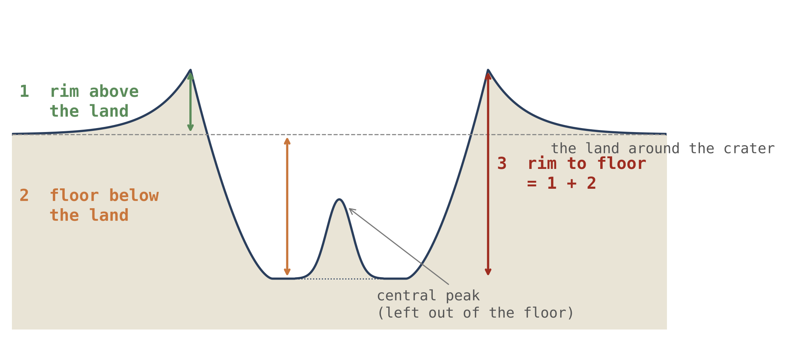
Abbildung 1 zeigt einen Krater im Schnitt: Die gestrichelte Linie ist das Niveau des umgebenden Geländes, der kurze grüne Pfeil links ist der Rand, der über diesem Niveau steht, der orange Pfeil ist der Kraterboden, der darunter liegt, und der lange rote Pfeil rechts ist der gesamte Abfall vom Randkamm zum Kraterboden. Der Zentralberg erhebt sich vom Kraterboden, und er wird ausgelassen, wenn der Kraterboden gelesen wird.
Die Größenklassen und die tiefere Hälfte. Der Kratervergleich ist auf getrennte Größenklassen beschränkt — 20–30, 30–50 und 50–100 km. Die Unregelmäßigkeit des Randes und die Rauigkeit des Kraterbodens wurden innerhalb der tieferen Hälfte jeder Klasse verglichen, um Effekte späterer Auffüllung und Abtragung nicht mit der ursprünglichen Wucht der Landung zu verwechseln; die drei Höhen wurden über alle Krater verglichen. Der Grund für die tiefere Hälfte ist folgender: Ein teilweise abgetragener oder aufgefüllter Krater sieht glatter aus, als er entstand, und wären solche Krater dem Vergleich beigemischt, sähe eine Mondhälfte mit mehr abgetragenen Kratern so aus, als wäre auf ihr sanfter gelandet worden. Die Beschränkung des Vergleichs auf die tieferen, besser erhaltenen Krater beseitigt diese Verwechslung.
Die Ränder sind nicht gleich gut erhalten. Nach dem Erhaltungsgrad des Randes fallen 43% der Krater bei 90° W in die besser erhaltene Hälfte, 50% bei 90° O, 57% bei 180° und 46% bei 0°. Wären die Ränder überall gleich gut erhalten, wären es an jedem Längengrad 50%; die vorauslaufende Hälfte, 90° W, liegt darunter, und die Rückseite, 180°, darüber. Dies ist eine asymmetrische Verteilung der Erosion, nicht des Alters. Die nachlaufende Hälfte ist gegenüber der Bewegungsrichtung des Mondes geschützt, und im Lauf der Jahre blieben ihre Ränder erhalten; die vorauslaufende Hälfte weist in diese Richtung, und ihre Ränder wurden abgetragen. Aus diesem Grund werden die Rand- und Kraterbodenmaße oben in der tieferen Hälfte jeder Klasse gelesen.
Was wir jetzt in der Hand haben: die Begriffe des Modells, ein Vokabular für die Bestandteile des Kraters und drei Höhen, jede mit ihrem Bezugsniveau, die in den Teilen F–I getrennt gelesen werden.
Was die Reihe bereits festgelegt hat
Die Krater werden durch den Aufbau von Paper 3 gelesen. Der Ansatz: Die Phasen, in denen die Krater entstanden, werden einmal dargestellt und nicht neu abgeleitet.
Dieses Paper baut auf den vorangehenden Papers auf und wiederholt ihre Argumente nicht. Aus Paper 3, Der LEF-Mechanismus in der Praxis, übernimmt es die Art, wie der Körper auf der Erde aufgebaut wurde, und die Abfolge seiner Phasen; aus Paper 5, Die Maria, übernimmt es die Öffnungen, die das zurückkehrende Material auswarfen; aus Paper 7, Die Pole, übernimmt es, was mit den Kratern geschah, als sich der Körper rundete. Dieser Teil gibt an, was übernommen wird und wo jeder Punkt abgeleitet wurde, sodass ein Leser, der einen davon prüfen möchte, auf seine Quelle verwiesen wird.
B.1Die drei Stadien von Paper 3
Im Modell hob die schnell rotierende Erde eine Aufwölbung, die sich zur Form einer Birne verlängerte, und der Körper, der zum Mond wurde, wurde an der Spitze der Birne aufgebaut, wobei seine äußere Schale als Oberfläche einer Kuppel auf der Erde stand (Paper 3). Der Aufbau durchlief drei Stadien, benannt nach der Veränderung der Form des Körpers.
Die Krater entstanden in den drei Stadien von Paper 3. Bei der Rundung nach außen, als der auf der Spitze der Birne sitzende Körper zur Kugel wurde, veränderten sich die bereits auf der Schale vorhandenen Krater zusammen mit der Oberfläche, überall auf dieselbe Weise, und neue Krater kamen weiterhin an. In der darauf folgenden Abplattung — dem Hauptstadium der Entstehung — bildeten sich die meisten Krater, und die größten von ihnen: Die Sortierung war bereits fortgeschritten, und das ausgeworfene Material war leicht und wasserreich. Sortierung ist die Trennung einer Schmelze in schwerere und leichtere Anteile, so wie der Rahm in stehender Milch aufsteigt; bis zur Abplattung war sie so weit fortgeschritten, dass das, was die Öffnungen erreichte, der leichte, wasserreiche Anteil war. Die Kraft, ihn auszuwerfen, lieferte der Druck aus der Erde, der aus Rotation und Sortierung entstand und durch die Birne zu den Öffnungen geleitet wurde; die flüchtigen Stoffe in ihm — Wasser und andere Stoffe, die leicht zu Gas werden — halfen durch ihre Ausdehnung an der Mündung der Öffnung, und das leichte Material wurde weit und schnell geworfen. Bei der Rundung nach innen, als die Abplattung nachließ und der Körper dichter wurde, behielten die Krater ihre Größe, und die Pole sammelten sie (Paper 7).
| Stadium | Was mit den Kratern geschah | Wo es abgeleitet wurde |
|---|---|---|
| Rundung nach außen | Die Krater auf der Schale veränderten sich zusammen mit der Oberfläche, überall auf dieselbe Weise; neue Krater kamen weiterhin an | Paper 3 |
| Abplattung | Die meisten Krater bildeten sich, und die größten, aus leichtem, wasserreichem Material | Paper 3 (§B.6–B.7) |
| Rundung nach innen | Die Krater behielten ihre Größe; die Pole sammelten sie | Paper 3; Paper 7 (§D.5) |
Die Farbe der Zeilen markiert, wie viele Krater jedes Stadium erzeugte: die Abplattung, die dunkelste, erzeugte die meisten. Der Grundpunkt für die ganze folgende Analyse ist die letzte Spalte der dritten Zeile. Ein Krater, der auf der Schale entstand, solange sie auf der Erde lag, wurde mit ihr getragen und behielt seinen Durchmesser und seine Struktur, als sich der Körper rundete (Paper 3, §B.6; Paper 7, §D.5); er darf nicht neu berechnet werden, als wäre er in der heutigen Mondschwerkraft entstanden (§C.6). Die Öffnungen, die das Material auswarfen, sind die Maria von Paper 5 (§C.1).
Der Ausschluss der kleinen Krater. Krater von 5 km und weniger werden von Sprühmaterial und Sekundärkratern beherrscht und sind in diesem Paper vom Vergleich ausgeschlossen. Sie werden ausgelassen, weil sie sich keiner einzelnen Landung zuordnen lassen: Ein kleiner Krater kann eine primäre Landung sein, ein Brocken Auswurfmaterial aus einem benachbarten Krater oder ein Sprühtropfen aus einer nahen Öffnung, und ihre Zählung vermischt drei mechanisch verschiedene Populationen.
Die Krater: was ein Krater ist, wie viele Krater es gibt, und der Krater als Aufzeichnung des zurückkehrenden Materials
In der Literatur wird ein Krater als Zeichen eines Körpers gelesen, der von außen kam. Der Ansatz: Die Quelle des zurückkehrenden Materials wird benannt, die Krater werden gezählt, und die Krater um jede Quelle werden auf deren Material hin untersucht.
Dieser Teil beantwortet drei Fragen nacheinander. Woher kam das Material, das die Krater erzeugte (§§C.1–C.2)? Wie viele Krater gibt es, und wo stehen sie am dichtesten (§C.3, Study 1)? Und trägt ein Krater das Material seiner Quelle (§§C.4–C.5)? Der letzte Abschnitt, §C.6, fragt, wie groß ein zurückkehrender Körper sein musste, um einen gegebenen Krater auf dem Mutterkörper zu erzeugen, auf dem die Schwerkraft stärker und die Landung langsamer war als die eines Körpers, der von außen kommt und heute den Mond trifft.
C.1 Die Maria: woher das zurückkehrende Material kam
Die Öffnungen, aus denen das zurückkehrende Material geworfen wurde (Teil J), sind die Maria (Paper 5). In der flachen Phase sind sie die Öffnungen der Schale auf dem Mutterkörper, und das Material, das sie auswerfen, landet auf ihm mit den Geschwindigkeiten von §K.1; später sind sie die Öffnungen des Körpers selbst, und was sie auswerfen, fällt mit der Fluchtgeschwindigkeit des Körpers oder darunter auf ihn zurück (§K.4). Die beiden Geschwindigkeiten sind sehr verschieden. Auf dem Mutterkörper kehrt Material, das mit einer gegebenen Geschwindigkeit nach oben geworfen wird, mit derselben Geschwindigkeit auf dieselbe Höhe zurück — 5 km/s auf dem Hinweg, 5 km/s zurück (§K.1) —, wie ein Stein, der senkrecht nach oben geworfen wird und mit der Geschwindigkeit in die Hand zurückkehrt, mit der er sie verließ. Auf dem viel kleineren Körper war der Auswurf schwächer: Die Fluchtgeschwindigkeit, die Geschwindigkeit, oberhalb derer geworfenes Material nicht zurückkehrt, betrug etwa 2.0 km/s bei einer Dichte von 1,300 kg/m³ und etwa 2.3 km/s bei der Ablösung (§K.4), und alles, was langsamer war, fiel zurück.
Ein einziger Mechanismus hinter dem Auswurf (Einsicht des Autors). Rotation, Sortierung und Druck sind ein einziger physikalischer Mechanismus: Die Rotation erzeugt Zentrifugaldruck und treibt die Sortierung an; die Sortierung konzentriert das schwere Material und drängt den Rest nach außen. Das ist es, was Material aus einem jungen, schnellen und noch nicht sortierten Körper auswirft — und das meiste davon kehrt immer wieder zurück. Ein Körper, der bereits sortiert ist und langsam rotiert, kann keine Birne mehr bilden und keinen Mond mehr auswerfen.
Die Wiederverwertung des Materials an der Öffnung. Die meisten Krater nahe einem Mare wurden von diesem Mare erzeugt; wo zwei Maria nahe beieinanderliegen, landet das zurückkehrende Material des einen im Gebiet des anderen. Ein großer Teil dessen, was ein Mare auswirft, fällt in die Mündung seiner Öffnung zurück und wird erneut aufgeschmolzen; eine Landung außerhalb der Grenzen des Mare nimmt das Material aus dem Kreislauf, und am Landepunkt entsteht ein Krater. Das Bild ist das eines überkochenden Topfes: Die meisten Tropfen fallen in den Topf zurück, und nur die, die auf den Herd fallen, bleiben dort, wo sie gelandet sind. Das Material, das ein Mare in jedem Moment verlässt, trägt die Zusammensetzung des Mare in diesem Moment, und daher ist zu erwarten, dass die Chemie eines Mare und die der Krater neben ihm übereinstimmen. Dieser letzte Satz ist die Grundlage für den Test der Quelle in §C.5.
Wie die Literatur einen Krater liest. Die Literatur definiert einen Krater als eine Grube, die von einem exogenen Körper — einem Asteroiden oder Kometen — ausgehoben wurde, und das Mare als ein riesiges Becken derselben Art, das Hunderte von Millionen Jahren später mit Basalt gefüllt wurde, der aus dem Mantel aufstieg. Etwa 170 Krater mit zerbrochenem Boden, mit flachen, zerklüfteten Kraterböden, die Mare-Flecken und pyroklastische Schlote tragen [S9], werden als gewöhnliche Krater gelesen, die von unten durch eine Intrusion angehoben wurden, die sich als Sill (sill) unter dem Kraterboden ausbreitete. Ein pyroklastischer Schlot ist eine Stelle, an der gasreiche Schmelze als Sprühregen glasiger Kügelchen ausbrach; ein Sill ist eine flache Lage von Schmelze, die sich seitlich zwischen Schichten ihren Weg bahnte und das darüber Liegende anhob.
Wie das Modell dies liest. Ein Krater ist der Landepunkt des zurückkehrenden Materials. Es gibt keinen Schlag von außen und keine Intrusion: Unter dem Krater liegen die Schichten, auf denen das Material landete, und in seiner Mitte steht die Energie der Landung. Die beiden Lesarten stimmen darin überein, was zu sehen ist, und unterscheiden sich darin, was es erzeugte. Der Unterschied lässt sich prüfen, weil das Modell eine direkte Beziehung zwischen jedem Krater und einer nahen Quelle herstellt, deren Material der Krater tragen soll; die exogene Lesart bindet ihn an keinen bestimmten Ort auf dem Mond.
C.2Was der Krater vom Mare übernimmt
Der Mareboden, die Speisungskuppel und der Rand eines Mare sind Gegenstand von Paper 5 (Teile D–F) und werden hier nicht wiederholt. Zwei Dinge werden daraus übernommen. Der Mareboden als letzte Aufzeichnung. Ein Mareboden erstarrte, nachdem der größte Teil des zurückkehrenden Materials bereits gelandet war, und ist daher die letzte Aufzeichnung der Krater (§D.2). Sprühmaterial und flüchtige Stoffe am Rand. Der Rand eines Mare wurde von Sprühmaterial aufgebaut: Die Maria, die auf ihren Rändern viele kleine Krater tragen, sind sehr wahrscheinlich die an flüchtigen Stoffen reichen Maria, deren aktives Sprühmaterial am Saum der Öffnung landete und dort kleine Krater erzeugte (§O.1). Der erste Punkt erklärt, warum die Mareböden wenige Krater tragen: Sie waren noch flüssig oder schmolzen erneut, während die meisten Krater entstanden, und bewahrten nur, was nach ihrem Erstarren landete. Der zweite liefert einen Test, der mit den anderen in §O.1 ausgeführt ist: Die kleinen Krater am Rand eines Mare sollten dort zahlreicher sein, wo das Mare reicher an flüchtigen Stoffen war.
C.3Wie viele Krater
Die Frage, die dieser Abschnitt beantwortet, ist, wo auf dem Mond die großen Krater am dichtesten stehen und ob dieser Ort der ist, den das Modell vorhersagt, oder der, den die Literatur vorhersagt. Die beiden Vorhersagen weisen in entgegengesetzte Richtungen (Study 1, Schritt 1), sodass eine saubere Zählung zwischen ihnen entscheidet.
Die erste Vorhersage ist eine Zählung. Der Robbins-Katalog [S6] wird in vier Zählkappen mit 30° Radius auf dem Äquator gezählt, deren Zentren auf den vier Längengraden liegen: Krater ab 20 km pro Million km², wobei die Maria und South Pole–Aitken entfernt werden, und in der zweiten Spalte werden auch die 20 großen Becken entfernt.
| Zentrum der Zählkappe | Maria und SPA entfernt | Auch die Becken entfernt |
|---|---|---|
| 90° O — die nachlaufende Hälfte | 249 | 252 |
| 180° — die Rückseite | 203 | 221 |
| 90° W — die vorauslaufende Hälfte | 139 | 175 |
| 0° — die Vorderseite | 135 | 148 |
Die Tabelle wird von oben nach unten gelesen: Die Zeilen sind von der dichtesten zur dünnsten Zählkappe geordnet, und die Farbe verblasst mit der Dichte. Die nachlaufende Hälfte, 90° O, hält etwa 250 Krater ab 20 km pro Million km² Gelände; die vorauslaufende Hälfte, 90° W, und die Vorderseite, 0°, halten 135–175. Die zweite Spalte entfernt auch die großen Becken; sie hebt die ärmeren Zählkappen stärker an als die der nachlaufenden Hälfte, weil die Becken mehr von deren Kratern ausgelöscht hatten, ändert aber die Reihenfolge nicht.
Die nachlaufende Hälfte ist die dichteste und die vorauslaufende Hälfte unter den dünnsten, in der Reihenfolge, die die Tabelle von §K.4 vorhersagt. Der Mechanismus der Vorhersage. Der verbundene Körper rotierte mit der Erde. Material, das er von seiner nachlaufenden Hälfte auswarf, sank herab, während sich diese Hälfte von ihm entfernte, holte das Gelände daher von hinten ein, landete sanft und blieb liegen; Material, das von der Rückseite ausgeworfen wurde, blieb etwas hinter der Rotation zurück und driftete ebenfalls in Richtung 90° O. Daher sammelte die nachlaufende Hälfte ihr eigenes Auswurfmaterial und das der Rückseite. Die vorauslaufende Hälfte bewegte sich frontal in das hinein, was sie auswarf, wie ein Läufer, der in Regen hineinläuft, und wurde härter getroffen, aber nicht häufiger.
Die Größenverteilung. Der Unterschied liegt bei den kleinen und mittleren Kratern: In den Durchmesserklassen unterhalb von etwa 70 km hält die nachlaufende Hälfte in jeder Größenklasse eine 1.2- bis 2.4-mal so große Population wie die vorauslaufende Hälfte, und bei Durchmessern oberhalb dieser Schwelle gleichen sich die Populationen an, oder die vorauslaufende Hälfte ist reicher. Das ist, was das Modell erwartet: Das Auswurfmaterial des Körpers selbst war schwach und erzeugte die kleinen und mittleren Krater; die größten Krater entstanden in der Abplattung, aus den starken Auswürfen dieses Stadiums, und sind gleichmäßiger verteilt. Die Größenverteilung weist in dieselbe Richtung: Die Population bei 90° O ist zu kleineren Kratern hin verschoben, um einen Faktor von 0.75–0.81 gegenüber 90° W, im Einklang mit sanfteren Landungen derselben Materialmasse, auch wenn das Intervall dieses Faktors noch die Eins einschließt. Ein Faktor kleiner als eins bedeutet, dass dieselbe Population von Landungen auf der nachlaufenden Hälfte etwas kleinere Krater erzeugte; weil sein Intervall noch die Eins einschließt, stützt dieses Maß die Lesart, entscheidet sie aber allein noch nicht. Die Dichte bei 90° O wird auch über die Maria dieser Hälfte gelesen (Paper 5); die beiden Lesarten sind eine, weil die Maria Öffnungen sind und die Öffnungen auswerfen.
Hinter den Kulissen. Eine frühe Fassung dieser Zählung nannte 90° O „die vorauslaufende Seite“, unter der Annahme, dass der verbundene Körper Material einholt, das hinter ihm zurückbleibt. Nach der Konvention der Reihe ist 90° O die nachlaufende Hälfte, und der dort gezählte Überschuss hatte einen falschen Namen erhalten. Das Lesen der Flüge aus den Öffnungen des Körpers selbst, und nicht des Mutterkörpers, stellte den Überschuss an seinen richtigen Ort und fügte die zweite Vorhersage hinzu, die der Wucht der Landung.
Das Phänomen. Die großen Krater des Mondes zeigen eine ungleichmäßige Verteilung in der Länge. Die Wissenslücke. Die Literatur sagt einen Überschuss auf der vorauslaufenden Hälfte, 90° W, voraus, weil sich der Mond in die Körper auf seinem Weg hineinbewegt; das Modell sagt einen Überschuss auf der nachlaufenden Hälfte, 90° O, voraus, weil das Auswurfmaterial des Körpers selbst dorthin zurückfiel (§K.4). Eine saubere Zählung, die die Maria — die Krater auslöschen — entfernt, ist nötig, um zwischen ihnen zu entscheiden. Die Forschungsfrage: Wenn die Maria und South Pole–Aitken aus jedem Gebiet entfernt sind, welcher der vier Längengrade hält die meisten Krater ab 20 km, und liegt der Unterschied bei den kleinen oder bei den großen Kratern?
Für Körper, die von außen kommen, trifft ein Mond in synchroner Rotation mehr von ihnen auf seiner vorauslaufenden Seite; Modelle des heutigen Bombardements sagen einen Überschuss von einigen zehn Prozent auf der vorauslaufenden Seite voraus [S22, S23]. Ein Mond in synchroner Rotation ist ein Mond, der sich bei jedem Umlauf einmal um seine Achse dreht und daher der Erde stets dieselbe Seite zuwendet; seine vorauslaufende Seite trifft dann stets zuerst auf die ihm entgegenkommenden Körper, so wie die Windschutzscheibe eines fahrenden Autos mehr Regen sammelt als die Heckscheibe. Der Überschuss dient als Grundlage für die Korrektur der Chronologie der Mondkrater [S22]. Eine Zählung in gleichen Zählkappen auf einem globalen Katalog [S6] ist die übliche Methode. Was hier neu ist: Die vier Längengrade werden nebeneinander gezählt, die Maria und SPA werden aus jeder Zählkappe entfernt, und auch die großen Becken werden entfernt, sodass kein Gebiet aufgrund dessen, was in ihm ausgelöscht wurde, begünstigt wird.
Die nachlaufende Hälfte, 90° O, hält mehr Krater ab 20 km als die vorauslaufende Hälfte, 90° W; der Überschuss ist in den kleinen und mittleren Größenklassen konzentriert, die vom Auswurfmaterial des Körpers selbst erzeugt wurden, und nicht bei den größten Kratern.
Art der Forschung: quantitativ; die Kraterpopulation wird auf die Flächeneinheit normiert und zwischen Gebieten verglichen. Die Stichprobe: die Krater ab 20 km im Robbins-Katalog [S6] in vier Zählkappen mit 30° Radius auf dem Äquator, mit Zentren bei 0°, 90° O, 180° und 90° W. Die Werkzeuge: der Katalog, die Mare-Karte von LROC, eine Maske von SPA und den 20 großen Becken sowie der Code, der Krater und Flächen auf der Kugel zählt. Das Maskenprotokoll. Eine Maske ist eine Karte der Gebiete, die auszulassen sind: Jeder Krater und jedes Flächenstück, die innerhalb ihrer Grenzen liegen, werden aus der Zählung entfernt, bevor die Dichte berechnet wird. Die Tabelle gibt die Begründung für jede Wahl.
| Wahl | Warum, in einfachen Worten |
|---|---|
| Gleich große Zählkappen auf dem Äquator | Damit die Breite, die die Krater zu den Polen hin verdichtet, bei allen vier gleich ist |
| Die Maria werden aus jeder Zählkappe entfernt | Die Maria bedeckten die Krater unter sich; eine Zählkappe mit mehr Mare sähe allein aus diesem Grund ärmer aus |
| SPA und die großen Becken werden entfernt | Ein riesiges Becken löschte die Krater in seinem Inneren aus; ihre Entfernung bewahrt einen Vergleich von Gleichem mit Gleichem |
| Dichte pro Million km des verbleibenden Geländes | Nach den Masken behalten die Zählkappen unterschiedliche Flächen; die Normierung auf eine Dichte macht sie vergleichbar |
In der Zählkappe bei 90° O (nachlaufende Hälfte) 582 Krater auf 2.34 Millionen km Gelände; bei 90° W (vorauslaufende Hälfte) 316 auf 2.27; bei 180° (Rückseite) 424 auf 2.09; bei 0° (Vorderseite) 193 auf 1.43. Ohne die großen Becken: 370 auf 1.47, 308 auf 1.76, 368 auf 1.67 und 154 auf 1.04. Die Dichten sind die Tabelle am Anfang des Abschnitts. Jede Dichte ist die Zählung geteilt durch die Fläche: 582 Krater auf 2.34 Millionen km ergeben 249 pro Million km. Der Zählkappe der Vorderseite bleibt am wenigsten Gelände, 1.43 Millionen km, weil der größte Teil von ihr Mare ist und durch die Maske entfernt wurde.
Ist der Unterschied größer als der Zufall? Eine Kraterzählung streut etwa mit ihrer Quadratwurzel; das Konfidenzintervall eines Verhältnisses zweier Dichten folgt aus den beiden Zählungen. Eine Zählung von 316 Kratern etwa ist zu erwarten, dass sie sich von einer Stichprobe zu einer anderen, gleich wahrscheinlichen, um etwa 18 ändert; das 95%-Konfidenzintervall ist der Bereich, in dem das wahre Verhältnis mit diesem Vertrauensniveau liegt. Das Dichteverhältnis zwischen der nachlaufenden und der vorauslaufenden Hälfte: 1.79 (95%-Intervall: 1.56–2.05), wenn die Maria und SPA entfernt sind, und 1.44 (1.24–1.67), wenn auch die Becken entfernt sind. Keines der Intervalle erreicht die Eins. Ein Verhältnis von eins würde das Fehlen eines Unterschieds bedeuten; ein Intervall, das über eins bleibt, bedeutet, dass der Überschuss der nachlaufenden Hälfte kein Zufall der Zählung ist. Weil Krater sich räumlich um ihre Quellen häufen, wurde das Intervall erneut durch Wiederholungsstichproben (Bootstrap) ganzer Zellen von 5° mal 5° berechnet, nicht einzelner Krater: 1.48–2.19, immer noch weit von eins entfernt. Eine Wiederholungsstichprobe zieht die Zellen immer wieder zufällig, mit Zurücklegen, und berechnet das Verhältnis jedes Mal neu; das Ziehen ganzer Zellen hält die Häufungen zusammen, sodass eine Häufung nicht als viele unabhängige Krater gezählt wird, und verhindert eine künstliche Verengung des Konfidenzintervalls. Wo der Unterschied liegt. Teilt man die Krater in Größenklassen, hält die nachlaufende Hälfte in jeder Klasse unterhalb von etwa 70 km das 1.2- bis 2.4-Fache der Krater der vorauslaufenden Hälfte; oberhalb dieser Schwelle gleichen sich die Populationen an. Die Form der Größenverteilung. Die Population bei 90° O ist um einen Faktor von 0.75–0.81 gegenüber 90° W zu kleineren Kratern hin verschoben; das Intervall dieses Faktors schließt noch die Eins ein.
Ergebnis. Die Hypothese wird gestützt: Die nachlaufende Hälfte hält die meisten Krater, mit einem Abstand, den der Zufall nicht erklärt, und der Überschuss ist in den kleinen und mittleren Größen konzentriert. Der Überschuss auf der vorauslaufenden Hälfte, den die Literatur erwartet, wird nicht gefunden. Einschränkungen. Die Zählkappen sind vier Stichproben der Oberfläche und kartieren nicht kontinuierlich die gesamte Längenkurve; die Verschiebung der Größenverteilung erreicht noch keine Signifikanz. Richtungen für weitere Forschung. Eine Zählung in schmalen Längenstreifen auf jeder Breite, mit Konfidenzintervallen, die die räumliche Häufung berücksichtigen, und dieselbe Zählung für Krater von 5–20 km.
C.4 Die Aufzeichnung der Krater ist die Aufzeichnung der Maria
Die Aufzeichnung der Krater ist die Aufzeichnung der Maria. Wenn die Maria die Krater erzeugten, ist die Kraterdichte eine Karte der Orte, an denen die Maria wirkten — der sichtbaren Maria und der verschütteten Speisungskuppeln von §D.1 gleichermaßen —, und die zuletzt entstandenen Krater sind die der zuletzt aktiven Maria; ältere Krater darunter wurden von derselben Wärme ausgelöscht. Ein aktives Mare verteilt seine Krater um seinen Saum — der Rand von Crisium ist von ihnen umgeben —, und wo es keine Maria gibt, sondern nur Wärme, wurden Krater ausgelöscht und keine neuen erzeugt. Material, das ein Mare auswirft, kann auch weit entfernt von ihm landen: Ein Krater, der weit von jedem Mare liegt, kann zu einem sichtbaren Mare oder zu einer verschütteten Speisungskuppel gehören. Eine verschüttete Speisungskuppel ist eine Quelle, die früh wirkte und später von den Schichten der Rückseite bedeckt wurde, zusammen mit den Kratern, die sie erzeugte; sie ist an der Oberfläche morphologisch nicht erkennbar und heute nur im Schwerefeld sichtbar (Paper 5; §D.1).
Die Aufzeichnung ist die zuletzt geschriebene, nicht die erste. Eine Oberfläche bewahrt nur die Krater, die nach ihrem letzten Erstarren auf ihr landeten; was zuvor landete, schmolz oder wurde bedeckt. Die großen Maria der Vorderseite sind die letzten von allen: Mit der Ablösung wurden sie vom Druck der Erde abgeschnitten; heiß und von geringer Viskosität erstarrten sie langsam, von außen nach innen, über Hunderte von Millionen Jahren — nachdem der größte Teil des zurückkehrenden Materials bereits gelandet war. Ihre Oberflächen sind glatt und tragen wenige Krater, höchstens Reste hier und da: Mare Imbrium hält 10 Krater ab 20 km auf 871,000 km² Mareboden, 11 pro Million km², gegenüber 205 im Hochland (Paper 5, §I.5; in einer früheren Fassung Paper 3, §C.10 zugeschrieben). Der Mareboden von Imbrium trägt daher etwa einen Krater auf je achtzehn, die eine gleich große Hochlandfläche trägt: Er erstarrte, nachdem die meisten Krater bereits gefallen waren.
C.5Der Test der Quelle
Die Frage, die dieser Abschnitt beantwortet, ist, ob ein Krater das Material des Mare trägt, das ihn erzeugte. Wenn ja, sind die Maria nicht nur der Ort, an dem die Krater liegen, sondern auch der Ort, von dem ihr Material kam.
Der Test der Quelle. Material, das ein Mare auswirft, trägt dessen Chemie. Ein Krater nahe einem Mare, der die Signatur des Mare trägt — Eisen, Titan, Thorium —, wurde von ihm erzeugt; ein Krater ohne diese Signatur kam von weiter her. Der Test ist in §O.1 als Protokoll formuliert: Die Krater um jedes Mare werden ausgewählt und eingefroren, bevor ihre geochemischen Daten gelesen werden, und erst danach wird der Anteil derer, die die Signatur des Mare tragen, als Funktion der Entfernung von ihm gemessen. Erst die Krater auszuwählen und ihre Chemie erst danach zu lesen, verhindert eine Auswahlverzerrung: Die Antwort kann die Auswahl nicht lenken, auch nicht unbewusst.
Eine eingebaute Vorsicht: die Wucht der Landung. Eine Vorsicht ist in den Test eingebaut, und sie betrifft die Wucht, mit der das zurückkehrende Material landete. Eine harte Landung gräbt das darunterliegende Gelände aus und legt es frei, und der Krater zeigt dann vor allem die Chemie dieses Geländes; eine sanfte Landung legt das Gelände womöglich kaum frei, und mehr vom zurückkehrenden Material bleibt an der Oberfläche. Die Wucht der Landung hängt vom Ort ab: Die vorauslaufende Hälfte, 90° W, empfing die harten Landungen, die nachlaufende Hälfte, 90° O, die sanften. Sie wurde nach Längengrad gemessen, und das Innere des Kraters hält auf beiden Hälften dasselbe Material (§L.4). Diese Vorsicht spaltet das Ergebnis daher nicht: Das Material im Krater ist dasselbe, ob die Landung hart oder sanft war.
Der Test der Quelle, wie gemessen. Die Quellgebiete. Die Maria sind die 34 Öffnungen von Paper 5, identifiziert an den Schweregradienten, jede über einer Speisungskuppel (34 in Paper 5, Anhang A; der dortige Krustentest verwendete die 36 ursprünglichen Markierungen); die dunklen Ebenen ohne Speisungskuppel darunter — Procellarum, Tranquillitatis, Fecunditatis und dergleichen — sind keine Maria, sondern an Ort und Stelle geschmolzene Kruste (Paper 5, §C.2), und sie werden getrennt gelesen. Der Schweregradient ist das Maß dafür, wie schnell sich die Schwere von Ort zu Ort ändert; er ist am stärksten am Saum eines dichten Körpers unter der Oberfläche und zeichnet daher dessen Umriss nach. Die Stichprobe. Der Test lief auf 11,574 Kratern von 5–60 km außerhalb des Basalts, um sechs Maria (Crisium, Imbrium, Moscoviense, Nectaris, Serenitatis, Smythii) und drei Ebenen (Procellarum, Tranquillitatis, Fecunditatis), ausgewählt und eingefroren, bevor irgendeine Chemie gelesen wurde. Die Kontrollstichprobe. 5,922 größenangepasste Kontrollkrater in mehr als 600 km Entfernung von jedem Basalt [S10]. Die Kontrollen sind Krater derselben Größen, weit entfernt von jedem Mare, wo kein Mare-Material zu erwarten ist; sie geben das Niveau des Geländes, das einem Mare nichts verdankt. Die Datenquellen. Eisen und Titan stammen aus den Karten der Mehrkanalkamera von Kaguya (Multiband Imager), das Thorium von Lunar Prospector:
| Entfernung vom Rand | 0–50 km | 50–150 | 150–300 | 300–600 | Kontrollen (600) |
|---|---|---|---|---|---|
| Um die sechs Maria | |||||
| FeO des Geländes, 3–4 Radien (Gewichtsprozent) | 5.96 | 3.54 | 3.28 | 3.40 | 2.30 |
| FeO im Krater (Gewichtsprozent) | 5.88 | 3.33 | 3.17 | 3.30 | 2.37 |
| Krater minus sein Gelände, FeO | |||||
| Th des Auswurfmaterials (ppm; regionaler Wert) | 2.16 | 1.66 | 1.36 | 1.39 | 1.02 |
| Um die drei Ebenen | |||||
| FeO des Geländes (Gewichtsprozent) | 9.41 | 6.10 | 4.24 | 2.60 | 2.30 |
| Krater minus sein Gelände, FeO | |||||
| Th des Auswurfmaterials (ppm) | 3.13 | 2.65 | 1.99 | 1.61 | 1.02 |
Wie die Tabelle zu lesen ist. Die Spalten sind die Entfernung vom Rand des Mare oder der Ebene, die von Spalte zu Spalte wächst, mit den fernen Kontrollen in der letzten Spalte; die Stärke des Orange zeigt, wie viel Mare-Material jedes Feld hält, und sie verblasst mit wachsender Entfernung vom Rand. Das Gelände wird in einem Ring von 3–4 Kraterradien um jeden Krater gelesen, wobei der kartierte Basalt entfernt ist, sodass es das Gelände neben dem Krater ist und nicht das Mare selbst. Das Innere des Kraters wird innerhalb seines Randes gelesen. Die Zeile Krater minus sein Gelände wird Krater für Krater berechnet, jeder Krater gegen das ihm benachbarte Gelände; daher ist sie nicht einfach die Differenz der beiden Zeilen darüber, die Werte ganzer Ringe sind. Das Thorium wird auf dem Auswurfmaterial gelesen, und es ist ein regionaler Wert, weil die Zellen von Lunar Prospector breit sind, breiter als die meisten Krater.
Abklingen um die Maria. Um die Maria trägt das Gelände das Eisen des Mare: das Zweieinhalbfache der Kontrollen innerhalb von 50 km und noch das Anderthalbfache bei 300–600 km; der Krater ist bei jeder Entfernung etwas ärmer als sein Gelände. In Zahlen: 5.96 Gewichtsprozent FeO innerhalb von 50 km gegenüber 2.30 in den Kontrollen und 3.40 bei 300–600 km. Das Thorium zeigt ein paralleles Abklingen, von 2.16 ppm nahe dem Rand auf 1.02 in den Kontrollen. Die Differenz zwischen dem Krater und seinem Gelände ist klein, doch ihr Vorzeichen ist nahe einem Mare bei jeder Entfernung konstant, und in den Kontrollen verschwindet sie fast (). Sie ändert das Hauptergebnis nicht, das Abklingen der Signatur des Mare mit der Entfernung; was die Differenz misst und wie das Modell sie liest, wird in §L.2 dargestellt.
Unterscheidung zwischen Öffnung und Ebene. Um die Ebenen ist das Gelände nahe dem Rand reicher und fällt weit von ihnen auf das Niveau der Kontrollen: Die Ebenen warfen nichts aus und ergossen nichts, und der Überschuss neben ihnen reicht nicht weit. Ihr Eisen beginnt bei einem höheren Wert, 9.41 Gewichtsprozent innerhalb von 50 km, und fällt auf 2.60 bei 300–600 km, einen Wert, der fast gegen die 2.30 der Kontrollen konvergiert; um die Maria bleibt in derselben Entfernung ein Überschuss. Der Unterschied in der Reichweite ist der Unterschied zwischen Öffnung und Ebene: Eine Öffnung warf ihr Material über Hunderte von Kilometern aus, und die Maria, außer den Maria des Kontakts, ergossen ihre Schmelze auch über ihren Saum hinaus; eine Ebene aus an Ort und Stelle geschmolzener Kruste wirkte nicht als Auswurfmotor und warf nichts aus und ergoss nichts.
Die Studie. Die Studie hinter dem Test der Quelle, Study 2, wird in §L.1 Schritt für Schritt dargestellt.
C.6 Kratergröße und Masse des zurückkehrenden Körpers
Die Frage, die dieser Abschnitt beantwortet, ist, wie groß ein zurückkehrender Körper sein musste, um auf dem Mutterkörper einen Krater gegebener Größe zu erzeugen. Sie ist wichtig, weil sich der Mutterkörper vom heutigen Mond in zweierlei Hinsicht unterscheidet und beide in dieselbe Richtung wirken: Seine Schwerkraft war stärker, was einen Krater bei gleichem Schlag verkleinert, und die Landung war langsamer als die eines Asteroiden, was ihn ebenfalls verkleinert. Ein Krater derselben Größe erforderte daher einen schwereren zurückkehrenden Körper. Das Werkzeug ist ein Skalierungsgesetz: eine an Experimente angepasste Regel, die die Kratergröße mit der Größe und Geschwindigkeit dessen, was ihn erzeugte, und mit der Schwerkraft des Ziels verknüpft.
Mathematische Entwicklung. In einem idealen Skalierungsgesetz im Schwerkraftregime, bei konstanten übrigen Materialeigenschaften:
Hier ist der Durchmesser des Aushubhohlraums — der anfänglichen Grube, die ausgehoben wird, bevor die Wände abrutschen —, der Durchmesser des zurückkehrenden Körpers, seine Landegeschwindigkeit und die Schwerebeschleunigung des Ziels. Der Term besagt, dass eine schnellere Landung breiter aushebt und eine stärkere Schwerkraft den Krater begrenzt. Der Exponent ist der empirische Materialexponent des Ziels, in Experimenten gemessen: höher für ein festes, nicht poröses Ziel und niedriger für ein lockeres oder poröses Ziel; dieses Paper prüft die Werte 0.35 und 0.55, und wird daraus abgeleitet. Schwerkraftregime bedeutet, dass die Kratergröße durch das Gewicht des Materials begrenzt ist, das nach außen gehoben werden muss, und nicht durch seine Festigkeit — eine Bedingung, die bei kilometerbreiten und größeren Kratern erfüllt ist.
Daraus folgt für denselben Aushubdurchmesser:
Gleichung (2) folgt aus (1), wenn man konstant hält und die Masse des zurückkehrenden Körpers als sein Volumen schreibt, das wie wächst. Sie besagt, dass die zum Aushub desselben Durchmessers nötige Masse mit der Stärke der Schwerkraft des Ziels wächst und mit der Landegeschwindigkeit sinkt: Ein schwererer Schlag ist dort nötig, wo die Schwerkraft stärker ist und wo die Landung langsamer ist.
Der kombinierte Verstärkungseffekt des Mutterkörpers. Vergleicht man einen äußeren Einschlagskörper mit 15 km/s bei einer Schwerebeschleunigung von 1.62 mit einer Landung mit 5 km/s bei 8.25, ergibt sich ein Massenverhältnis von etwa 7.45 für und etwa 23.47 für . Der erste Fall ist die Lesart der Literatur: ein Körper, der von außen kommt und auf dem heutigen Mond landet, dessen Schwerebeschleunigung 1.62 m/s² beträgt. Der zweite ist der des Modells: zurückkehrendes Material, das mit 5 km/s auf dem Mutterkörper beim Auswurfradius landet, wo die Schwerebeschleunigung 8.25 m/s² betrug. Die Schwerkraft ist etwa fünfmal größer und die Geschwindigkeit dreimal kleiner, und beide Faktoren wirken zusammen, um die nötige Masse zu erhöhen; daher reicht das Verhältnis von etwa 7 bis etwa 23, je nach . Dies sind Sensitivitätstests des Skalierungsgesetzes [S5] und keine Massenrekonstruktion bestimmter Krater. Der Zielkoeffizient, die Dichte des zurückkehrenden Körpers, die Festigkeit, die Schichtung und der Übergang vom Aushubhohlraum zum endgültigen Krater erfordern eine Kalibrierung.
Keine Rechnung mit der heutigen Schwerkraft. Dieser Test ist wichtig, weil der vorgeschlagene Krater auf dem Mutterkörper entstand, bevor er übertragen wurde. Er darf nicht automatisch mit der heutigen Mondschwerkraft berechnet werden; einmal entstanden, wurde er auf der Schale getragen und behielt seine Größe (Paper 3, §B.6; Paper 7, §D.5). Eine geringe Dichte des Magmas bestimmt nicht die Porosität der Krustenoberfläche oder deren . Die Dichte des ganzen Körpers sagt nichts Direktes darüber, wie locker die oberste Schicht an der Stelle war, an der der Krater entstand, und eben diese Schicht bestimmt . Wie viel von der Kruste die zurückkehrenden Körper aufbauten, wird daher hier nicht festgelegt: Es fehlen ein rekonstruierter Katalog, eine Kalibrierung für jedes Ziel und der erhaltene Massenanteil. Jeder dieser drei Punkte ist eine Anforderung, um die Sensitivität in ein Massenbudget zu verwandeln, und sie sind mit der weiterführenden Arbeit aufgeführt.
Die Steilheit der Kurve. Abbildung 2 zeichnet Gleichung (2) als Kurve: Die horizontale Achse ist der Skalierungsexponent , die vertikale das Massenverhältnis, und die beiden Punkte markieren die oben berechneten Werte. Ihre Botschaft ist die Steilheit der Kurve: Über den plausiblen Bereich von ändert sich das Massenverhältnis um das Dreifache, sodass das Ziel kalibriert werden muss, bevor irgendeinem Krater eine Masse zugeschrieben wird.
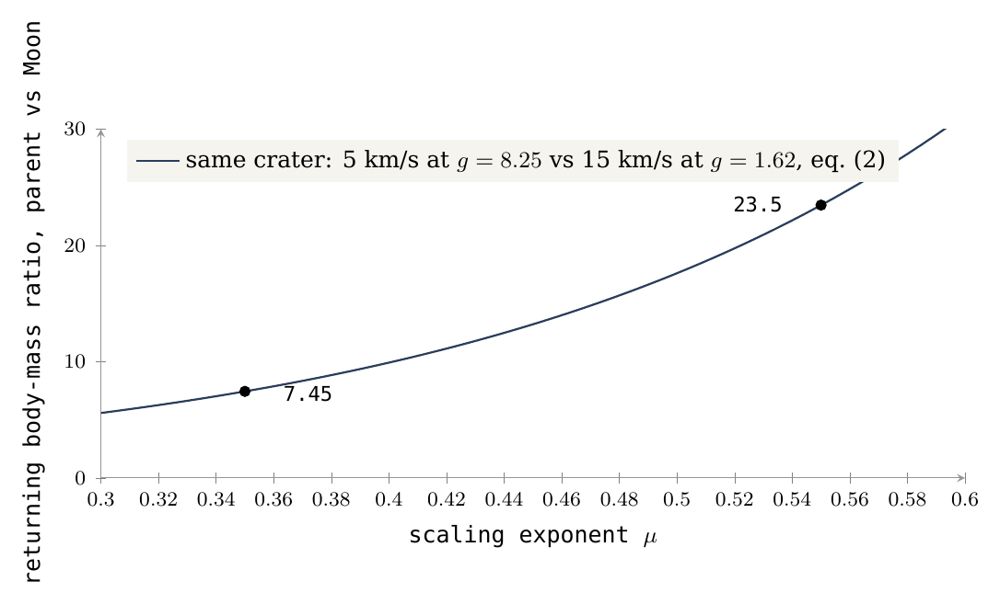
Was wir jetzt in der Hand haben: Die Quelle der Krater ist benannt (die Maria und die verschütteten Speisungskuppeln), ihre Zählung nach Längengrad, in der die nachlaufende Hälfte die dichteste ist, das Eisen des Mare, das im Gelände um jedes Mare gefunden wird und mit der Entfernung abklingt, und die Skalierung des zurückkehrenden Körpers, die durch eine Sensitivität und noch nicht durch eine Kalibrierung begrenzt ist.
Die Krater, sichtbare und verschüttete
Nicht jeder Krater, der entstand, ist heute sichtbar. Der Ansatz: Die Krater werden dort gezählt, wo sie auf dem Gelände liegen, wo sie zusammen mit den Quellen der Rückseite verschüttet wurden und wo die Mareböden sie bedeckten — jeweils gegenüber dem Land um sie herum, wobei die Maria auf beiden Seiten entfernt sind.
Teil C zeigte, dass die Maria die Quelle des zurückkehrenden Materials sind, sodass die Kraterdichte eine Karte der Orte ist, an denen die Maria wirkten. Eine solche Karte lässt sich nur lesen, wenn man weiß, welche Krater aus ihr verloren gingen. Dieser Teil zählt die fehlenden Krater. Ein Krater kann auf zwei verschiedene Weisen aus dem Blick verschwinden, und das Modell wendet eine scharfe terminologische Unterscheidung zwischen ihnen an: zwei verschiedene Wörter für die zwei Weisen.
Verschüttet ist ein Begriff, der nur auf die Rückseite angewendet wird, und nur in direkter Beziehung zu einer Quelle. Eine Speisungskuppel, die früh wirkte und dann erlosch, wurde mit allem um sie herum von den Schichten bedeckt, die später die Rückseite aufbauten; die Krater, die sie erzeugte, lagen auf demselben Gelände und sanken mit ihm ab. Nichts von ihnen ist sichtbar; die Kuppel darunter findet man nur an ihrer Schwere (§D.1).
Eingeschmolzen ist ein Begriff, der auf die Mareböden angewendet wird. Ein Mare ist eine Öffnung über einer Speisungskuppel, und solange es aktiv war, war sein Mareboden flüssig oder weich. Zurückkehrendes Material, das auf ihm landete, erzeugte einen Krater in einem Gelände, das noch nicht erstarrt war: Der Krater sank in den Mareboden ein und schloss sich und hinterließ höchstens seinen Ring, der fast auf dem Niveau des Mare steht (§D.2). Die Lesart der Literatur. Auch die Literatur kennt diese Ringe, nennt sie aber „verschüttete“ oder „überflutete“ Krater: In ihrer Lesart wurde der Krater in einer alten, festen Oberfläche ausgehoben, und Basalt, der lange danach aufstieg, füllte ihn. Die beiden Lesarten unterscheiden sich darin, was zuerst kam. In der Literatur ist der Krater älter als der Basalt; im Modell sind Krater und Basalt gleichzeitig: Der Krater entstand, während der Basalt noch aktiv war. Aus diesem Grund nennt das Paper den Ring auf einem Mareboden nicht „verschüttet“; das Wort erscheint im Folgenden nur dort, wo die Lesart der Literatur beschrieben wird. Die beiden Lesarten hinterlassen auch verschiedene Spuren — in der Masse unter dem Krater (§D.3) und in seinem Rand (§E.6) —, und diese werden geprüft.
D.1 Krater, die zusammen mit den Quellen der Rückseite verschüttet wurden
Die Frage dieses Abschnitts ist, ob die Krater, die die verborgenen Quellen der Rückseite erzeugten, zusammen mit ihnen absanken, und ob die heute sichtbaren großen Krater allein von den sichtbaren Maria abhängen.
Die Quellen, die nicht mehr sichtbar sind. Die sichtbaren Maria sind nicht die einzigen Quellen. Paper 5 (§D.4–D.5) findet 73 Speisungskuppeln im Schwerefeld: dichte, runde Körper, von denen jeder der erstarrte Rest des Materials ist, das unter der Öffnung aufstieg. Von den 40 Kuppeln auf der Rückseite sind 36 unter hellem Hochland verschüttet, mit demselben Eisen und demselben Thorium über ihnen wie um sie herum und mit einer um 8–13 km dickeren Kruste. Beide Tatsachen sagen dasselbe: Die Oberfläche über diesen Kuppeln ist die gewöhnliche Decke der Rückseite, die über sie gelegt wurde, nachdem sie aufgehört hatten zu wirken, und die überschüssige Kruste ist die Dicke dieser Decke. Eine Quelle, die früh, in der Zeit der Abplattung, wirkte und dann erlosch, wurde von den Schichten bedeckt, die die Rückseite aufbauten — dem Sial des Mutterkörpers und dem zurückkehrenden Material, Schicht auf Schicht abgelagert (Paper 3, §B.7) —, und die Krater, die sie erzeugte, wurden mit ihr bedeckt. Das hat eine messbare Folge. Eine Quelle verteilt Krater um sich, sodass eine aktive Quelle, die freigelegt blieb, von einer Menge Krater umgeben wäre. Um die verschütteten Kuppeln häufen sich die Krater nicht: Ihre Dichte auf der Kuppel und um sie herum ist gleich der weiter entfernten oder niedriger (0.48–0.95 derjenigen auf dem Gelände in 3–5 Radien Entfernung), weil die zu ihrer Zeit entstandenen Krater mit ihnen verschüttet wurden. Ein Verhältnis von eins bedeutet „wie auf dem weiter entfernten Gelände“; jeder Wert hier ist gleich oder niedriger.
Die großen Krater. Die großen Krater, mit Durchmessern ab 20 km, wurden nach ihrer Dichte über den ganzen Mond kartiert, wobei das Gelände der Maria entfernt und die sichtbaren Maria und die Speisungskuppeln auf die Karte gelegt wurden (Abbildung 3). Das Gelände der Maria wird entfernt, weil ein Mareboden seine Krater aus einem eigenen Grund verlor (§D.2); es zu belassen, würde jedes Gebiet mit Maria kraterarm erscheinen lassen und die beiden Fragen vermischen. Die dichtesten Geländeflächen liegen im Norden der Rückseite, zwischen 140° W und 180° und zwischen 120° O und 150° O, im Süden der Vorderseite unterhalb von Nectaris und Nubium und im Südosten der Rückseite; die dünnsten umgeben die großen Maria der Vorderseite und Orientale. Fern von den heutigen Maria stehen die großen Krater dichter, nicht dünner: für Durchmesser von 10–50 km 467 pro Million km innerhalb von 150 km vom Rand eines Mare gegenüber 1,040 jenseits von 1,000 km — mehr als doppelt so viele fern von den Maria wie nahe bei ihnen. Das macht sie den sichtbaren Maria nicht fremd: Was ein Mare auswirft, kann weit von ihm landen, wie ein kräftig geworfener Stein, der weit von der Hand landet. Die heute sichtbaren großen Krater stammen von Speisungskuppeln beider Arten — den verschütteten Kuppeln der Rückseite und den heute sichtbaren Maria.
Die chronologische Abfolge der Materialsortierung. Warum bestimmte Quellen die größten Krater erzeugten, ist ebenfalls Teil derselben Geschichte. Das Wasser kam spät: Der Vorgang der Sortierung — die Sortierung des Materials des Mutterkörpers nach seiner Dichte und nach dem, was es trägt — schritt während des Aufbaus voran, und die späten Ströme waren reicher an flüchtigen Stoffen (Paper 3, §B.7); die an flüchtigen Stoffen reichen Maria warfen das wassergesättigte Material aus und erzeugten so die größten Krater der Zeit der Abplattung (Paper 3, §B.6). Die andere Seite derselben Sortierung ist das Eisen: Je tiefer die Schicht, desto mehr Eisen enthält sie, und mit dem Entweichen der flüchtigen Stoffe bleibt das schwere Material zurück — die erstarrte Speisungskuppel ist der dichteste und eisenreichste Körper von allen. Daher lassen sich die Kuppeln im Schwerefeld auch in Gebieten erkennen, in denen die helle Oberfläche keinerlei Hinweis zeigt.
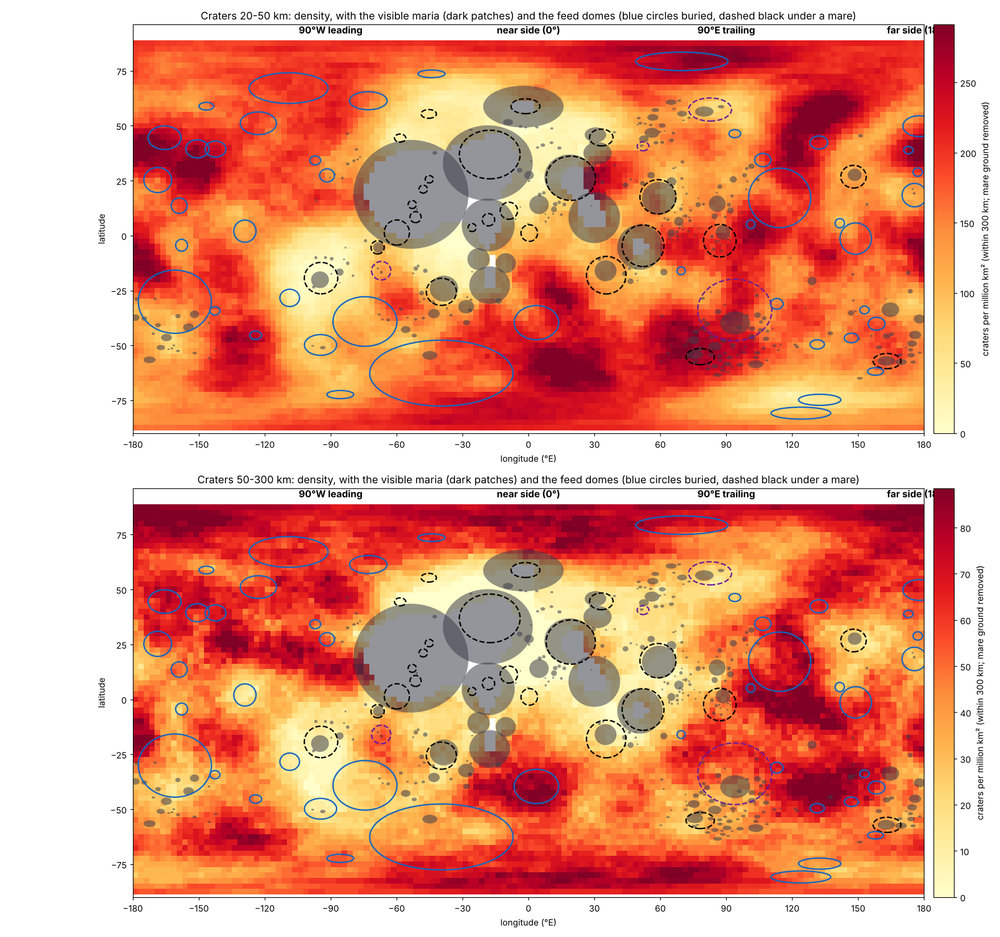
Wie Abbildung 3 zu lesen ist: Jeder Punkt der Karte ist nach der Zahl der großen Krater innerhalb von 300 km um ihn gefärbt, sodass dichtes Gelände als breite helle Flecken hervortritt und dünnes Gelände als dunkle Flecken. Vergleichen Sie die Flecken mit den darübergelegten Schichten. Die dichtesten Flecken fallen in den Norden der Rückseite und unter Nectaris und Nubium, zwischen die blauen Umrisse der verschütteten Kuppeln; das dunkelste Gelände umgibt die grauen Kreise der großen Maria der Vorderseite. Die beiden Tafeln, für zwei Größenbereiche, zeigen dasselbe Muster.
Das Phänomen. Das Schwerefeld zeigt dichte, runde Körper unter hellem Hochland, ohne morphologischen Rest eines offenen Mare, die meisten auf der Rückseite (Paper 5, §D.4). Die Wissenslücke. Wenn dies frühe Quellen sind, die bedeckt wurden, mussten die zu ihrer Zeit um sie entstandenen Krater mit ihnen verschüttet werden; und die heute sichtbaren großen Krater können nicht allein von den sichtbaren Maria abhängen. Die Forschungsfrage: Gibt es eine Häufung von Kratern um die verschütteten Speisungskuppeln, und wie sind die großen Krater über den Mond verteilt, relativ zu den sichtbaren Maria und den verschütteten Kuppeln?
Die Literatur identifiziert verschüttete Maria, „Kryptomaria“ (cryptomaria), über Krater mit dunklem Halo, die Basalt unter einer Hochlanddecke freilegten, sowie über ihre Schwere und Zusammensetzung [S24], und deutet sie als frühe Lavaströme, die vom Auswurfmaterial späterer Becken bedeckt wurden. Die globale Dichte der großen Krater ist das übliche Maß für das Alter einer Oberfläche: Je länger eine Oberfläche freiliegt, desto mehr Krater sammelt sie an. Was hier neu ist: eine direkte Messung der Kraterdichte auf jeder verschütteten Kuppel und in ihrer Umgebung gegenüber dem fernen Referenzgelände sowie das Lesen der globalen Karte der großen Krater gegenüber beiden Arten von Quellen — den sichtbaren Maria und den verschütteten Kuppeln — zusammen.
Die Krater, die während der Tätigkeit der verschütteten Quellen entstanden, wurden mit ihnen verschüttet, sodass sich kein Überschuss und keine Häufung von Kratern auf den verschütteten Kuppeln und in ihrer Umgebung finden wird; und die heute sichtbaren großen Krater entstanden aus beiden Arten von Quellen und sind daher in den von den sichtbaren Maria entfernten Gebieten nicht am dünnsten.
Art der Forschung: quantitativ, vergleicht Dichten in Ringen um die Kuppeln und in Entfernungsstreifen. Die Stichprobe: die 44 verschütteten Speisungskuppeln von Paper 5 (§D.4) — 36 auf der Rückseite und 8 am Saum der Vorderseite — und alle Krater mit Durchmessern ab 20 km aus dem globalen Katalog von Wang & Wu [S16], wobei die Flächen der Maria entfernt wurden. Die Werkzeuge: das Schwerefeld der Mission GRAIL für die Kuppeln, die Mare-Karte von LROC und eigens geschriebener Code, der die Kraterdichte innerhalb von 300 km um jeden Punkt der Kugel kartiert. Die Tabelle nennt jeden Vergleich und seinen Grund.
| Vergleich | Warum, in einfachen Worten |
|---|---|
| Auf der Kuppel gegenüber einem Ring von 3–5 Kuppelradien | Hätte die Kuppel Krater verteilt, die überlebten, würden sie sich bei ihr drängen: Spitzendichte auf der Kuppel, nach außen abklingend |
| Innerhalb von 150 km vom Rand eines Mare gegenüber jenseits von 1,000 km | Hätten nur die sichtbaren Maria die großen Krater erzeugt, wäre die Dichte bei ihnen am größten und klänge mit der Entfernung ab |
| Das Gelände der Maria wird überall entfernt | Die Maria bedeckten Krater; der Vergleich liest nur das Land |
Für jede verschüttete Kuppel wurden auf dem Land die Krater auf ihrer Oberfläche und die im umlaufenden Ring von 3–5 Radien gezählt. Für die globale Karte wurden die Krater mit Durchmessern von 10–50 km und 50–300 km innerhalb von 300 km um jeden Punkt eines globalen Gitters gezählt und ihre Entfernung vom nächsten Mare-Rand festgehalten.
Um die verschütteten Kuppeln. Die Kraterdichte auf den Kuppeln liegt nur zwischen 0.48 und 0.95 derjenigen auf dem Gelände in 3–5 Radien Entfernung: Sie ist nie höher. Im gemeinsamen Bestand der 44 verschütteten Kuppeln, gegenüber dem Ring an ihrem Saum, mit Intervallen aus Wiederholungsstichproben (bootstrap) auf der Ebene der Kuppeln: 0.93 (0.84–1.01) für Krater mit Durchmessern von 2–10 km, 1.00 (0.92–1.08) für 10–50 km und 1.02 (0.81–1.29) für 50–100 km. Was die Intervalle sagen. Die Wiederholungsstichprobe fragt, wie stark sich das Ergebnis ändern würde, wäre zufällig ein anderer Satz von Kuppeln gemessen worden: Die Kuppeln werden viele Male zufällig neu gezogen, das Verhältnis wird jedes Mal neu berechnet, und der Bereich in Klammern enthält die mittleren 95 von je 100 Ergebnissen. Jeder Bereich enthält den Wert eins — „so viele Krater auf der Kuppel wie um sie herum“ —, und keiner liegt darüber. Bei keiner Größe gibt es einen Kraterüberschuss über den verschütteten Kuppeln. Gegenüber den sichtbaren Maria. Für Krater mit Durchmessern von 10–50 km beträgt die Dichte innerhalb von 150 km vom Rand eines Mare 467 pro Million km, jenseits von 1,000 km dagegen 1,040: Die großen Krater stehen fern von den sichtbaren Maria dichter, nicht bei ihnen. Dieser Befund entspricht der Forschungshypothese. Die Karte. Die dichtesten Geländeflächen (die hellen Flecken in Abbildung 3) liegen im Norden der Rückseite und im Süden der Vorderseite unterhalb von Nectaris und Nubium, zwischen den verschütteten Kuppeln; die dünnsten Gebiete dagegen umgeben die großen Maria der Vorderseite und Orientale.
Ergebnis. Beide Teile der Hypothese werden gestützt: Kein Kraterüberschuss häuft sich auf den verschütteten Kuppeln, und die großen Krater sind nicht allein an die sichtbaren Maria gebunden; sie stammen von beiden Arten von Quellen. Einschränkungen. Das Gelände nahe einem Mare ist offenbar teilweise von dessen eigenem Material bedeckt, und das senkt die Zählung dort aus einem eigenen Grund; und eine verschüttete Kuppel wird nur an der Schwere erkannt. Ein Fachmann könnte einwenden, dass die niedrige Zählung nahe den Maria nur diese Decke ist. Der Einwand kehrt das Ergebnis nicht um: Die Krater sind am Rand des Mare nicht nur weniger, sondern jenseits von 1,000 km mehr als doppelt so dicht, weit außerhalb der Reichweite jeder Decke, und das dichteste Gelände liegt zwischen den verschütteten Kuppeln. Richtungen für weitere Forschung. Das Verhältnis auf jeder Kuppel mit seinem Intervall und eine Prüfung, ob sich Krater gegebener Größe um die Kuppeln der Rückseite häufen, wenn die Kuppeln nach ihrer Stärke geordnet werden.
Was wir jetzt in der Hand haben: Auf der Rückseite gingen Krater zusammen mit den Quellen verloren, die sie erzeugten, und die verbliebenen großen Krater stammen gleichermaßen von den verschütteten Kuppeln und von den sichtbaren Maria.
D.2 Krater, die in die Mareböden eingeschmolzen wurden
Der zweite Weg, auf dem ein Krater verloren geht, führt über einen Mareboden. Dieser Abschnitt fragt, wie viele der Krater auf den Mareböden landeten, während der Mareboden noch aktiv war, und in ihn eingeschmolzen wurden, und wie viele nach seinem Erstarren entstanden.
Der Test. Jeder Krater mit einem Durchmesser ab 10 km, dessen Zentrum auf Basalt liegt, wurde dem Katalog von Wang & Wu [S16] entnommen, der die Tiefe jedes Kraters aus den globalen Höhenmodellen angibt, und einem Mareboden — innerhalb des Kerns der Speisungskuppel unter einem der 34 Maria von Paper 5 — oder einer Ebene zugeordnet, also Basalt außerhalb jedes Mare. Der Unterschied hat Bedeutung: Ein Mareboden ist die Oberfläche der Öffnung selbst, über ihrer Speisungskuppel; eine Ebene ist an Ort und Stelle geschmolzene Kruste, ohne Kanal von unten. Das Verhältnis von Tiefe zu Durchmesser jedes Kraters wurde mit dem von Hochlandkratern gleicher Größe verglichen, wobei der Basalt aus der Hochlandstichprobe entfernt wurde. Das Referenzmaß des Hochlands. Die Hochlandkrater dienen als Grundlage für einen Normkrater: einen Krater, der auf festem Gelände entstand und die Form behielt, in der er entstand. Ein Krater, der flacher ist als 95% der Hochlandkrater seiner Größe, gilt als geschmolzen: Er landete auf dem aktiven Gelände, das noch nicht erstarrt war, sank in es ein und ist heute nur als Ring sichtbar. Ein Krater, der flacher ist als 75% von ihnen, ist verschmiert: Seine Gesamtform überlebte, aber sein Kraterboden wurde aufgefüllt und seine Wände rutschten ab. Die übrigen sind scharf: Ihr Tiefenverhältnis ist normal, und sie entstanden, nachdem das Gelände erstarrt war. Mit anderen Worten: Die Regel würde nur 5 von 100 gewöhnlichen Hochlandkratern geschmolzen nennen; ein weit höherer Anteil auf den Mareböden kann nicht die gewöhnliche Streuung der Kratertiefen sein. Ein Krater, der in einem aktiven Mare eingeschmolzen wurde und verschwand, erscheint in keinem Katalog; er ist nur als Fehlen von Kratern auf dem Mareboden sichtbar (Paper 5, §G.2).
Die folgende Tabelle gibt das Ergebnis nach Zonen. Die Zonen sind die von Paper 3, und die Einteilung in die Zonen Kontakt, Hügel und jenseits beruht darauf, wo jeder Teil des heutigen Mondes auf dem Körper stand, solange er verbunden war. Der Kontakt ist das Gebiet, das bei der Ablösung noch mit der Erde verbunden war, das letzte, das sich trennte, und das letzte, das abkühlte; der Hügel ist das breitere Gebiet um ihn herum, das über dem breiten Ende saß, als die Rundung begann; jenseits ist der Rest des Mondes. Der Kontakt liegt innerhalb des Hügels, sodass die Linie des Fortschreitens von „jenseits“ zum „Hügel“ und zum „Kontakt“ eine Annäherung an Gelände darstellt, das am längsten heiß blieb. Die Schattierung folgt dieser Richtung: Je tiefer das Blau (Mareböden) oder das Orange (Ebenen), desto näher am Kontakt. Lesen Sie den Anteil der geschmolzenen Krater entlang jedes Blocks und vergleichen Sie die letzte Spalte — die scharfen Krater, die entstanden, nachdem das Gelände erstarrt war — mit den 207 pro Million km des Hochlands am Fuß der Tabelle.
| Fläche (km) | Krater 10 km | Geschmolzen | 20 km pro Million km | Scharf 20 km pro Million km | |
|---|---|---|---|---|---|
| Mareböden | |||||
| Kontakt | 702,717 | 3 | 0 | 0 | 0 |
| Hügel | 363,245 | 48 | 34 (71%) | 71.6 | 0 |
| jenseits | 115,838 | 28 | 15 (54%) | 51.8 | 8.6 |
| Alle Mareböden | 1,181,800 | 79 | 49 (62%) | 27.1 | 0.8 |
| Die Ebenen | |||||
| Kontakt | 3,429,919 | 233 | 135 (58%) | 33.2 | 2.3 |
| Hügel | 1,317,550 | 424 | 187 (44%) | 171.5 | 42.5 |
| jenseits | 218,655 | 118 | 33 (28%) | 329.3 | 123.5 |
| Alle Ebenen | 4,966,124 | 775 | 355 (46%) | 83.0 | 18.3 |
| Hochland, Basalt entfernt | 207 | ||||
Zonen von Paper 3: Kontakt — innerhalb von 1,500 km um 24.1° N 335.2° O; Hügel — innerhalb von 3,000 km um 16.6° N 13.1° O; jenseits — der Rest.
Die Mareböden erstarrten zuletzt. Auf den Mareböden sind drei von fünf gezählten Kratern geschmolzen (62%), und von den Kratern mit Durchmessern ab 20 km ist nur einer, auf 1.2 Millionen km Mareböden, scharf: 0.8 pro Million km, gegenüber 18 auf den Ebenen und 207 im Hochland (205 in §C.4 und in Paper 5, wo aus dem Hochland die Öffnungen und nicht der kartierte Basalt entfernt werden: eine etwas andere Hochlandfläche). Der Schmelzanteil von 62% ist die zentrale Zahl dieses Abschnitts. Er zeigt, dass die meisten Krater, die die Mareböden noch zeigen, entstanden, während die Mareböden aktiv waren: Das zurückkehrende Material landete noch, als die Maria flüssig waren, und die Mareböden erstarrten erst, nachdem der größte Teil des Flusses an zurückkehrendem Material bereits abgenommen hatte. Die Krater entstanden, während die Maria aktiv waren, und wurden in die Mareböden eingeschmolzen, bevor diese erstarrten. Die Zählung der scharfen Krater sagt dasselbe von der anderen Seite: Wären die Mareböden früh erstarrt und hätten gewartet, hätten sie scharfe Krater mit einer Rate nahe der des Hochlands gesammelt; tatsächlich ist die Sammelrate fast null. Auf den Mareböden des Kontakts, 703,000 km, überlebte kein einziger Krater mit einem Durchmesser ab 20 km, weder geschmolzen noch scharf: Sie verschwanden im aktiven Mare, und die drei verbliebenen Krater mit Durchmessern von 10–20 km sind scharf — späte Ankünfte nach dem Erstarren des Marebodens. Je näher man dem Kontakt kommt, desto stärker sind die Krater geschmolzen: Auf den Ebenen steigt der Anteil der geschmolzenen Krater von 28% jenseits des Hügels auf 44% auf dem Hügel und auf 58% innerhalb des Kontakts; auf den Mareböden von 54% jenseits auf 71% auf dem Hügel, und innerhalb des Kontakts sind die Krater verschwunden. Die Reihenfolge folgt der Wärme: Je näher das Gelände am Kontakt stand, desto länger blieb es flüssig, und desto mehr der auf ihm gelandeten Krater wurden eingeschmolzen. Die Mareböden sind also die letzte Aufzeichnung der Krater, und was auf ihnen liegt, wird in Teil M gelesen.
Das Phänomen. Viele Krater auf den Mareböden sind nur als Ringe sichtbar: Ihre Kraterböden stehen fast auf dem Niveau des Mare. Andere stehen ganz und tief auf dem Mareboden. Die Wissenslücke. Wie viele der Krater auf einem Mareboden in ihn eingeschmolzen wurden und wie viele nach seinem Erstarren auf ihm entstanden — das wurde nicht gegen eine Kontrolle gleicher Größe gezählt, bei Trennung der Mareböden von den Ebenen. Ein einfaches Bild hilft: ein zufrierender Teich. Wachssteine, die in das warme Wasser fallen, schmelzen und hinterlassen einen Ring auf der Wasseroberfläche oder verschwinden ganz; Steine, die fallen, nachdem sich das Eis gebildet hat, bleiben ganz auf ihm liegen. Ihre Zählung verrät, wann sich das Eis relativ zum Fallen der Steine bildete. Die Forschungsfrage: Welcher Anteil der Krater mit Durchmessern ab 10 km auf den Mareböden und auf den Ebenen wurde eingeschmolzen, wie viele entstanden nach dem Erstarren des Geländes, und ändert sich der Anteil mit der Annäherung an den Kontakt?
Was bekannt ist. Krater, die auf den Maria nur als Ringe sichtbar sind, „Geisterkrater“ (ghost craters), sind seit den ersten Mondkarten bekannt, und Krater unter den Maria der Vorderseite, in der Literatur als „verschüttet“ beschrieben [S21], wurden seither im Schwerefeld gefunden. Die Literatur liest sie als Krater, die von äußeren Einschlagskörpern in älteren Oberflächen ausgehoben und danach von später aufgestiegenem Basalt überflutet wurden. Die Dichte der auf einem Mare gezählten Krater dient zur Datierung seiner Oberfläche [S20]. Was hier neu ist. Die Mareböden — der Basalt über den Speisungskuppeln — werden von den Ebenen getrennt, jeder Krater wird nach seiner Tiefe gegenüber Hochlandkratern seiner Größe gemessen, und die geschmolzenen und die scharfen Krater werden in einer Stichprobe nach einer Regel gezählt.
Im Modell erstarrten die Mareböden, nachdem der größte Teil des zurückkehrenden Materials bereits gelandet war (§C.2). Die Hypothese hat drei Teile. (a) Die meisten auf den Mareböden gezählten Krater sind geschmolzen. (b) Die Krater, die auf den Mareböden nach ihrem Erstarren entstanden, sind wenige, weit weniger als auf den Ebenen und im Hochland. (c) Je näher man dem Kontakt kommt, wo das Gelände am längsten flüssig blieb, desto stärker sind die Krater geschmolzen, und auf den Maria des Kontakts verschwinden die großen unter ihnen ganz.
Art der Forschung: quantitativ; die Studie beruht auf der Klassifizierung und Messung von Tiefe und Durchmesser der Krater auf von Raumsonden erstellten Karten, mit statistischem Vergleich gegen eine Referenzstichprobe. Die Stichprobe: 854 Krater mit Durchmessern ab 10 km, deren Zentrum auf Basalt liegt, davon 79 auf den Mareböden und 775 auf den Ebenen; die Kontrolle: Hochlandkrater gleicher Größe, nach Entfernung der Basaltflächen, die als Kalibrierung für einen gewöhnlichen Krater dienen, der auf festem Gelände entstand und erhalten blieb. Die Werkzeuge: ein Kraterkatalog mit Tiefen, die Mare-Karte von LROC, die Speisungskuppeln von Paper 5 und Code, der die Krater zuordnet und klassifiziert. Die Tabelle führt jede Wahl und ihren Grund auf.
| Bestandteil | Was gewählt wurde | Warum, in einfachen Worten |
|---|---|---|
| Mareboden | Basalt innerhalb des Kerns der Speisungskuppel unter einem der 34 Maria | Die Oberfläche der Öffnung selbst |
| Ebene | Basalt außerhalb jedes Mare | An Ort und Stelle geschmolzene Kruste, ohne Kanal |
| Die Kontrolle | Hochlandkrater gleicher Größe, Basalt entfernt (24,080 Krater) | Um zu wissen, wie ein gewöhnlicher Krater dieser Größe aussieht |
| Der Kraterkatalog | Wang & Wu (2021) [S16]: Lage, Durchmesser und Tiefe | Er gibt die Tiefe jedes Kraters an |
| Das Maß | Die Tiefe geteilt durch den Durchmesser | Ein geschmolzener Krater ist im Verhältnis zu seiner Breite flach: Von ihm blieb nur der Ring |
Wie „geschmolzen“ festgelegt wird. Jeder Krater wird nur mit Hochlandkratern seiner Größe verglichen. Die Normierung ist notwendig, weil ein großer Krater im Verhältnis zu seiner Breite von Natur aus flacher ist als ein kleiner. Die Regel: Ein Krater, der flacher ist als 95 von 100 Hochlandkratern seiner Größe, ist geschmolzen; flacher als 75 von 100 — verschmiert; sonst — scharf. Die folgende Tabelle übersetzt die Regel in Tiefen. Für jede Größengruppe gibt sie an, wie viele Hochlandkrater die Norm bestimmen, das typische Verhältnis von Tiefe zu Durchmesser eines Hochlandkraters und das Verhältnis, unterhalb dessen ein Krater als geschmolzen gilt. Die letzte Spalte gibt ein durchgerechnetes Beispiel. Beachten Sie, wie groß der Abstand ist: Ein Krater mit 15 km Durchmesser, dessen typische Tiefe 1.2 km beträgt, gilt nur dann als geschmolzen, wenn er flacher als 0.4 km ist — ein Drittel der normalen Tiefe. Ein als geschmolzen geltender Krater ist nicht ein wenig flacher; er hat den größten Teil seiner ursprünglichen Tiefe verloren, und was von ihm bleibt, ist der Ring.
| Größe | Hochlandkrater | Typische Tiefe / Durchmesser | Geschmolzen unter | Beispiel: gilt als geschmolzen, wenn flacher als |
|---|---|---|---|---|
| 10–20 km | 17,509 | 0.077 | 0.028 | 0.4 km für einen Krater mit 15 km Durchmesser (typische Tiefe 1.2 km) |
| 20–40 km | 4,331 | 0.065 | 0.023 | 0.7 km für einen Krater mit 30 km Durchmesser (typisch 2.0 km) |
| 40–80 km | 1,707 | 0.051 | 0.016 | 1.0 km für einen Krater mit 60 km Durchmesser (typisch 3.1 km) |
| 80 km und mehr | 533 | 0.034 | 0.012 | 1.4 km für einen Krater mit 120 km Durchmesser (typisch 4.1 km) |
Die Regel für den Schmelzgrad wurde allein an den Hochlandkratern festgelegt, bevor irgendein Krater auf dem Basalt klassifiziert wurde, um eine Abstimmungsverzerrung zu vermeiden: Die Schwellen konnten nicht, auch nicht unbeabsichtigt, so abgestimmt werden, dass sie auf den Maria die erwartete Antwort liefern. Danach wurde jeder Krater nach seinem Zentrum einem Mareboden oder einer Ebene zugeordnet, erhielt seine Zone und wurde klassifiziert; die Fläche der Mareböden und Ebenen in jeder Zone wurde über die Kugel summiert. Die Zählungen sind die Tabelle am Anfang des Abschnitts.
Wie viele geschmolzen. Von den 79 Kratern auf den Mareböden sind 49 geschmolzen (62%), 18 verschmiert und 12 scharf; von den 775 Kratern auf den Ebenen sind 355 geschmolzen (46%). Nach der Regel würde ein gewöhnlicher Hochlandkrater 5-mal von 100 als geschmolzen gelten; auf den Mareböden sind es 62-mal von 100 und auf den Ebenen 46 — Werte, die weit über die gewöhnliche Streuung der Referenzstichprobe hinausgehen. Wie wenige die scharfen. Bei Durchmessern ab 20 km gibt es auf allen Mareböden nur einen einzigen scharfen Krater, eine Dichte von 0.8 pro Million km (unter Berücksichtigung der zufälligen Schwankung einer Zählung von eins höchstens 4); auf den Ebenen 18; im Hochland 207 Krater dieser Größe. Die Klammer beantwortet die naheliegende Frage zu einer Zählung von eins: Ein einzelner Krater hätte zufällig auch aus einer etwas höheren wahren Rate hervorgehen können, nicht aber aus einer Rate von mehr als 4 pro Million km — ein Wert, der immer noch weit unter der Dichte der Ebenen und des Hochlands liegt. Der Kontakt. Auf 703,000 km Mareböden des Kontakts überlebte kein einziger Krater mit einem Durchmesser ab 20 km, gegenüber 33 pro Million km auf den Ebenen des Kontakts; die einzigen drei Krater mit Durchmessern von 10–20 km sind scharf, späte Ankünfte. Die Signifikanz des Anstiegs zum Kontakt hin. Auf den Ebenen steigt der Anteil der geschmolzenen Krater von 28% jenseits des Hügels auf 44% auf dem Hügel und auf 58% im Kontakt; ein Chi-Quadrat-Test auf der Tabelle der Zählungen ergibt eine Zufallswahrscheinlichkeit von etwa 3 pro Million. Auf den Mareböden steigt der Anteil von 54% jenseits auf 71% auf dem Hügel (Wahrscheinlichkeit 0.0003, wenn der Kontakt eingeschlossen ist). Was die Tests sagen. Ein Chi-Quadrat-Test fragt: Wäre der Anteil der geschmolzenen Krater in allen Zonen tatsächlich gleich, wie oft würde der Zufall allein die Zählungen so ungleichmäßig verteilen, wie sie sind? Für die Ebenen lautet die Antwort etwa 3-mal in einer Million Versuchen; für die Mareböden 3-mal in 10,000. Der steigende Trend des Schmelzanteils zum Kontakt hin ist also keine zufällige Folge kleiner Zahlen.
Ergebnis. Alle drei Teile der Hypothese werden gestützt. Die meisten Krater auf den Mareböden sind geschmolzen; die scharfen Krater sind etwa zweihundertmal seltener als im Hochland und zwanzigmal seltener als auf den Ebenen; und der Schmelzanteil steigt mit der Annäherung an den Kontakt, bis auf den Maria des Kontakts die großen unter ihnen ganz verschwunden sind. Die Befunde zeigen, dass die Mareböden erst erstarrten, nachdem der größte Teil des zurückkehrenden Materials bereits gelandet war, und dass sie nahe dem Kontakt spät erstarrten. Einschränkungen. Die Krater auf den Mareböden sind wenige, und im Kontakt nur drei; die Tiefendaten stützen sich auf Höhenkarten, auf denen ein kleiner Krater ungenauer gemessen wird als ein großer; die Zuordnung zum Mareboden erfolgt nach dem Mittelpunkt des Kraters; und ein Kraterring belegt, dass der Krater landete, bevor das Gelände erstarrte, sagt aber für sich nicht, ob er eingeschmolzen oder bedeckt wurde. Der letzte Punkt ist der, an dem sich Modell und Literatur trennen: Ein Ring ist das, was beide Lesarten erwarten, und die Tiefenanalyse allein kann nicht zwischen ihnen entscheiden. Richtungen für weitere Forschung. Die Unterscheidung zwischen einem Krater, der von einem späten Strom bedeckt wurde, und einem Krater, der dort eingeschmolzen wurde, wo er landete, erfolgt anhand seiner Ränder (§E.6); ob die verschwundenen Krater ihre Masse hinterließen — das wird in §D.3 im Schwerefeld gelesen.
Was wir jetzt in der Hand haben: Etwa drei von fünf Kratern auf den Mareböden wurden in sie eingeschmolzen, fast keiner entstand nach ihrem Erstarren, und der Anteil steigt zum Kontakt hin. Der nächste Abschnitt fragt, was die geschmolzenen Krater unter sich hinterließen.
D.3 Die Masse unter den eingeschmolzenen Kratern der Maria
Ein Krater, der auf einem aktiven Mare landete, trat in es ein und verschwand; was von ihm auf dem Mareboden sichtbar ist, ist ein Ring. Ob das verschwundene Material seine Masse hinterließ — das haben wir im Schwerefeld gelesen, unter jedem Krater, gegenüber dem Gelände um ihn. Dies ist der Test, der die beiden Lesarten eines Rings trennen kann. Wurde der Krater in festem Gelände ausgehoben und danach mit Basalt gefüllt, wie die Literatur annimmt, bildet der Basalt in ihm einen Körper in der Form des Kraters, und ein Körper mit einer Form hat einen Rand. Sank das zurückkehrende Material in ein flüssiges Mare ein und vermischte sich mit ihm, wie das Modell annimmt, hinterließ es eine Überschussmasse ohne Form und ohne Rand.
Die Messung. Unter jedem Krater mit einem Durchmesser ab 20 km auf der Vorderseite wurde die Höhe der Krustenbasis aus dem Krustenmodell von GRAIL gelesen [S31]. Die Krustenbasis ist die Grenze, die das Krustenmodell zwischen der leichten Kruste und dem dichteren Mantel darunter definiert und nach der gemessenen Schwere verortet. Wo die Basis höher steht als in der Umgebung, kommt das dichte Material der Oberfläche näher, und es gibt mehr Masse. Die Neutralisierung des regionalen Trends. Eine Ebene wurde an den Geländering in 1.5–3 Radien Entfernung angepasst und abgezogen, und das Zentrum (bis 0.3 Radien) wurde gegen sie gelesen; das Abziehen der Ebene beseitigt jeden breiten regionalen Trend und lässt nur übrig, was unter dem Krater selbst liegt. Die Maria sind die 34 Öffnungen von Paper 5, jede mit dem Kern ihrer Speisungskuppel; die Ebenen sind der Basalt außerhalb von ihnen.
Die Tabelle gibt die mediane Anhebung der Krustenbasis unter jeder Gruppe in km an. Lesen Sie sie von oben nach unten, und beachten Sie die dritte Zeile: Dies sind die geschmolzenen Krater, gemessen gegen ihren eigenen Mareboden, wobei die darunterliegende Kuppel bereits abgezogen ist. Die Schattierung markiert die Zeilen, die zu den Mareböden gehören.
| Unter dem Zentrum (km Anhebung der Krustenbasis) | Krater | Median |
|---|---|---|
| Geschmolzene Krater auf den Mareböden | 17 | |
| Zufällige Punkte auf denselben Mareböden, in denselben Größen | 50 pro Krater | |
| Die Krater über ihrem eigenen Mareboden | 16 | , bei 13 von 16 |
| Geschmolzene Krater auf den Ebenen, 20–40 km | 83 | |
| Hochlandkrater, 20–40 km | 2,636 |
Eine Speisungskuppel ist dicht, sodass jeder Punkt auf einem Mareboden über mehr Masse steht als das Gelände um ihn: Zufällige Punkte auf denselben Mareböden zeigen . Aus diesem Grund lassen sich die geschmolzenen Krater nicht gegen das offene Land lesen; sie müssen gegen ihren eigenen Mareboden gelesen werden. Die geschmolzenen Krater tragen mehr als ihr Mareboden, im Median . Unter den geschmolzenen Kratern der Ebenen gibt es weder Überschuss noch Defizit; unter den Hochlandkratern hinterlässt leichtes, zerbrochenes Material ein Defizit. Die drei Gruppen ordnen sich so, wie das Modell es verlangt: Überschussmasse dort, wo das Material auf einem aktiven Mare landete, null dort, wo es auf einer Ebene ohne Mare darunter landete, und das kleine, gewöhnliche Defizit eines Kraters auf festem Gelände.
Kein Körper mit einem Rand. Ein dichter Körper mit scharfem Rand unter einem Krater würde am Saum des Kraters einen Ring steiler Schwere hinterlassen. Der Test verwendet das Bouguer-Feld von GRAIL [S31]: die gemessene Schwere, nachdem der Einfluss der sichtbaren Topographie berechnet und abgezogen wurde, sodass das Verbleibende dichteres oder leichteres Material unter der Oberfläche zeigt. Auf diesem Feld ist die Steilheit der Schwere am Rand jedes Kraters, gegenüber seinem Inneren und gegenüber dem Bereich außerhalb, gleich unter den geschmolzenen Kratern der Maria (Median 1.04), unter zufälligen Punkten auf denselben Mareböden (1.00), unter den geschmolzenen Kratern der Ebenen (1.04) und unter den Hochlandkratern (1.02). Ein Wert von eins bedeutet, dass sich die Schwere am Rand nicht steiler ändert als innen und außen; alle vier Gruppen liegen wenige Hundertstel von eins entfernt. Drei große Krater fallen gesondert auf — mit 68, 122 und 159 km Durchmesser —, und bei ihnen tritt der Rand auf dem Mareboden noch hervor.
Das Phänomen. Auf den Mareböden sind viele Krater nur als Ringe sichtbar (§D.2). Die Wissenslücke. In der Literatur ist ein Ring auf einem Mare ein mit Basalt überfluteter Krater, und der ihn füllende Basalt sollte als Körper in der Form des Kraters wiegen. Im Modell trat der Krater in das aktive Mare ein und verschwand darin. Ob das verschwundene Material Masse hinterließ und ob diese Masse die Form eines Körpers hat — das wurde nicht gegen den Mareboden um jeden Krater gemessen. Die Forschungsfrage: Liegt unter den geschmolzenen Kratern der Maria mehr Masse als unter dem Mareboden um sie herum, und hat sie den Rand eines Körpers?
Krater unter den Maria der Vorderseite, die die Literatur als „verschüttet“ beschreibt [S21], wurden im Feld von GRAIL als Schwereringe gefunden und als mit Basalt überflutete Krater gelesen. In dieser Lesart wurde der Krater in einem festen, alten Untergrund ausgehoben, und der Basalt überflutete ihn später. Das Krustenmodell und das Bouguer-Feld sind die der Mission GRAIL [S31]. Was hier neu ist: Jeder Krater wird gegen zufällige Punkte auf seinem eigenen Mareboden gelesen, sodass die Kuppel unter dem Mare abgezogen wird, und der Rand der Masse wird an der Steilheit der Schwere gelesen.
Das zurückkehrende Material, das auf einem aktiven Mare landete, trat in es ein und verschwand und hinterließ seine Masse im Mare ohne die Form eines Körpers. Daraus folgt: Unter den geschmolzenen Kratern der Maria liegt mehr Masse als unter ihrem eigenen Mareboden; unter den geschmolzenen Kratern der Ebenen, wo es kein aktives Mare gab, nicht; und die Masse hat keinen scharfen Rand.
Art der Forschung: quantitativ, mit zwei Kontrollgruppen. Die Stichprobe: die 17 geschmolzenen Krater mit Durchmessern ab 20 km auf den Mareböden; die Kontrollen: 50 zufällige Punkte auf demselben Mareboden pro Krater, in derselben Größe, sowie die geschmolzenen Krater der Ebenen und die Hochlandkrater in denselben Größen. Die zufälligen Punkte beantworten die Frage „Was zeigt jeder Punkt auf diesem Mareboden?“; die Krater der Ebenen und des Hochlands beantworten die Frage „Was zeigt ein Krater dort, wo es kein aktives Mare gab?“. Die Werkzeuge: das Krustenmodell und das Bouguer-Feld von GRAIL [S31], die Höhenmodelle [S7], der Katalog von Wang & Wu [S16], die Speisungskuppeln von Paper 5 und Code, der jeden Krater in Ringen seines eigenen Radius liest.
Die Krater wurden nach ihrer Tiefe klassifiziert, bevor die Schwere gelesen wurde (§D.2), sodass die Auswahl der Krater nicht zum Ergebnis der Schwere hin neigen konnte. Für jeden Krater wurde das Zentrum gegen den Ring in 1.5–3 Radien Entfernung gelesen, und dasselbe wurde an 50 zufälligen Punkten auf Basalt innerhalb desselben Kuppelkerns gelesen. Die Steilheit der Bouguer-Schwere wurde bei 0.8–1.2 Radien gegenüber 0.3–0.6 und 1.5–2.0 Radien gelesen — also in einem Streifen um den Rand, gegenüber einem Streifen in seinem Inneren und einem Streifen außerhalb. Die Werte sind die Tabelle von §D.3.
Mehr Masse. Die geschmolzenen Krater der Maria stehen im Median km über ihrem eigenen Mareboden, bei 13 der 16 gemessenen Krater (Wilcoxon-Test, Wahrscheinlichkeit 0.04); der Überschuss wächst nach Abzug des Marebodens nicht mit der Kratergröße (Rangkorrelation 0.18). Der Wilcoxon-Test fragt, ob die 16 Differenzen, Krater minus sein Mareboden, stärker zu einer Seite neigen, als der Zufall es zuließe, wäre die wahre Differenz null; eine Wahrscheinlichkeit von 0.04 bedeutet, dass der Zufall ein so einseitiges Ergebnis etwa 4-mal von 100 liefern würde. Eine Rangkorrelation von 0.18 ist schwach: Die Überschussmasse wächst nicht erkennbar mit den Abmessungen des Kraters. Nicht auf den Ebenen. Die geschmolzenen Krater der Ebenen tragen , gegenüber im Hochland. Kein Rand. Die Steilheit am Rand beträgt 1.04 unter den geschmolzenen Kratern der Maria gegenüber 1.00 unter ihren Mareböden (Wahrscheinlichkeit 0.09), wie in jeder anderen Gruppe. Hier ist eine hohe Wahrscheinlichkeit das erwartete Ergebnis: Der Zufall allein würde eine Differenz so groß wie 0.04 etwa 9-mal von 100 liefern, und daher sind die Ränder der geschmolzenen Krater nicht steiler als der Mareboden um sie herum.
Ergebnis. Die Hypothese wird gestützt: Das Material, das auf den aktiven Maria landete, verschwand in ihnen und hinterließ dort seine Masse, ohne die Form eines Körpers; auf den Ebenen hinterließ es nichts. Einschränkungen. Die Stichprobe ist klein und über nur sieben Maria verteilt, und die meisten Krater sind auf Smythii konzentriert; der lokale Überschuss ist klein im Verhältnis zur Speisungskuppel darunter; und die Schweredaten lösen Einzelheiten von etwa 8 km auf, sodass ein schmaler Rand ihnen entgehen kann. Richtungen für weitere Forschung. Dieselbe Lesung auf den Maria der Rückseite und für die Krater mit Durchmessern von 10–20 km in einem Feld höheren Grades.
Was dieser Teil gezeigt hat: Die nicht sichtbaren Krater gingen auf zwei Weisen verloren. Auf der Rückseite wurden sie zusammen mit den Quellen verschüttet, die sie erzeugten; auf den Mareböden wurden sie in das aktive Gelände eingeschmolzen — etwa drei von fünf derer, die dort noch gezählt werden — und hinterließen unter sich ihre Masse ohne die Form eines Körpers.
Größe und Zustand: die Maria und die Krater in der Zeit
Die Krater auf den Mareböden sind nicht alle im selben Zustand: Manche sind geschmolzen, manche verschmiert, manche scharf, und der Zustand folgt der Größe. Der Ansatz: Der Zustand jedes Kraters auf den Mareböden der Vorderseite wird gegen seine Größe gemessen und über die Temperatur und Viskosität der Maria und des ankommenden Materials sowie über die Zeit gelesen. Dieser Teil ist den Papers 5 und 6 gemeinsam: Er gehört gleichermaßen zu den Maria und zu den Kratern. Derselbe Text erscheint als Teil G von Paper 5, und die Nummerierung der Studien ist mit Paper 5 gemeinsam: Die zentrale Studie dieses Teils ist Study 5 in diesem Paper und Study 8 in Paper 5.
Die vorangehenden Teile identifizierten die Maria als Quelle des zurückkehrenden Materials (Teil C) und zählten die Krater, die nicht mehr sichtbar sind, darunter die in die Mareböden eingeschmolzenen (Teil D). Dieser Teil betrachtet diese Mareböden direkt. Im Modell ist ein Mare eine Öffnung über einer Speisungskuppel (Paper 5), und sein Mareboden ist die erstarrte Oberfläche der Schmelze, die in dieser Öffnung stand. Ein erstarrter Mareboden ist auch eine Fläche, die Krater aufnimmt, und die Krater, die er trägt, erzählen, wie weich er war, als sie ankamen. Dieser Teil liest diese Aufzeichnung. Mit Größe und Zustand meinen wir zwei Eigenschaften jedes Kraters, nebeneinander: seinen Durchmesser und wie gut er seine Form bewahrt hat. Ein Krater ist scharf, wenn er so tief ist wie ein frischer Krater im Land mit demselben Durchmesser oder tiefer, mit aufrechtem Rand und offener Schüssel; verschmiert, wenn sein Rand noch steht, aber sein Kraterboden teilweise aufgefüllt ist und seine Wände weicher geworden sind, sodass er merklich flacher ist als ein Krater im Land seiner Größe; und geschmolzen, wenn von ihm wenig mehr als der Ring geblieben ist und sein Kraterboden bis nahe an das Niveau der umgebenden Ebene aufgefüllt ist. Die Frage ist einfach: Hängt der Zustand eines Kraters von seiner Größe ab, und wenn ja, was sagt das über die Zeit, in der die Mareböden noch weich waren?
Der Teil schreitet in sieben Schritten voran. Abschnitt E.1 zeigt die drei Zustände nebeneinander auf einem Mare. Abschnitt E.2 misst den Zustand jedes Kraters mit einem Durchmesser ab 3 km auf dem Basalt der Vorderseite gegen seine Größe (Study 5). Die Abschnitte E.3 und E.4 stellen die beiden Faktoren vor, die das Modell im Ergebnis liest: die Abkühlung der Maria und den Wandel des Materials, das nach der Ablösung weiter von der Erde ankam. Abschnitt E.5 verbindet beide zu einer zeitlichen Abfolge. Abschnitt E.6 wendet sich den großen Kratern auf den Ebenen des Kontakts zu, deren Ränder von unten abgetragen wurden (Study 15), und E.7 formuliert, was der Teil zeigt.
Im ganzen Teil ist der Kontakt die letzten 3,000 km der Basis des Mondes auf der Erde — die Scheibe, mit der der Mond die Erde zuletzt berührte, heute zentriert bei 24.1° N 335.2° O (Paper 3, §B.4); jenseits des Kontakts ist der übrige Basalt der Vorderseite. Ein Mareboden ist der Basalt über dem Kern einer Speisungskuppel (Paper 5, Anhang A); eine Ebene ist Basalt ohne Speisungskuppel darunter, wie Procellarum oder Tranquillitatis.
E.1Drei Zustände auf einem Mareboden
Bevor man Tausende von Kratern misst, lohnt es sich, die drei Zustände auf einer Fläche zu sehen. Der Maßstab ist das Verhältnis von Tiefe zu Durchmesser: die Tiefe eines Kraters geteilt durch seine Breite. Frische Krater einer gegebenen Größe haben ein typisches Verhältnis, sodass ein Krater, der viel flacher ist als seine Nachbarn im Land gleicher Größe, aufgefüllt oder abgetragen wurde, und ein Krater, der so tief ist wie sie oder tiefer, seine Form bewahrt hat.
Im Mare Imbrium zeigen drei Krater drei Zustände. Sinus Iridum, 246 km, ist bis zur Hälfte geschmolzen: Sein nördlicher Rand steht als Jura-Gebirge, seine südliche Hälfte ist verschwunden, und sein Kraterboden ist der Mareboden; seine Tiefe beträgt ein Viertel der Tiefe eines Kraters im Land seiner Größe (Tiefen-Durchmesser-Verhältnis 0.008 gegenüber 0.034). Von oben gesehen ist er eine Bucht: ein Bogen von Bergen, der zum Mare hin offen ist, und die glatte Oberfläche des Mare selbst reicht dort hinein, wo der südliche Rand war. Plato, 101 km, am Nordufer, hat seinen Rand bewahrt, aber sein Kraterboden ist aufgefüllt und glatt: Er ist verschmiert, 0.020 gegenüber 0.034, etwas mehr als die Hälfte der Tiefe eines Kraters im Land seiner Größe. Sein Ring aus Wänden ist vollständig, doch in ihm liegt statt einer Schüssel ein flacher, dunkler Kraterboden. Kirch, 11 km, auf dem Mareboden, ist scharf, tiefer als die Krater im Land seiner Größe (0.166 gegenüber 0.078): eine saubere Schüssel mit scharfem Rand. Der große Krater ist geschmolzen, der mittlere verschmiert, der kleine scharf.
Alle drei liegen auf demselben Mare oder an seinem Rand, sodass Unterschiede von Ort, Breite oder darunterliegendem Gelände sie nicht erklären können. Was sich unterscheidet, ist die Größe und mit ihr, wie die folgenden Abschnitte zeigen, die Zeit, zu der jeder von ihnen ankam.
E.2Der Zustand der Krater nach Größe
Zwei Arten des Schmelzens. Ein Krater, der auf einem aktiven Mare landete, konnte auf zwei Weisen geschmolzen werden. Geschmolzen und verschwunden: Er landete, schmolz, breitete sich aus und verschwand, während das Mare aktiv war, und verschmolz mit dem Material des Mare; von ihm blieb kein Körper unter der Oberfläche, höchstens Reste, und kein Ring; er fehlt in jedem Katalog, und seine Existenz zeigt sich nur als Mangel an Kratern auf den Mareböden. Bis auf den Ring geschmolzen: Er verlor den größten Teil seiner Tiefe, sein Kraterboden wurde aufgefüllt, und nur sein Ring ist sichtbar; er erscheint im Katalog als ein Krater, der viel flacher ist als ein Krater im Land seiner Größe. In diesem Teil bedeutet geschmolzen allein einen Krater, der bis auf den Ring geschmolzen und noch sichtbar ist; verschwunden bedeutet einen Krater, der geschmolzen und verschwunden ist. Die Unterscheidung ist wichtig, weil die beiden auf verschiedene Weise gezählt werden: Ein geschmolzener Krater wird nach seinem Zustand gezählt, ein verschwundener nur nach seinem Fehlen, als Defizit gegenüber einer Fläche, die ihre Krater bewahrt hat.
Die Messung. Jeder Krater mit einem Durchmesser ab 3 km auf der Vorderseite, dessen Zentrum auf Basalt liegt, wurde dem Katalog von Wang & Wu [S16] entnommen, mit seiner Tiefe aus den globalen Höhenmodellen, und einem Mareboden — innerhalb des Kerns der Speisungskuppel unter einem der 34 Maria von Paper 5 (dort Anhang A) — oder einer Ebene zugeordnet. Sein Verhältnis von Tiefe zu Durchmesser wurde mit dem der Krater im Land gleicher Größe verglichen, bis zu einer Breite von 60°, wobei der Basalt aus der Landstichprobe herausgenommen wurde. Ein Krater, der flacher ist als 95% der Krater im Land seiner Größe, ist geschmolzen: Nur sein Ring ist sichtbar. Ein Krater, der flacher ist als 75% von ihnen, ist verschmiert. Die übrigen sind scharf. Von den 3,478 Kratern liegen 324 auf den Mareböden und 3,154 auf den Ebenen.
Der Vergleich erfolgt Größe für Größe aus einem bestimmten Grund. Große Krater sind im Verhältnis zu ihrer Breite von Natur aus flacher als kleine, sodass eine einzige Tiefenschwelle jeden großen Krater als aufgefüllt einstufen würde. Der Vergleich jedes Kraters nur mit Kratern im Land seiner eigenen Größe neutralisiert diesen Effekt und stellt sicher, dass ein Krater nur dann als geschmolzen eingestuft wird, wenn er flacher ist als fast jeder Krater im Land mit demselben Durchmesser, also nur aufgrund eines tatsächlichen Tiefenverlusts. Die Krater im Land sind die Kontrolle, weil das Land fest war, als sie entstanden, und keinen Basalt enthält.
Die verschwundenen Krater. Im Vergleich von Gleichem mit Gleichem, innerhalb des Kontakts und jenseits davon, tragen die Mareböden in jeder Größe weniger Krater als die Ebenen:
| Wo | Fläche | 2–5 km | 5–10 km | 10–20 km | 20–40 km | 40+ km |
|---|---|---|---|---|---|---|
| Kontakt | Mareböden | 263 | 44 | 4.6 | 0 | 0 |
| Kontakt | Ebenen | 836 | 129 | 37 | 23 | 14 |
| Jenseits des Kontakts | Mareböden | 983 | 119 | 65 | 34 | 28 |
| Jenseits des Kontakts | Ebenen | 2,107 | 293 | 145 | 90 | 68 |
Krater pro Million km, Vorderseite, mit entfernten Strahlenfeldern junger Krater. Becken ab 300 km, die der Katalog als Krater mit Zentrum auf ihrem eigenen Kraterboden führt (Serenitatis, Nectaris, Humorum und andere), wurden aus der Spalte 40+ km herausgenommen; mit ihnen lautete die Spalte in einer früheren Fassung 1.5, 14, 40 und 69.
Die Tabelle wird in Zeilenpaaren gelesen: jede Mareboden-Zeile (in Blau) gegen die Ebenen-Zeile darunter, in derselben Zone. Die Zahlen sind Dichten, Krater pro Million km, sodass Flächen unterschiedlicher Größe direkt verglichen werden können; die hellen Strahlen junger Krater wurden entfernt, damit deren Sekundärkrater keine Zählung aufblähen. Das dunklere Blau markiert die Mareböden des Kontakts, mit dem tiefsten Defizit. Innerhalb des Kontakts bewahren die Mareböden nur etwa ein Drittel der kleinen Krater der benachbarten Ebenen (263 gegenüber 836 bei 2–5 km), und das Defizit vertieft sich mit der Größe, bis auf null bei 20–40 km gegenüber 23 auf den Ebenen. Jenseits des Kontakts bewahren die Mareböden etwa die Hälfte der Dichte der Ebenen, in jeder Größe. Beide Flächen sind Basalt auf derselben Seite des Mondes, demselben ankommenden Material ausgesetzt; die Mareböden verloren Krater, die die Ebenen bewahrten. Dies sind die verschwundenen Krater.
Der Zustand folgt der Größe. Auf den Mareböden die verbliebenen Krater:
| Größe | Krater | Scharf | Verschmiert | Geschmolzen |
|---|---|---|---|---|
| 3–5 km | 201 | 71% | 12% | 17% |
| 5–10 km | 74 | 57% | 14% | 30% |
| 10–20 km | 26 | 35% | 12% | 54% |
| 20–40 km | 13 | 0% | 15% | 85% |
| 40–80 km | 7 | 14% | 43% | 43% |
| 80 km und mehr | 3 | 0% | 0% | 100% |
Die Farben zeigen die Richtung. Liest man die Tabelle von oben nach unten, von den kleinen zu den großen Kratern, verblasst das Blau der Spalte scharf, von 71% der Krater von 3–5 km bis auf null bei denen von 20–40 km, und das Rot der Spalte geschmolzen vertieft sich, von 17% auf 85% und bis zu allen drei Kratern ab 80 km. Der Anteil der verschmierten Krater bleibt bis zu den großen Größen bei etwa einem Achtel. Die Zeile 40–80 km, mit nur sieben Kratern, bricht den Trend leicht; die beiden letzten Zeilen stützen sich zusammen auf zehn Krater und werden der Vollständigkeit halber gezeigt.
Der Kraterdurchmesser als Uhr des Bodenzustands. Warum verrät ein mit der Größe steigender Anteil geschmolzener Krater, wann der Mareboden noch weich war? Der endgültige Zustand eines Kraters wird durch den Mareboden bestimmt, auf dem er landet, und nicht durch seine Größe allein: Der Einfluss der Größe wurde bereits durch den Vergleich jedes Kraters mit Kratern im Land seiner Größe entfernt. Kämen alle Größen zur selben Zeit auf den Mareböden an, träfen sie denselben Mareboden und zeigten dieselbe Mischung von Zuständen. Das tun sie nicht: Die großen sind überwiegend geschmolzen, die kleinen überwiegend scharf. Die großen trafen also einen weicheren Mareboden als die kleinen, und das bedeutet, dass sie früher ankamen, als das Mare noch flüssig oder breiig war, und die kleinen später, als es bereits erstarrt war. Die Größe eines Kraters auf einem Mareboden wirkt also als Uhr des Bodenzustands; die Abschnitte E.3–E.5 erklären, warum beide zusammen laufen.
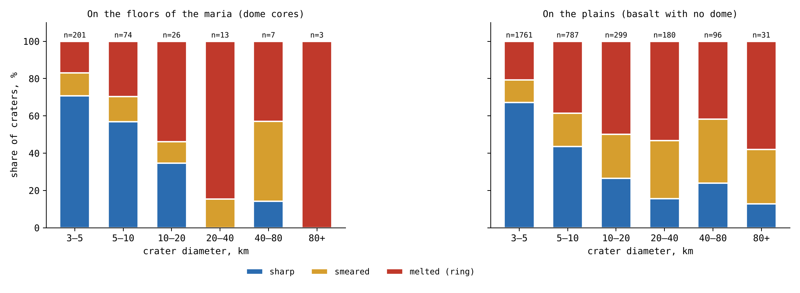
Abbildung 4 zeigt dieselbe Einteilung für jede Größenklasse, auf den Mareböden und auf den Ebenen, mit den drei Zuständen in den Farben der Tabelle. Auf den Mareböden wächst das Rot der geschmolzenen Krater zu den großen Größen hin, während das Blau der scharfen Krater schrumpft. Die Ebenen werden neben den Mareböden gezeigt, damit sich die beiden Flächen auf einen Blick vergleichen lassen; der Unterschied zwischen ihnen in der Zahl der Krater ist Gegenstand der Dichtetabelle oben.
Die kleinen Krater im Kontakt. Auf den Mareböden des Kontakts sind 82% der Krater von 3–10 km scharf und 9% geschmolzen; auf den Maria jenseits des Kontakts 56% und 28%. Auf den Mareböden des Kontakts gibt es keinen einzigen Krater ab 40 km und nur drei von 10–40 km, alle scharf.
Eine umgekehrte Lesart der scharfen Krater. Die Maria des Kontakts erstarrten zuletzt (§E.3): Sie lagen in der Scheibe, mit der der Mond die Erde zuletzt berührte, wurden länger gespeist als alle anderen und sind die tiefsten — am tiefsten im Körper des Mare selbst, nach innen, und nicht in der Höhe ihres Marebodens (§E.3). Jeder große Krater, der auf ihnen landete, solange sie flüssig waren, schmolz und verschwand, und ebenso die meisten kleinen Krater jener Zeit; das erklärt die Kraterarmut dieser Mareböden. Was auf ihren Mareböden blieb, ist das, was nach ihrem Erstarren ankam: kleine Bruchstücke, die scharfe Krater auf festem Gelände erzeugten. Daher tragen die Maria des Kontakts weniger Krater als die anderen, und ein größerer Anteil der Krater, die sie tragen, ist scharf. Ihre kleinen, scharfen Krater sind kein Zeichen dafür, dass sie alt und unberührt sind; sie sind die späten Ankömmlinge von der Erde, die auf einem gerade erst erstarrten Mareboden landeten.
Das Phänomen. Auf den Mareböden sind manche Krater bis auf den Ring geschmolzen, manche verschmiert und manche scharf (§E.1); und die Mareböden tragen wenige Krater. Die Wissenslücke. Ob der Zustand eines Kraters auf einem Mareboden seiner Größe folgt und ob Krater in den Mareböden verschwanden, während die Ebenen die ihren bewahrten — das wurde nicht an allen Kratern gegen eine Kontrolle gleicher Größe gemessen. Die Forschungsfrage: Tragen die Mareböden im Vergleich von Gleichem mit Gleichem weniger Krater als die Ebenen; ändert sich der Anteil der geschmolzenen, verschmierten und scharfen Krater auf den Mareböden mit der Größe; und wie unterscheiden sich die Krater auf den Mareböden des Kontakts von denen jenseits davon?
Krater auf den Maria, die die Literatur als teilweise von spätem Basalt verschüttet beschreibt, dienen seit Langem zur Messung der Basaltdicke: Ein Krater, dessen Rand noch über dem Strom steht, verrät, wie tief der Strom ist [S25]. Die Ströme werden nach den Zählungen der Krater auf ihnen datiert [S20]. Die Viskosität der Mare-Basalte wurde an Proben gemessen, die zur Erde gebracht wurden [S19]. In dieser Lesart folgt der Zustand eines Kraters der Dicke der späten Ströme, und Maria und Ebenen sind eine Art von Fläche. Was hier neu ist: Die Mareböden über den Speisungskuppeln werden von den Ebenen getrennt, und alle Krater mit Durchmessern ab 3 km werden nach einer Regel gegen Krater im Land ihrer eigenen Größe eingeteilt.
Die großen Bruchstücke kamen an, während die Maria aktiv waren; auf einem aktiven Mare schmolzen sie, viele von ihnen breiteten sich aus und verschmolzen mit dem Material des Mare, bis sie verschwanden, und andere blieben als Ringe. Die kleinen Bruchstücke kamen am Ende des Schmelzsturms an, als die meisten Maria bereits erstarrt waren, und blieben scharf. Daraus folgt: Die Mareböden tragen in jeder Größe weniger Krater als die Ebenen, innerhalb des Kontakts und jenseits davon; auf den Mareböden steigt der Anteil der geschmolzenen Krater mit der Größe, und der Anteil der scharfen sinkt; und auf den Maria des Kontakts, die zuletzt erstarrten, sind die großen Krater verschwunden, und die wenigen verbliebenen Krater sind scharf — die späten Ankömmlinge von der Erde.
Art der Forschung: quantitativ; Dichten und Zustände werden zwischen Flächen, Größenklassen und Zonen verglichen. Die Stichprobe: die 3,478 Krater mit Durchmessern ab 3 km auf dem Basalt der Vorderseite, 324 auf den Mareböden und 3,154 auf den Ebenen; für die Berechnung der Dichten alle Krater mit Durchmessern ab 2 km auf denselben Flächen, mit entfernten Strahlenfeldern; die Kontrolle: Krater im Land in denselben Größen, bis zu einer Breite von 60°, mit entferntem Basalt. Die Werkzeuge: der Katalog von Wang & Wu [S16] mit seinen Tiefen, die Mare-Karte von LROC, die Speisungskuppeln von Paper 5, Anhang A, und eigens geschriebener Code, der jeden Krater nach der Regel von §E.2 einteilt.
Die Teilungsschwellen wurden allein an den Kratern im Land festgelegt, Größenklasse für Größenklasse, bevor irgendein Krater auf dem Basalt eingeteilt wurde; dieses Protokoll verhindert ein nachträgliches Abstimmen der Grenzen zwischen den Klassen nach dem Ergebnis. Danach wurde jeder Krater eingeteilt, einem Mareboden oder einer Ebene zugeordnet, und seine Entfernung vom Zentrum des Kontakts (24.1° N, 335.2° O) festgehalten. Die Zählungen sind die Tabellen von §E.2.
Verschwunden. Innerhalb des Kontakts tragen die Mareböden ein Drittel der Krater von 2–5 km auf den Ebenen, ein Achtel derer von 10–20 km und keinen einzigen von 20–40 km gegenüber 23 pro Million km; jenseits des Kontakts etwa die Hälfte in jeder Größe. Der Wandel mit der Größe. Ein Test auf einen beständigen Trend über geordnete Gruppen (der Cochran–Armitage-Test, der fragt, ob ein bestimmter Anteil von einer Größenklasse zur nächsten beständig steigt oder fällt und nicht zufällig wandert) ergibt auf den Mareböden einen Anstieg des Anteils der geschmolzenen und einen Rückgang des Anteils der scharfen Krater mit der Größe, jeweils mit einer Wahrscheinlichkeit von weniger als eins zu zehn Milliarden, zufällig aufzutreten; Krater für Krater ist ein Krater umso flacher relativ zum Land, je größer er ist (Rangkorrelation ; eine Rangkorrelation misst, ob eine Größe zu fallen neigt, wenn die andere steigt, von für einen vollkommenen Rückgang bis für einen vollkommenen Anstieg). Der Kontakt. Von den Kratern von 3–10 km sind 93 von 113 auf den Mareböden des Kontakts scharf, gegenüber 91 von 162 jenseits davon (der exakte Test nach Fisher, der die exakte Wahrscheinlichkeit für eine so ungleiche Aufteilung zwischen zwei Gruppen angibt, hätten beide denselben wahren Anteil: etwa fünf pro Million); auf den Mareböden des Kontakts gibt es keinen einzigen Krater ab 40 km, und die drei Krater von 10–40 km sind scharf.
Ergebnis. Die Hypothese wird gestützt: Auf den Mareböden schmolzen und verschwanden Krater und verschmolzen mit dem Material des aktiven Mare, während die Ebenen die ihren bewahrten; der Zustand der verbliebenen Krater folgt der Größe, geschmolzen bei den großen und scharf bei den kleinen; und auf den Maria des Kontakts, die zuletzt erstarrten, sind die großen Krater verschwunden, und die verbliebenen Krater sind scharf. Einschränkungen. Die Tiefe eines kleinen Kraters wird ungenauer gemessen als die eines großen; die Klassen stützen sich auf eine Regel, die die Grenzen bei 95 und 75 von 100 Kratern im Land festlegt; die Population großer Krater auf den Mareböden ist klein; und der Zustand allein unterscheidet nicht zwischen einem geschmolzenen Krater und einem, der von einem späten Strom bedeckt wurde. Richtungen für weitere Forschung. Reste der verschwundenen Krater im Schwerefeld unter den Mareböden der Maria des Kontakts; die großen Krater der Ebenen des Kontakts (Study 15).
E.3 Die Maria: Temperatur, Viskosität und Zeit
Study 5 legte das Muster fest. Dieser und der folgende Abschnitt stellen seine Faktoren vor: hier den Mareboden, der den Krater aufnimmt; in §E.4 das Material, das ihn erzeugt. Die zentrale Eigenschaft des Marebodens ist seine Viskosität, sein Widerstand gegen das Fließen: Wasser hat eine niedrige Viskosität, Honig eine höhere, kalter Teer eine sehr hohe. Ein Mareboden niedriger Viskosität schließt sich über einem Krater; ein Mareboden sehr hoher Viskosität bewahrt ihn.
Die Viskosität. Eine Schmelze aus Mare-Basalt ist flüssig: Die von den Apollo-Missionen mitgebrachten Laven haben eine niedrige Viskosität, in der Größenordnung von 1 Pa s nahe ihrem Liquidus [S19], etwa 1,200 °C. Der Liquidus ist die Temperatur, oberhalb derer die Schmelze vollständig flüssig ist; 1 Pa s ist etwa das Tausendfache der Viskosität von Wasser, nahe der von Glyzerin. Wenn die Schmelze unter den Liquidus abkühlt, wachsen Kristalle in ihr; wenn sie sich der Hälfte ihres Volumens nähern, hört die Schmelze auf zu fließen, und ihre Viskosität springt um viele Größenordnungen, bevor sie am Solidus erstarrt, etwa 1,050 °C. Der Solidus ist die Temperatur, unterhalb derer keine Flüssigkeit mehr bleibt. Ein Mare durchläuft beim Abkühlen drei Zustände — flüssig, Brei, fest —, und das Material, das auf ihm landet, trifft jeden davon nacheinander. Der Brei ist der mittlere Zustand, viele Kristalle mit Schmelze dazwischen, wie nasser Sand oder abbindender Gips: Er hält eine Weile eine Form, gibt aber unter Last langsam nach.
Was eine Landung in jedem Zustand bewirkt. Die flüssige Phase: Auf einem flüssigen Mare sinkt das zurückkehrende Material ein und vermischt sich, der Krater schließt sich hinter ihm, und höchstens bleibt der Teil des Randes, der auf stabilem Gelände stand: Der Krater ist geschmolzen. Der Breizustand: Auf Brei hält der Krater eine Weile seine Form; seine Wände entspannen sich und brechen ein, sein Kraterboden füllt sich, und sein Rand bleibt erhalten: Der Krater ist verschmiert. Der feste Zustand: Auf einem erstarrten Mareboden behält der Krater seine volle Form: Er ist scharf. Das Bild ist das eines Löffels, der in einen Topf abkühlenden Breis gedrückt wird: Im heißen Topf schließt sich die Mulde sofort, im eindickenden Topf füllt sie sich langsam und ihre Ränder sacken ab, und im kalten, fest gewordenen Topf bleibt sie bestehen. Sinus Iridum ist der erste Fall — sein südlicher Rand, der auf dem flüssigen Mare stand, ist verschwunden, und sein nördlicher Rand, am stabilen Ufer, blieb als Jura-Gebirge erhalten; Plato ist der zweite; Kirch der dritte.
Zeit: die Gleichung des Erstarrens der Decke. Das Mare erhärtet von oben nach unten. Die Dicke der erstarrten Decke wächst mit der Wurzel der Zeit, nach den Gesetzen der Wärmediffusion, , wobei m s der Koeffizient der Temperaturleitfähigkeit ist, eine Konstante der Größenordnung eins, die durch die latente Wärme bestimmt wird, und die Tiefe der Schmelze. In Worten: Die Wärme verlässt die Schmelze durch die bereits über ihr erstarrte Decke, und je dicker die Decke ist, desto langsamer entweicht die Wärme, sodass jeder weitere Meter Decke mehr Zeit braucht als der vorige; die Dicke wächst mit der Wurzel der Zeit . Die Temperaturleitfähigkeit misst, wie schnell sich Wärme in einem Material ausbreitet; die latente Wärme ist die Wärme, die eine Schmelze abgeben muss, um zu erstarren, über das hinaus, was sie beim Abkühlen abgibt. Daraus folgt die zweite, quadratische Beziehung: Die Zeit zum Erstarren der ganzen Tiefe wächst mit dem Quadrat der Tiefe. Ein zehnmal tieferes Mare bleibt hundertmal so lange flüssig.
Die Maria des Kontakts und die Randmaria. Die Maria des Kontakts wurden am längsten gespeist und sind die tiefsten. Am tiefsten meint hier die Tiefe des Körpers des Mare selbst, nach innen gemessen, und nicht die topographische Höhe seines Marebodens: Die Zentren ihrer Mareböden stehen heute leicht erhöht, Serenitatis um m und Imbrium um m (Paper 5, §G.3). Das Material in dieser Tiefe war heiß, und daher blieben sie am längsten flüssig; und sie lagen der eigenen Wärmequelle des Mondes am nächsten — ein zweiter Grund, weshalb sie zuletzt erstarrten. Die großen Krater, die auf ihnen landeten, solange sie flüssig waren, schmolzen und verschwanden im Mare: Auf ihren Mareböden blieb kein einziger Krater ab 20 km. Die Randmaria dagegen, die früher abgetrennt wurden und flacher sind, erstarrten zuerst, und ein Teil der großen Krater auf ihnen blieb als Ringe erhalten.
E.4 Das ankommende Material: Temperatur, Größe und Entfernung
Die zweite Uhr liegt im landenden Material. Im Modell werden etwa 99% der Krater von zurückkehrendem Material der Erde erzeugt (Teil B), und der Ausstoß der Erde blieb nach der Ablösung nicht gleich.
Die Erde warf weiter aus. Im Moment der Ablösung hielt die Erde nicht inne. Ihre Öffnungen warfen weiter Material aus; das meiste davon fiel auf die Erde zurück, und ein Teil erreichte den Mond und landete auf ihm. Die Energiebilanzgleichung. Um den Mond in der Entfernung vom Erdmittelpunkt zu erreichen, muss das Material die Erdoberfläche mit einer Mindestgeschwindigkeit 8.8 km·s für einen Mond bei 17,000 km verlassen, 9.9 bei 30,000 km und 10.6 bei 60,000 km ( km). Hier ist die Gravitationskonstante, die Masse der Erde und ihr Radius. Die Gleichung ist eine Energiebilanz: Ein Bruchstück, das die Oberfläche verlässt, muss genug kinetische Energie tragen, um aus dem Schwerefeld der Erde hinauszusteigen, von der Oberfläche bis zur Bahnentfernung des Mondes. Je weiter sich der Mond entfernte, desto mehr stieg die nötige Geschwindigkeit zur Fluchtgeschwindigkeit der Erde hin, der Geschwindigkeit, mit der ein Bruchstück die Erde ganz verlässt. Bei 17,000 km, nahe der Ablösungsentfernung, erreichte ein Bruchstück, das die Erde mit 8.8 km·s werfen konnte, den Mond; als der Mond bereits bei 60,000 km stand, fiel dasselbe Bruchstück zurück, und nur die mit 10.6 km·s oder mehr geworfenen erreichten ihn.
Die Größensortierung in der Zeit: zuerst die großen, danach die kleinen. Je weiter sich der Mond entfernte, desto höher war die Geschwindigkeit, die ein Bruchstück brauchte, um ihn zu erreichen (Gleichung 4). Die Schwerkraft der Erde holte die großen Bruchstücke auf ihre Oberfläche zurück, während die kleinen, die der Mond leicht anzieht, ihn noch erreichten. Die großen Bruchstücke gingen zuerst ab; als der Magmasturm auf der Erde abklang, wurden kleinere Bruchstücke geworfen, noch heiß. Solange der Mond nahe war, erreichten ihn große Bruchstücke; je weiter er sich entfernte, desto kleinere erreichten ihn nur noch. Das Ergebnis: Die Größe des größten auf den Maria entstandenen Kraters nimmt entlang der Zeitachse ab.
Alles heiß; die Mareböden kühlten ab. Das Material verließ eine heiße Erde mit niedriger Viskosität, im Zustand des zurückkehrenden Materials, das die Krater der Schale aufgebaut hatte (Teil J), und behielt bis zum Ende eine hohe Temperatur: zuerst die großen Bruchstücke und danach, als der Magmasturm abklang, kleinere Bruchstücke, noch heiß. Was sich änderte, war der Mareboden, der sie aufnahm. Ein kleines, spätes Bruchstück, das auf einem bereits erstarrten Mareboden landet, erzeugt den schärfsten Krater: Kirch. Sein Verhältnis von Tiefe zu Durchmesser, 0.166, ist mehr als doppelt so hoch wie das eines Kraters im Land seiner Größe, und es ist das, was ein kleines Bruchstück auf einem erstarrten Mareboden hinterlässt.
E.5 Die Kette in der Zeit
Zwei Uhren laufen zusammen: Die Maria kühlen ab und erstarren, und das von der Erde ankommende Material, den ganzen Weg über heiß, wird kleiner. Da beide in dieselbe Richtung laufen, ist ein großer Krater fast immer ein früher Krater, und ein früher Krater traf fast immer einen weichen Mareboden. Das ist der Grund, warum Größe und Zustand auf den Mareböden miteinander verknüpft sind.
| Stadium | Die Erde | Die Maria | Der Krater | Beispiel |
|---|---|---|---|---|
| Früh | Nahe; große, heiße Bruchstücke erreichen den Mond | Flüssig, niedrige Viskosität | Geschmolzen | Sinus Iridum |
| Mittel | Entfernt sich; mittelgroße Bruchstücke | Brei, die Viskosität steigt | Verschmiert | Plato |
| Spät | Fern; nur kleine Bruchstücke, noch heiß | Erstarrt | Scharf | Kirch |
Die Tabelle wird von oben nach unten gelesen, so wie die Zeit läuft, und die Farben der Zeilen folgen der Temperatur der Maria: Rot für die frühe Phase, als die Mareböden flüssig waren, Bernstein für die mittlere, Blau für die späte Phase, als sie bereits erstarrt waren. Jede Zeile verbindet den Zustand der Erde, den Zustand der Maria und den Krater, den beide zusammen hinterlassen, mit dem Beispiel von §E.1.

Abbildung 5 zeichnet dieselbe Kette als Kurven. Die Zeit läuft nach rechts. Die roten Kurven fallen, während die Maria abkühlen, die gestrichelte Kurve des Randes früher als die durchgezogene Kurve des Kontakts; die dunkelblaue Kurve fällt, während das größte Bruchstück, das den Mond erreichen kann, kleiner wird. Der schattierte Hintergrund zeigt, welchen Zustand eine Landung in jedem Moment hinterlässt. Der Ort eines Kraters in der Abbildung wird durch die Zeit seiner Ankunft und durch das Mare bestimmt, auf dem er landete: Ein großer Krater kann sich nur links befinden, wo der Hintergrund geschmolzen ist, und ein Krater im Kontakt bleibt länger im geschmolzenen Streifen als ein Krater am Rand.
Die Abfolge wird ohne Jahre gelesen. Die Randmaria (die gestrichelte Kurve) erstarrten zuerst, und daher lief dieselbe Kette in ihnen früher ab: Ein großer Krater, der im Kontakt geschmolzen wäre, konnte am Rand scharf bleiben. Die Maria des Kontakts (die durchgezogene Kurve) blieben länger im geschmolzenen Streifen, und jeder große Krater, der sie in der frühen Phase erreichte, schmolz in ihnen.
E.6Der Rand: durch Wärme abgetragen oder überflutet
Die Mareböden der Maria des Kontakts tragen keinen einzigen großen Krater. Doch die großen Krater des Kontakts fehlen nicht: Sie liegen auf seinen Ebenen, und ihre Ränder tragen eine zweite Art von Abtragung. Dieser Abschnitt fragt, was sie abtrug.
Die großen Krater des Kontakts liegen auf seinen Ebenen. Von den 41 Kratern ab 40 km auf dem Basalt innerhalb des Kontakts liegt kein einziger auf einem Mareboden: 37 liegen auf den Ebenen, 22 davon auf Procellarum, und 4 auf dem Basalt von Imbrium und Serenitatis außerhalb ihrer Kuppelkerne. Keiner ist scharf, 33 sind geschmolzen und 8 verschmiert. Jenseits des Kontakts sind auf den Ebenen 27 von 85 scharf und 25 geschmolzen (eine frühere Fassung gab 27 von 86 an, als sie einen Krater von 64 km auf dem Basalt von Serenitatis mitzählte, der 1,507 km vom Zentrum des Kontakts liegt, knapp außerhalb der Scheibe). Die meisten sind mittelgroß: die Hälfte von ihnen 40–60 km, und vier überschreiten 120 km.
Die Lesart der Überflutung (die Literatur). Die Krater auf den Maria entstanden durch Einschläge von Körpern von außen; der nach ihnen kommende Basalt überflutete das Gelände um sie herum. Die Überflutung hebt das Niveau des Geländes außerhalb des Kraters, sodass der frei bleibende Rand niedriger darüber steht, obwohl der Kamm selbst nicht erniedrigt ist [S25, S32]; ein Krater, der tiefer ist als der Strom, bewahrt seinen Rand als Ring darüber. In dieser Lesart misst ein niedriger Rand auf einer Mare-Ebene die Dicke des um ihn abgelagerten Basalts. Das Bild ist das einer Sandburg, um die das Wasser steigt: Das Wasser verbirgt die unteren Hänge, und die Burg wirkt niedriger, doch ihre Spitze ist unversehrt.
Das Modell der Abtragung durch Wärme von unten (LEF). Die Ebenen des Kontakts lagen unmittelbar über der Erde und wurden von ihrer Basis her erwärmt: Die Wärme, die sie erreichte, kam von unten, von der Erde unter ihnen. Ein Krater, der nach der Mitte des Sturms auf ihnen landete, ein mittelgroßes, von der Erde geworfenes Bruchstück, traf eine heiße Ebene; die Ebene trug den Rand dort ab, wo sie ihn berührte, auf der ihr zugewandten Seite. Der Kamm selbst wurde erniedrigt und abgestumpft. Im Bild oben ist es nicht Wasser, das um die Burg steigt, sondern heißes Gelände unter ihr, das eine Seite erweicht, sodass die Spitze selbst einsinkt. In Imbrium kam die Wärme von unter dem Krater, vom Mond, durch die Öffnung: Der Krater schmolz von seinem Kraterboden aufwärts, und sein Rand, der auf stabilerem Gelände stand, blieb erhalten.
Der trennende Test. Die beiden Lesarten sagen Verschiedenes voraus, und der Test ist auf dem Unterschied aufgebaut. Die Überflutung hebt das Gelände auf der dem Basalt zugewandten Seite des Kraters, auf jeder Ebene gleich stark. Wärme von unten trägt den Rand auf der der heißen Ebene zugewandten Seite ab, dort, wo die Ebene heiß war: auf den Ebenen des Kontakts und nicht auf den Ebenen jenseits davon. Für jeden Krater ab 40 km auf dem Basalt der Vorderseite wurde der Randkamm auf 36 radialen Profilen des Höhenmodells mit 64 Pixeln pro Grad verfolgt, gegen eine Bezugsebene, die an das Gelände bei 1.6–2.4 Radien angepasst wurde; jede Richtung wurde als der Ebene zugewandt oder dem Land zugewandt eingestuft, nach dem Gelände jenseits des Randes. Ein radiales Profil ist eine Linie von Höhen, die sich vom Kraterzentrum nach außen erstreckt, eine alle 10° um ihn herum; auf jeder wird der Kamm als Spitzenpunkt erkannt und seine Höhe über dem umgebenden Gelände gemessen.
| Krater ab 40 km | Krater | Der Kamm über dem Gelände (m) | Fehlender Rand, Ebenenseite minus Landseite |
|---|---|---|---|
| Ebenen des Kontakts | 29–33 | 393–590 | (10 bis 35) |
| Ebenen jenseits des Kontakts | 34–39 | 627–960 | 0% ( bis 0) |
| Der Basalt von Imbrium und Serenitatis | 4 | 148–1,721 | ( bis ) |
| Land, Vorderseite | 590 | 616–1,006 | — |
Kamm: Mediane nach Größenklasse, 40–60, 60–100 und 100 km und mehr. Fehlend: der Anteil der Richtungen, in denen kein Kamm mit einer Prominenz von 50 m gefunden wurde, in den der Ebene zugewandten Richtungen minus in den dem Land zugewandten Richtungen, Krater für Krater; 95%-Intervalle aus Wiederholungsstichproben.
Die rote Zeile sind die Ebenen des Kontakts, die eine Gruppe, die das Modell abtrennt; die Zeilen darunter sind die Vergleiche. Die dritte Spalte gibt die Höhe des Kamms über dem Gelände an, als Bereich über die drei Größenklassen; die vierte fragt für jeden Krater, in um wie viel mehr der Ebene zugewandten als dem Land zugewandten Richtungen der Rand überhaupt nicht gefunden wird. Ein Kamm mit einer Prominenz von 50 m ist eine Spitze, die mindestens 50 m über den Senken zu ihren beiden Seiten steht. Die Zahlen in Klammern sind 95%-Konfidenzintervalle, die durch Wiederholungsstichproben gewonnen wurden: Die Krater werden viele Male zufällig neu gezogen, und der Bereich, der 95 von je 100 Ergebnissen der Wiederholungsstichprobe abdeckt, zeigt, wie stabil der Wert ist. Nur die rote Zeile fällt in beiden Spalten auf: niedrigere Kämme und Ränder, die auf der Ebenenseite fehlen.
Asymmetrischer Randverlust im Kontakt. Auf den Ebenen des Kontakts steht der Kamm 345–375 m niedriger als auf den Ebenen jenseits des Kontakts und im Land, und der Rand fehlt in einem Viertel mehr der Ebene zugewandten Richtungen als der dem Land zugewandten. Auf den Ebenen jenseits des Kontakts, wo derselbe Basalt um die Krater liegt, fehlt der Rand zur Ebene hin nicht häufiger als zum Land hin. Auf beiden Arten von Ebenen steht der verbliebene Kamm auf der Ebenenseite niedriger, um etwa 220–270 m, wie es die Überflutung auf jeder Ebene vorhersagt. Beide Effekte sind also vorhanden: die Überflutung, auf jeder Ebene sichtbar, und ein Randverlust auf der Ebenenseite, nur im Kontakt sichtbar.
Die Form des Kamms. Die Überflutung steigt an der Außenflanke auf und erreicht den Kamm nicht, sodass ein überfluteter Kamm seine Form bewahrt; ein durch Wärme abgetragener Kamm ist stumpf. Wo ein Kamm überlebt, wurde seine Form auf dem Höhenmodell mit 512 Pixeln pro Grad (SLDEM2015, 60 m) [S7] Profil für Profil anhand von drei Formparametern gelesen: der Schärfe (der Krümmung an der Spitze), der Breite des Kamms 50 m unter seiner Spitze und dem Winkel zwischen Innen- und Außenhang. Ein Messer hat eine hohe Krümmung, eine schmale Breite unter seiner Spitze und einen kleinen Winkel; ein runder Brotlaib hat eine niedrige Krümmung, eine breite Spitze und einen weiten Winkel.
| Ebenenseite minus Landseite, Krater für Krater | Schärfe (m/km) | Breite des Kamms, 50 m darunter (km) | Der Winkel am Kamm |
|---|---|---|---|
| Ebenen des Kontakts (29) | ( bis ) | (0.03 bis 0.31) | (2.0 bis 7.0) |
| Ebenen jenseits des Kontakts (34) | ( bis ) | Kein Unterschied | (0.3 bis 2.8) |
| Land, Vorderseite (77) | ( bis ) | Kein Unterschied | (0.2 bis 3.3) |
95%-Intervalle aus Wiederholungsstichproben von Zellen der Größe 5° mal 5°. Die Landseite jedes Kraters ist seine eigene Kontrolle.
Jeder Wert ist eine Differenz innerhalb eines Kraters: der Kamm auf seiner Ebenenseite minus der Kamm auf seiner Landseite. Eine negative Schärfe und eine positive Breite und ein positiver Winkel bedeuten einen stumpferen Kamm auf der Ebenenseite. Da jeder Krater mit sich selbst verglichen wird und als seine eigene interne Kontrollgruppe dient, heben sich Unterschiede von Größe, Alter und Breite zwischen Kratern auf. Hier zieht die Wiederholungsstichprobe ganze Zellen von 5° mal 5° und nicht einzelne Krater, damit benachbarte Krater, die nicht unabhängig sind, zusammen gezogen werden. Die rote Zeile des Kontakts ist die einzige, in der alle drei Maße in Intervallen, die null nicht einschließen, in dieselbe Richtung weisen.
Auf den Ebenen des Kontakts ist der auf der Ebenenseite überlebende Kamm stumpfer als auf der Landseite: weniger scharf, breiter und mit weiterem Winkel. Auf den Ebenen jenseits des Kontakts und im Land unterscheiden sich die beiden Seiten wenig, und der Unterschied im Winkel verschwindet, wenn nur das detaillierteste Höhenmodell verwendet wird. Gegenüber den Ebenen jenseits des Kontakts ist der Winkel des Kontakts um (0.4 bis 6.3) weiter. Eine Überflutung kann keinen Kamm abstumpfen, den sie nicht erreicht; eine heiße Ebene unter dem Rand kann es.
Das Phänomen. Die großen Krater auf dem Basalt des Kontakts sind geschmolzen, keiner ist scharf, und keiner liegt auf einem Mareboden (Study 5). Die Wissenslücke. Ein niedriger Rand auf einer Basaltebene wird in der Literatur als der über einer Überflutung freiliegende Rand definiert; ob die Ränder der Ebenen des Kontakts auf andere Weise verloren gingen — das wurde nicht geprüft. Die Forschungsfrage: Sind die Ränder der großen Krater auf den Ebenen des Kontakts niedriger und stärker gebrochen als anderswo, und gingen sie auf der der Ebene zugewandten Seite nur dort verloren, wo die Ebene heiß war?
Krater auf den Maria, die die Literatur als teilweise von spätem Basalt verschüttet beschreibt, dienen zur Messung der Basaltdicke: Die Überflutung hebt das Gelände außerhalb des Kraters, und der freiliegende Rand steht niedriger darüber [S25, S32]. Du und Kollegen fanden 262 vollständig freiliegende Ränder, 360 teilweise freiliegende und 39 ganz verborgene sowie Basaltdicken von 33–455 m um 41 von ihnen [S25]. Was hier neu ist: Der Randkamm wird in 36 Richtungen verfolgt, jede nach dem Gelände eingestuft, dem sie zugewandt ist, und die Ebenen des Kontakts werden mit den Ebenen jenseits davon verglichen, wo dieselbe Überflutung gewirkt hätte.
Die Ebenen des Kontakts wurden von der Erde unter ihnen von unten erwärmt; die heiße Ebene trug die Ränder der auf ihr gelandeten Krater dort ab, wo sie sie berührte. Daraus folgt: Auf den Ebenen des Kontakts sind die Kämme niedriger als auf den Ebenen jenseits davon und im Land, und der Rand ging auf der der Ebene zugewandten Seite stärker verloren; auf den Ebenen jenseits des Kontakts, die nicht von unten erwärmt wurden, gibt es keinen solchen Verlust auf der Ebenenseite.
Art der Forschung: quantitativ; Kämme und Kraterböden nach Gruppe, und die der Ebene zugewandten Richtungen gegen die dem Land zugewandten Richtungen, Krater für Krater. Die Stichprobe: die 137 Krater ab 40 km auf dem Basalt der Vorderseite (37 auf den Ebenen des Kontakts, 85 auf den Ebenen jenseits davon, 5 auf dem Basalt von Imbrium und Serenitatis außerhalb ihrer Kuppelkerne — einer davon, auf Serenitatis, knapp außerhalb der Kontaktscheibe, und 4 davon mit einem messbaren Kamm — und 10 auf den Mareböden) sowie 592 Kontrollkrater im Land in denselben Größen, auf der Vorderseite, bis zu einer Breite von 60°. Die Werkzeuge: der Katalog von Wang & Wu [S16], das Höhenmodell LOLA mit 64 Pixeln pro Grad, die Mare-Karte von LROC und eigens geschriebener Code, der den Kamm auf 36 radialen Profilen verfolgt.
Das Verfolgungsprotokoll: die drei Regeln und warum jede gewählt wurde:
| Regel | Warum, in einfachen Worten |
|---|---|
| Das Gelände: eine bei 1.6–2.4 Radien angepasste Ebene | Das heutige Niveau um den Krater, dieselbe Regel für alle Gruppen |
| Der Kamm: die höchste Spitze mit einer Prominenz von 50 m bei 0.8–1.2 Radien, Profil für Profil | Ein Rand, der als Kamm sichtbar ist, nicht als Mittelwert über einen Ring |
| Eine Richtung ist der Ebene zugewandt, wenn die Hälfte des Geländes bei 1.2–1.6 Radien Basalt ist | Um die Seite, die die Ebene berührte, von der Seite zu unterscheiden, die das Land berührte |
Für jeden Krater wurde die Geländeebene angepasst, der Kamm auf jedem der 36 Profile verfolgt und jedes Profil als der Ebene oder dem Land zugewandt eingestuft. Krater, um die nicht genug Gelände für eine Ebene lag, blieben in der Ausgabe erhalten; alternative Geländeebenen, nur aus Land und aus dem gesamten Gelände, wurden als Prüfungen gelesen. Die Werte sind die Tabelle von §E.6.
Die Anomalie der Kammhöhe. Auf den Ebenen des Kontakts stehen die Kämme 375 m niedriger als auf den Ebenen jenseits davon (95%-Konfidenzintervall: 44–615 m) und 345 m niedriger als im Land (167–450 m); mit jeder der alternativen Geländeebenen bleibt der Unterschied bestehen, 219–422 m. Die der Ebene zugewandte Seite. Auf den Ebenen des Kontakts fehlt der Rand in 24% mehr der Ebene zugewandten Richtungen als der dem Land zugewandten (10–35%), und dasselbe gilt auch für die Krater unter 100 km allein; auf den Ebenen jenseits des Kontakts beträgt der Unterschied 0 ( bis 0). Auf beiden ist der verbliebene Kamm auf der Ebenenseite niedriger, um 265 und 217 m. Der Kraterboden. Die Kraterböden liegen nahe am Niveau des umgebenden Geländes, auf den Ebenen des Kontakts wie auf den Ebenen jenseits davon; sie unterscheiden die beiden nicht. Die Form des Kamms. Auf den Ebenen des Kontakts ist der überlebende Kamm auf der Ebenenseite stumpfer: Die Schärfe ist um 35 m/km niedriger (18–46), die Breite 50 m unter der Spitze um 0.14 km größer (0.03–0.31), der Winkel um weiter (2.0–7.0); jenseits des Kontakts unterscheiden sich Schärfe und Breite nicht, und der Winkel unterscheidet sich um , ein Unterschied, der im detailliertesten Modell allein verschwindet. Bei einer Paarung Krater gegen Krater, mit gleichem Durchmesser, gleicher Breite und gleicher innerer Tiefe, ließen sich nur vier Paare aus einem Krater des Kontakts und einem Krater jenseits davon bilden — zu wenige, um die beiden Gruppen direkt zu vergleichen. Imbrium. Die vier Krater auf dem Basalt von Imbrium und Serenitatis verlieren ihren Rand zur Ebene hin nicht stärker als zum Land hin (); der Kamm von Sinus Iridum steht 1,721 m über dem Gelände.
Ergebnis. Die Hypothese wird gestützt: Auf den Ebenen des Kontakts sind die Ränder niedriger und gingen auf der der Ebene zugewandten Seite verloren, auf den Ebenen jenseits des Kontakts, die gleich stark überflutet wurden, nicht; die beiden gemeinsame Erniedrigung des verbliebenen Kamms auf der Ebenenseite ist das Werk der Überflutung, während der Randverlust und das Abstumpfen des auf der Ebenenseite überlebenden Kamms das Werk der heißen Ebene des Kontakts sind. Einschränkungen. Die Geländeebene ist das heutige Niveau, nicht das Gelände, auf dem der Krater landete; ein Kamm, den der Verfolgungscode nicht fand, ist kein Beweis, dass dort kein Rand ist; die Krater auf Imbrium sind wenige; die Wärme von der Erde unter dem Kontakt wird erschlossen, nicht gemessen. Nur die überlebenden Kämme lassen eine Formmessung zu, und der gepaarte Vergleich zwischen dem Kontakt und dem Bereich jenseits davon stützt sich auf vier Paare. Richtungen für weitere Forschung. Eine größere gepaarte Stichprobe von Kratern des Kontakts und jenseits davon, mit gleicher innerer Tiefe, auf dem detailliertesten Höhenmodell.
E.7Was dies zeigt
Die Krater auf den Maria zeichnen die Erde nach der Ablösung auf. Material kam weiter von ihr an — anfangs groß, mit der Zeit kleiner, den ganzen Weg über heiß —, während die Maria unter ihm abkühlten. In der frühen Phase verschwanden die großen Krater, die auf flüssigen Mareböden landeten, oder schmolzen bis auf Ringe; in der mittleren Phase wurden die mittleren, die auf Brei trafen, verschmiert; in der späten Phase blieben die kleinen, die zuletzt kamen, auf erstarrten Mareböden scharf; und auf den Ebenen des Kontakts, die von der Erde unter ihnen erwärmt wurden, wurden die Ränder der großen Krater auf der Seite der heißen Ebene abgetragen. Die Tätigkeit der Erde klang mit der Zeit ab, doch sie dauerte nach der Ablösung an, und Größe und Zustand der Krater auf den Maria sind ihre Aufzeichnung.
Der Rand
Der Rand zeichnet die Kräfte auf, die im Moment der Landung wirkten. Der Ansatz: Die Ränder von 1,457 Kratern wurden entlang von 72 Richtungen an vier Längengraden gemessen, an Kratern gleicher Größe, nach Entfernung der Maria und von South Pole–Aitken.
Die Teile C–E zählten die Krater und lasen ihren Zustand auf den Maria. Die Teile F–I lesen nun die Form eines einzelnen Kraters, Bestandteil für Bestandteil, und vergleichen sie zwischen vier Gebieten des Mondes. Das Prinzip, das die Lesung leitet, ist das in §C.1 festgelegte: Ein Krater ist der Ort, an dem zurückkehrendes Material landete, und jeder seiner Bestandteile bewahrt eine eigene Aufzeichnung. Der Kraterboden zeichnet das Gelände auf, auf dem das Material landete — die Schichten unter ihm und das, was ihn später füllte (Teile G und H). Das Zentrum, in dem der Zentralberg steht, zeichnet die Energie der Landung auf (Teil I). Der Rand zeichnet die Kräfte auf, die im Moment der Landung auf das hochgeschleuderte Material wirkten (dieser Teil). Zusammen gelesen erzählen die drei, mit welcher Wucht das Material herabkam und auf welche Art von Gelände.
Die vier Gebiete. Die Krater wurden in vier Zählkappen mit 30° Radius genommen, mit Zentren bei 90° W, 180°, 90° O und 0°. Nach der üblichen Konvention (§A.1) ist die Mondhälfte mit Zentrum bei 90° W die vorauslaufende Hälfte, die in Bewegungsrichtung des Mondes nach vorn weist, und die Hälfte mit Zentrum bei 90° O die nachlaufende; 180° ist das Zentrum der Rückseite, und 0° ist das Zentrum der Vorderseite, der der Erde zugewandten Seite. Im Modell entstanden die Krater, während der Körper noch mit der Erde rotierte, und das Material, das der Körper selbst nach außen warf, sank in Richtung seiner nachlaufenden Hälfte herab, die dichter mit Kratern besetzt ist (§C.3); die vorauslaufende Hälfte traf dieses Material frontal, wie ein Mensch, der in schrägen Regen hineingeht und auf der ihm zugewandten Seite am heftigsten getroffen wird. Trifft dies zu, landete das Material auf der vorauslaufenden Hälfte mit der größten Wucht, und das muss in der Form ihrer Krater zu sehen sein.
Wie Ränder verglichen werden. Ein Rand wird als höchster Punkt entlang jeder von 72 Richtungen vom Zentrum (eine alle 5°) gezeichnet, zwischen 0.85 und 1.15 des Radius (§A.2). Zwei Krater lassen sich nur vergleichen, wenn sie gleich groß sind, weil ein großer Krater eine andere Form hat als ein kleiner; daher werden die Krater innerhalb von drei Größengruppen verglichen, 20–30, 30–50 und 50–100 km, und jede Höhe wird auf den Durchmesser normiert, sodass ein Wert von 9.2 Tausendstel des Durchmessers bedeutet — 230 m bei einem Krater von 25 km. Die Ränder sind nicht gleich gut erhalten: Die vorauslaufende Hälfte, die in Bewegungsrichtung weist, ist am stärksten abgetragen (§A.2). Damit ein abgetragener, geglätteter Rand nicht fälschlich als schwache Landung gilt, wird die Unregelmäßigkeit des Randes nur in der tieferen Hälfte jeder Größengruppe gelesen, den besser erhaltenen Kratern.
F.1Der Rand an vier Längengraden
Die Tabelle gibt für jedes der vier Gebiete drei Zeichen einer harten Landung am Rand. Die letzte Spalte, Lesung, stellt die vorauslaufende gegen die nachlaufende Hälfte: „W/E 1.25“ bedeutet, dass der Wert der vorauslaufenden Hälfte 1.25-mal so groß ist wie der der nachlaufenden Hälfte, und der Bereich in Klammern ist sein 95%-Konfidenzintervall, gewonnen, indem die Krater viele Male zufällig neu gezogen und das Verhältnis jedes Mal neu berechnet wurde (Study 6, Schritt 6; §N.2). Ein Verhältnis, dessen Intervall die 1 nicht einschließt, ist nicht durch Zufall erklärt. Die grünen Zellen markieren das Gebiet, in dem jedes Zeichen am stärksten ist, und die orangen Zellen die nachlaufende Hälfte, mit der es verglichen wird.
| Maß | 90° W, vorauslaufend | 180°, Rückseite | 90° O, nachlaufend | 0°, Vorderseite | Lesung |
|---|---|---|---|---|---|
| Zeichen einer harten Landung am Rand | |||||
| Unregelmäßigkeit des Randes, nach Entfernung der Harmonischen, tiefere Hälfte, 20–30 km () | 9.2 | 7.5 | 7.4 | 7.1 | W/E 1.25 (1.00–1.48) |
| Sprung des Randes zwischen Richtungen, tiefere Hälfte, 20–30 km () | 3.9 | 3.5 | 3.5 | 3.4 | W/E 1.14 (1.03–1.39) |
| Stark gestreckte Ränder, , km | 17% | — | 12% | — | W höher |
| (1) Der Rand über dem Land (), alle Krater | |||||
| 20–30 km | 12.7 | 15.8 | 17.2 | 15.2 | WE ( bis ) |
| 30–50 km | 14.4 | 18.7 | 13.1 | 13.6 | 180°E ( bis ) |
| 50–100 km | 12.5 | 17.4 | 14.3 | 10.3 | 180°E ( bis ) |
Die drei oberen Zeilen messen drei verschiedene Dinge. Die Unregelmäßigkeit des Randes ist die Streuung der Randhöhe entlang des Kreises, nachdem seine glatten, breiten Wellen entfernt wurden — die niedrigen Harmonischen, das langsame Steigen und Fallen, das jeder Rand auf ungleichmäßigem Gelände hat; was bleibt, ist die kleinräumige Zerbrochenheit. Der Sprung des Randes ist der Höhenunterschied zwischen je zwei benachbarten Azimuten, 5° voneinander entfernt: Ein zerbrochener, gezackter Rand springt stärker. Die Streckung ist das Verhältnis zwischen der größten und der kleinsten Breite des Randes; ein Rand mit ist in einer Richtung um mehr als ein Fünftel länger als in der anderen. Der untere Teil der Tabelle gibt den Rand über dem Land — Höhe (1) von §A.2 — nach Größengruppe, über alle Krater: Grau markiert den höchsten Rand in jeder Zeile und Blau den niedrigsten, und die Spalte Lesung gibt den Unterschied zwischen zwei Gebieten in Tausendsteln des Durchmessers an, mit seinem 95%-Bereich.
Die Zeichen der harten Landung am Rand weisen auf 90° W. Bei den kleinen Kratern sind die Ränder der vorauslaufenden Hälfte die unregelmäßigsten, sowohl entlang des Kreises als auch von einem Azimut zum benachbarten, und sie sind auch häufiger gestreckt. Eine gezackte, zerstückelte Randstruktur ist ein Rand, der im Moment des Kontakts brach; ein gestreckter Rand ist die geometrische Spur von Material, das schräg ankam, wie Material ankommt, dem bewegtes Gelände frontal begegnet. Die Unterschiede am Rand sind auf die Krater von 20–30 km beschränkt, in denen die späten, harten Landungen die deutlichste Signatur hinterließen; oberhalb von 30 km unterscheiden sich die Gebiete nicht. Die drei Zeichen weisen in dieselbe Richtung: Die Ränder der vorauslaufenden Hälfte sind um ein Viertel unregelmäßiger als die der nachlaufenden Hälfte (9.2 gegenüber 7.4), sie springen stärker zwischen benachbarten Richtungen (3.9 gegenüber 3.5, in einem Bereich ganz über 1), und 17% ihrer Ränder sind stark gestreckt, gegenüber 12%. Die Rückseite und die Vorderseite, wo sich das Gelände weder auf das fallende Material zu- noch von ihm wegbewegte, liegen nahe bei der nachlaufenden Hälfte.
Der Rand steht auf der Rückseite am höchsten und auf der vorauslaufenden Hälfte am niedrigsten. Die Höhe des Randkamms über dem Land um den Krater wird außerhalb des Kraterbodens gemessen, und der Zentralberg geht nicht in sie ein; sie wird über alle Krater verglichen. Oberhalb von 30 km stehen die Ränder der Rückseite um ein bis zwei Fünftel höher als die der nachlaufenden Hälfte. Bei den Kratern von 20–30 km sind die Ränder der vorauslaufenden Hälfte die niedrigsten, ein Viertel unter denen der nachlaufenden Hälfte, und die Ränder der nachlaufenden Hälfte stehen von den vieren am höchsten. Die größten Krater der Vorderseite haben die niedrigsten Ränder von allen (10 Tausendstel des Durchmessers).
Zwischen den beiden Hälften unterscheidet sich der Rand. Von den drei Höhen des Kraters (§A.2) ist die Höhe des Randes über dem Land (1) die einzige Komponente, die die vorauslaufende von der nachlaufenden Hälfte unterscheidet: Bei den Kratern von 20–30 km stehen die Ränder der vorauslaufenden Hälfte um 4.5 Tausendstel des Durchmessers niedriger, und der Bereich schließt null nicht ein. Die Tiefe des Kraterbodens unter dem Land (2) und die Gesamttiefe vom Rand zum Kraterboden (3) unterscheiden sie nicht: Ihre Unterschiede zwischen den Hälften liegen in jeder Größe innerhalb ihrer Bereiche (§G.1). Das hat Bedeutung für die Lesung. Der Unterschied in der Wucht der Landung zwischen den beiden Hälften veränderte die Verteilung des hochgeschleuderten Materials um den Rand, nicht die Tiefe, die der Krater erreichte; die Tiefe wird, wie Teil G zeigt, durch das Gelände darunter bestimmt, und beide Hälften stehen auf Gelände derselben Art.
Wie das Modell die Ränder liest: vier Kräfte. Die Krater entstanden, während der Körper noch mit der Erde rotierte, und dieselbe Rotation, die die Landungen sortierte, wirkte auch auf das bei jeder Landung hochgeschleuderte Material. Auf der Rückseite (180°), die von der Erde abgewandt ist, wirkte die Zentrifugalkraft der gemeinsamen Rotation gegen die eigene Schwerkraft des Körpers, hob das hochgeschleuderte Material an und erlaubte ihm, sich hoch festzusetzen, und die Ränder stehen hoch. Auf der vorauslaufenden Hälfte (90° W) bewegte sich die Oberfläche in die Bahn des fallenden Materials hinein: Das Material sank unter dem Zusammenwirken der Schwerkraft und der Vorwärtsbewegung des ihm begegnenden Geländes herab, und der Rand wurde nach unten gedrückt. Auf der nachlaufenden Hälfte (90° O) bewegte sich die Oberfläche vom fallenden Material weg: Die Landung war gewöhnlich, und das sich entfernende Gelände zog den Kraterboden ein wenig mit, sodass der Rand etwas höher steht als auf der vorauslaufenden Hälfte. Die Vorderseite (0°), der Erde zugewandt, wurde von derselben Zentrifugalkraft auf ihr eigenes Gelände gedrückt, und ihre Ränder wurden zusammengepresst.
Das Bild ist das eines Körpers, der um einen gemeinsamen Mittelpunkt mit der Erde rotiert, wobei die Vorderseite die innere und die Rückseite die äußere Seite ist. Auf der äußeren Seite, der Rückseite, wirkte der Schub der Rotation nach außen gegen die eigene Schwerkraft des Körpers und erlaubte dem hochgeschleuderten Material, aufzusteigen und hoch zu bleiben, wie Wasser, das vom äußeren Rand eines sich drehenden Rades spritzt; auf der inneren Seite, der Vorderseite, war derselbe Schub in das Gelände gerichtet und drückte das hochgeschleuderte Material nach unten. Die vier Ränder geben also vier Kräfte im Moment der Landung: ein Zug nach außen auf der Rückseite, ein frontales Aufeinandertreffen auf der vorauslaufenden Hälfte, eine gewöhnliche Landung auf der nachlaufenden Hälfte und ein Andrücken auf der Vorderseite (§P.1). Was wir jetzt in der Hand haben: Der Rand zeichnet die Kräfte im Moment der Landung auf; er kennzeichnet die vorauslaufende Hälfte als diejenige, auf der die Landung am härtesten war, und die Rückseite als diejenige, auf der das hochgeschleuderte Material angehoben wurde.
Die Studie. Rand, Kraterboden, Rauigkeit und Zentralberg sind eine Studie, Study 6, die in §I.1 Schritt für Schritt dargestellt wird.
Der Kraterboden unter dem Gelände
Wie weit ein Krater unter das ihn umgebende Land reicht, zeichnet das Gelände auf, auf dem er landete. Der Ansatz: Der Kraterboden unter dem Land und die Tiefe vom Rand zum Kraterboden wurden mit maskiertem Zentralberg gemessen.
Teil F las den oberen Teil des Kraters, seinen Rand. Dieser Teil liest seinen Grund. Die Frage, die er beantwortet, ist der zweite Teil des Prinzips von §C.1: Was unter dem Krater liegt, sind die Schichten, auf denen er landete. War das Gelände von einer Seite des Mondes zur anderen verschieden, müssen die Kraterböden in verschiedenen Tiefen unter dem sie umgebenden Land liegen, wie stark die Landung auch war. Der Teil hat drei Schritte: der Kraterboden an den vier Längengraden (§G.1); die Kraterböden der großen Krater auf dem Basalt der Vorderseite, von denen manche höher stehen als der Basalt um sie (§G.2); und das Eisen in diesen hohen und in den tiefen Kraterböden (§G.3).
G.1Der Kraterboden unter dem Land
Die Tabelle gibt zwei der drei Höhen von §A.2 an jedem der vier Längengrade und in jeder der drei Größengruppen. Höhe (2) ist der Abstand, um den der Kraterboden unter dem Land um den Krater liegt; Höhe (3) ist der Abstand, um den er unter seinem eigenen Rand liegt, und sie ist die Summe aus dem Rand über dem Land (1) und dem Kraterboden unter dem Land (2). Die Spalte Lesung gibt den Unterschied zwischen zwei Gebieten in Tausendsteln des Durchmessers an, mit seinem 95%-Bereich: „180°E ( bis )“ bedeutet, dass die Kraterböden der Rückseite um 16 Tausendstel tiefer liegen als die der nachlaufenden Hälfte und dass der Unterschied zwischen 11 und 22 Tausendsteln liegt; „N“ ist die Vorderseite und „W“ die vorauslaufende Hälfte. Grau markiert das tiefste Gebiet in jeder Zeile und Blau das flachste, wo es hervortritt.
| Maß | 90° W, vorauslaufend | 180°, Rückseite | 90° O, nachlaufend | 0°, Vorderseite | Lesung |
|---|---|---|---|---|---|
| (2) Der Kraterboden unter dem Land (), Zentralberg maskiert | |||||
| 20–30 km | 41 | 54 | 38 | 27 | 180°E ( bis ); NE ( bis ) |
| 30–50 km | 24 | 47 | 29 | 25 | 180°E ( bis ); WE ( bis ) |
| 50–100 km | 22 | 36 | 27 | 17 | 180°E ( bis ); WE ( bis ) |
| (3) Vom Rand zum Kraterboden, = (1) + (2) (), Zentralberg maskiert | |||||
| 20–30 km | 50 | 69 | 51 | 38 | 180°E ( bis ); WE ( bis ) |
| 30–50 km | 37 | 64 | 42 | 38 | 180°E ( bis ); WE ( bis ) |
| 50–100 km | 36 | 53 | 42 | 26 | 180°E ( bis ); NE ( bis ) |
Lesen Sie zuerst die graue Spalte: In allen sechs Zeilen und in allen Größen ist die Rückseite (180°) am tiefsten, und jeder Bereich der Rückseite liegt ganz über null. Dann die blauen Zellen: Die Vorderseite (0°) behält das höchste, also flachste, Kraterbodenniveau; bei den kleinsten Kratern liegen ihre Kraterböden 27 Tausendstel unter dem Land, gegenüber 54 auf der Rückseite. Zwischen der vorauslaufenden und der nachlaufenden Hälfte gibt es keine Asymmetrie in der Tiefe: Sie liegen nahe beieinander, und die Bereiche der Unterschiede zwischen ihnen ( bis , bis , bis , bis ) schließen alle null ein.
Der Kraterboden liegt auf der Rückseite am tiefsten und auf der Vorderseite am höchsten. In jeder Größe liegen die Kraterböden der Rückseite am tiefsten unter dem sie umgebenden Land, um 9 bis 18 Tausendstel des Durchmessers tiefer als die der nachlaufenden Hälfte; die Kraterböden der Vorderseite liegen am höchsten, bei etwa der halben Tiefe der Rückseite; und die Kraterböden der vorauslaufenden und der nachlaufenden Hälfte sind innerhalb ihrer Bereiche ähnlich. Die Tiefe vom Rand zum Kraterboden (3) folgt beiden Komponenten: Die Krater der Rückseite sind die tiefsten — ihr Kraterboden liegt tief, und oberhalb von 30 km steht auch ihr Rand hoch —, um 11 bis 22 Tausendstel tiefer als die der nachlaufenden Hälfte; die Krater der Vorderseite sind die flachsten, mit hohem Kraterboden und niedrigem Rand. Zwischen der vorauslaufenden und der nachlaufenden Hälfte veränderte die Landung den Rand des Kraters, nicht das Niveau seines Kraterbodens.
Der Aufbau des Geländes und das Zusammenpressen der Schichten. Die Unterschiede in der Tiefe der Kraterböden zwischen den beiden Seiten erklären sich aus dem Aufbau des Geländes, auf dem das Material landete. Die Rückseite ist Schicht um Schicht aufgebaut — das Sial des Mutterkörpers und zurückkehrendes Material, Schicht auf Schicht abgelagert (Paper 3, §B.7). Heißes Material, das von oben auf ihnen landete, presste die Schichten unter dem Krater zusammen und schmolz sie, und der Kraterboden sank in sie ein; daher liegen die Kraterböden der Rückseite am tiefsten. Die Kraterböden der Vorderseite liegen aus zwei Gründen am höchsten: Dort landete das zurückkehrende Material nicht auf Schichten, die sich unter ihm hätten zusammenpressen lassen; und jede später hinzugekommene Schicht oder jeder Boden, darunter die Mareböden, hob den Kraterboden gegenüber dem umgebenden Land an, wie die Ebenheit dieser Kraterböden zeigt.
Das Bild ist der Unterschied zwischen dem Drücken eines heißen Bügeleisens auf einen Stapel locker liegender Blätter und auf ein Brett: Der Stapel gibt unter ihm nach, und das Bügeleisen sinkt ein; das Brett hält, und alles, was später darauf gestrichen wird, hebt nur die Oberfläche an. Die Rückseite ist der Stapel, die Vorderseite das Brett. Abtragung und Alter. Ein Fachmann wird einwenden, dass ein tieferer Krater oft ein älterer Krater ist, der weniger aufgefüllt wurde, oder ein jüngerer, der weniger abgetragen wurde. Der Vergleich antwortet darauf, wo er kann: Die vorauslaufende und die nachlaufende Hälfte unterscheiden sich im Grad der Abtragung der Ränder (43% gegenüber 50% ihrer Ränder in der besser erhaltenen Hälfte, §A.2), und dennoch unterscheiden sich ihre Kraterbodenniveaus überhaupt nicht; daraus folgt, dass Abtragung allein das Kraterbodenniveau nicht um die Beträge der Tabelle verschiebt. Die Form allein trennt Alter und Landung nicht vollständig, und das ist unter den Grenzen von Study 6 gesagt (§I.1).
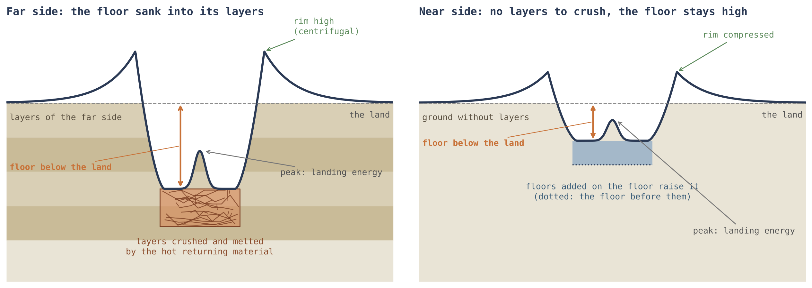
Abbildung 6 stellt die beiden Seiten nebeneinander und zeigt die drei Aufzeichnungen eines Kraters in einem Bild: den Kraterboden, bestimmt durch das Gelände darunter; den Rand, durch die Kräfte im Moment der Landung; den Zentralberg, durch die Energie der Landung.
Hinter den Kulissen. Der Kraterboden wurde zuerst über das ganze Kraterzentrum gemessen, einschließlich des Zentralbergs. Die vorauslaufende Hälfte hat die meisten Zentralberge, und ein Berg in der Mitte hebt den Median des Kraterbodens an. Daher wurde jeder Kraterboden mit maskiertem Zentralberg neu gemessen: Der Fußabdruck des Berges wurde auf dem Höhenmodell eingezeichnet und entfernt, und der Kraterboden wurde auf dem Rest gelesen, einmal bis 0.4 des Radius und einmal im Ring zwischen 0.2 und 0.5 davon; beide stimmen überein. Die Werte oben sind die der ersten.
G.2 Die Kraterböden der großen Krater auf dem Basalt
§G.1 verglich das Hochland der vier Längengrade nach Entfernung der Maria. Dieser Abschnitt wendet sich den Kratern zu, die auf dem dunklen Basalt der Vorderseite selbst landeten, dem Gelände, das heiß und weich war, als sie landeten. Zwei Arten von Basalt werden hier getrennt, wie in §D.2: die Mareböden, der Basalt innerhalb des Kerns der Speisungskuppel unter jeder der Öffnungen von Paper 5, und die Ebenen, Basalt außerhalb jedes Mare — gewöhnliche Kruste, die an Ort und Stelle geschmolzen wurde, solange der Körper verbunden war, ohne Speisungskuppel darunter. Die Krater werden nach ihrem Zustand eingeteilt wie in §D.2: geschmolzen (flacher als 95% der Hochlandkrater seiner Größe und als Ring sichtbar), verschmiert (flacher als 75% von ihnen) und scharf (nach dem Erstarren des Geländes entstanden).
Ein Hochlandkrater bewahrt die Tiefe eines Kraters: Sein Kraterboden liegt etwa 1.6 km unter dem Land um ihn. Ein großer Krater auf dem Basalt der Vorderseite nicht. Sein Kraterboden steht auf dem Niveau des Basalts außerhalb von ihm, und etwa ein Drittel der großen steht höher. Von den 86 Kratern ab 40 km, die kartierten Basalt um sich haben, liegen 84 auf den Ebenen — der an Ort und Stelle geschmolzenen Kruste — und zwei auf den Mareböden von Paper 5; auf den Mareböden verschwanden die großen Krater im aktiven Mare (§D.2), und was hier gemessen wird, sind die Ebenen, heißes Gelände derselben Art.
Die Tabelle teilt die 86 großen Krater auf dem Basalt nach ihrem Zustand ein und stellt sie 411 Hochlandkratern derselben Größen gegenüber. Für jeden Krater wird der Kraterboden mit dem Basalt im Ring unmittelbar außerhalb verglichen und als darüber gezählt, wenn er mehr als 50 m höher steht, als auf seinem Niveau, wenn er innerhalb von 50 m liegt, und als darunter, wenn er mehr als 50 m tiefer liegt. Lesen Sie die letzte Spalte von oben nach unten: Die Kraterböden gehen von einigen zehn Metern unter dem Basalt (geschmolzen, orange) über mehr als einen Kilometer darunter (scharf, blau) bis zur vollen Tiefe eines Hochlandkraters (grau).
| Krater ab 40 km | Krater | Über dem Basalt außerhalb | Auf seinem Niveau (50 m) | Darunter | Median |
|---|---|---|---|---|---|
| Geschmolzen, auf dem Basalt | 52 | 15 | 12 | 25 | m |
| Verschmiert, auf dem Basalt | 24 | 9 | 2 | 13 | m |
| Scharf, auf dem Basalt | 10 | 1 | 0 | 9 | m |
| Hochlandkrater, dieselben Größen | 411 | 12 | 9 | 390 | m |
Die scharfen Krater gegenüber den geschmolzenen und verschmierten. Die scharfen Krater, die nach dem Erstarren des Geländes landeten, verhalten sich fast wie Hochlandkrater: Ihre Kraterböden liegen 1,388 m unter dem Basalt, nahe den 1,575 m des Hochlands. Die geschmolzenen und verschmierten Krater dagegen, die landeten, als das Gelände noch weich war, zeigen Kraterböden innerhalb von etwa hundert Metern vom Niveau des Basalts außerhalb, und viele von ihnen darüber.
Was hervortritt: die angehobenen Kraterböden. Vierundzwanzig der 76 geschmolzenen und verschmierten Krater ab 40 km haben einen Kraterboden, der mehr als 50 m über dem Basalt außerhalb ihres Randes steht, und manche um einen halben Kilometer: Der Kraterboden von Plato steht 500 m über dem Basalt von Imbrium, und der eines Kraters von 182 km Durchmesser im Oceanus Procellarum 518 m über der umgebenden Ebene. Das geschieht innerhalb des Kontakts und jenseits davon gleichermaßen. (Der Kontakt ist das Gebiet der Vorderseite, das zuletzt die Spitze der Birne der Erde berührte, Paper 3.) Unter den Hochlandkratern haben nur 12 von 411, etwa einer von vierunddreißig, einen Kraterboden über dem Land um sie; unter den geschmolzenen und verschmierten Kratern auf dem Basalt — etwa einer von drei.
Warum das wichtig ist: das Prinzip der kommunizierenden Röhren. Wäre der Krater vom Basalt außerhalb gefüllt worden — durch einen Strom über seinen Rand oder durch eine Bresche darin —, wäre der Kraterboden auf dem Niveau dieses Basalts oder darunter stehen geblieben, so wie Wasser in zwei kommunizierenden Gefäßen auf einem Niveau steht. Ein Kraterboden, der über dem Basalt außerhalb steht, kann nicht von ihm gefüllt worden sein. Er wurde von innen gefüllt, auf einem eigenen Niveau.
Wie das Modell dies liest: ein Wettlauf zwischen Einsinken und Abkühlen. Die Landung eines großen Körpers auf Gelände, das noch flüssig oder weich war — eine durch die Wärme der Erde geschmolzene Ebene oder ein Mare —, hob das Niveau des Kraterbodens unter ihm an, höher, als es heute steht. Der angehobene Kraterboden sank danach zum Niveau des umgebenden Geländes zurück; doch das Zurücksinken braucht Zeit, und das Gelände kühlte währenddessen ab. Der Vorgang ist ein Wettlauf zwischen der Geschwindigkeit des Einsinkens und der Geschwindigkeit des Abkühlens und Erhärtens des Geländes. Wo das Abkühlen gewann, erstarrte der Kraterboden, während er noch hoch stand: etwa ein Drittel der großen Krater. Wo der Kraterboden Zeit hatte, stellte er sich auf dem Niveau des umgebenden Geländes oder etwas darunter ein, wie bei den meisten geschmolzenen Kratern. Ein Hochlandkrater landete auf festem Gelände; nichts hob seinen Kraterboden an, und er bewahrte die Tiefe eines Kraters.
Viskosität, Temperatur und Schwerkraft. Zwei weitere Dinge kommen hinzu: die Viskosität und Temperatur des Geländes, die bestimmten, wie schnell der Kraterboden zurücksank und wann er erstarrte; und die Schwerkraft. Auf der Vorderseite wurde Material, das von der Erde kam, von der Schwerkraft des Mondes zur Oberfläche gezogen, während die Anziehung der Erde in die Gegenrichtung wirkte; beide hoben einander teilweise auf, die Landungen waren sanft, und viele angehobene Kraterböden erstarrten, bevor sie zurücksanken. Auf der Rückseite landete Material, solange der Körper verbunden war, unter der kombinierten Anziehung von Mond und Erde: Die Landungen waren härter, und ihre Krater, auf den Maria wie im Hochland, sind die tieferen.
Das Alltagsbild ist ein Klumpen, der in einen Topf eindickenden Breis geworfen wird: Die Oberfläche an der Stelle, wo er hineinfiel, hebt sich zuerst und sinkt dann langsam zurück, und kühlt der Topf schnell genug ab, bleibt die Erhebung stehen. Die hier verwendete Viskosität ist der Widerstand eines Materials gegen das Fließen — Wasser hat wenig davon, kalter Honig viel; je viskoser und kälter das Gelände, desto langsamer sank der Kraterboden zurück, und desto mehr von der Erhebung blieb erhalten.
Was die Schwere darunter hinzufügt. Die Masse unter den Kratern weist in dieselbe Richtung (§D.3, Study 14) und unterscheidet drei Zustände. Die Hochlandkrater: Die Krustenbasis unter ihnen liegt tiefer als um sie herum, im Median um 0.41 km — die Landung auf festem Gelände zerbrach das Gelände darunter zu leichtem, lockerem Material, und der Krater sitzt über einem Massendefizit. Die geschmolzenen Krater der Ebenen: weder Defizit noch Überschuss ( km) — das Gelände war weich, als sie landeten, und keine Linse aus zerbrochenem Material blieb unter ihnen zurück. Die geschmolzenen Krater auf den Mareböden: Es gibt einen Massenüberschuss — die Krustenbasis steht höher, km, gegenüber unter zufälligen Punkten auf denselben Mareböden, sodass die Krater km mehr tragen als der Mareboden um sie, bei 13 von 16. Dieser Überschuss ist breit und hat keine Kante: Die Steilheit der Schwere am Rand des Kraters beträgt 1.04, gegenüber 1.00 auf dem umgebenden Mareboden. Ein Basaltkörper, der den Krater von außen füllt, würde sich in der Schwere an der scharfen Kante des Kraters zeigen; Material, das in ein aktives Mare einsank und sich darin ausbreitete, nicht. Daher fehlt den Kratern auf dem weichen Gelände der Vorderseite in ihrer Schwere wie in ihren Kraterböden das Zeichen eines gewöhnlichen Kraters auf festem Gelände.
Was wir jetzt in der Hand haben: Ein Kraterboden liegt dort, wo das Gelände darunter es ihm erlaubte — tief in den zusammengepressten Schichten der Rückseite, nahe der Oberfläche auf der Vorderseite und auf dem weichen Basalt auf dem Niveau des umgebenden Geländes oder darüber, wo eine Erhebung erstarrte, bevor sie einsinken konnte.
Das Phänomen. Große Krater auf dem Basalt der Vorderseite sind flach: Ihre Kraterböden sind fast bis zum Niveau des Basalts aufgefüllt (Study 5). Die Wissenslücke. Wo genau diese Kraterböden gegenüber dem Basalt außerhalb von ihnen stehen — darunter, auf seinem Niveau oder darüber —, wurde nicht Krater für Krater gemessen, und die Antwort unterscheidet zwei Lesarten: Ein Kraterboden, der vom Basalt außerhalb gefüllt wurde, kann nicht über ihm stehen. Die Forschungsfrage: Auf welchem Niveau stehen die Kraterböden der großen geschmolzenen und verschmierten Krater auf dem Basalt der Vorderseite, gegenüber dem Basalt unmittelbar außerhalb von ihnen und gegenüber den Kraterböden von Hochlandkratern gleicher Größe?
In der Literatur wurden die Kraterböden von Kratern auf den Maria von denselben Basaltströmen gefüllt, die die Maria bildeten [S20, S25]; über ihre Umgebung angehobene Kraterböden sind von Kratern mit zerbrochenem Boden (floor-fractured craters) bekannt, in denen unter dem Krater aufgestiegenes Magma sich als Sill (sill) ausbreitete und den Kraterboden von unten anhob [S9]. (Ein Sill ist eine flache Lage geschmolzenen Materials, die sich seitlich zwischen Schichten drängt und, wenn sie anschwillt, das darüber Liegende anhebt.) Was hier neu ist: Jeder geschmolzene und verschmierte Krater auf dem Basalt der Vorderseite wird gegen den Basalt im Ring unmittelbar außerhalb gemessen, wobei Mareböden und Ebenen getrennt werden und Hochlandkrater gleicher Größe als Kontrolle dienen.
Eine große Landung auf flüssigem oder weichem Gelände hob den Kraterboden unter ihr an; der Kraterboden sank langsam zurück, während das Gelände abkühlte, und ein Teil der Kraterböden erstarrte, bevor er auf sein Niveau zurückkehrte. Daraus folgt: (a) Die Kraterböden der großen geschmolzenen und verschmierten Krater stehen nahe am Niveau des Basalts außerhalb, weit über der Tiefe eines Hochlandkraters; (b) ein erheblicher Teil von ihnen steht darüber; (c) auf der Rückseite, auf der Material unter der kombinierten Anziehung landete, sind die Krater auf den Maria tiefer als auf der Vorderseite.
Art der Forschung: quantitativ; Höhenniveaus werden Krater für Krater verglichen. Die Stichprobe: die geschmolzenen, verschmierten und scharfen Krater ab 40 km auf dem Basalt der Vorderseite, die kartierten Basalt im Ring außerhalb von ihnen haben (86 Krater: 84 auf den Ebenen, 2 auf den Mareböden); Kontrollstichprobe: 411 Hochlandkrater in denselben Größen, außerhalb der Maria und außerhalb von SPA. Die Werkzeuge: das Höhenmodell von LOLA mit einer Auflösung von 118 m, die Mare-Karte von LROC, die Speisungskuppeln von Paper 5 und Code, der den Kraterboden (bis 0.6 des Radius) und das Mare im Ring zwischen 1.6 und 2.4 Radien liest, nur Mare-Pixel. LOLA ist der Laserhöhenmesser des Lunar Reconnaissance Orbiter, der die Zeit misst, die ein Laserpuls braucht, um zur Oberfläche hinab und zurück zu laufen; LROC ist die Kamera derselben Sonde, aus deren Bildern der Umriss des Basalts kartiert wird. Das Probenahmeprotokoll. Der Ring zwischen 1.6 und 2.4 Radien liegt außerhalb des Randes und des nahe bei ihm abgelagerten Auswurfmaterials, sodass er den Basalt selbst liest.
| Maß | Was es bedeutet, in einfachen Worten |
|---|---|
| Der Kraterboden minus der Basalt außerhalb | Wie hoch der Kraterboden über dem Basalt unmittelbar außerhalb des Kraters steht (oder darunter) |
| Darüber, auf Niveau, darunter | Darüber: mehr als 50 m höher; auf Niveau: innerhalb von 50 m; darunter: mehr als 50 m tiefer |
| Die Kontrolle | Was der Kraterboden eines gewöhnlichen Kraters dieser Größe tut: Er liegt tief unter seinem Land |
Die Messungen liefen auf den vorab festgelegten Einstufungen (§E.2), ohne Änderung oder Abstimmung; jeder Krater wurde in einer Datei gespeichert, und Krater, die im äußeren Ring zu wenig kartiertes Mare hatten, wurden abgetrennt.
Gegenüber der Kontrollstichprobe. Der Median des Kraterbodens der großen geschmolzenen Krater liegt 46 m unter dem Basalt außerhalb, der der verschmierten 107 m; der Median des Kraterbodens der Hochlandkrater — 1,575 m unter ihrem Land. Über dem Basalt. 15 der 52 geschmolzenen und 9 der 24 verschmierten Krater stehen mehr als 50 m über dem Basalt außerhalb ihres Randes; unter den Hochlandkratern 12 von 411. Nach Größe. Unter allen geschmolzenen und verschmierten Kratern steigt der Anteil, der mehr als 50 m über dem Basalt steht, beständig mit der Größe: 5% bei 5–10 km, 8% bei 10–20, 20% bei 20–40, 28% bei 40–80 und 41% bei 80 km und mehr (ein Test auf einen beständigen Trend ergibt eine Zufallswahrscheinlichkeit von weniger als eins zu einer Million Millionen). Wird die Höhe relativ zur Kratergröße gemessen, mehr als fünf Tausendstel des Durchmessers darüber, beträgt der Anteil in jeder Größe 5–11% und wächst nicht. Nach Zone. Innerhalb des Kontakts stehen 11 von 39 großen Kratern über dem Basalt, jenseits davon 13 von 37: kein Unterschied. Maria und Ebenen. 84 von 86 liegen auf den Ebenen; von den beiden auf den Mareböden steht einer darüber. Die Rückseite. Auf den Mareböden der Rückseite sind die Krater ab 20 km tiefer als auf der Vorderseite: Tiefen-Durchmesser-Verhältnis 0.026 gegenüber 0.021 bei 20–40 km, 0.028 gegenüber 0.020 bei 40–80 km und 0.021 gegenüber 0.010 bei 80 km und mehr (Zufallswahrscheinlichkeiten 0.016, 0.02 und 0.002); und weniger von ihnen sind geschmolzen, 38% gegenüber 50%. Auch die Hochlandkrater der Rückseite sind tiefer als die der Vorderseite, da die kombinierte Anziehung auf beide wirkte.
Die beiden Größenmaße sagen Verschiedenes, und beide werden beibehalten. Eine feste Schwelle von 50 m ist ein größerer Teil der Tiefe eines kleinen Kraters als der eines großen, sodass zu erwarten war, dass der Anteil darüber mit der Größe wächst, selbst wenn jeder Krater um denselben Bruchteil seines Durchmessers angehoben wäre; relativ zum Durchmesser gemessen ist der Anteil in jeder Größe gleich. „Zufallswahrscheinlichkeit“ ist die Chance, dass ein so großer Unterschied wie der gefundene entstanden wäre, wenn die beiden Gruppen tatsächlich gleich wären; je kleiner sie ist, desto weniger lässt sich der Unterschied dem Zufall zuschreiben.
Ergebnis. Alle drei Teile der Hypothese werden gestützt: Die Kraterböden der großen Krater auf dem Basalt stehen auf seinem Niveau und bewahren nicht die Tiefe eines Kraters; ein Drittel von ihnen ist über ihn angehoben; und die Krater der Rückseite auf dem Basalt sind die tieferen. Ein Kraterboden, der über dem Basalt außerhalb steht, wurde nicht von ihm gefüllt. Die gemessenen Krater liegen auf den Ebenen; auf den Mareböden sind die großen Krater verschwunden. Einschränkungen. Das Niveau des Basalts außerhalb wird als Median eines umlaufenden Rings berechnet; in Gebieten, in denen das Mare geneigt ist, etwa zur Mitte eines Beckens hin, kann eine Seite hoch erscheinen, und keine Neigung wurde korrigiert. Der Anstieg des Anteils angehobener Kraterböden mit der Größe gilt in Metern, nicht aber relativ zum Kraterdurchmesser, und daher ist noch nicht nachgewiesen, dass eine größere Landung den Kraterboden stärker anhebt. Ein angehobener Kraterboden allein unterscheidet nicht zwischen einer erstarrten Erhebung und einer Intrusion darunter. Richtungen für weitere Forschung. Ein um seine Neigung korrigierter Bezug zum Basalt außerhalb; eine morphologische Analyse des Profils der angehobenen Kraterböden — ob sie in ihrer Mitte höher sind, wie es eine erstarrte Erhebung vorhersagt, oder flach; und die Anwendung desselben Maßes auf die Maria der Rückseite.
G.3Eisen in den hohen und in den tiefen Kraterböden
§G.2 fand, dass ein Teil der Kraterböden auf dem Basalt hoch erstarrte und andere sich tief einstellten. Wurden die Kraterböden sortiert, solange sie noch flüssig waren, müssen sich die hohen und die tiefen nicht nur im Niveau, sondern auch in ihrer Zusammensetzung unterscheiden. Dieser Abschnitt liest ihr Eisen und Titan. FeO (Eisenoxid) und TiO (Titanoxid) werden in Gewichtsprozent (wt%) angegeben, Prozent des Gewichts des Materials an der Oberfläche; beide sind schwer, und beide werden aus der Umlaufbahn danach gelesen, wie die Oberfläche Licht in mehreren Wellenlängen zurückwirft.
Die angehobenen Kraterböden von §G.2 sind ärmer an Eisen als die tiefen Kraterböden, und fast alle liegen auf den Ebenen. Ein angehobener Kraterboden erstarrte, während die Erhebung der Landung ihn noch oben hielt; er war reich an flüchtigen Stoffen, und diese trugen das leichte Material mit sich nach oben. Die Kraterböden, die zum Niveau der umgebenden Oberfläche oder darunter zurücksanken, stellten sich mit dem schwereren Material ein — dem Eisen und dem Titan. Flüchtige Stoffe sind die Stoffe, die leicht zu Gas werden — vor allem Wasser; wenn sie als Blasen aufsteigen, tragen sie den leichteren Teil einer Schmelze nach oben, so wie die Blasen in einem kochenden Topf den Schaum nach oben tragen.
Die Tabelle teilt die geschmolzenen und verschmierten Krater ab 20 km — eine breitere Stichprobe als die 40 km von §G.2, damit die Gruppen für einen Vergleich groß genug sind — nach der Höhe ihres Kraterbodens gegenüber dem Basalt außerhalb ein, nach derselben 50-m-Regel. Blau markiert die hohen Kraterböden, Orange die auf Niveau und die tiefen; die fett gedruckten Werte sind die beiden Gruppen, die die Hypothese vergleicht.
| Geschmolzene und verschmierte Krater ab 20 km | Krater | FeO des Kraterbodens (wt%) | TiO (wt%) |
|---|---|---|---|
| Kraterboden über dem Basalt außerhalb (50 m) | 51 | 13.3 | 1.5 |
| Kraterboden auf dem Niveau des Basalts (50 m) | 71 | 15.7 | 2.9 |
| Kraterboden unter dem Basalt außerhalb (50 m) | 86 | 14.4 | 2.5 |
Das Aufschwimmen der leichten Bestandteile. Die angehobenen Kraterböden zeigen die Minimalwerte von Eisen und Titan unter den drei Gruppen: 13.3 wt% FeO gegenüber 14.4 in den tiefen Kraterböden und 1.5 wt% TiO gegenüber 2.5 — Titan um etwa zwei Fünftel niedriger. Die reichste Gruppe. Die Kraterböden auf dem Niveau des Basalts sind die reichsten der drei; die folgende Studie führt aus, was das entscheidet und was nicht.
Das Phänomen. Etwa ein Drittel der großen Krater auf dem Basalt hat Kraterböden, die über dem Basalt außerhalb von ihnen stehen, und die übrigen liegen auf seinem Niveau oder darunter (Study 10). Die Wissenslücke. Ob sich ein hoch erstarrter Kraterboden in seiner chemischen Zusammensetzung von einem tief eingestellten unterscheidet — das wurde nicht gemessen. Die Forschungsfrage: Tragen die Kraterböden unter dem Basalt außerhalb höhere Konzentrationen von Eisen und Titan als die Kraterböden, die über ihm stehen?
Die Karten von Eisen und Titan werden aus den Daten des Multiband Imager der Sonde Kaguya abgeleitet [S10]. In der Literatur trägt der Kraterboden eines Kraters auf einem Mare den Basalt, der ihn überflutete, und sein Eisen ist das des Stroms; ein durch eine Intrusion darunter angehobener Kraterboden trägt eine eigene Füllung [S9]. Was hier neu ist: Die Kraterböden werden nach ihrer relativen Höhe gegenüber dem Mare unmittelbar außerhalb ihres Randes eingeteilt, und ihr Eisen und Titan werden direkt verglichen.
Ein angehobener Kraterboden erstarrte, während er oben gehalten wurde, reich an flüchtigen Stoffen, die das leichte Material mit sich trugen; ein zurückgesunkener Kraterboden stellte sich mit dem schwereren Material ein. Daher tragen die tiefen Kraterböden mehr Eisen und Titan als die hohen Kraterböden.
Art der Forschung: quantitativ; Vergleich zwischen den Höhengruppen. Die Stichprobe: 208 geschmolzene und verschmierte Krater ab 20 km auf dem Basalt der Vorderseite, die kartierten Basalt um sich haben (195 auf den Ebenen und 13 auf den Mareböden). Die Werkzeuge: die Kraterbodenhöhen von Study 10 sowie Eisen und Titan von Kaguya in jedem Kraterboden (bis 0.7 des Radius) und im Basalt außerhalb, mit 128 Pixeln pro Grad. Bei dieser Abtastung erstreckt sich ein Pixel über etwas mehr als 200 m auf der Mondoberfläche.
Jeder Kraterboden wurde seiner Höhengruppe zugewiesen — hoch, auf Niveau oder tief — nach seiner Höhe gegenüber dem Basalt außerhalb und nach der Regel von Study 10, bevor die chemische Zusammensetzung der Gruppen verglichen wurde, sodass die Grenzen nicht nach dem Ergebnis festgelegt wurden.
Die Gruppen. Die tiefen Kraterböden tragen 14.4 wt% FeO und 2.5 TiO, die hohen Kraterböden 13.3 und 1.5. Ein Test, der prüft, ob sich zwei Gruppen unterscheiden (der Mann–Whitney-Test, der ihre Ränge vergleicht), ergibt eine Zufallswahrscheinlichkeit von 0.018 für Eisen und 0.010 für Titan. Innerhalb einer Basalteinheit. In sieben Einheiten, die sowohl einen hohen als auch einen um mehr als 200 m tiefen Kraterboden enthalten, ist der tiefe Kraterboden in fünf reicher an Eisen, im Median um 0.9 wt%. Sensitivität. Definiert man als tief nur die Kraterböden, die mehr als 100, 200 oder 300 m unter dem Basalt liegen, bleiben die tiefen die reicheren (13.7, 14.3 und 14.5 gegenüber 13.3 wt%); mit schrumpfender Stichprobe liegt der Unterschied jedoch nicht mehr jenseits des Zufalls (Wahrscheinlichkeiten 0.15, 0.21 und 0.33). Die reichsten. Die Kraterböden auf dem Niveau des Basalts sind die reichsten von allen, 15.7 wt%. Nur die Ebenen. Auf den Ebenen tragen die tiefen Kraterböden 14.4 wt% FeO und 2.5 TiO, die hohen 13.4 und 1.5 (Wahrscheinlichkeiten 0.04 und 0.01); auf den Mareböden gibt es nur drei hohe und drei tiefe, eine zu kleine Stichprobe für einen Vergleich.
Der Vergleich innerhalb einer Basalteinheit ist wichtig, weil der Basalt der Vorderseite in seiner Zusammensetzung nicht einheitlich ist: Manche Einheiten sind reicher an Eisen als andere. Ein Vergleich zwischen einem hohen und einem tiefen Kraterboden in derselben Einheit neutralisiert diesen Unterschied, und die Richtung bleibt auch dort erhalten. Der Sensitivitätstest fragt, ob das Ergebnis davon abhängt, wo die Linie zwischen „tief“ und „auf Niveau“ gezogen wird; die Richtung bleibt bei jeder Linie gleich, während die Gruppen schrumpfen und die Sicherheit abnimmt.
Ergebnis. Die Hypothese wird gestützt: Die tiefen Kraterböden tragen mehr Eisen und Titan als die hohen, jenseits des Zufalls im vollständigen Vergleich, in derselben Richtung innerhalb der Basalteinheiten und auch auf den Ebenen allein. Einschränkungen. Ein Teil des Unterschieds rührt von den Einheiten her, in denen die Kraterböden liegen: Gemessen gegen den Basalt unmittelbar außerhalb jedes Kraterbodens verringert sich der Abstand ( gegenüber wt%) und liegt nicht jenseits des Zufalls; die strengeren Gruppen sind klein; und die Karten lösen Einzelheiten von etwa 240 m auf. Richtungen für weitere Forschung. Eine direkte Messung der flüchtigen Stoffe in den hohen Kraterböden, aus ihrem Spektrum und aus ihren thermischen Eigenschaften, im Vergleich mit den tiefen.
Was wir jetzt in der Hand haben: Die Kraterböden der Krater auf dem weichen Basalt wurden sortiert, solange sie noch flüssig waren — die hohen erstarrten mit dem leichten, an flüchtigen Stoffen reichen Material, und die tiefen stellten sich mit dem Eisen und dem Titan ein.
Der Kraterboden
Die Oberfläche des Kraterbodens zeichnet auf, was ihn erschütterte und was ihn füllte. Der Ansatz: Die Ebenheit und Rauigkeit der Kraterböden werden an vier Längengraden verglichen, und drei Lesarten werden einander gegenübergestellt.
Teil G las, in welcher Tiefe der Kraterboden liegt; dieser Teil liest seine Oberfläche — ob sie glatt und eben oder rau und zerbrochen ist. Verwendet werden dieselben vier Kappen und dieselben Größengruppen wie in Teil F, und die Rauigkeit wird, wie die Unregelmäßigkeit des Randes, nur in der tieferen, besser erhaltenen Hälfte jeder Gruppe gemessen. Dieses Protokoll verhindert, dass ein durch spätere Füllung geglätteter Kraterboden fälschlich als Beleg für eine sanfte Landung gilt. Danach werden drei Erklärungen der Unterschiede einander gegenübergestellt, und die Daten entscheiden zwischen ihnen.
H.1Ebenheit und Rauigkeit
Die Tabelle gibt zwei Maße des Kraterbodens an. Der Flachanteil ist der Teil des Kraterbodens, dessen Neigung kleiner als 2° ist — praktisch eingeebnete Fläche. Die Rauigkeit ist die Streuung der Neigungen des Kraterbodens, gemessen in Schritten von 500 m, in Grad: Ein glatter Kraterboden hat Neigungen, die sich wenig ändern, ein zerbrochener — Neigungen, die sich stark ändern. „W/E 0.34“ bedeutet, dass die Kraterböden der vorauslaufenden Hälfte ein Drittel der ebenen Fläche der nachlaufenden Hälfte haben; „W/E 1.50“ — dass sie anderthalbmal so rau sind. Rot markiert die vorauslaufende Hälfte, die raueste und am wenigsten ebene; Blau die Vorderseite, die über alle Krater ebenste.
| Maß | 90° W, vorauslaufend | 180°, Rückseite | 90° O, nachlaufend | 0°, Vorderseite | Lesung |
|---|---|---|---|---|---|
| Ebenheit und Rauigkeit | |||||
| Kraterbodenfläche mit Neigung , tiefere Hälfte, 20–30 km | 0.04 | 0.14 | 0.11 | 0.09 | W/E 0.34 (0.26–0.49) |
| Rauigkeit des Kraterbodens, 500 m (°), tiefere Hälfte, 20–30 km | 4.5 | 2.7 | 3.0 | 3.6 | W/E 1.50 (1.25–1.68) |
| Kraterbodenfläche mit Neigung , alle Krater, 20–30 km | 0.06 | 0.14 | 0.13 | 0.17 | N am höchsten, W am niedrigsten |
Die beiden Bereiche der vorauslaufenden Hälfte liegen deutlich von 1 entfernt (0.26–0.49 und 1.25–1.68): Bei den tieferen Kratern von 20–30 km sind nur 4% des Kraterbodens der vorauslaufenden Hälfte eben, gegenüber 11% auf der nachlaufenden Hälfte, und seine Neigungen ändern sich um 4.5° gegenüber 3.0°. Über alle Krater, einschließlich der flacheren, hat die Vorderseite die ebensten Kraterböden, 17% ihrer Fläche.
Die Kraterböden sind bei 90° W am rauesten. Drei Lesarten wurden einander gegenübergestellt, und die Daten trennen sie teilweise:
| Lesart | Was sie vorhersagt | Was die Daten zeigen |
|---|---|---|
| Die Erschütterung einer harten Landung raute den Kraterboden auf | In jedem Krater geht ein rauer Kraterboden mit einem gezackten Rand einher, am stärksten dort, wo die Landungen am härtesten waren | Korrelation zwischen der Rauigkeit des Kraterbodens und den Sprüngen des Randes, Krater für Krater: 0.40 bei 90° W, 0.30 bei 90° O, 0.15 bei 180°, 0.02 bei 0° — gestützt |
| Die Kraterböden wurden von unten geglättet, durch die Maria | Die glattesten Kraterböden dort, wo es die meisten Maria gibt | Der Flachanteil des Kraterbodens ist auf der Vorderseite, der Hälfte der Maria, in jeder Größengruppe am höchsten (0.17, 0.16, 0.20 gegenüber 0.13–0.16 bei 90° O und 180°); 90° O und 180° sind ähnlich, in der Mitte (ein flacher, glatter Kraterboden ist ein Mare im Entstehen) — gestützt für die Vorderseite |
| Die vorauslaufende Hälfte traf mehr Weltraumstaub, der ihre Kraterböden aufraute | Der Überschuss wächst mit der Exposition: größer bei den flacheren Kratern als bei den tiefen | Rauigkeit 90° W/90° O: 1.40 bei den flachen gegenüber 1.50 bei den tiefen (20–30 km), 1.12 gegenüber 1.43 (30–50 km) — nicht gestützt |
Jede Zeile dieser Tabelle ist ein Test: eine Lesart, das Muster, das sie verlangt, und das Muster, das gefunden wurde. Die Erschütterung einer harten Landung. Die erste Lesart sagt voraus, dass die Kontaktenergie den Kraterboden aufraute und den Rand zugleich brach, und sie wird Krater für Krater geprüft. Eine Korrelation misst, wie stark zwei Größen gemeinsam steigen und fallen, von 0 (unabhängig) bis 1 (im Gleichschritt); hat die Erschütterung der Landung sowohl den Rand gebrochen als auch den Kraterboden aufgeraut, müssen beide innerhalb jedes Kraters zusammengehen, am stärksten dort, wo die Landungen am härtesten waren. So gehen sie: 0.40 auf der vorauslaufenden Hälfte, abnehmend bis 0.02 auf der Vorderseite, in der Reihenfolge der in Teil F gefundenen Wucht der Landung. Die endogene Einebnung durch die Maria. Die zweite Lesart wird nach dem Ort geprüft: Die Vorderseite, auf der die Maria liegen, hat in allen drei Größengruppen die ebensten Kraterböden. Die Ansammlung von Weltraumstaub. Die dritte Lesart wird nach dem Alter geprüft. Ein flacherer Krater ist im Allgemeinen ein älterer Krater, dessen Wände einbrachen und dessen Kraterboden sich mit der Zeit füllte; Staub aus dem Weltraum sammelt sich mit der Zeit an, sodass, würde der Staub die Kraterböden der vorauslaufenden Hälfte aufrauen, ihr Rauigkeitsüberschuss bei den flacheren, länger exponierten Kratern größer wäre. Er ist kleiner (1.40 gegenüber 1.50 und 1.12 gegenüber 1.43), und daher wurde die Rauigkeit im Moment der Landung festgelegt und war von Anfang an da.
Die beiden gestützten Lesarten schließen einander nicht aus, sondern ergänzen sich. Die vorauslaufende Hälfte bewegte sich frontal in das zurückkehrende Material hinein, die Landung auf ihr war härter, und ihre Kraterböden tragen die Erschütterung; die Vorderseite liegt nahe den Maria, und ihre Kraterböden wurden von unten geglättet. Die dritte Lesart wächst nicht mit dem Alter, und sie wird nicht gebraucht. Ein Kraterboden, der eben ist, weil die Maria in ihn aufstiegen, ist Gegenstand von §D.2 und von Teil E sowie von Paper 5.
Was wir jetzt in der Hand haben: Die Oberfläche des Kraterbodens zeichnet zweierlei auf — die Erschütterung der Landung, am stärksten auf der vorauslaufenden Hälfte, und die Füllung von unten, am stärksten auf der Vorderseite, nahe den Maria. Zusammen mit dem Rand (Teil F) und der Tiefe des Kraterbodens (Teil G) vervollständigen sie die Aufzeichnung des Geländes und der Kräfte; die Energie der Landung, die im Zentralberg gelesen wird, folgt in Teil I.
Der Zentralberg
Der Zentralberg zeichnet die Energie der Landung auf. Der Ansatz: Der Anteil der Krater mit Zentralberg und die Höhe des Zentralbergs über dem Kraterboden werden an vier Längengraden verglichen.
Die Teile F und G lasen den Rand und den Kraterboden des Kraters; Teil H — seine Rauigkeit. Dieser Teil liest den letzten Bestandteil der Kraterform: den Hügel, der in der Mitte vieler großer Krater steht. Der Rand zeichnet die Kräfte im Moment der Landung auf und der Kraterboden das Gelände darunter; der Zentralberg zeichnet, wie dieser Teil zeigt, auf, wie viel Energie die Landung trug. Zusammen mit den Teilen F–H vervollständigt er eine Studie der Kraterform an vier Längengraden, Study 6, die am Ende des Teils vollständig dargestellt wird.
Was ein Zentralberg ist. Ein kleiner, frischer Krater ist eine einfache Schüssel: Seine Wände fallen zu einem gerundeten Grund ab. Oberhalb einer bestimmten Größe ändert sich die Form: Der Kraterboden wird flach, und in seiner Mitte erhebt sich ein Hügel oder eine Gruppe von Hügeln. Dieser Hügel ist der Zentralberg. Auf dem Mond erscheint der Übergang von der einfachen Schüssel zum flachen Kraterboden mit Zentralberg bei Kratern mit einem Durchmesser von etwa 15–20 km [S27], und die Literatur liest den Zentralberg als Rückprall des Kraterbodens nach der Landung [S28]. Ein Zentralberg markiert also eine Landung, die mehr Energie abgab, als das Gelände durch seitliches Ausweichen aufnehmen konnte; der Überschuss stieg in der Mitte wieder auf.
Wie die Reihe den Zentralberg liest. Im Modell war das zurückkehrende Material tiefes Material des Mutterkörpers, durch seine Öffnungen ausgeworfen (Teil J), und es erreichte die Oberfläche noch heiß. Seine Viskosität war niedrig — es floss leicht, so wie warmer Sirup fließt und kalter nicht —, und sein Flug dauerte nur wenige Minuten (§K.1), ein zu kurzes Zeitfenster, um abzukühlen. Es landete als heiße, bewegliche Masse. Eine solche Masse hebt nicht nur eine Grube aus; sie drückt das Gelände unter sich nach unten und zur Seite, und das Gelände prallt dann in der Mitte zurück. Weil das Material in der Mitte noch weich und heiß war, konnte sich der Rückprall erheben und erstarrte dann dort, wo er stand. Der Zentralberg ist dieser erstarrte Rückprall.
I.1Der Zentralberg an vier Längengraden
Die Frage, die dieser Abschnitt beantwortet, ist, ob sich der Anteil der Krater mit Zentralberg und die Höhe des Zentralbergs zwischen den vier Längengraden bei Kratern gleicher Größe unterscheiden. Die vier Längengrade sind die der vorangehenden Teile: die vorauslaufende Hälfte (90° W), die Rückseite (180°), die nachlaufende Hälfte (90° O) und die Vorderseite (0°), jeweils eine Zählkappe mit 30° Radius, aus der die Maria, das Becken South Pole–Aitken und die großen Becken entfernt wurden. Die Tabelle gibt für drei Größenklassen den Prozentsatz der Krater mit Zentralberg (oberer Teil) und die Höhe des Zentralbergs über dem Kraterboden bei Kratern mit Zentralberg (unterer Teil) an. Sie ist entlang der Zeile zu lesen: Im oberen Teil markiert Grün, wo Zentralberge am häufigsten, und Orange, wo sie am seltensten sind, und die letzte Spalte nennt die Richtung; im unteren Teil markiert Grau die höchsten Zentralberge und Blau die niedrigsten, und die letzte Spalte gibt einen Unterschied zwischen zwei Längengraden mit seinem 95%-Bereich an, gewonnen durch Wiederholungsstichproben der Krater (Study 6, Schritt 6). Die Höhen werden in Tausendsteln des Kraterdurchmessers angegeben, , damit sich Krater verschiedener Größe vergleichen lassen.
| Maß | 90° W, vorauslaufend | 180°, Rückseite | 90° O, nachlaufend | 0°, Vorderseite | Lesung |
|---|---|---|---|---|---|
| Krater mit Zentralberg (%) | |||||
| 20–30 km | 60 | 46 | 49 | 56 | Am höchsten im Westen |
| 30–50 km | 81 | 74 | 69 | 74 | Am höchsten im Westen |
| 50–100 km | 94 | 98 | 81 | 68 | Am höchsten bei 180°, der Westen danach |
| Der Zentralberg über dem Kraterboden, bei Kratern mit Zentralberg () | |||||
| 20–30 km | 17 | 30 | 19 | 9 | NE ( bis ) |
| 30–50 km | 17 | 17 | 14 | 15 | 180°E ( bis ) |
| 50–100 km | 12 | 14 | 11 | 12 | 180°E ( bis ) |
Die Zentralberge weisen auf 90° W. Unterhalb von 50 km liegen auf der vorauslaufenden Hälfte die meisten Krater mit Zentralberg; bei 50–100 km hat fast jeder Krater einen Zentralberg, und die 98% der Rückseite übertreffen knapp die 94% der vorauslaufenden Hälfte (eine frühere Fassung sagte „in jeder Größe“). Die Mechanik des Rückpralls. Ein Zentralberg ist der Rückprall der Landung. Das zurückkehrende Material hatte eine niedrige Viskosität und keine Zeit, im Flug abzukühlen; es landete als heiße, bewegliche Masse, drückte das Gelände nach unten und zur Seite und prallte in der Mitte nach oben zurück, so wie ein in einen Teich fallender Tropfen eine dünne Wassersäule zurückschnellen lässt; danach erhärtete es dort, wo es stand, als Berg in der Mitte des Kraterbodens. Nur eine Landung mit genügend Energie prallt so zurück: Kleine Krater bleiben einfache Schüsseln, und auf dem Mond erscheinen Zentralberge ab etwa 15–20 km. Die Signatur des frontalen Aufeinandertreffens. Die Krater von 20–30 km stehen nahe dieser Schwelle: Auf der vorauslaufenden Hälfte, die dem vom Körper selbst ausgeworfenen Material frontal begegnete, haben 60% von ihnen einen Zentralberg, auf der Rückseite 46%. Die Landungen auf der Rückseite waren die härtesten von allen: Sie geschahen, solange der Körper verbunden war, unter der kombinierten Anziehung von Mond und Erde (§G.2). Bei den Kratern von 50–100 km hatte jede Landung genügend Energie, und die Krater der Rückseite haben fast ausnahmslos einen Zentralberg (98%).
Warum gerade die Schwellengröße der Ort ist, an dem man suchen sollte: Ein Test der Wucht ist am schärfsten dort, wo das Ergebnis auf der Kippe steht. Bei einem großen Krater trug fast jede Landung genug Energie für einen Zentralberg, sodass eine härtere Landung wenig hinzufügt; bei einem Krater knapp über der Schwelle entscheidet ein kleiner zusätzlicher Stoß zwischen einfacher Schüssel und einer Struktur mit Zentralberg. Deshalb erscheint der deutlichste Unterschied zwischen den Hälften, 60% gegenüber 46%, in der kleinsten Klasse. Die vorauslaufende Hälfte ist die Hälfte, die dem vom Körper selbst ausgeworfenen Material frontal begegnete (Teile F–H): Unter den Landungen jenes Stadiums waren die auf ihr die härtesten, und mehr der Krater nahe der Schwelle gingen dort zu einer Form mit Zentralberg über.
Die Zentralberge folgen den Rändern. Wo die Ränder hoch sind, sind auch die Zentralberge hoch: Die Zentralberge der Rückseite erheben sich am höchsten über ihren Kraterboden, 30 Tausendstel des Durchmessers bei den Kratern von 20–30 km und 14 gegenüber 11 der nachlaufenden Hälfte bei den Kratern von 50–100 km; und die Zentralberge der Vorderseite sind die niedrigsten, 9 bei den Kratern von 20–30 km. Die Zentrifugalkraft der gemeinsamen Rotation wirkte auf beide, auf die Ränder wie auf die Zentralberge: Auf der Rückseite hob sie sie an, und auf der Vorderseite drückte sie sie nach unten.
Die Zentrifugalkraft ist hier der Schub nach außen, den alles spürt, was mit einem rotierenden Körper rotiert, so wie ein Fahrgast auf einem Karussell nach außen gedrückt wird. Die Rückseite. In der gemeinsamen Rotation wies die Rückseite nach außen, vom Mutterkörper weg, und der Schub war dort von der Oberfläche weg gerichtet: Weiches Material, das über dem Kraterboden stand, Rand und Zentralberg gleichermaßen, erhielt Hilfe nach oben, bevor es erhärtete. Die Vorderseite. Auf der dem Mutterkörper zugewandten Seite war derselbe Schub nach außen in die Oberfläche hinein gerichtet, und dasselbe Material stand niedriger. Zentralberg und Rand zeichnen also dasselbe auf, und ihre Übereinstimmung ist eine Prüfung dafür, dass das Muster nicht die Folge einer einzigen Messung ist.
Was wir jetzt in der Hand haben: Der Anteil der Zentralberge zeichnet die Wucht der Landung auf und ist auf der vorauslaufenden Hälfte nahe der Schwellengröße am höchsten; die Höhe der Zentralberge zeichnet die Rotation auf, die die Schale mit dem Mutterkörper teilte, und ist auf der Rückseite am höchsten und auf der Vorderseite am niedrigsten. Die folgende Studie stellt Rand, Kraterboden, Rauigkeit und Zentralberg als eine Studie dar.
Das Phänomen. Die Krater der vier Längengrade unterscheiden sich in ihrer Zahl (Study 1). Die Wissenslücke. Waren die Landungen von einer Hälfte zur anderen verschieden stark, muss auch die Form der Krater diese Signatur bewahren: Rand, Kraterboden, Rauigkeit und Zentralberg. Die Literatur hat die Formen der Krater global gemessen, aber nicht nebeneinander an den vier Längengraden, mit entfernten Maria und mit aus dem Kraterboden herausgehaltenem Zentralberg. Die Forschungsfrage: Unterscheiden sich Rand, Kraterboden unter dem Geländeniveau, Rauigkeit des Kraterbodens und Zentralberg von Kratern gleicher Größe zwischen der vorauslaufenden Hälfte, der nachlaufenden Hälfte, der Rückseite und der Vorderseite?
Die Form eines frischen Mondkraters ändert sich mit seiner Größe: Kleine Krater sind einfache Schüsseln, und ab etwa 15–20 km haben Krater einen flachen Kraterboden und einen Zentralberg [S27]. Der Zentralberg wird in der Literatur als Rückprall des Kraterbodens nach der Landung gelesen [S28]. Die Tiefe eines Kraters nimmt mit seinem Alter ab, während seine Wände einbrechen und sein Kraterboden sich füllt, und daher dient die Tiefe auch als Maß des Alters. Was hier neu ist: Der Begriff „Tiefe“ wird in drei Höhen aufgespalten (§A.2), und jede von ihnen wird zwischen den vier Längengraden verglichen, wobei die Kratergröße konstant gehalten, der Zentralberg aus dem Kraterboden maskiert und die Maria, SPA und die großen Becken entfernt werden. Das Konstanthalten der Größe ist wichtig, weil sich die Form mit der Größe von selbst ändert; ein Vergleich zwischen Kratern verschiedener Größe würde die Größe zeigen und nicht den Längengrad.
Die vorauslaufende Hälfte, auf der die Landungen am härtesten waren, trägt die Zeichen der harten Landung: gezacktere und gestrecktere Ränder, niedrigere Ränder, rauere Kraterböden und mehr Zentralberge nahe der Schwellengröße. Die Rückseite, auf der die gemeinsame Rotation das Material nach außen hob, trägt die höchsten Ränder und Zentralberge und die tiefsten Kraterböden, eingesunken in ihre Schichten; die Vorderseite — die niedrigsten Ränder und die höchsten Kraterböden.
Art der Forschung: quantitativ; Formmaße werden zwischen Gebieten verglichen, Größe für Größe. Die Stichprobe: 1,457 Krater von 20–100 km in vier Zählkappen mit 30° Radius, mit Zentren bei 90° W, 180°, 90° O und 0°, nach Entfernung der Maria, von SPA und den großen Becken. Die Werkzeuge: das Höhenmodell SLDEM2015 mit einer Auflösung von etwa 60 m [S7], der Katalog von Robbins [S6] und eigens geschriebener Code, der jeden Rand in 72 Azimutrichtungen verfolgt und den Kraterboden mit maskiertem Zentralberg liest. Die folgende Tabelle übersetzt jedes Maß in einfache Worte.
| Maß | Was es bedeutet, in einfachen Worten |
|---|---|
| Unregelmäßigkeit des Randes | Wie stark die Randhöhe entlang des Kreises springt: Ein zerbrochener Rand springt stärker |
| Streckung des Randes | Wie stark der Rand von einem Kreis abweicht: Eine schräge Ankunft dehnt ihn |
| Der Rand über dem Geländeniveau | Wie hoch der Rand über dem Gelände um den Krater steht |
| Der Kraterboden unter dem Geländeniveau | Wie tief der Kraterboden unter dem ihn umgebenden Gelände liegt, ohne den Zentralberg |
| Rauigkeit des Kraterbodens | Wie uneben der Kraterboden ist, nach der Streuung seiner Neigungen |
| Zentralberg | Ob der Krater einen Zentralberg hat, und wie hoch er über seinem Kraterboden steht |
Jeder Krater wurde auf dem Höhenmodell in 72 Azimutrichtungen gemessen. Der Fußabdruck des Zentralbergs wurde eingezeichnet und entfernt, bevor der Kraterboden gelesen wurde, und der Kraterboden wurde nach zwei Protokollen gelesen: einmal bis 0.4 des Radius und einmal auf dem Ring von 0.2–0.5; beide Protokolle stimmen überein. Die Werte sind die Tabellen der Teile F–I. Der Zentralberg wird entfernt, weil ein Berg in der Mitte die mediane Höhe des Kraterbodens anhebt; ohne die Maske sähe die Hälfte mit den meisten Zentralbergen allein aus diesem Grund so aus, als hätte sie die höchsten Kraterböden (§G.1).
Bereiche. Jeder Unterschied zwischen zwei Gebieten wird mit einem 95%-Bereich aus Wiederholungsstichproben angegeben: Die Krater werden viele Male zufällig neu gezogen, der Unterschied wird jedes Mal neu berechnet, und die mittleren 95% der Ergebnisse werden behalten. Ein Unterschied, dessen Bereich die Null nicht einschließt, ist nicht durch Zufall erklärt. Die Ränder. Bei den Kratern von 20–30 km sind die Ränder der vorauslaufenden Hälfte die unregelmäßigsten (Verhältnis zur nachlaufenden Hälfte 1.25, Bereich 1.00–1.48), und sie sind um 4.5 Tausendstel des Durchmessers niedriger als die der nachlaufenden Hälfte, wobei der Bereich die Null nicht einschließt. Oberhalb von 30 km sind die Ränder der Rückseite die höchsten. Die Kraterböden. Die Kraterböden der Rückseite liegen in jeder Größe auf dem tiefsten Niveau, um 9 bis 18 Tausendstel des Durchmessers tiefer als die der nachlaufenden Hälfte, und alle Bereiche schließen die Null nicht ein; die der Vorderseite sind die höchsten und flachsten; die vorauslaufende und die nachlaufende Hälfte sind ähnlich. Die Zentralberge. Nahe der Schwellengröße, 20–30 km, haben auf der vorauslaufenden Hälfte 60% der Krater einen Zentralberg, gegenüber 46% auf der Rückseite; bei 50–100 km haben 98% der Krater der Rückseite einen Zentralberg.
Ergebnis. Die Hypothese wird in ihren Hauptteilen gestützt: Die vorauslaufende Hälfte trägt die Zeichen der harten Landung in ihren Rändern und Zentralbergen, die Rückseite die höchsten Ränder und die tiefsten Kraterböden und die Vorderseite die niedrigsten Ränder und die höchsten Kraterböden. Zwischen den beiden Hälften unterscheidet sich der Rand, nicht der Kraterboden. Einschränkungen. Einige der Bereiche, die der Ränder bei den größeren Kratern, schließen die Null ein; die Landfläche der Vorderseite ist nach Entfernung der Maria klein, und daher sind ihre Stichproben die kleinsten; ein älterer Krater ist auch flacher, und daher trennt die Formanalyse allein Alter und Landung nicht vollständig. Richtungen für weitere Forschung. Die Anwendung derselben Maße auf Krater von 5–20 km, bei denen die Zählungen größer sind, und ein Modell des Randes, der sich bei der Landung unter der gemeinsamen Rotation aufbaut und die erwartete Größe jedes Unterschieds liefert.
Der Motor
Tiefendruck, Auswurfgeschwindigkeit und Landegeschwindigkeit sind verschiedene Größen. Der Ansatz: Die Energie an der Öffnung, der Stoß bei der Landung, der Durchgang durch den Dampf und die Geschwindigkeitsobergrenze werden zusammen mit dem dargestellt, was sie verlangen.
Die Teile C–I lasen die Krater so, wie sie sind. Dieser Teil stellt die physikalische Frage hinter allen: Kann Material, das aus einer Öffnung geworfen wird, schnell genug zurückkehren, um einen Krater zu bilden und im Gelände, auf dem es landet, die Spuren des Stoßes zu hinterlassen? Das LEF-Modell hält drei mechanische Größen getrennt. Der Tiefendruck ist der Druck im Innern des Mutterkörpers, der das Material zur Öffnung hob (Paper 3). Die Auswurfgeschwindigkeit ist die Geschwindigkeit, mit der das Material die Mündung der Öffnung verlässt. Die Landegeschwindigkeit ist die Geschwindigkeit, mit der es auf die aufnehmende Oberfläche trifft. Jede wird von einer anderen Physik bestimmt, und ein Schluss über eine von ihnen darf ohne Rechnung nicht auf eine andere übertragen werden. Die folgenden Abschnitte behandeln sie der Reihe nach: die an der Öffnung benötigte Energie (§J.1), den bei der Landung erzeugten Druck (§J.2), die Verluste auf dem Weg durch den Dampf (§J.3), den Zustand des ankommenden Materials und der Oberfläche, die es aufnimmt (§J.4), und die Obergrenze für die Geschwindigkeit von Material, das an die Erde gebunden bleibt (§J.5). Die Flüge selbst – ihre Dauer, ihre Höhe und der Ort, an dem sie landen – werden in Teil K berechnet.
J.1Die an der Öffnung verfügbare Energie
Die Frage, die dieser Abschnitt beantwortet, lautet: Wie viel Energie muss jedes Kilogramm an der Öffnung erhalten, um mit einer gegebenen Geschwindigkeit auszutreten, und woher kann diese Energie kommen?
Die Energiebilanz an der Mündung der Öffnung wird auf der Ebene der Masseneinheit betrachtet. Für eine Masseneinheit, die mit der Geschwindigkeit ausgeworfen wird, beträgt die spezifische kinetische Energie relativ zur Öffnung:
In Worten: Die Bewegungsenergie eines Kilogramms ist das halbe Quadrat seiner Geschwindigkeit. Da die Geschwindigkeit quadriert wird, erfordert ihre Verdopplung die vierfache Energie. Die Testgeschwindigkeiten von 2, 3, 5 und 8 km/s erfordern entsprechend 2, 4.5, 12.5 und 32 MJ/kg. Ein Megajoule pro Kilogramm ist ein vertrauter Maßstab: 12.5 MJ/kg, der Preis von 5 km/s, sind ein beträchtlicher Teil der chemischen Energie, die in einem Kilogramm Treibstoff gespeichert ist. Deshalb muss die Energie an der Öffnung von einer bestimmten Quelle geliefert werden, und die Rechnung muss diese Quelle zeigen.
Die Bedingung der idealen Umwandlung. In einem inkompressiblen Material kann eine lokale Druckdifferenz höchstens pro Masseneinheit liefern, bei idealer Umwandlung. Das ist die bekannte Regel eines Wasserstrahls: Eine Druckdifferenz über einer Düse kann jedem Kilogramm höchstens an Energie geben, und in der Praxis weniger. In einem sich ausdehnenden Material erfordert die Rechnung den Enthalpieabfall oder die Druckarbeit entlang eines thermodynamischen Pfades, zusammen mit Wärme, Schwerkraft und Verlusten. Hier ist das Material keine ruhende Flüssigkeit: Darin gelöstes Gas tritt aus der Lösung aus und dehnt sich aus, während der Druck fällt, und diese Ausdehnung verrichtet Arbeit an der Schmelze um es herum.
Die Hebekosten von 139.78 GPa in Paper 3 sind kein zusätzliches Reservoir an der Öffnung, nachdem das Material bereits gehoben wurde. Auch der radiale Druckrest von 2.074 GPa in einem bestimmten Beispiel von Paper 3 ist kein Auswurfbudget, das zugewiesen und gelöst wurde. Der Test verlangt, dass nach Abzug der Energiekosten für Hebung, Strömung und Lastaufnahme genügend Energie für Gleichung (5) übrig bleibt. Die ideale Umwandlung von Druck in Geschwindigkeit ist keine garantierte untere Schranke für die Geschwindigkeit.
Woher die Auswurfenergie kommt. Der Druck, der das Material hinausschleudert, ist der Druck von der Erde. Die Rotation und die Sortierung – ein einziger Mechanismus (Paper 3) – erzeugen ihn im Erdinnern; er wird durch die Birne in den Körper geleitet, erreicht die Öffnungen, die seine Auslässe sind, und spritzt aus ihnen das Material heraus, so wie der Druck in einem Gartenschlauch das Wasser aus der Düse schleudert. Die flüchtigen Stoffe helfen mit: Wasser und andere Gase, die unter Druck in der tiefen Schmelze gelöst sind, treten aus der Lösung aus, wenn die Schmelze sich der Öffnung nähert, dehnen sich aus und fügen dem Wurf ihren Schub hinzu. Eine geschüttelte Sodaflasche zeigt diesen Teil im kleinen Maßstab: Das Gas, das die Flüssigkeit verlässt, schleudert die Flüssigkeit hinaus. Die vollständige Energiebilanz – wie viel vom Druck nach den Kosten für Hebung, Strömung und Lastaufnahme die Öffnung erreicht und wie viel die flüchtigen Stoffe hinzufügen – ist eine Anforderung des Modells: Zusammen müssen sie pro Kilogramm für die Geschwindigkeiten liefern, die die Krater verlangen.
J.2Geschwindigkeit und Stoßdruck
Die Frage, die dieser Abschnitt beantwortet, lautet: Welchen Druck erzeugt das zurückkehrende Material im Gelände, wenn es mit einer gegebenen Geschwindigkeit landet? Der Druck ist wichtig, weil sich eine Landung nur oberhalb bestimmter Drücke in den Mineralen des Geländes einschreibt (Stoßwellenmetamorphose); ein Krater, der bei einer weichen Ankunft entstand, und ein Krater, der durch einen Stoß entstand, sehen im Labor verschieden aus.
Was ein Stoß ist und was die Hugoniot-Kurve ist. Wenn zurückkehrendes Material schneller landet als die Schallgeschwindigkeit im Gelände, kann das Gelände vor dem Kontakt nicht rechtzeitig ausweichen. Es bildet sich eine scharfe Stoßfront, über die hinweg Druck, Dichte und Geschwindigkeit springen. Zwei Geschwindigkeiten beschreiben sie: die Laufgeschwindigkeit der Front selbst, , und die Geschwindigkeit , die das Material hinter der Front annimmt (die Teilchengeschwindigkeit). Bei den meisten Festkörpern hängen beide, wie im Labor gemessen, über eine Gerade zusammen, ; diese Gerade ist die Hugoniot-Kurve des Materials. liegt nahe der Schallgeschwindigkeit im ungestörten Material, der Geschwindigkeit der Front bei einem sehr schwachen Stoß, und ist der empirische Koeffizient, der angibt, um wie viel schneller die Front läuft, wenn der Stoß stärker wird.
Impedanzanpassung. Im Moment des Kontakts müssen beide Seiten denselben Druck und dieselbe Geschwindigkeit haben, sonst würden sie sich trennen oder einander durchdringen. Wenn der ankommende Körper und das Gelände aus demselben Material bestehen, ist ihre Steifigkeit gleich, und der Geschwindigkeitssprung teilt sich zu gleichen Teilen: Der ankommende Körper wird um die Hälfte seiner Geschwindigkeit abgebremst, und das Gelände darunter wird mit der Hälfte dieser Geschwindigkeit in Bewegung gesetzt. Daraus folgt die untenstehende Regel. Bei zwei verschiedenen Materialien – heiße Schmelze auf kalter Kruste, zum Beispiel – übernimmt die steifere Seite den kleineren Anteil, und die Aufteilung muss aus dem Schnitt der beiden Hugoniot-Kurven gelöst werden; das ist die Bedeutung der Impedanzanpassung.
Bei einer ebenen, frontalen Landung identischer Materialien beträgt die Teilchengeschwindigkeit hinter der Stoßfront , wobei die senkrechte Landegeschwindigkeit ist. Aus der Anwendung der Beziehung für Basalt, , ergibt sich die Gleichung für den Drucksprung:
In Worten: Der Drucksprung über den Stoß ist gleich der Dichte des ungestörten Geländes, , mal der Geschwindigkeit der Front, mal der dem Material verliehenen Geschwindigkeit. Das ist die Impulsbilanz über die Front: In jeder Sekunde sammelt die Front eine Masse pro Quadratmeter auf und setzt sie mit der Geschwindigkeit in Bewegung, und die dafür nötige Kraft pro Quadratmeter ist der Druck. ist der Druck vor dem Stoß, und er ist klein. Da die Frontgeschwindigkeit selbst mit der Landegeschwindigkeit wächst, steigt der Druck am Kontaktpunkt etwas schneller als proportional zur Geschwindigkeit.
Für Basalt im Niederdruckast geben Sekine und Kollegen km/s und an, näherungsweise bis von etwa 4 km/s. Die Experimente der Arbeit selbst erreichten etwa 25 GPa; die breitere Kurve stützt sich auch auf Vergleiche mit weiteren Daten [S3]. Bei einer Referenzdichte von 2,700 kg/m³ ergeben sich die folgenden Kontaktdrücke:
| , km/s | , km/s | geschätzt, GPa |
|---|---|---|
| 2 | 1 | 12.96 |
| 3 | 1.5 | 22.07 |
| 5 | 2.5 | 45.56 |
| 8 | 4 | 93.96 – am Rand des Gültigkeitsbereichs der Näherung |
Die Tabelle wird von oben nach unten gelesen: Jede Zeile ist eine Landegeschwindigkeit, die Teilchengeschwindigkeit, die sie ergibt (die halbe Geschwindigkeit), und der Kontaktdruck nach Gleichung (6). Bei 5 km/s, dem zentralen Beispiel im ganzen Paper, läuft die Front mit 3.5 plus 1.3 mal 2.5 km/s, und der Kontaktdruck beträgt 45.56 GPa – einige hunderttausend Mal der Luftdruck auf Meereshöhe. Selbst die langsamste Zeile, 2 km/s, ergibt 12.96 GPa. In der letzten Zeile, 8 km/s, beträgt die Teilchengeschwindigkeit 4 km/s, am oberen Ende des Bereichs, in dem die gerade Hugoniot-Kurve angepasst wurde, und sie ist mit dieser Vorsicht zu lesen.
Dies sind lokale Kontaktdrücke in einem idealisierten Beispiel und keine Drücke, die gleichmäßig über den ganzen Krater wirken. Bei einer schrägen Landung, in einem porösen Medium oder bei einem Paar Magma–Sial müssen die Impedanzanpassung und die passenden Zustandsgleichungen gelöst werden.
Konsistenz des Materials. Das Material darf nicht in der Auswurfphase als aufgeschäumt definiert und dann angenommen werden, der zurückkehrende Körper sei im Moment der Landung zu dichtem Basalt geworden, ohne einen Pfad der Verdichtung oder Erstarrung. Der Grund ist die Konsistenz: Dasselbe Material kann nicht dort als leicht und aufgeschäumt gezählt werden, wo die Leichtigkeit hilft (beim Austritt aus der Öffnung), und als dicht dort, wo die Dichte hilft (beim Landedruck). Die mechanische Rechnung verlangt einen einheitlichen Materialzustand, es sei denn, der Pfad zwischen den beiden Zuständen wird gezeigt.
Abbildung 7 zeichnet Gleichung (6) als Kurve. Die durchgezogene Linie ist der Anpassungsbereich, die gestrichelte Fortsetzung liegt jenseits davon, und die Punkte sind die Zeilen der Tabelle. Die waagerechte gestrichelte Linie markiert die 25 GPa, die in den Experimenten von [S3] erreicht wurden: Unterhalb davon stützt sich die Kurve auf direkte Messung, oberhalb auf die angepasste Gerade und auf den Vergleich mit weiteren Daten.
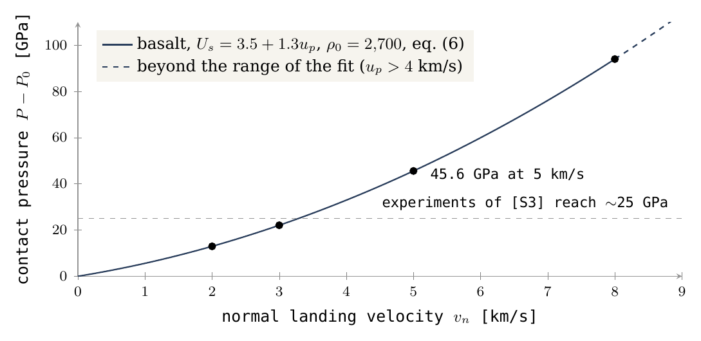
Kann eine Flüssigkeit einen Stoß erzeugen? Ein Fachmann könnte einwenden, ein geschmolzener zurückkehrender Körper sei zu weich, um das Gelände zu stoßen. Dem ist nicht so: Eine Flüssigkeit widersteht der Kompression fast so stark wie ein Festkörper, und eine Kompressionswelle läuft auf dieselbe Weise durch sie hindurch; was einer Flüssigkeit fehlt, ist Festigkeit gegen Scherkräfte, nicht Steifigkeit gegen Druck. Ein flüssiger zurückkehrender Körper kann eine Kompressionswelle übertragen, und deshalb ist vollständige Erstarrung keine Bedingung für die Entstehung des Stoßes selbst. Allerdings beeinflussen Größe, Dichte, Verteilung und Wärme des zurückkehrenden Körpers den Druck, die Pulsdauer und die Aushöhlung. Die Schwellen für Mineralumwandlungen hängen von der Art des Materials und seinem Zustand ab [S4]. Eine langsamere Landung kann unter geeigneten Bedingungen auch einen Sekundärkrater bilden [S1]; es gibt keine universelle Schwelle, unterhalb derer „nichts aufgezeichnet wird“.
J.3 Die Dampfatmosphäre ist Teil des Tests
Die Frage, die dieser Abschnitt beantwortet, lautet: Wie viel Geschwindigkeit verliert das zurückkehrende Material auf seinem Weg durch den Dampf, der den Mutterkörper im Szenario umgab? Das ist wichtig, weil der Landedruck von §J.2 von der Landegeschwindigkeit abhängt, und jeder Kilometer pro Sekunde, der in der Luft verloren geht, geht dem Krater verloren.
Die Flugtabellen setzen ein Vakuum voraus. In der Dampfumgebung des Szenarios muss die Materialsäule untersucht werden, die der zurückkehrende Körper durchquert. Wir definieren einen ballistischen Koeffizienten und eine atmosphärische Säule entlang der Bahn . In einem Modell mit rein ballistischem Luftwiderstand, bei konstanter Masse und Stirnfläche und ohne andere Kräfte, fällt die Geschwindigkeit exponentiell ab:
Die Symbole: ist die Masse des zurückkehrenden Körpers, sein der Strömung zugewandter Querschnitt und sein Widerstandsbeiwert, eine Zahl nahe eins bei einem stumpfen Körper. Der ballistische Koeffizient ist also Masse pro Einheit Stirnfläche: Er gibt an, wie viel Körper hinter jedem Quadratmeter steht, der das Gas beiseiteschiebt. Eine Kanonenkugel hat ein großes, eine Feder ein kleines. ist die Gasmasse pro Quadratmeter entlang der Bahn – das Gewicht der Dampfsäule, durch die sich der Körper hindurchdrängen muss, ausgedrückt als Masse. Gleichung (7) besagt, dass der Körper seine Geschwindigkeit behält, solange das Gas, auf das er trifft, klein gegenüber seiner Masse pro Fläche ist; werden beide vergleichbar, fällt die Geschwindigkeit exponentiell ab. Ein schwerer, kompakter Körper kommt fast unversehrt hindurch; ein leichter oder fein zerteilter wird aufgehalten.
Zahlenbeispiel: die beiden Durchgänge. Nur als Beispiel ergibt ein kugelförmiger Körper von einem Kilometer Durchmesser, mit einer Referenzdichte von 2,700 und , den Wert kg/m². Ein doppelter senkrechter Durchgang durch eine ruhende hydrostatische Dampfsäule mit einem angenommenen Basisdruck von 100 bar und ergibt , und das Einsetzen dieses Werts in Gleichung (7) liefert einen Abschwächungsfaktor der Geschwindigkeit von etwa 0.51. 100 bar sind kein rekonstruierter Druck der frühen Atmosphäre.
Die beiden Durchgänge sind der Weg nach oben beim Austritt aus der Öffnung und der Weg nach unten bei der Rückkehr: Das Material verlässt die Öffnung durch den Dampf und kehrt durch ihn zurück. In einer ruhenden Säule ist der Basisdruck gleich dem Gewicht des Gases über jedem Quadratmeter, und deshalb ist für einen Durchgang der Basisdruck geteilt durch die effektive Schwerkraft. Bei beiden Durchgängen zusammen ist die Säule 1.35-mal so groß wie das des Körpers, und der Luftwiderstand bremst den Körper auf etwa die Hälfte der Geschwindigkeit, die er im Vakuum gehabt hätte. Ein Körper, der mit 5 km/s ausgeworfen wurde, würde mit etwa 2.5 km/s landen; nach Abbildung 7 erzeugt diese Landegeschwindigkeit noch immer einen lokalen Kontaktdruck von über 12.96 GPa, dem Wert bei 2 km/s.
Die gemeinsame Parameterbedingung. Das Beispiel zeigt, dass der Luftwiderstand keine Korrektur ist, die man immer vernachlässigen kann. Bei einer realen Bahn müssen Schwerkraft und Luftwiderstand zusammen gelöst werden; auch Erhitzung, Zerfall und die Bewegung des Gases verändern . Die flüchtigen Stoffe können den Auswurf unterstützen und zugleich einen schnellen Durchgang durch die Atmosphäre erschweren. Ein einziger Parameterbereich muss sowohl die Anforderung des Auswurfs als auch die Anforderung des Durchgangs durch die Atmosphäre erfüllen. Einfach gesagt: Dieselben Gase, die das Material aus der Öffnung hinausschleudern (§J.1), bilden den Dampf, den es durchqueren muss, sodass eine hohe Gaskonzentration das Schleudern unterstützt und den Flug hemmt. Das Modell verlangt einen Bereich von Gasgehalt, Körpergröße und Dampfdruck, in dem beide Anforderungen zugleich erfüllt sind.
J.4 Ein landender Klumpen, eine Materialwolke und eine bewahrende Oberfläche
Die Frage, die dieser Abschnitt beantwortet, lautet: In welchem Zustand muss das Material ankommen, und welche Art von Oberfläche muss es aufnehmen, damit ein Krater entsteht und erhalten bleibt?
Der kompakte Klumpen gegenüber der verteilten Wolke. Dieselbe Masse erzeugt nicht denselben Stoßpuls, wenn sie als dichter Klumpen oder als verteilte Wolke ankommt. Ein zusammenhängender Klumpen überträgt seinen Impuls in kurzer Zeit auf eine kleine Fläche, und der Druck ist hoch; eine Wolke verteilt denselben Impuls über eine weite Fläche und eine längere Zeit, so wie ein aus der Höhe ausgeschütteter Eimer Wasser anders aufschlägt als ein einzelner Eisblock gleichen Gewichts.
Bedingungen des Zerfalls. Die Zeit der Gezeitendeformation allein bestimmt nicht, ob ein Klumpen zerfällt: Auch Viskosität, Festigkeit, Oberflächenspannung und manchmal Eigengravitation müssen einbezogen werden. Die Viskosität widersteht der Streckung eines weichen Klumpens; die Festigkeit hält einen festen Klumpen zusammen; die Oberflächenspannung hält einen Tropfen zusammen, so wie sie einen Tropfen zusammenhält, der eine Spritze verlässt; und bei einem großen Körper leistet seine eigene Schwerkraft dasselbe. Daher gibt es keine Grundlage für die Annahme, dass jeder Klumpen, der eine große Strecke zurücklegt, unversehrt ankommt oder dass jeder geschmolzene zurückkehrende Körper seine Fähigkeit zur Kraterbildung verliert.
Steifigkeit des Ziels und Erhaltungsfähigkeit. Die aufnehmende Oberfläche muss im Verhältnis zur Größe des Kraters dick und fest genug sein (Abbildung 8). Eine erstarrende Schicht von einem Meter Dicke beweist nicht die Erhaltung eines Kraters von Kilometern Durchmesser. Paper 3 behandelt die Schale: steif und kalt in ihrem äußeren Teil, beweglich an ihrer Basis. Der Test hier fügt die Erwärmung bei der Landung hinzu und die Notwendigkeit, dass die Aufzeichnung vor Verschüttung oder Relaxation entsteht. Relaxation ist das langsame Abflachen und Schließen eines Kraters, dessen Gelände zu weich ist, um seine Form zu halten, so wie sich eine in dicken Honig gedrückte Mulde mit der Zeit schließt; ein Krater behält seine Form nur, wenn das Gelände darunter steif genug ist, bis in eine Tiefe von der Größenordnung seines Durchmessers, und lange genug.
Abbildung 8 zeigt, wie solche Oberflächen heute aussehen. Das Hochland der Rückseite um Tsiolkovskiy ist mit Kratern aller Größen bedeckt, die einander überlappen, auf der dicksten Kruste des Mondes. Im Modell ist das die älteste Aufzeichnung, entstanden auf der Schale, solange sie noch auf dem Mutterkörper lag, und mit ihr nach oben getragen.
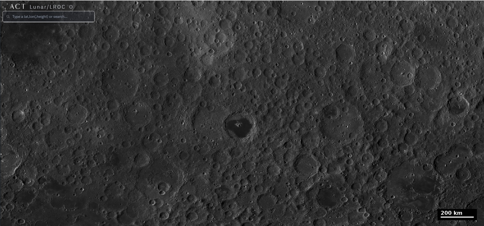
J.5 Gravitative Bindung und eine Geschwindigkeitsobergrenze
Die Frage, die dieser Abschnitt beantwortet, lautet: Mit welcher Geschwindigkeit kann Material geworfen werden, sodass es dennoch zurückkehrt? Material, das zu schnell geworfen wird, verlässt die Erde für immer und bildet keinen Krater auf der Schale; die Obergrenze begrenzt daher die Geschwindigkeiten, die die Krater aufzeichnen können.
Im zentralen Modell setzt die Bedingung der gravitativen Bindung für radialen Auswurf eine Obergrenze für die Wurfgeschwindigkeit:
Energieerhaltung in einem Zentralfeld. In einem Feld, das zu einem einzigen Zentrum hin zieht und sich zeitlich nicht ändert, bleibt die Gesamtenergie eines geworfenen Körpers – kinetische Energie plus Lageenergie – entlang seines Fluges konstant. ist diese Summe pro Kilogramm (Gleichung 10 von §K.1). Ein Körper mit negativer Gesamtenergie kann nicht aus dem Feld herausklettern: Er steigt, wird langsamer und fällt zurück. Ein Körper mit positiver Gesamtenergie entkommt. ist die Stärke des irdischen Feldes, der Radius, von dem das Material geworfen wird (6,721 km im Beispiel), und die Rotationsrate des Mutterkörpers. Der Term ist das Quadrat der Fluchtgeschwindigkeit von einem ruhenden Körper. Der zweite Term, , ist der Anteil, den die Rotation bereits bezahlt hat: Material am Äquator einer sich drehenden Oberfläche bewegt sich mit dieser Oberfläche seitwärts mit der Geschwindigkeit , schon bevor es geworfen wird, und diese Seitwärtsbewegung ist Teil seiner Energie. Der radiale Wurf muss nur den Rest liefern. Alles Material, das mit weniger als 10.748 km/s ausgeworfen wird, bleibt gebunden und kehrt zurück; darüber verlässt es das System.
Die Westverschiebung. Dieselbe Seitwärtsgeschwindigkeit erklärt, warum das Material im Westen landet (§K.1). Senkrecht nach oben geworfen, behält es die Seitwärtsgeschwindigkeit, die es an der Oberfläche hatte; doch während es steigt, trägt diese Geschwindigkeit es pro Sekunde durch einen kleineren Winkel, als sich die Oberfläche dreht, weil dieselbe Geschwindigkeit bei größerem Radius einen kleineren Winkel überstreicht – ein Mädchen, das auf einem sich drehenden Karussell nach außen geht, bleibt hinter den Brettern unter ihr zurück. Wenn das Material herunterkommt, hat sich das Gelände darunter bereits nach Osten bewegt, und der Landepunkt ist westlich der Öffnung verschoben: etwa 1,032 km nach Westen bei einem Wurf mit 5 km/s, nach 28 Minuten in der Luft. Die Energieerhaltung liefert auch die Rückkehrgeschwindigkeit: Ohne Luftwiderstand und in einem unveränderten Feld hat Material, das zu dem Radius zurückkehrt, den es verließ, dieselbe Gesamtenergie und dieselbe Seitwärtsgeschwindigkeit, und daher ist seine radiale Geschwindigkeit wieder , und relativ zur sich drehenden Oberfläche landet es mit der Geschwindigkeit, mit der es geworfen wurde.
Die erweiterte Schranke der Relativgeschwindigkeit. Gravitativ an die Erde gebunden zu bleiben, garantiert keine Landung auf der Schale. Das Material kann auf einer anderen Region landen, vom Mutterkörper wieder aufgenommen werden oder sich beim Zusammentreffen mit dem sich entwickelnden Körper verändern. Für eine gebundene Komponente in einem Zentralfeld lautet eine allgemeine und weitere Schranke für die Relativgeschwindigkeit:
In Worten: Ein Körper, der noch an das Feld gebunden ist, kann sich beim Radius nicht schneller bewegen als die Fluchtgeschwindigkeit bei diesem Radius, ; die Oberfläche, auf der er landet, bewegt sich mit ; und die größtmögliche Annäherungsgeschwindigkeit ist die Summe beider, wie bei zwei Autos, die frontal zusammentreffen. Die Schranke ist in einer bestimmten Auswurfgeometrie nicht unbedingt erreichbar. Die alten Stoßobergrenzen von 113 oder 97 GPa sind keine Obergrenzen für alles Material, das aus dem System Erde–Mond stammt. Sie hingen von der gewählten Bahnfamilie und dem gewählten Material ab, und teilweise lagen sie jenseits des Gültigkeitsbereichs der Stoßnäherung. Deshalb schließt eine Probe oberhalb einer solchen Zahl für sich genommen nicht jede irdische Quelle aus.
Der Hill-Radius in der späten Phase. Der Hill-Radius ist ein dynamischer Maßstab und keine Grenze, an der die Schwerkraft des Mondes verschwindet. Er ist der Abstand von einem kleinen Körper, innerhalb dessen seine eigene Anziehung auf ein nahes Teilchen die Gezeitenanziehung des größeren Körpers überwiegt, um den er kreist; innerhalb davon hält der kleine Körper sein Material fest, außerhalb davon dominiert der größere Körper. Bei der späten Referenz von 17,631 km, mit der vollen Mondmasse und einer Körperdichte von 2,600, ergibt sich km und ein Körperradius von etwa 1,890 km. Ein freier Fall aus der Ruhe von allein in der Mondschwerkraft ergibt etwa 1.31 km/s, doch das ist ein begrenztes Rechenexperiment und keine Obergrenze für einen zurückkehrenden Körper, der sich bereits in Bewegung befindet. Dieser Vergleich betrifft einen späteren Zustand und darf nicht mit dem frühen Feld der Tabellen kombiniert werden, als beschrieben beide denselben Zustand.
Was wir nun haben: Ein Wurf mit einigen Kilometern pro Sekunde braucht pro Kilogramm an der Öffnung, geliefert vom Druck von der Erde mit Unterstützung der flüchtigen Stoffe; das Material kehrt mit der Geschwindigkeit zurück, mit der es geworfen wurde, landet westlich seiner Öffnung und erzeugt bei der Landung auf Basalt einen Kontaktdruck von einigen zehn Gigapascal; der Dampf kann diese Geschwindigkeit halbieren, und daher gehen die Größe des zurückkehrenden Körpers und der Gasgehalt gemeinsam in den Test ein; und jeder Wurf unter etwa 10.748 km/s bleibt gebunden. Teil K berechnet die Flüge.
Die Geometrie
Wo das zurückkehrende Material landet, wird vom Flug und von der sich drehenden Oberfläche bestimmt. Der Ansatz: Die Flüge vom Mutterkörper und vom Körper werden berechnet, und ihre Landeorte werden kartiert.
Teil J fragte, wie viel Energie das Material trug, als es eine Öffnung verließ, und welchen Stoß es bei der Landung hätte erzeugen können. Dieser Teil stellt die nächste Frage: Wenn das Material bereits in der Luft ist, wo kommt es herunter, und mit welcher Geschwindigkeit landet es relativ zum Gelände, auf dem es landet? Die Antwort hängt nur von zwei Dingen ab: vom Flug selbst, bestimmt durch die Wurfgeschwindigkeit und die Schwerkraft des Mutterkörpers, und von der Bewegung der Oberfläche darunter, die sich weiterdreht, während das Material in der Luft ist. Wir betrachten drei Fälle nacheinander: Material, das die Schale des Mutterkörpers verlässt und auf dieselbe Schale zurückfällt (§K.1); Material, das den Mutterkörper verlässt und auf einer höheren Fläche landet, etwa der aufsteigenden Kuppel oder dem sich entwickelnden Körper (§K.2), und was das über einen zeitlichen Trend des Stoßes aussagt und nicht aussagt (§K.3); und Material, das vom Körper selbst geworfen wurde, nachdem er aufgestiegen war, und auf den Körper zurückfällt (§K.4). Der letzte Fall ist derjenige, der die Längengrade bestimmt: Er erklärt, warum die nachlaufende Hälfte des Mondes, zentriert auf 90° O, am dichtesten mit Kratern besetzt ist, und warum die vorauslaufende Hälfte, zentriert auf 90° W, diejenige ist, auf der die Krater am heftigsten landeten.
K.1 Rückkehr zur Schale auf derselben Höhe
Die Frage hier ist einfach: Material wird vom Äquator des sich drehenden Mutterkörpers senkrecht nach oben geworfen und kehrt auf dieselbe Höhe zurück. Mit welcher Geschwindigkeit trifft es auf das Gelände, und wo?
Die Erhaltungsgleichungen im Inertialsystem. Wir bezeichnen mit die Winkelgeschwindigkeit der Oberfläche, wobei die Rotationsperiode ist (5.5 h im Beispiel; siehe die Umgebungstabelle). Material, das radial von der Oberfläche, senkrecht nach oben, ausgeworfen wird, hat auch eine anfängliche Tangentialgeschwindigkeit : die Seitwärtsgeschwindigkeit, die es mit dem sich drehenden Gelände in dem Moment teilte, als es dieses verließ, wobei der Radius des Wurfpunkts ist. Ohne Luftwiderstand und in einem unveränderlichen Feld behält das Material zwei konstante Werte während seines gesamten Fluges. Der erste ist die Gesamtenergie pro Masseneinheit, : die kinetische Energie der radialen und tangentialen Bewegung zusammen, abzüglich der Tiefe des Schwerkrafttrichters, , wobei die Gravitationskonstante mal der frühen Masse des Mutterkörpers ist. Der zweite ist der Drehimpuls pro Masseneinheit, : die Tangentialgeschwindigkeit mal dem Abstand vom Zentrum, die misst, wie viel „Drehung“ das Material mit sich trägt. In einem Inertialsystem – einem, das sich nicht mit der Oberfläche dreht – lauten sie:
Hier ist die Auswurfgeschwindigkeit, gemessen relativ zum Gelände. Bei der Rückkehr zum selben Radius haben unter den Annahmen eines konstanten Feldes und ohne Luftwiderstand beide Größen ihre Anfangswerte. Da der Drehimpuls gleich und der Radius gleich ist, kehrt die Tangentialgeschwindigkeit zu ihrem Anfangswert zurück, ; da die Energie gleich und die Tiefe des Schwerkrafttrichters gleich ist, ist die Gesamtgeschwindigkeit gleich, und daher ist die radiale Geschwindigkeit : vom gleichen Betrag wie beim Wurf und jetzt nach unten gerichtet. Eine Oberfläche, die sich mit derselben Rate dreht, bewegt sich tangential mit derselben Geschwindigkeit, und daher heben sich die Seitwärtskomponenten des Materials und des Geländes beim Kontakt gegenseitig auf, und nur die radiale Komponente bleibt. Daher gilt:
In Worten: Material, das auf die Höhe zurückkehrt, von der es ausgeworfen wurde, landet mit der Geschwindigkeit, mit der es geworfen wurde, unabhängig von der Rotationsrate. Das ist wichtig, weil es die Landegeschwindigkeit und über sie den Stoß direkt an die Auswurfgeschwindigkeit an der Öffnung (Teil J) bindet, ohne Gewinn und ohne Verlust durch den Flug.
Die Gleichung beschreibt eine tatsächliche Landung auf einer zusammenhängenden kugelförmigen Fläche im Modell. Sie legt nicht fest, dass das Material auf dem Teil der Schale landete, der mit der Kuppel aufsteigen sollte; eine solche Festlegung erfordert eine Karte der Öffnungen und der Schale. Die unten angegebene Landeentfernung ist der relative Versatz entlang des Äquators.
Die Flugparameter. Die Tabelle verfolgt vier Flüge, von 2 bis 8 km/s. Lesen Sie jede Zeile von links nach rechts: auf welche Höhe das Material stieg, wie lange es in der Luft war, wie weit westlich seines Ausgangspunkts es herunterkam und mit welcher Geschwindigkeit es landete. Die letzte Spalte wiederholt die erste, und das ist Gleichung (11). Die übrigen Spalten – Höhe, Dauer und Versatz – wachsen viel schneller als die Geschwindigkeit: Die Erhöhung der Geschwindigkeit von 2 auf 5 km/s erhöht die Gipfelhöhe fast um das Achtfache (von 251 auf 1,932 km), und bei 8 km/s steigt das Material höher als der Radius des Mutterkörpers selbst (8,684 km gegenüber km) und bleibt mehr als anderthalb Stunden in der Luft.
|
, km/s |
Gipfelhöhe über dem Wurfradius, km | Rückkehrzeit, Minuten | Westversatz an der Oberfläche, km | , km/s |
|---|---|---|---|---|
| 2 | 251 | 8.46 | 51.7 | 2 |
| 3 | 591 | 13.50 | 184.1 | 3 |
| 5 | 1,932 | 28.01 | 1,031.6 | 5 |
| 8 | 8,684 | 97.28 | 8,438.7 | 8 |
Der Mechanismus der Westverschiebung. Im Inertialsystem bewegt sich das Material in Rotationsrichtung, nach Osten, doch die Oberfläche kommt weiter voran und überholt es während seines Fluges. Der Grund ist der Drehimpuls. Während das Material steigt, wächst sein Abstand vom Zentrum, während sein Drehimpuls konstant bleibt, und daher dreht es sich langsamer um das Zentrum als das Gelände darunter, das sich weiter mit dreht. Eine Eiskunstläuferin, die ihre Arme ausbreitet, verlangsamt ihre Drehung auf dieselbe Weise. Wenn das Material herunterkommt, ist das Gelände bereits nach Osten vorangekommen, und das Material landet westlich der Stelle, von der es ausging. Der Westversatz ist eine Eigenschaft des ballistischen Fluges und keine Bewegung der Schale.
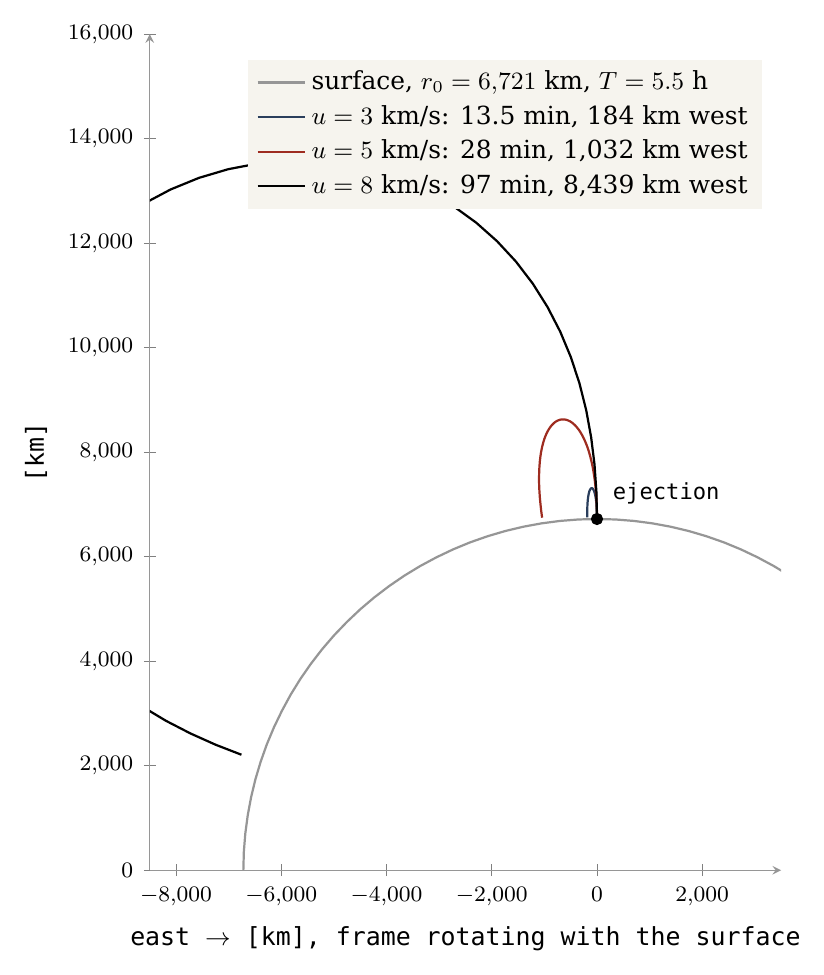
Abbildung 9 zeigt dieselben Flüge so, wie sie einem Beobachter erscheinen, der auf der sich drehenden Oberfläche steht. Der große Bogen ist die Oberfläche, der Punkt ist der Wurfpunkt. Jede Kurve steigt, biegt nach Westen (nach links) ab und fällt auf die Oberfläche zurück; je höher und länger der Flug, desto weiter westlich landet er. Der Flug mit 8 km/s, in Schwarz, steigt am höchsten und landet mehr als 8,000 km weiter westlich.
Das vom Körper selbst geworfene Material. Die obigen Flüge beginnen auf dem Mutterkörper. Der Körper warf, nachdem er aufgestiegen war, auch Material aus seinen eigenen Öffnungen; wo dieses Material auf ihn zurückfiel und wie heftig, schuf den Unterschied zwischen seiner vorauslaufenden und seiner nachlaufenden Hälfte. Diese Aufzeichnung ist das Thema der Teile F–I und von §K.4.
Was wir nun haben: Auf der Schale des Mutterkörpers ist die Landegeschwindigkeit gleich der Wurfgeschwindigkeit, und der Landepunkt liegt westlich der Öffnung in einem Abstand, der mit der Geschwindigkeit schnell wächst.
K.2Landung auf einem höheren Ziel
Der nächste Fall ist Material, das nicht auf seine eigene Höhe zurückfällt, sondern auf einer erhöhten Fläche landet – der Flanke der aufsteigenden Kuppel oder dem sich entwickelnden Körper darüber. Ein solches Ziel wird als mit dem Mutterkörper mitrotierend angenommen (Korotation), und daher bewegt es sich schneller seitwärts als das Gelände darunter, proportional zu seinem Abstand vom Zentrum. Die Frage ist, mit welcher Geschwindigkeit das Material darauf trifft.
Im radialen Abstand lauten die radiale Geschwindigkeit und die Geschwindigkeit relativ zum mit dem Mutterkörper korotierenden Ziel:
Die Energiebilanz. Der erste Ausdruck ist die Energiebilanz in der Höhe : Die Gesamtenergie ergibt zusammen mit der Tiefe des Schwerkrafttrichters in dieser Höhe die verfügbare kinetische Energie; davon wird der an die Seitwärtsbewegung gebundene Anteil abgezogen, , und der Rest ist die Auf-und-ab-Bewegung. Senkrechte Summation. Der zweite Ausdruck verbindet zwei zueinander senkrechte Komponenten: die radiale Geschwindigkeit und die Differenz zwischen der Seitwärtsgeschwindigkeit des fliegenden Materials, , und der linearen Rotationsgeschwindigkeit des Ziels, . Beim Ausgangsradius, , verschwindet die zweite Komponente, und es ergibt sich , also wieder Gleichung (11). In größerer Höhe bewegt sich das Material langsamer seitwärts als das Ziel, und diese Differenz ist Teil der Landegeschwindigkeit: Das Ziel schiebt sich von der Seite in das Material hinein.
Die radiale Erreichbarkeitsschwelle. Damit das Material tatsächlich auf dem Ziel landet, sind und ein Zusammentreffen der Bahn des Materials mit dem Ziel in Zeit und Ort erforderlich. Das Erreichen des Zielradius allein ist keine Landung auf einem kleinen Körper oder einer Aufwölbung: Das Material muss sich auch an dem Ort befinden, an dem das Ziel ist, wenn es ankommt. Die radiale Erreichbarkeitsschwelle ergibt sich durch Einsetzen von beim Zielradius – das ist die Geschwindigkeit, die das Material genau bis zu dieser Höhe bringt:
Der erste Term ist der Preis des Aufstiegs aus dem Schwerkrafttrichter, von bis ; der zweite Term, dessen Vorzeichen negativ ist, ist die Hilfe, die das Material von der Seitwärtsbewegung erhält, die es von der sich drehenden Oberfläche mitbringt.
Die Tabelle gibt für drei Zielradien die minimale Wurfgeschwindigkeit an, die nötig ist, um sie zu erreichen, und die Landegeschwindigkeit relativ zum Ziel für einen Wurf mit 5 und mit 8 km/s. Zwei Trends gehen daraus hervor. Begrenzte Höhe. Ein Flug mit 5 km/s erreicht 8,000 km (wo 4.226 km/s genügen), aber nicht 10,000 km (wo 6.072 km/s nötig sind). Abnahme der Relativgeschwindigkeit mit der Höhe. Beim Flug mit 8 km/s sinkt die Landegeschwindigkeit, je höher das Ziel liegt: von 6.834 auf 5.491 und auf 4.597 km/s, und sie bleibt stets unter den 8 km/s einer Rückkehr auf dieselbe Höhe.
|
Zielradius, km |
, km/s | für | für |
|---|---|---|---|
| 8,000 | 4.226 | 2.775 | 6.834 |
| 10,000 | 6.072 | erreicht nicht | 5.491 |
| 12,000 | 7.050 | erreicht nicht | 4.597 |
Die Radien sind Testflächen; sie sind keine fünf datierten Bauphasen und keine Abstände des Mondmittelpunkts. Für ein ausgebildetes kugelförmiges Ziel unterscheiden sich die Abstände von der Erde zu seiner Vorderseite und zu seiner Rückseite vom Abstand zwischen den Mittelpunkten um , den Radius des Körpers. In dieser Phase sind auch die Schwerkraft des sich entwickelnden Körpers und die Form der Verbindung erforderlich.
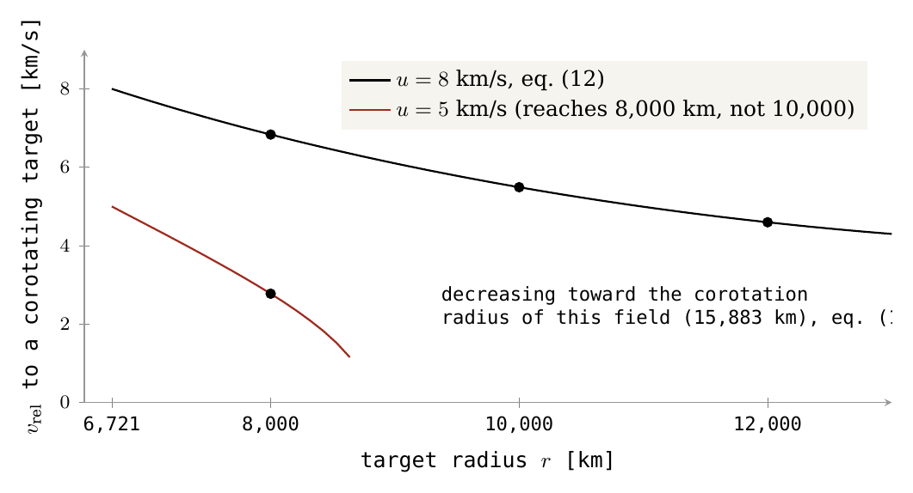
Abbildung 10 zeichnet dieselbe Rechnung kontinuierlich. Die waagerechte Achse ist der Zielradius, vom Wurfradius von 6,721 km an nach außen; die senkrechte Achse ist die Landegeschwindigkeit relativ zu ihm. Beide Kurven beginnen bei ihrer Wurfgeschwindigkeit, wie Gleichung (11) es verlangt, und fallen, je höher das Ziel liegt. Die rote Kurve, für 5 km/s, endet dort, wo der Flug seine Gipfelhöhe erreicht, 1,932 km über dem Wurfradius (§K.1): Darüber hinaus kommt das Material nicht an. Die Punkte markieren die Werte der Tabelle.
K.3Der Trend des Stoßes hängt von der Bahn ab
Abbildung 10 lädt zu einer zeitlichen Lesart ein: Je höher das Ziel stieg, desto weicher wurden die Landungen, und daher sollte der in den Proben aufgezeichnete Stoß mit der Zeit abnehmen. Dieser Abschnitt legt fest, wann diese Lesart gilt und wann nicht.
Für dieselbe Quelle, eine konstante Wurfgeschwindigkeit, konstantes und konstantes ergibt die Ableitung von Gleichung (12) nach dem Zielradius:
Die Gleichung stellt beim Radius zwei Beschleunigungen einander gegenüber: die Zentrifugalbeschleunigung, den Zug nach außen, den ein mit dem Mutterkörper rotierender Körper spürt, , und die nach innen gerichtete Schwerebeschleunigung, . Der Korotationsradius. Im inneren Bereich, unterhalb des Radius, bei dem beide gleich sind, überwiegt die Schwerkraft, und die Landegeschwindigkeit sinkt mit der Höhe; im äußeren Bereich, darüber, überwiegt die Rotation, und die Landegeschwindigkeit steigt. Dieser Radius ist der Korotationsradius: der Abstand, bei dem ein Körper, der sich einmal mit dem Mutterkörper dreht, auf einer freien Umlaufbahn ist – weder von der Schwerkraft nach unten gehalten noch nach außen geschleudert. Die Relativgeschwindigkeit sinkt bis zum Korotationsradius des Modells und steigt jenseits davon, wenn das Material ankommt und das Ziel noch mit dem Mutterkörper mitrotiert. Mit den Daten der frühen Phase hier beträgt dieser Radius etwa 15,883 km, weil die Masse ist. Er ersetzt nicht den Referenzwert von 15,818 km in Paper 2, der eine andere Massendefinition verwendet. Alle Zielradien von §K.2 liegen tief innerhalb davon, und deshalb fällt jede Kurve in Abbildung 10.
Von einer geometrischen Beziehung zu einem zeitlichen Trend. Das ist eine Beziehung zwischen Höhe und Geschwindigkeit im selben Beispiel. Sie in einen zeitlichen Trend des Stoßes zu verwandeln, erfordert die Kenntnis, wie sich Wurfgeschwindigkeit, Rotation, Zielposition, Landewinkel und Material ändern. Bei der Rückkehr auf dieselbe Höhe ergibt sich Gleichung (11). Der Aufstieg eines anderen Körpers erfordert keinen abnehmenden Trend der Rückkehrgeschwindigkeit auf dieselbe Höhe: Material, das auf seine eigene Schale zurückfällt, landet mit seiner Wurfgeschwindigkeit, wie hoch auch immer ein zweiter Körper steht. Ein Trend des Stoßes nach Probentiefe erfordert auch eine Identifizierung von Schichten und Ereignissen: Faltung, Aushöhlung und wiederholte Landungen können die ursprüngliche Abfolge verwischen, wie ein Stapel Blätter, der durcheinandergebracht und neu gestapelt wurde und nicht mehr die Reihenfolge zeigt, in der sie geschrieben wurden. Es gibt hier keine bindende Vorhersage von 102→86 GPa (ein Abfall des Stoßdrucks – des Drucks in der Stoßwelle einer Landung, den Minerale aufzeichnen), und keinen Beweis, dass eine asteroidische Quelle keine zeitliche Veränderung zeigen kann. Die Abnahme in Abbildung 10 ist eine Eigenschaft einer Bahn; die Frage, ob sie zu einem zeitlichen Trend wurde, ist Sache der Aufzeichnung und nicht dieser Gleichung.
K.4Wo das vom Körper selbst geworfene Material landet
Die Abschnitte K.1–K.3 behandelten Material, das der Mutterkörper warf. Dieser Abschnitt wendet sich dem Material zu, das der Körper selbst warf, und zeigt, wie es das Muster der Krater nach Längengrad bestimmt, das die Teile C und F–I messen.
Die Obergrenze der Rückkehrgeschwindigkeit. Die Flüge der Teile J–K beginnen auf dem Mutterkörper. Nachdem der Körper auf der Verbindung aufgestiegen war, warfen auch seine eigenen Öffnungen – seine Maria – Material aus, das meiste aus der Nähe seines Äquators. Dieser Auswurf war weder stark noch weit. Material, das vom Körper mit seiner eigenen Fluchtgeschwindigkeit oder weniger ausgeworfen wird – etwa 2.0 km/s bei einer Dichte von 1,300 kg/m³ und 2.3 km/s bei der Ablösung –, wird im Schwerefeld des Körpers eingefangen und fällt auf ihn zurück, und die Rotation des verbundenen Körpers bestimmt, wo es landet und mit welcher Heftigkeit. (Die Fluchtgeschwindigkeit ist die Geschwindigkeit, mit der Material einen Körper für immer verlässt; darunter holt die Schwerkraft des Körpers das Material zurück. Diese Geschwindigkeiten sind um ein Mehrfaches kleiner als die Flüge mit 5–8 km/s in §K.1, und daher blieb das vom Körper geworfene Material nahe an den Austrittsöffnungen.)
Die synchrone Rotation und die vier Seiten. Die Reihe folgt der üblichen Konvention: Die vorauslaufende Hälfte des Mondes, die seiner Bahnbewegung zugewandte Hälfte, ist auf 90° W zentriert; die nachlaufende Hälfte auf 90° O. Die Konvention beruht auf der synchronen Rotation: Der Mond dreht sich einmal um seine Achse, während er die Erde einmal umläuft, und daher ist dieselbe Seite stets der Erde zugewandt (die Vorderseite, zentriert auf 0°), die gegenüberliegende Seite stets von ihr abgewandt (die Rückseite, 180°), ein Rand der Scheibe (limb) weist stets nach vorn entlang der Bahn, und der andere Rand stets nach hinten. Der verbundene Körper drehte sich auf dieselbe Weise, mit der Erde herumgetragen, und hatte dieselben vier Seiten.
Die Asymmetrie der Landung. Der Körper drehte sich mit der Erde. Material, das von der nachlaufenden Hälfte nach oben geworfen wird, kommt herunter, während sich diese Hälfte von ihm entfernt: Es holt das Gelände von hinten ein und landet sanft. Material, das von der vorauslaufenden Hälfte nach oben geworfen wird, kommt herunter, während diese Hälfte weiterläuft und in es hineinfährt: Das Gelände stößt frontal auf das fallende Material, und die Landung ist hart. Der Unterschied liegt in der Landegeschwindigkeit, die stets die Geschwindigkeit des Materials relativ zum Gelände ist, auf das es trifft. Wenn sich das Gelände vom fallenden Material entfernt, wird die Bewegung des Geländes von dieser Geschwindigkeit abgezogen; wenn sich das Gelände ihm entgegenbewegt, addieren sich beide. Ein Ball, der mit zurückweichender Hand gefangen wird, landet sanft in ihr; derselbe Ball, gefangen, während die Hand nach vorn stößt, schlägt auf sie. Material, das von der Rückseite geworfen wird, bleibt ein wenig hinter der Rotation zurück und driftet in Richtung 90° O – das Zurückbleiben nach Westen von §K.1, das von 180° aus zur nachlaufenden Hälfte weist:
| Geworfen von | Was es zurückholt | Landet | Landung |
|---|---|---|---|
| 180°, die Rückseite, nahe dem Äquator | die Schwerkraft; es bleibt ein wenig hinter der Rotation zurück | 170° O, wenn nah, 100° O, wenn weit | am härtesten (§I.1) |
| 90° O, die nachlaufende Hälfte | allein die Schwerkraft; der Körper entfernt sich von ihm | wieder auf 90° O | sanft |
| 90° W, die vorauslaufende Hälfte | die Schwerkraft und der Körper, der sich ihm weiter entgegenbewegt | wieder auf 90° W | hart |
Die Tabelle wird Zeile für Zeile gelesen: von wo das Material geworfen wurde, was es zurückholt, wo es landet und mit welcher Heftigkeit. Ihre Farben folgen den Farben der Zählung in §C.3: Orange für die nachlaufende Hälfte, wo das Material sanft landet und sich die Krater sammeln, und Grün für die vorauslaufende Hälfte, wo es hart landet. Material von der Rückseite, das nahe am Körper bleibt, landet nahe seiner Quelle (etwa 170° O); Material, das weiter gelangt, driftet bis 100° O, nahe der Mitte der nachlaufenden Hälfte. Seine Landung ist die härteste der drei, aus dem unten angegebenen Grund.
Die zwei Vorhersagen. Die nachlaufende Hälfte wirkt als Sammler: Sie fängt das Material, das sie selbst warf, und das von der Rückseite driftende Material auf und trägt daher die meisten Krater (§C.3). Die vorauslaufende Hälfte trifft frontal auf das Material, das sie warf, und ist daher die Hälfte, auf der das Material am heftigsten landete: Ihre Krater sollten die Spuren der harten Landung tragen (§F.1–L.4). Die Landungen auf der Rückseite waren noch härter, die härtesten von allen: Sie erfolgten, während der Körper verbunden war, unter der gemeinsamen Anziehung von Mond und Erde (§G.2, §I.1). Die Vorderseite steht getrennt von beiden: Sie liegt bei den großen Maria, und ihre Krater wurden von ihnen auch von unten geformt (§G.1).
Der Test. Die erste Vorhersage wird durch die Zählung in §C.3 geprüft. In einfachen Worten fragt der Test, ob der Überschuss bei 90° O ein Zufall der Zählung sein kann: Eine Kraterzählung streut etwa mit ihrer Quadratwurzel, und daher können sich zwei Regionen allein durch Zufall unterscheiden. Das Dichteverhältnis zwischen nachlaufender und vorauslaufender Hälfte beträgt dort 1.79, und das 95-%-Konfidenzintervall, 1.56–2.05, bleibt weit über eins, dem Wert, der keinen Unterschied bedeutet; ein Resampling (bootstrap) ganzer Kartenzellen statt einzelner Krater, um Krater zu berücksichtigen, die sich gruppieren, ergibt dieselbe Antwort. Die zweite Vorhersage wird an der Form der Krater in den Teilen F–I geprüft. Was wir nun haben, ist die Geometrie hinter beiden: sanfte Landungen und Dichte hinten, harte Landungen vorn.
Die Chemie
Das Material eines Kraters verrät, woher es kommt. Der Ansatz: Eisen, Titan und Thorium werden um die Maria und in den Kratern gelesen, und die fremde Masse, die die Lesart der Literatur verlangt, wird an dem gemessen, was die Kruste tatsächlich enthält.
Die Teile C bis K lasen die Krater nach ihrer Anzahl, ihrem Ort und ihrer Form. Dieser Teil liest, woraus sie bestehen. Die Form eines Kraters zeichnet auf, wie das zurückkehrende Material landete; seine Chemie zeichnet auf, woher dieses Material kam. Vier Fragen werden nacheinander gestellt. Kam das Material um jedes Mare aus diesem Mare (§L.1–L.3)? Ist das Innere des Kraters ein einziges Material oder sind es Schichten, die von unten ausgegraben wurden (§L.4)? Hat ein Körper von außen seine Masse in den Kratern hinterlassen, wie es die Einschlagslesart der Literatur verlangt (§L.5)? Und woraus bestand das Material, das nach der Ablösung weiter von der Erde ankam, und wo fiel es nieder (§L.6–L.7)? Die Chemie der Kraterböden der großen Krater auf dem Basalt wird zusammen mit den Kraterböden selbst gelesen, in §G.3: Die Kraterböden, die hoch erstarrten, hoben sich, als sie noch reich an flüchtigen Stoffen waren, die das leichte Material mit nach oben trugen, und sie sind ärmer an Eisen als die Kraterböden, die auf das Niveau des umgebenden Geländes zurücksanken und in denen sich das schwere Material absetzte.
Jede Art von Element beantwortet eine andere dieser Fragen:
| Element | Was es markiert | Was es hier verrät |
|---|---|---|
| Eisen und Titan (FeO, TiO) | das Material der Maria, das an beiden reich ist | wie weit jedes Mare sein Material warf und ob die Krater es tragen (§L.1, §L.2, §L.4, §L.6) |
| Thorium | ein Element, das in der letzten Flüssigkeit einer abkühlenden Schmelze verbleibt und mit tiefem Material aufsteigt | der Halo eines Mare, gelesen in grobem Maßstab (§L.3) |
| siderophile („eisenliebende“) Elemente | Metall, das sie trägt; ein Körper von außen bringt sie mit | ob ein fremder Körper seine Masse in den Kratern hinterließ (§L.5) |
| Rutheniumisotope | der Bereich des Sonnensystems, in dem das Material entstand | wem die siderophilen Elemente gehören, die die Krater tragen: einem fremden Körper oder der Erde (§L.5) |
Eisen und Titan werden als Gewicht ihrer Oxide angegeben, FeO und TiO, in Prozent des Gewichts des Geländes (Gewichtsprozent, wt%): 6.9 wt% FeO bedeutet 6.9 Gramm Eisenoxid in je 100 Gramm Oberflächenmaterial. Thorium ist weit seltener und wird in Teilen pro Million (ppm) angegeben, also Gramm pro Tonne. Drei Karten aus der Umlaufbahn werden im ganzen Teil verwendet. Der Kaguya Multiband Imager [S10], eine Kamera auf dem japanischen Satelliten Kaguya, maß das von der Oberfläche reflektierte Licht in mehreren Farben, aus denen Eisen und Titan mit etwa 240 m pro Pixel berechnet werden. Lunar Prospector, ein Satellit der NASA, zählte die Gammastrahlen, die Thorium aussendet; seine Karte ist über etwa 60 km geglättet. Die Mare-Karte von LROC ist der Umriss jeder Basalteinheit, die von der Kamera des Lunar Reconnaissance Orbiter kartiert wurde; sie dient dazu, den Basalt überall dort aus der Messung zu entfernen, wo das Gelände und nicht das Mare gelesen werden soll.
L.1Mare-Material in Ringen um das Mare
Dieser Abschnitt führt den in §C.5 formulierten Quellentest durch. Das Modell hält fest, dass die Maria die Öffnungen sind, aus denen das zurückkehrende Material geworfen wurde (§C.1): Die meisten Krater nahe einem Mare wurden von diesem Mare gebildet. Wenn dem so ist, sollte sich das, was ein Mare warf, auf dem Gelände um es herum finden, viel in seiner Nähe und weniger weiter entfernt, so wie die Asche eines Schornsteins in der dicksten Schicht neben dem Schornstein liegt. Die Literatur hält stattdessen fest, dass die Krater von Körpern von außen ausgehoben wurden, die mit den Maria nichts zu tun haben; nach dieser Lesart ist das Gelände nahe einem Mare nur dort angereichert, wo spätere Krater ein wenig vom Mare seitwärts in es hineingemischt haben, über einige Kilometer bis einige zehn Kilometer [S26]. Die beiden Lesarten trennen sich also bei der Reichweite: Ein Mare, das sein eigenes Material warf, reicht weit; seitliche Vermischung reicht nicht weit.
Das Messprotokoll und die Entfernung des Basalts. Das Gelände wird in Ringen gelesen: konzentrischen Bändern in festem Abstand vom Rand des Mare, 0–25 km, 25–50 km und so weiter bis 300–600 km. In jedem Ring wurden Krater mit Durchmessern von 5–60 km gewählt, und die Signatur des Geländes um jeden Krater wurde in 3–4 Kraterradien Abstand von seinem Mittelpunkt gelesen. Dieser Abstand liegt jenseits der Auswurfdecke des Kraters selbst – des Materials, das er hinauswarf –, die bis etwa 2 Radien reicht; deshalb ist das Gelesene das Gelände, auf dem der Krater landete. Jedes Pixel kartierten Basalts wird entfernt, sodass die Messung auf dem Land um das Mare erfolgt und nicht auf Lava, die sich darüber ausbreitete. Die Kontrollgruppen sind Krater derselben Größen in mehr als 600 km Abstand von jedem Mare: Ihr Gelände ist das Hintergrundniveau des Hochlands, wo kein Mare hinreichte.
Das Hauptergebnis: Mare-Material in Ringen um das Mare. Der Kern des Tests ist das Gelände um jedes Mare, Ring für Ring nach außen gelesen. Wenn das Mare sein Material um sich herum warf, müssen die schweren Elemente des Mare – Eisen und Titan – in einem Ring um es herum zu finden sein, und umso weniger davon, je weiter der Ring entfernt ist. Und sie sind dort. Der Eisengradient. Um die sechs Maria zusammengenommen fällt das Eisen des Geländes (3–4 Kraterradien, Basalt entfernt) von 6.9 wt% bei 0–25 km auf 3.1 bei 100–150 km und hält sich dann bei 3.3–3.4 bis 600 km, 1.1 wt% über den Kontrollgruppen; das Titan fällt von 0.90 auf 0.51, gegenüber 0.46 in den Kontrollgruppen (Tabelle, Abbildung 11). In einfachen Zahlen: Das Gelände nahe einem Mare enthält dreimal so viel Eisen wie das ferne Hochland (6.9 gegenüber 2.3), und selbst in 300–600 km Abstand enthält es noch etwa anderthalbmal so viel. Einzelne Maria. Um Smythii und Moscoviense fällt das Eisen innerhalb von 50–100 km auf die Hälfte; um Crisium bleibt es bis 300 km nahe 4 wt%. Die beiden Ausnahmen betreffen nur das Eisen, und sie liegen fern vom Mare: Jenseits von 150 km steigt das Gelände südwestlich von Nectaris wieder an, zum eisenreichen südlichen Hochland der Vorderseite hin, während sein Titan flach bleibt; Moscoviense auf der Rückseite ist ein kleines Mare, dessen Ring das Niveau der Rückseite, 2 wt%, innerhalb von 100 km erreicht. In beiden Ausnahmen fällt das Titan, oder das Eisen nahe dem Mare, noch immer wie erwartet; was abweicht, ist der ferne Ring, in dem das Gelände jenseits der Reichweite des Mare ein eigenes Niveau hat. Die Unterscheidung zwischen Öffnung und Ebene. Die Ebenen werden getrennt gelesen. Im Modell ist eine Ebene – Procellarum, Tranquillitatis, Fecunditatis – keine Öffnung über einer Speisungskuppel, sondern an Ort und Stelle geschmolzene Kruste (Paper 5, §C.2); sie hatte keinen Schlot, und sie warf nichts und ergoss nichts. Es sind die Maria – abgesehen von den Maria des Kontakts –, die ihre Schmelze über ihre Ränder ergossen, zusätzlich dazu, dass sie großes Material warfen. Um Procellarum, die größte der Ebenen, fällt das Eisen von 10.9 auf 2.4 wt%, das Niveau der Kontrollgruppen, bei 300–600 km – ein kurzes Abklingprofil, nicht die Reichweite eines Wurfs; Tranquillitatis und Fecunditatis liegen zwischen anderen Basalten und bleiben hoch.
Warum das Eisen am Rand am höchsten ist. Der Gradient spiegelt die Zeitachse der Versiegelung des Mare wider. Ein Mare wurde versiegelt – seine Oberfläche erstarrte und bewahrte die Zusammensetzung, die sie damals hatte – bei der Konzentration, die es am Ende erreicht hatte, etwa 17 wt% FeO. Das Gelände um es herum wurde früher versiegelt, als das Mare ärmer war. Die frühe Phase. In der ersten Phase floss das gemischte Material des Mare über große Entfernungen hinaus: Leichtes Material und flüchtige Stoffe neigen dazu, aufzuschwimmen, und da sie flüssiger sind, flossen sie weit. Die späte Phase. Je mehr leichtes Material das Mare verließ, desto stärker reicherte es sich an Eisen an, und seine Viskosität – sein Widerstand gegen das Fließen, die Eigenschaft, derentwegen Honig langsamer ist als Wasser – stieg, und was es warf, legte kürzere Strecken zurück. Eine Soße, die auf dem Herd einkocht, verhält sich ebenso: Solange sie dünn ist, spritzt sie weit aus dem Topf; wenn sie eindickt, fällt das, was sie verlässt, neben den Topf. Daher wurde das Gelände fern vom Mare eisenarm versiegelt und das Gelände nahe daran eisenreich. Dieselbe Geschichte datiert die Krater und die Maria: Nahe einem Mare tragen alte Krater weniger Eisen als neue Krater – obwohl die meisten neuen Krater klein sind, von flüchtigen Stoffen gebildet wurden und das leichtere Material tragen –, und ein eisenreiches Mare reicherte sich länger an und wurde spät versiegelt, während ein eisenarmes Mare früh versiegelt wurde, ohne starken Anreicherungsmechanismus.
| Gelände um den Krater, FeO/TiO (wt%) | 0–25 km | 25–50 | 50–100 | 100–150 | 150–300 | 300–600 |
|---|---|---|---|---|---|---|
| Die Maria | ||||||
| Smythii | 7.8/1.25 | 5.8/0.92 | 3.6/0.72 | 3.2/0.64 | 3.4/0.57 | 3.5/0.62 |
| Imbrium | 10.8/1.07 | 9.8/0.97 | 9.6/0.78 | — | — | — |
| Serenitatis | 8.0/1.31 | 7.0/0.67 | 6.7/0.68 | — | — | — |
| Crisium | 4.7/0.72 | 4.1/0.60 | 4.2/0.53 | 4.0/0.49 | 4.4/0.43 | 3.4/0.43 |
| Moscoviense | 7.3/1.00 | 3.2/0.61 | 2.4/0.48 | 1.9/0.47 | 2.1/0.48 | 2.3/0.46 |
| Nectaris | 5.2/0.84 | 4.6/0.79 | 4.1/0.72 | 4.1/0.65 | 4.5/0.65 | 6.0/0.67 |
| Die sechs Maria zusammengenommen | 6.9/0.90 | 5.1/0.75 | 3.9/0.61 | 3.1/0.53 | 3.3/0.53 | 3.4/0.51 |
| Die Ebenen | ||||||
| Tranquillitatis | 8.6/1.24 | 7.7/1.12 | 6.8/1.03 | 5.8/0.84 | 5.0/0.81 | 4.5/0.78 |
| Fecunditatis | 9.4/1.12 | 7.9/0.93 | 7.3/0.83 | 6.8/0.74 | 6.4/0.73 | 6.3/0.64 |
| Procellarum | 10.9/1.12 | 8.8/0.84 | 6.5/0.69 | 4.7/0.58 | 3.2/0.49 | 2.4/0.39 |
Mediane des Geländes in 3–4 Kraterradien Abstand, nach Entfernung der kartierten Mare-Pixel, für Zielkrater von 5–60 km, die dem nächstgelegenen Mare zugeordnet sind; Ringe mit weniger als 10 Kratern bleiben leer. Ferne Kontrollgruppen (600 km von jedem Mare): 2.3/0.46. Die Farbe verblasst mit der Entfernung.
Jede Zelle gibt Eisen und Titan an, FeO/TiO, im Ring ihrer Spalte. Die Tabelle wird entlang jeder Zeile gelesen, vom nächstgelegenen Ring bis zum entferntesten; das Orange verblasst mit wachsender Entfernung, und in den Zeilen der Maria klingen die Werte mit ihm ab. Die fett gedruckte Zeile, die sechs Maria zusammengenommen, ist das Hauptergebnis, und sie ist gegen die Kontrollgruppen in der Anmerkung unter der Tabelle zu lesen, 2.3/0.46. Die Ebenen blieben ohne Farbe, weil sie getrennt gelesen werden: Procellarum ist die Ebene, die bis auf das Niveau der Kontrollgruppen fällt. Die Striche markieren die fernen Ringe um Imbrium und Serenitatis, die zu wenige Krater enthalten, um sie zu lesen, weil das Gelände dort zwischen anderen Basalten liegt.
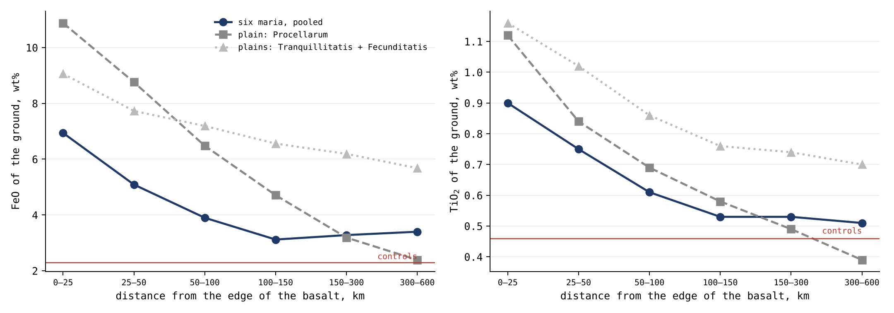
Abbildung 11 zeichnet dieselben Werte als Kurven gegen den Abstand. Die Kurven der Maria fallen über die ersten 100 km steil ab und verlaufen dann auf einem konstanten Niveau über den Kontrollgruppen; die Kurve von Procellarum fällt weiter, bis sie auf sie trifft. Der flache Teil der Kurven der Maria, über den Kontrollgruppen bis 600 km, ist die Reichweite, die seitliche Vermischung durch spätere Krater nicht liefern kann.
Daraus folgen zwei Lesarten. Um jedes Mare trägt das Gelände das Eisen des Mare, abklingend mit der Entfernung: Das Gelände innerhalb von 50 km von einem Mare enthält zweieinhalbmal so viel Eisen wie die fernen Kontrollgruppen, und ein Überschuss bleibt bis 600 km erhalten. Das ist das Kriterium von §O.1, und es ist erfüllt: Die Krater nahe einem Mare tragen mehr von seiner Signatur als Krater fern von ihm. Das ist es, was das Modell von Maria erwartet, die ihr Material um sich herum warfen. Und der Krater ist ärmer als seine eigene Umgebung – um wenig, aber in jedem Abstand und in derselben Richtung: , , und wt% FeO vom nächstgelegenen Ring bis zum entferntesten, gegenüber in den Kontrollgruppen, fern von jedem Mare. Diese vier Werte sind die Differenz „Kraterinneres minus sein eigenes Gelände“ in den vier Abstandsbändern der Tabelle von §C.5 (0–50, 50–150, 150–300 und 300–600 km). Der Unterschied ist klein, aber sein Vorzeichen ist das Entscheidende: Nahe einem Mare ist der Krater stets etwas ärmer als das Gelände, in dem er sitzt, und fern von jedem Mare nicht. Was dieser Unterschied misst und wie das Modell ihn liest, ist das Thema von §L.2.
Bis hierher: Das Gelände um jedes Mare trägt das Eisen und das Titan des Mare, viel in seiner Nähe und einen Überschuss bis 600 km; und neben den Ebenen, die nichts warfen und nichts ergossen, fällt das Eisen innerhalb einiger hundert Kilometer auf das Niveau der Kontrollgruppen.
Das Phänomen. Das Gelände um ein Mare ist dunkler und eisenreicher als das Hochland fern von ihm. Die Wissenslücke. Die Literatur erklärt den Halo als Mare-Material, das durch spätere Krater seitwärts in das Hochland gemischt wurde; das Modell sagt, dass das Mare sein Material auf das Gelände um sich herum warf und dieses Material dort die Krater bildete (§C.1, §C.5). Wenn das Mare die Quelle ist, muss seine Signatur mit dem Abstand von ihm abklingen, um jedes Mare, und die Krater in seiner Nähe müssen diese Signatur tragen. Die Forschungsfrage: Klingen Eisen, Titan und Thorium des Geländes und der Krater um ein Mare mit dem Abstand von ihm ab, um jedes Mare, und wie weit reicht die Signatur des Mare?
Zusammensetzungsgradienten über den Kontakt zwischen Mare und Hochland sind aus Spektren bekannt, die aus der Umlaufbahn gemessen wurden, und sie werden als seitlicher Transport durch spätere Krater gelesen, der Mare-Material einige Kilometer bis einige zehn Kilometer in das Hochland trägt [S26]. Nach dieser Lesart wirft jeder spätere Krater ein wenig vom Mare über eine kurze Strecke, und viele solche Würfe verteilen es; die Reichweite wird durch die Entfernung bestimmt, über die ein Krater wirft, und sie ist kurz. Eisen und Titan werden aus dem Kaguya Multiband Imager [S10] gelesen, Thorium aus Lunar Prospector. Was hier neu ist: Krater um sechs Maria und drei Ebenen werden ausgewählt, bevor irgendeine Chemie gelesen wird, wobei die Maria die Öffnungen über den Speisungskuppeln von Paper 5 sind; das Gelände wird Ring für Ring bis 600 km gelesen; und abgestimmte Kontrollgruppen fern von jedem Mare liefern die Basislinie.
Um jedes Mare sind Eisen und Titan des Geländes nahe dem Mare am höchsten und fallen nach außen ab, jenseits der wenigen zehn Kilometer, die seitliche Vermischung erklärt; die Krater in der Reichweite des Mare tragen seine Signatur, und die fernen tragen sie nicht. Eine Ebene warf nichts und ergoss nichts, und daher fällt der Überschuss neben einer Ebene innerhalb einiger hundert Kilometer auf das Niveau der Kontrollgruppen; die Maria, abgesehen von den Maria des Kontakts, ergossen ihre Schmelze über ihre Ränder, zusätzlich dazu, dass sie großes Material warfen.
Art der Forschung: quantitativ, im Vergleich mit einer Kontrollgruppe. Die Stichprobe: 11,574 Krater mit Durchmessern von 5–60 km außerhalb der Basaltflächen, davon 5,840 um sechs Maria (Crisium, Imbrium, Moscoviense, Nectaris, Serenitatis, Smythii) und 5,734 um drei Ebenen (Procellarum, Tranquillitatis, Fecunditatis); Die Kontrollstichprobe: 5,922 nach Größe abgestimmte Krater in mehr als 600 km Abstand von jedem Basalt. Abstimmung nach Größe bedeutet, dass die Kontrollgruppe Krater derselben Größen in denselben Anteilen enthält, sodass ein Unterschied nicht aus einem Vergleich großer mit kleinen Kratern entstehen kann. Die Werkzeuge: die Eisen- und Titankarten von Kaguya in voller Auflösung, die Thoriumkarte von Lunar Prospector, die Mare-Karte von LROC und eigens geschriebener Code, der jeden Krater und das Gelände um ihn herum Ring für Ring liest.
| Wahl | Warum, in einfachen Worten |
|---|---|
| Die Krater wurden gewählt, bevor die Chemie gelesen wurde | damit das Ergebnis nicht steuern kann, welche Krater gezählt werden |
| Das Gelände wurde in 3–4 Kraterradien gelesen, nach Entfernung der Mare-Pixel | um das Gelände zu lesen, auf dem der Krater landete, und nicht das Mare selbst |
| Ringe nach Abstand vom Rand des Mare | Eine Quelle hinterlässt ihre stärkste Spur in ihrer Nähe und eine schwächere weiter weg |
| Kontrollgruppen fern von jedem Mare | um das Niveau des Geländes zu kennen, das kein Mare erreichte |
Die Liste der Krater und der Kontrollgruppen wurde festgelegt und gespeichert, bevor irgendeine Karte geöffnet wurde, um eine Auswahlverzerrung zu vermeiden. Danach wurde jeder Krater in seinen Ringen gelesen, ebenso das Gelände um ihn herum außerhalb des Mare; die Werte sind die Tabellen von §C.5 und dieses Abschnitts.
Das Abklingen. Bei den sechs Maria zusammengenommen fällt das Eisen des Geländes von 6.9 wt% bei 0–25 km auf 5.1, 3.9 und 3.1 bei 100–150 km und bleibt bei 3.3 und 3.4 bei 150–300 und 300–600 km, 1.1 wt% über den Kontrollgruppen; das Titan fällt von 0.90 auf 0.51, gegenüber 0.46. Die Krater. In den Kratern folgt das Eisen dem Gelände Ring für Ring, von 5.88 bis 3.30 wt%, und jeder Krater ist etwas ärmer als sein Gelände ( wt% innerhalb von 50 km, 95-%-Konfidenzintervall von bis ; in den Kontrollgruppen). Ein 95-%-Konfidenzintervall ist der Bereich, in dem der wahre Wert mit 95% Sicherheit liegt, gegeben die Streuung der gemessenen Krater; hier liegt es ganz unter null, und daher ist die Tatsache, dass der Krater ärmer ist als sein Gelände, kein Zufall der Stichprobe. Thorium. Das Auswurfmaterial um die Maria trägt 2.16 ppm innerhalb von 50 km und 1.39 bei 300–600 km, gegenüber 1.02 in den Kontrollgruppen. Die Ebenen. Um Procellarum fällt das Eisen auf 2.4 wt%, das Niveau der Kontrollgruppen, bei 300–600 km; um die drei Ebenen zusammengenommen auf 2.60, während es um die Maria noch bei 3.40 steht.
Ergebnis. Die Hypothese wird gestützt: Um jedes Mare ist seine Signatur in seiner Nähe am höchsten und klingt nach außen ab, und sie reicht Hunderte von Kilometern weit – zu weit für seitliche Vermischung allein; die Maria sind die Quelle des Materials um sie herum. Ein Überschuss, der bis 600 km erhalten bleibt, ist das Zehnfache und mehr der Reichweite seitlicher Vermischung durch spätere Krater. Neben den Ebenen, die nichts warfen und nichts ergossen, fällt der Überschuss auf das Niveau der Kontrollgruppen. Einschränkungen. Die Ringe benachbarter Maria und Ebenen überlappen in großen Abständen, und daher sind die fernen Ringe nicht sauber, und die beiden kleineren Ebenen liegen zwischen anderen Basalten; die Thoriumkarte ist grob, etwa 60 km, und liest die Region und nicht den einzelnen Krater; zwei Ausnahmen beim Eisen (südwestlich von Nectaris und um Moscoviense) werden durch das Gelände jenseits erklärt, wurden aber nicht geprüft. Richtungen für weitere Forschung. Derselbe Test mit einer Thoriumkarte höherer Auflösung und ein Modell der Entfernung, in der Material, das aus einem Mare geworfen wurde, niedergehen sollte, im Vergleich mit der gemessenen Reichweite.
L.2Der Krater und das Gelände um ihn herum
§L.1 fand, dass das Gelände nahe einem Mare das Eisen des Mare trägt und dass der Krater, der in diesem Gelände sitzt, ein wenig ärmer ist als es. Dieser Abschnitt stellt dar, was gemessen wurde, was die Messung zeigt und wie das Modell sie liest.
Was gemessen wurde. Die Spektralindizes des Kaguya Multiband Imager messen das Licht, das allein von der obersten Oberflächenschicht reflektiert wird, und leiten daraus eine Konzentration ab: das Gewicht des FeO in je 100 Gramm dieser Schicht (wt%). Sie liefern keine Materialmenge und auch nicht die Tiefe, bis zu der das Material reicht. Das Kraterinnere und das Gelände in 3–4 Kraterradien werden auf denselben Karten, in derselben Auflösung und in derselben Einheit gelesen, Krater für Krater, jeder Krater gegen seinen eigenen nahen Bezugspunkt. Der Vergleich ist also einer von Gleichem mit Gleichem: zwei Konzentrationen derselben Oberflächenschicht, eine im Krater und eine auf dem Gelände um ihn herum.
Was das zeigt. Um die sechs Maria ist das Kraterinnere in allen Abstandsbändern etwas eisenärmer als sein eigenes Gelände: , , und wt% FeO bei 0–50, 50–150, 150–300 und 300–600 km (§C.5). Innerhalb von 50 km liegt das 95-%-Konfidenzintervall, von bis , ganz unter null. In den fernen Kontrollgruppen, mehr als 600 km von jedem Mare, beträgt der Unterschied . Der Unterschied ist klein – Zehntelprozent gegenüber 5.96 wt% des Geländes innerhalb von 50 km –, und seine Bedeutung liegt in seinem Vorzeichen: Nahe einem Mare ist der Krater etwas ärmer als sein Gelände, und fern von jedem Mare nicht. Er ändert nicht das Hauptergebnis von §L.1, das Abklingen der Signatur des Mare mit dem Abstand: In den Kratern folgt das Eisen dem Gelände Ring für Ring, von 5.88 bis 3.30 wt%, und der kleine Schritt zwischen Krater und Gelände sitzt auf dieser Abklingkurve, ohne ihren Trend zu ändern.
Wie das Modell dies liest. Wir schlagen vor, dass der Unterschied zu derselben Geschichte gehört wie das Abklingen (§L.1, Warum das Eisen am Rand am höchsten ist). Das Gelände um ein Mare wurde Schritt für Schritt versiegelt, während sich das Mare an Eisen anreicherte, und daher hängt das, was eine Oberfläche enthält, vom Zeitpunkt ihrer Versiegelung ab. Nahe einem Mare tragen alte Krater weniger Eisen als neue Krater, obwohl die meisten neuen Krater klein sind, von flüchtigen Stoffen gebildet wurden und das leichtere Material tragen. Der Kraterboden ist die Geländeoberfläche, auf der das Material landete – ihre Schichten –, und das Kraterinnere zeichnet das Material und die Schicht seiner eigenen Zeit auf. Diese Lesart wird geprüft, indem die Krater nahe jedem Mare nach Altersklassen aufgeteilt und der Unterschied zum Gelände Klasse für Klasse verglichen wird: Die alten Krater sollten das größere Defizit tragen.
L.3Das Thorium und das zurückkehrende Material
Das Thorium und das zurückkehrende Material. Das Thorium ist der dritte Indikator des Quellentests. Es wird nicht in die Kristalle der häufigen Minerale eingebaut und reichert sich daher in der letzten Flüssigkeit einer abkühlenden Schmelze an, und in der Reihe markiert es den Kontakt mit der Erde, dort, wo der Mond sie zuletzt berührte (Paper 5, §J.3). Um die Maria klingt auch das Thorium des Auswurfmaterials mit dem Abstand ab, von 2.16 ppm innerhalb von 50 km auf 1.39 bei 300–600 km, gegenüber 1.02 in den Kontrollgruppen (Study 2). Doch das Thorium ist ein regionaler Wert: Die Karte von Lunar Prospector ist über etwa 60 km geglättet, einen Maßstab, der größer ist als jeder gemessene Krater, und daher zeigt sie den Halo des Mare, trennt aber nicht zwischen einem Krater und seiner Umgebung. Ein Krater von 20 km auf dieser Karte ist wie ein Gesicht auf einem unscharf aufgenommenen Foto: Die Farbe der Szene ist zu sehen, das Gesicht aber nicht. Der Anteil des zurückkehrenden Materials selbst lässt sich aus diesen Karten nicht isolieren. Der nächste Schritt ist in Paper 12 (Forschungsthemen) festgelegt: ein Indikator, der das zurückkehrende Material sieht – Schmelze und Glas im Krater, das Kraterinnere Zone für Zone gelesen oder Thorium in höherer Auflösung – statt des Geländes.
L.4Das Kraterinnere
§L.2 verglich den Krater mit dem Gelände um ihn herum. Dieser Abschnitt blickt in den Krater selbst. Die Frage, die er beantwortet, lautet: Was füllt einen Krater? In der Literatur ist ein Krater eine Grube, die durch Schichten gegraben wurde, und sein Gipfel und seine Wände legen die tiefsten davon frei; im Modell ist ein Krater der Ort, an dem zurückkehrendes Material landete, und er ist mit diesem Material gefüllt. Die beiden Lesarten sagen über das Innere Verschiedenes voraus. Wenn der Krater eine Grube durch Schichten ist, sollten sich sein Zentrum, seine Wände und sein Rand voneinander und von der Oberfläche um ihn herum unterscheiden. Wenn er mit dem Material gefüllt ist, das ihn bildete und in ihm verteilt ist, sollte das Innere ein einziges Material sein.
Die Chemie in einem Krater zeigt, was ihn füllt. Die Krater von 10–60 km innerhalb von 150 km vom Rand eines Mare, 7,227 an der Zahl, wurden ausgewählt und festgeschrieben, bevor irgendeine Chemie gelesen wurde, und jeder von ihnen wurde in sechs Ringe geteilt: das Zentrum (bis 0.3 des Radius), den Kraterboden (0.3–0.7), die Innenwand (0.7–0.95), den Rand (0.95–1.1), das Auswurfmaterial (1.2–2 Radien) und die Umgebung (3–4 Radien), wobei die Mare-Pixel aus den beiden letzten entfernt wurden. Eisen und Titan wurden in jedem Ring auf den Karten des Kaguya Multiband Imager [S10] in ihrer vollen Auflösung gelesen, etwa 240 m:
| Differenz (wt%) | FeO | TiO |
|---|---|---|
| Zentrum minus Innenwand | (0.06–0.10) | (0.058–0.063) |
| Zentrum minus Kraterboden | (0.09–0.12) | (0.019–0.022) |
| Zentrum minus Rand | (–0.04) | (0.054–0.060) |
| Kraterboden minus Umgebung | (–0.03) | (–0.003) |
| Zentrum minus Umgebung | (0.07–0.13) | (0.011–0.019) |
| Rand minus Umgebung | (0.09–0.13) | (–) |
Jede Zeile zieht einen Ring des Kraters von einem anderen ab, für Eisen und für Titan, mit ihrem 95-%-Konfidenzintervall in Klammern. Entscheidend ist die Größe der Zahlen: Jede Differenz beträgt ein Zehntel Gewichtsprozent oder weniger. Die grüne Zeile ist der zentrale Indikator: Der Kraterboden und das Gelände um den Krater tragen dasselbe Eisen und dasselbe Titan bis zur zweiten Nachkommastelle.
Das Kraterinnere ist ein einziges Material. Vom Zentrum zur Wand und bis zum Rand ändert sich das Eisen um etwa ein Zehntelprozent und das Titan um weniger – weit unter der Kalibrierstreuung der Karten selbst (0.81 wt% FeO, 0.43 wt% TiO). Die Kalibrierstreuung ist die Unsicherheit, mit der ein Wert auf der Karte die wahre Zusammensetzung der Oberfläche wiedergibt; eine Differenz, die achtmal kleiner ist, ist kein Unterschied im Material. Der Kraterboden trägt genau das Eisen und das Titan des Landes um den Krater. Das zurückkehrende Material, das den Krater bildete, verteilte sich gleichmäßig in ihm: Es legte eine einzige Zusammensetzung vom Zentrum bis zum Rand ab, gleich dem Gelände, auf dem es landete.
Ein fachkundiger Leser wird einwenden, dass die Zentralberge von Kratern als Fenster in die tiefe Kruste dienen und dass ein Krater die Schichten zeigen sollte, die er durchschnitt. Die Messung beantwortet das in dieser Stichprobe: Über 7,227 Krater hinweg unterscheidet sich das Zentrum, wo der Zentralberg steht, von der Wand um 0.08 wt% FeO und von der Umgebung um 0.10, weit innerhalb der Streuung der Karten. Keine Schichtung ist in dem Maßstab zu sehen, den die Karten auflösen.
Die beiden Hälften tragen in ihren Kratern dieselbe Chemie. Nach dem Modell erhielt die vorauslaufende Hälfte, 90° W, die härtesten Landungen und die nachlaufende Hälfte, 90° O, die sanftesten (§K.4, §C.5). Die Krater bei 90° W und bei 90° O wurden eins zu eins paarweise nach Durchmesser abgestimmt (innerhalb von 5%), und in einem zweiten Test auch nach Mare-Bedeckung, nach dem Abstand vom Rand des Mare (innerhalb von 25 km) und nach der Breite (innerhalb von 10°): 1,214–1,235 Paare. Eins-zu-eins-Abstimmung bedeutet, dass jeder Krater der einen Hälfte einem Krater der anderen Hälfte gegenübergestellt wird, der ihm in allem gleicht außer in seiner Länge, sodass jeder verbleibende Unterschied allein der Länge zukommt. Für jedes Paar wurde die Differenz zwischen Zentrum und Umgebung zwischen den beiden Hälften verglichen:
| Zentrum minus Umgebung, 90° O minus 90° W (wt%) | FeO | TiO |
|---|---|---|
| Paare nach Durchmesser | (–0.10) | (–0.020) |
| Paare nach Durchmesser, Mare-Rand und Breite | (–0.02) | (–0.003) |
Die Tabelle gibt für jede Art der Abstimmung an, um wie viel sich das Zentrum des Kraters in der nachlaufenden Hälfte stärker (oder schwächer) von seiner Umgebung unterscheidet als in der vorauslaufenden Hälfte. Ein Wert null bedeutet, dass beide Hälften gleich sind; jedes Intervall in der Tabelle enthält die Null.
Jedes Konfidenzintervall schließt die Null ein, in jedem Ring des Kraters. Eine harte Landung bei 90° W und eine sanfte Landung bei 90° O hinterlassen dieselbe Chemie im Krater, weil der Krater mit dem zurückkehrenden Material gefüllt ist, das ihn bildete. Die Heftigkeit der Landung zeigt sich in der morphologischen Signatur – den Zentralbergen, den Zähnen des Randes, der Rauigkeit des Kraterbodens – und nicht in dem, was im Krater liegt. Der Vorbehalt des Quellentests (§C.1), dass eine harte Landung das Gelände darunter freilegen und eine sanfte Landung das zurückkehrende Material oben lassen könnte, wird so beantwortet: In beiden Hälften enthält der Krater sein eigenes zurückkehrendes Material.
Bis hierher: Das Kraterinnere ist vom Zentrum bis zum Rand ein einziges Material, gleich dem Gelände, auf dem es landete, und die Heftigkeit der Landung veränderte die Form des Kraters, nicht aber das, was in ihm ist.
Das Phänomen. Ein Krater kann zwei Materialien enthalten: das Gelände, in das er grub, und das Material, das ihn bildete. Die Wissenslücke. Ob sich das Kraterinnere von seinem Rand und vom Gelände um ihn herum unterscheidet und ob eine harte Landung bei 90° W im Krater eine andere Chemie hinterlässt als eine sanfte Landung bei 90° O – das wurde nicht an Tausenden von Kratern Ring für Ring gemessen. Die Forschungsfrage: Ändern sich Eisen und Titan vom Zentrum des Kraters zur Wand, zum Rand, zum Auswurfmaterial und zum Gelände um ihn herum, und unterscheiden sie sich zwischen den beiden Hälften bei Kratern derselben Größe?
Die Zentralberge und die Wände von Kratern dienen als Fenster in die Kruste darunter, weil nach der Einschlagslesart der Einschlag tiefes Material an die Oberfläche hebt [S29]. Eisen und Titan werden mit etwa 240 m aus dem Kaguya Multiband Imager gelesen [S10]. Nach dieser Lesart sollte das Kraterinnere die Schichten zeigen, durch die er grub, und sich von der Oberfläche um ihn herum unterscheiden. Was hier neu ist: Jeder Krater wird in sechs Ringe geteilt, die auf denselben Karten gelesen werden, und die Krater der beiden Hälften werden eins zu eins paarweise nach Größe, Mare-Bedeckung, Abstand vom Mare und Breite abgestimmt.
Der Krater ist mit dem zurückkehrenden Material gefüllt, das ihn bildete, gleichmäßig verteilt, und daher ist das Kraterinnere vom Zentrum bis zum Rand ein einziges Material, gleich dem Gelände, auf dem es landete; und die beiden Hälften tragen in ihren Kratern dieselbe Chemie, weil die Heftigkeit der Landung die Form veränderte und nicht das Material.
Art der Forschung: quantitativ, im Vergleich abgestimmter Paare. Die Stichprobe: 7,227 Krater von 10–60 km innerhalb von 150 km vom Rand eines Mare; für die Hälften 1,214–1,235 Paare von Kratern aus der vorauslaufenden Hälfte (90° W) und aus der nachlaufenden Hälfte (90° O). Die Werkzeuge: die Eisen- und Titankarten von Kaguya in voller Auflösung, die Mare-Karte von LROC und eigens geschriebener Code, der in jedem Krater sechs Ringe liest: das Zentrum (bis 0.3 des Radius), den Kraterboden (0.3–0.7), die Innenwand (0.7–0.95), den Rand (0.95–1.1), das Auswurfmaterial (1.2–2 Radien) und die Umgebung (3–4 Radien).
Die Liste der Krater und der Paare wurde ausgewählt und gespeichert, bevor irgendeine Chemie gelesen wurde, um eine Auswahlverzerrung zu vermeiden. Jedes Paar wurde innerhalb von 5% im Durchmesser abgestimmt und im zweiten Test auch nach Mare-Bedeckung, nach dem Abstand vom Rand des Mare innerhalb von 25 km und nach der Breite innerhalb von 10°, um den Einfluss der Länge zu isolieren. Die Werte sind die Tabellen am Anfang dieses Abschnitts.
Im Krater. Jede Differenz zwischen Ringen wird mit ihrem 95-%-Konfidenzintervall angegeben. Vom Zentrum zur Wand und zum Rand ändert sich das Eisen um etwa ein Zehntelprozent, das Titan um weniger; Kraterboden minus Umgebung beträgt 0.00 für Eisen (Intervall von bis ) und 0.000 für Titan. Diese Differenzen liegen weit unter der Kalibrierstreuung der Karten selbst, 0.81 wt% FeO und 0.43 wt% TiO. Zwischen den Hälften. Für jedes Paar wurde die Differenz zwischen Zentrum und Umgebung zwischen den beiden Hälften verglichen. Jedes Konfidenzintervall schließt die Null ein, in jedem Ring, bei beiden Arten der Abstimmung.
Ergebnis. Die Hypothese wird gestützt: Das Kraterinnere ist ein einziges Material, gleich dem Gelände, auf dem es landete, und eine harte und eine sanfte Landung hinterlassen im Krater dieselbe Chemie. Einschränkungen. Die Stichprobe beschränkt sich auf die Umgebung der Maria, innerhalb von 150 km vom Rand, und deckt das ferne Hochland nicht ab; die Karten lösen etwa 240 m auf, und daher werden dünne Schichten in einem Krater nicht getrennt; und der Test liest Eisen und Titan, nicht Thorium, dessen Karte für einzelne Krater zu grob ist. Richtungen für weitere Forschung. Die Anwendung des Sechs-Ringe-Protokolls auf Krater fern von jedem Mare und derselbe Test mit einer Thoriumkarte höherer Auflösung (§L.3).
L.5Die fremde Masse, die nicht da ist
Die bisherigen Abschnitte fragten, woher das Material der Krater auf dem Mond kam. Dieser Abschnitt stellt die Frage, die das Modell am schärfsten von der Literatur trennt: Kam etwas von außen?
Wenn die Krater des Mondes von Einschlagkörpern von außen gebildet wurden, brachten die Körper ihre Masse mit, und ein Teil davon blieb. Die Literatur liest diesen Teil an den siderophilen („eisenliebenden“) Elementen – Iridium, Osmium, Platin, Ruthenium –, die dem eigenen Silikat des Mondes fast völlig fehlen, weil seine Differenzierung sie in den Kern schickte, sodass ein kleiner Zusatz sofort auffällt. Siderophil bedeutet „eisenliebend“: Wenn ein Körper schmilzt und sein Metall absinkt und einen Kern bildet (seine Differenzierung), lösen sich diese Elemente im Metall und sinken mit ihm ab und lassen die Silikatschale fast ohne sie zurück. Ein Körper von außen mit chondritischer Zusammensetzung – Meteorite, die nie geschmolzen wurden und deren Metall noch in ihnen vermischt ist – trägt sie in weit höherem Maß. Daher ist ein wenig von einem solchen Körper, in die Kruste gemischt, sofort zu sehen, so wie einige Tropfen Tinte in einem Glas klaren Wassers zu sehen sind. Wenn die Krater aus zurückkehrendem irdischem Material bestehen, wie dieses Paper vorschlägt, gibt es keine fremde Masse zu finden: Das zurückkehrende Material ist von derselben Art wie die Schale, auf der es landete. Die Frage ist also eine Frage der Messung: Wie viel fremde Masse verlangt die Aufzeichnung der Krater, wo sollte sie sich befinden, und was wurde gefunden?
Hinter den Kulissen. Der Test wurde zunächst als Bilanz für den ganzen Mond formuliert, und in diesem Maßstab ist fremde Masse ein kleiner Teil der Mondmasse und sagt wenig aus. Masse, die landet, bleibt nahe der Oberfläche, und daher wurde der Vergleich an den Ort verlegt, an dem sie sich befinden sollte, in die obere Kruste. Und weil die Anwesenheit der siderophilen Elemente allein nicht verrät, woher sie kamen – auch der Erdmantel trägt sie in chondritischen Verhältnissen –, wurden die Isotope dieser Elemente als entscheidender Indikator hinzugefügt.
Die Isotope sind der Fingerabdruck. Atome desselben Elements können sich in der Zahl der Neutronen in ihrem Kern unterscheiden; diese Formen sind seine Isotope. Chemisch verhalten sie sich gleich, und daher ändern Schmelzen und Mischen die Verhältnisse zwischen ihnen nicht, doch die Verhältnisse unterscheiden sich leicht zwischen den Körpern, die in verschiedenen Bereichen des jungen Sonnensystems entstanden. Daher können zwei Proben dieselbe Menge Ruthenium enthalten und dennoch an seinen Isotopen verraten, ob es zusammen mit der Erde oder mit einem Meteoriten von anderswo entstand, so wie zwei Menschen dieselben Worte mit verschiedenem Akzent sagen können.
Zwei Ketten von Ereignissen.
| Schritt | Die Literatur: ein Einschlagkörper von außen | LEF: zurückkehrendes irdisches Material |
|---|---|---|
| Der Körper | Asteroid oder Komet, von chondritischer oder anderer meteoritischer Zusammensetzung, mit 15–20 km/s | Material, das aus dem Erdinnern oder aus den Öffnungen des Körpers selbst geworfen wurde, mit 2–8 km/s |
| Der Krater | Der größte Teil des Körpers schmilzt oder verdampft; ein Teil davon entweicht vom Mond | Das Material landet auf einer Schale derselben Art und bleibt |
| Was bleibt | im Mittel etwa ein Fünftel des Körpers [S12] | alles, und es ist nicht fremd |
| Wo es sich befindet | in die obere Kruste gemischt, und vor etwa 4.35 Milliarden Jahren mit seinen siderophilen Elementen an den Kern verloren [S12] | in den Schichten der Schale, als die Schale selbst |
| Die Signatur | ein Überschuss siderophiler Elemente mit meteoritischer Isotopenzusammensetzung | siderophile Elemente mit der Zusammensetzung der Erde, in den Verhältnissen irdischen Materials in seiner Differenzierungsphase |
Die Tabelle verfolgt einen Krater in beiden Lesarten, Schritt für Schritt. Die linke Spalte ist die Kette der Literatur, die rechte die des Modells. Die letzte Zeile ist das, was sich heute messen lässt, und dort trennen sich beide: ein Überschuss fremder siderophiler Elemente mit meteoritischem Fingerabdruck gegenüber siderophilen Elementen mit dem Fingerabdruck der Erde. Die drei folgenden Tests messen die Menge (Tests 1 und 2) und den Fingerabdruck (Test 3).
Test 1: die fremde Masse, die die sichtbaren Krater verlangen. Die Größe des Einschlagkörpers hinter jedem Krater im Katalog wurde nach dem in der Literatur üblichen Skalierungsgesetz von Collins, Melosh und Marcus [S13] berechnet, bei einem Einschlagwinkel von 45°, für einen Körper von 2,700 kg/m³ auf einem Ziel von 2,800 kg/m³, mit einem Übergang zu komplexen Kratern bei 15–20 km, für alle Krater von 1 km und mehr (Wang & Wu [S16] für 1–20 km, Robbins [S6] für 20 km und mehr). Ein Skalierungsgesetz dieser Art ist die eigene Regel der Literatur für die Rückrechnung von der Breite des Kraters auf die Größe des Körpers, der ihn aushob, gegeben seine Geschwindigkeit, den Einschlagwinkel und die Dichten von Körper und Ziel; komplexe Krater, über 15–20 km, sind diejenigen mit Zentralbergen und terrassierten Wänden, deren Form die Regel verändert. Die Verwendung der Regel der Literatur bedeutet, dass die gefundene Masse die Masse ist, die die Lesart der Literatur selbst verlangt:
| Krater | Anzahl | Fremde Masse bei 18 km/s (kg) | Anteil |
|---|---|---|---|
| South Pole–Aitken | 1 | 68% | |
| Andere Becken, 300 km und mehr | 32 | 30% | |
| Krater von 20–300 km | 6,940 | 2% | |
| Krater von 1–20 km | 1,311,414 | 0.03% | |
| Gesamt |
Die Tabelle summiert die Körper nach Kratergröße, unter der Annahme einer Einschlaggeschwindigkeit von 18 km/s, nahe der Mitte des Bereichs von 15–20 km/s in der Literatur. Die roten Zeilen tragen fast die ganze Masse: Ein einziger Krater, South Pole–Aitken, verlangt zwei Drittel davon, und die 32 anderen großen Becken fast ein Drittel (eine frühere Fassung gab kg und ein Viertel an). Die 1.3 Millionen kleinen Krater zusammen verlangen weniger als ein Tausendstel. Der Grund ist, dass die Masse des Körpers mit der dritten Potenz seiner Größe wächst: Ein einziger Körper von Hunderten Kilometern Breite wiegt mehr als eine Million Körper von einigen hundert Metern.
Im Geschwindigkeitsbereich von 12–25 km/s bewegt sich die Gesamtsumme zwischen kg. Das sind nur die heute sichtbaren Krater; das eigene Bombardementmodell der Literatur, das die seither ausgelöschten Krater einschließt, verlangt kg seit 4.5 Milliarden Jahren [S12].
Test 2: wo sie sich befinden sollte, und was dort ist. Ein landender Körper bleibt nahe der Oberfläche, und daher sollten sich seine Überreste in der oberen Kruste befinden; die hier verwendete Schicht sind die oberen 5 km. Mit der Erhaltungsrate der Literatur selbst – im Mittel ein Fünftel des Körpers, bis zu drei Fünftel in früheren Schätzungen [S12] – hinterlassen die sichtbaren Krater allein kg fremdes Material. Über die oberen 5 km der Kruste verteilt, sind das 2–6% davon (eine frühere Fassung gab 2–5% an); das gesamte Bombardement der Literatur, bei einer Erhaltung von einem Fünftel, macht 15% aus. Was die Kruste tatsächlich enthält, wird aus ihren siderophilen Elementen auf kg geschätzt [S12] – 0.9–2% der oberen 5 km, selbst unter der Annahme, dass alles dort konzentriert ist:
| Fremdes Material in den oberen 5 km der Kruste | Masse (kg) | Anteil an der Schicht |
|---|---|---|
| Verlangt: das gesamte Bombardement der Literatur, ein Fünftel erhalten | 15% | |
| Verlangt: nur die sichtbaren Krater, ein Fünftel bis drei Fünftel erhalten | 2–6% | |
| Gefunden: alle siderophilen Elemente der Kruste, als lägen sie alle in dieser Schicht | 0.9–2% |
Die roten Zeilen sind das, was die Lesart der Literatur von der Schicht verlangt; die grüne Zeile ist das, was gefunden wurde. Die Farbe verblasst von der größten Forderung zur Messung. Die Zeile des Gefundenen ist großzügig gegenüber der Literatur: Sie legt alle siderophilen Elemente der Kruste in diese eine Schicht und erreicht dennoch die Forderung nicht.
Die Kruste enthält weniger, als die sichtbaren Krater allein verlangen, bis zu 6.7-mal weniger (eine frühere Fassung sagte „bis zu sechsmal“), und zwischen einem Siebtel und einem Sechzehntel dessen, was das Bombardement der Literatur verlangt (eine frühere Fassung gab ein Siebzehntel an). Die Literatur schließt die Lücke in zwei Schritten: eine niedrige Erhaltungsrate, von etwa drei Fünfteln auf ein Fünftel gesenkt, und der Verlust von allem, was vor etwa 4.35 Milliarden Jahren ankam, an den Kern [S12]. Zusammen lassen sie etwa 93% der angekommenen Masse verschwinden. Ein Körper, der einen Krater bildete, kann nicht vollständig begraben werden: Wenn er auf dem Gelände landete, müssen seine Überreste in messbarer Menge bleiben, und die heute sichtbaren Krater entstanden auf einer bereits festen Kruste, deren siderophile Elemente nicht mehr in den Kern absinken konnten. Der Verlust an den Kern kann nur für einen Mond gelten, der noch geschmolzen war; er kann die Überreste der Krater nicht entfernen, die auf seiner festen Oberfläche noch sichtbar sind.
Test 3: wem die siderophilen Elemente gehören. Die Rutheniumisotope trennen die Reservoire des Sonnensystems – die Bereiche des jungen Sonnensystems, deren Körper unterscheidbare Fingerabdrücke tragen –, und sie wurden nun in Produkten von Mondkratern gemessen: In einer Probe von Apollo 16 und in einem Mondmeteoriten ist das Ruthenium, das die Einschlagslesart einer fremden Komponente (des Einschlagkörpers) zuschreibt, von dem des irdischen Silikats nicht zu unterscheiden [S14]. Die Autoren lesen dies als Körper aus der Region, die den „späten Überzug“ (late veneer) der Erde lieferte – die kleine Masse, die die Erde erhalten haben soll, nachdem ihr Kern entstanden war, und die ihrem Mantel seine siderophilen Elemente gab –, und bitten um weitere Proben. Im Modell wird dies direkt gelesen: Die siderophilen Elemente in den Mondkratern sind die der Erde, weil das Material, das die Krater bildete, von der Erde stammte. Die Schmelzen, die dem Körper zugeschrieben werden, der das Imbrium-Becken bildete, tragen Verhältnisse von Osmium, Ruthenium, Platin und Palladium, die zu keiner bekannten Gruppe von Chondriten passen [S15]; sie werden zusammen mit den Becken der Maria in Paper 5 behandelt. Im Modell brauchen sie keinen unbekannten Körper: Sie sind irdisches Material in seiner Differenzierungsphase.
Die Literatur und das Modell, Test für Test.
| Test | Ergebnis | Die Literatur liest | Das Modell liest | Schluss |
|---|---|---|---|---|
| Fremde Masse für die sichtbaren Krater | kg bei 18 km/s; South Pole–Aitken 68% | die Masse, die die Körper brachten | keine fremde Masse: Das Material ist irdisch | Die Frage ist, wo sie ist |
| Fremdes Material in den oberen 5 km | verlangt 2–6%; gefunden höchstens 0.9–2% | Der größte Teil des Körpers verdampfte; ein Fünftel blieb erhalten | Es gibt nichts zu erhalten | weniger als verlangt, bis zu 6.7-mal |
| Das gesamte Bombardement | verlangt kg; Kruste und Mantel enthalten | niedrige Erhaltung und Verlust an den Kern vor 4.35 Milliarden Jahren: etwa 93% verschwanden | keine fehlende Masse zu erklären | Die Literatur braucht das Verschwinden der Masse; das Modell nicht |
| Rutheniumisotope von Kraterschmelzen | wie das irdische Silikat [S14] | Körper aus der Region des späten Überzugs der Erde | das eigene Material der Erde | wie das Modell vorhersagt; zwei Proben |
| Verhältnisse der siderophilen Elemente in den Schmelzen von Imbrium | passen zu keiner Chondritgruppe [S15] | ein unbekannter Körper oder Metall aus dem Kern eines Planetesimals | bekanntes irdisches Material in seiner Differenzierungsphase | erklärt ohne eine neue Art von Körper |
| Bruchstücke fremder Körper | einzelne Körner: ein Chondrule in Chang’e-5 [S17], CI-ähnliche Reste in Chang’e-6 [S18] | Reste der Einschlagkörper | Weltraumstaub, in den kleinen Mengen, die das Modell zulässt | Mengen, die das Modell zulässt |
Die Tabelle stellt die Lesart der Literatur und die Lesart des Modells nebeneinander, Test für Test. Die letzte Spalte ist nach der Stärke schattiert, mit der das Ergebnis das Modell stützt: neutral in der ersten Zeile, die nur die zu suchende Masse festlegt, und in tieferem Grün dort, wo die Literatur eine zusätzliche Annahme braucht und das Modell nicht. Die letzte Zeile ist der faire Einwand: Fremde Körner wurden gefunden. Doch das sind einzelne Körner – ein Chondrule, ein kleines rundes Kügelchen, das für Chondrite typisch ist, im Boden von Chang’e-5, und Reste, die Chondriten vom Typ CI ähneln, im Boden von Chang’e-6. Das sind die kleinen Mengen Weltraumstaub, die auf jeder luftlosen Oberfläche landen, und nicht die Masse, die die Krater verlangen würden.
Was daraus folgt. Die Aufzeichnung der Krater, als Produkt von Einschlagkörpern von außen gelesen, verlangt eine fremde Masse, die der Mond nicht enthält, und der Ausweg der Literatur ist die Annahme, dass der größte Teil davon verschwand. Die siderophilen Elemente, die tatsächlich gefunden werden, tragen überall, wo sie gemessen wurden, die Isotopenzusammensetzung der Erde. Beide Befunde sind das, was das Modell vorhersagt: Die Krater bestehen aus zurückkehrendem irdischem Material, und es gibt keine fehlende Masse zu erklären. Der Test ist in §O.1 formuliert: Die siderophilen Elemente der Schmelzen der Mondkrater tragen nach ihren Isotopen die Zusammensetzung der Erde, und jede meteoritische Komponente bleibt in den Grenzen dessen, was Weltraumstaub liefert.
Das Phänomen. Die Literatur hält fest, dass die Krater des Mondes von Körpern von außen ausgehoben wurden. Die Wissenslücke. Ein landender Körper hinterlässt einen Teil seiner Masse, und Körper von außen sind reich an Elementen, die der Kruste des Mondes fehlen: den siderophilen („eisenliebenden“) Elementen wie Iridium, Osmium und Ruthenium. Die Literatur erklärt die gefundene kleine Menge damit, dass der größte Teil verdampfte oder begraben wurde. Wie viel fremde Masse die sichtbaren Krater verlangen und wie viel die Kruste tatsächlich enthält – diese beiden wurden nicht nebeneinandergestellt. Die Forschungsfrage: Wie viel fremdes Material müsste die obere Kruste enthalten, wenn die sichtbaren Krater von Körpern von außen gebildet worden wären, wie viel enthält sie tatsächlich, und was sagen die Isotope der Kraterschmelzen über die Herkunft der siderophilen Elemente in ihnen?
Die siderophilen Elemente von Kruste und Mantel geben die Masse an, die der Mond nach seiner Entstehung erhielt, und das gesamte Bombardement der Literatur verlangt etwa kg [S12]. Die Masse des Körpers wird aus der Größe seines Kraters nach Skalierungsgesetzen abgeleitet [S13]. Die Rutheniumisotope von Schmelzen der Mondkrater gleichen denen des irdischen Silikats [S14]; die Verhältnisse der siderophilen Elemente der Schmelzen von Imbrium passen zu keiner Chondritgruppe [S15]; und einzelne Körner fremder Körper wurden in den Böden von Chang’e-5 und Chang’e-6 gefunden [S17, S18]. Was hier neu ist: Die Masse, die die sichtbaren Krater verlangen, wird Krater für Krater berechnet und mit dem verglichen, was die obere Kruste enthält, Schicht für Schicht.
Die Krater bestehen aus zurückkehrendem irdischem Material; daher enthält die obere Kruste weit weniger fremde Masse, als Körper von außen hinterlassen hätten, und die siderophilen Elemente, die sich in ihr finden, tragen die Isotope der Erde.
Art der Forschung: quantitativ, Rechnung gegen gemessene Mengen, mit einer Durchsicht der Isotopenliteratur. Die Stichprobe: jeder Krater von 1 km und mehr, etwa 1.32 Millionen (Wang & Wu [S16] für 1–20 km), wobei South Pole–Aitken und die großen Becken getrennt gezählt werden; und die veröffentlichten Daten zu siderophilen Elementen und Isotopen in Schmelzen und Böden des Mondes. Die Werkzeuge: das Skalierungsgesetz von Collins, Melosh und Marcus [S13], das die Kratergröße in die Masse des Körpers umrechnet, der ihn aushob, für einen Körper mit einer Dichte von 2,700 kg/m, der ein Ziel mit einer Dichte von 2,800 kg/m unter einem Winkel von 45° und mit 18 km/s trifft; eine Erhaltungsrate von einem Fünftel [S12]; und die veröffentlichten Bilanzen der siderophilen Elemente [S12].
Die Masse des Körpers wurde für jeden Krater berechnet und nach Größe summiert, mit South Pole–Aitken und den großen Becken getrennt. Die Bilanz der siderophilen Elemente von Kruste und Mantel und die Isotopendaten wurden der Literatur so entnommen, wie sie veröffentlicht wurden. Die Werte sind in den Tabellen dieses Abschnitts zusammengefasst.
Test 1, die sichtbaren Krater. Sie verlangen – kg fremde Masse, von der South Pole–Aitken allein 68% ausmacht. Test 2, die oberen 5 km. Würde das erhaltene Fünftel über die obere Kruste verteilt, machte es 2–6% davon aus; was tatsächlich gefunden wird, sind höchstens 0.9–2%. Das gesamte Bombardement. Es verlangt kg; Kruste und Mantel zusammen enthalten –, etwa ein Fünfzehntel davon. Test 3, die Isotope. Das Ruthenium der Kraterschmelzen ist das der Erde; die Schmelzen von Imbrium passen zu keinem Chondrit.
Ergebnis. Die Hypothese wird gestützt: Die Kruste enthält nur einen kleinen Teil der fremden Masse, die die sichtbaren Krater verlangen, und die Rutheniumsignatur der Kraterschmelzen ist irdisch. Die Literatur muss für jeden einzelnen Krater annehmen, dass die Masse verdampfte oder begraben wurde; das Modell braucht keine solche Annahme. Einschränkungen. Die quantitative Rechnung stützt sich auf angenommene Parameter – Geschwindigkeit, Dichte und Erhaltungsrate –, von denen jeder um einen Faktor von etwa zwei unsicher ist; die Beprobung der oberen Kruste beschränkt sich auf wenige Orte; und einzelne fremde Körner werden tatsächlich gefunden, in den kleinen Mengen, die das Modell als Weltraumstaub zulässt. Richtungen für weitere Forschung. Eine kombinierte Messung der siderophilen Elemente und der Rutheniumisotope in den Schmelzen einzelner Krater bekannter Größe, sodass die erhaltene Masse eines einzelnen Kraters gegen das abgewogen werden kann, was seine Größe verlangt.
L.6Das irdische Material nach der Ablösung
Die bisher gelesenen Krater entstanden, als der Mond noch mit der Erde verbunden war, oder durch seine eigenen Öffnungen. Dieser Abschnitt wendet sich den Kratern zu, die nach der Ablösung entstanden, und fragt, was das Material war, das sie bildete.
Zum Zeitpunkt der Ablösung war der Mond rund, mit einer starren äußeren Schale; er hatte eine Abplattung durchlaufen und sich, noch verbunden, wieder gerundet (Paper 7). Die Birne – die Aufwölbung der Erde, deren Spitze der Mond war – wurde im Prozess der Sortierung allmählich zur Erde zurückgeholt, über Dutzende bis Hunderte von Millionen Jahren nach der Ablösung, und hinterließ Falten auf ihrer Oberfläche (Paper 9). Die Erde kam nicht zur Ruhe: Während sich der Mond entfernte, warfen ihre Öffnungen weiter Material aus, das größtenteils auf sie zurückfiel, und ein Teil davon erreichte den Mond und landete auf ihm (§E.4).
Die Vorhersage. Ein Mare ist ein Schnitt durch die Schichten der Spitze der Birne. Die Mitte des Schnitts enthält das Eisen und mit ihm das Thorium, das aus der Tiefe der Erde aufstieg; der Dorn, der in den Körper eindrang, kann mehr vom leichten Material enthalten. Das Material, das die Erde nach der Ablösung weiter auswarf, war etwas anderes: der Teil der von der Erde ausgehenden Strömung, der ihr entkommen konnte. Die Bedingungen des Entkommens bestimmten seine Zusammensetzung. Das schwere Material sank zurück die Birne hinab zur Erde, und das leichte Material schwamm auf und stieg (Paper 3, §C.10); was die Erde verließ und den Mond erreichte, war der leichtere Teil. Das Entkommen war nicht leicht: Um den Mond zu erreichen, musste das Material die Erdoberfläche mit mindestens 8.8 km/s verlassen, und diese Schwelle stieg in Richtung der Fluchtgeschwindigkeit der Erde, je weiter sich der Mond entfernte (§E.4). Die Krater, die nach der Ablösung auf den Maria entstanden (Teil E), wurden aus diesem Material gebaut. Daher sagt das Modell vorher, dass das Material dieser Krater – das Auswurfmaterial, getrennt vom Mareboden gelesen, auf dem es landete – eisenärmer ist als das Mare, die eisenreichste Oberfläche des ganzen Mondes.
Was das zeigt. Material von der Erde, das nach der Ablösung auf dem Mond landet, zeigt, dass die Erde aktiv blieb, nachdem der Mond sie verlassen hatte. Die Aktivität klang mit der Zeit ab – die Stücke, die den Mond erreichten, wurden kleiner und waren noch heiß (§E.4) –, aber sie dauerte an.
Das Phänomen. Die Krater auf dem Basalt der Vorderseite entstanden nach der Ablösung aus Material von der Erde – einige, als der Mareboden noch heiß war (geschmolzen und gehoben), und die scharfen, nachdem er erstarrt war (Study 5 und Study 9). Die Wissenslücke. Woraus dieses Material besteht, verglichen mit dem Mare, auf dem es landete, wurde nicht Krater für Krater gemessen. Die Forschungsfrage: Ist das Material, das aus den Kratern auf dem Basalt geworfen wurde, ärmer oder reicher an Eisen und Thorium als der Basalt um sie herum, auf den Mareböden und auf den Ebenen?
Eisen und Titan werden aus dem Kaguya Multiband Imager gelesen [S10], Thorium aus Lunar Prospector [S11]. In der Literatur ist das Auswurfmaterial eines Kraters auf einem Mare das Ziel, das der Krater aushob: der Basalt und das Hochlandmaterial darunter, wo der Krater den Basalt durchschlug [S26]. Böden am Landeplatz von Apollo 12, die mit den Strahlen von Copernicus zusammenhängen, sind reich an Thorium und ärmer an Eisen als der lokale Basalt [S30]. Die Literatur liest die Strahlen eines Kraters als helle Streifen seines Auswurfmaterials, die von ihm nach außen laufen, manchmal über Hunderte von Kilometern; im Modell ist ein Strahl eine Aufzeichnung im Gelände unter der Oberfläche, die nur dort entsteht, wo Material auf einem bereits abgekühlten Mareboden landete (Weitere Arbeit, Punkt 7). Was hier neu ist: Jeder Krater auf dem Basalt der Vorderseite wird gegen den unmittelbar umgebenden Basalt gelesen, wobei die Mareböden und die Ebenen getrennt geprüft werden, nach Typ und Größe, mit einer Kontrolle der Tiefe, bis zu der der Krater grub.
Das Material von der Erde war ihr leichterer Teil; daher ist das Auswurfmaterial der Krater auf dem Basalt eisenärmer als der Basalt um sie herum, auf den Mareböden wie auf den Ebenen.
Art der Forschung: quantitativ, Krater für Krater, mit einer Kontrolle der Grabungstiefe. Die Stichprobe: die 3,478 Krater von 3 km und mehr auf dem Basalt der Vorderseite (Study 5) – 324 auf den Mareböden und 3,154 auf den Ebenen; Thorium wurde für die 62 Krater von 60 km und mehr gemessen. Die Werkzeuge: die Eisen- und Titankarten von Kaguya mit einer Auflösung von 128 Pixeln pro Grad, die Thoriumkarte von Lunar Prospector und die Mare-Karte von LROC. Das Auswurfmaterial wurde in einem Ring von 1.2–2 Radien vom Kratermittelpunkt gelesen und das umgebende Mare in einem äußeren Ring von 3–4 Radien, nur in Mare-Pixeln; und eine veröffentlichte Karte der Basaltmächtigkeit diente dazu, die Krater zu markieren, die durch ihn hindurchgruben. Die Kontrolle der Tiefe ist wegen der Lesart der Literatur unerlässlich: Ein Krater, der den Basalt durchschlug, hebt das arme Hochlandmaterial darunter an, und sein Auswurfmaterial wäre allein aus diesem Grund eisenarm. Die Krater, die innerhalb des Basalts blieben, sind der saubere Test.
Die Krater und ihre Typen wurden festgelegt, bevor die Chemie gelesen wurde. Jeder Krater wurde in der Stichprobe behalten; Krater, in deren Umgebung zu wenig kartiertes Mare liegt, wurden getrennt und gesondert berichtet.
Die volle Stichprobe. Das Auswurfmaterial ist eisenärmer als das Mare um es herum in jedem Typ und jeder Größe: um 0.3–0.9 wt% FeO bei Kratern von 5–10 km und um 1–6 wt% bei den größeren Kratern. Maria und Ebenen. Auf den Mareböden ist das Auswurfmaterial um einen Median von 0.20 wt% ärmer als der Basalt um es herum (zwei von drei Kratern ärmer), von bei 3–5 km bis bei 20 km und mehr; auf den Ebenen um einen Median von 0.36 (71% ärmer), von bis . Krater innerhalb des Basalts. Bei Isolierung der Krater, deren Auswurfmaterial ganz auf kartiertem Mare liegt und die nicht durch den Basalt gruben, schrumpft die Differenz: wt% bei den scharfen Kratern (97), bei den verschmierten (6) und bei den geschmolzenen (36) – innerhalb der Kalibrierstreuung der Karten (0.81 wt%). Die Typen scharf, verschmiert und geschmolzen sind die von §D.2, festgelegt nach der Tiefe gegenüber Hochlandkratern derselben Größe: Ein geschmolzener Krater, flacher als 95% von ihnen, landete auf dem aktiven Gelände und wurde in es eingeschmolzen; ein verschmierter Krater ist flacher als 75% von ihnen; ein scharfer Krater entstand, nachdem das Gelände erstarrt war. Thorium. Bei Kratern von 60 km und mehr trägt das Auswurfmaterial das Thorium des Mare um es herum, mit einer Abweichung von etwa 0.1 ppm. Proben. Die Böden von Apollo 12, die mit Copernicus zusammenhängen, tragen 7.6–9.4 ppm Thorium gegenüber 0.83 im lokalen Basalt und 14.0–15.7 wt% FeO gegenüber 20.5.
Ergebnis. Die Hypothese wird in der vollen Stichprobe gestützt: Das Material der Krater auf dem Basalt ist eisenärmer als der Basalt, auf den Mareböden wie auf den Ebenen; und die Probe, die mit einem Krater zusammenhängt, der nach der Erstarrung des Mare auf ihm entstand, ist eisenärmer und thoriumreicher als der lokale Basalt. Einschränkungen. Die Literatur deutet das arme Auswurfmaterial als Hochlandmaterial, das unter dem Basalt ausgehoben wurde. Da in der sauberen Teilstichprobe der Krater, die innerhalb des Basalts blieben, die Differenz innerhalb der Streuung der Karten liegt, trennen diese Karten nicht zwischen den beiden Lesarten; und die Thoriumkarte ist für die kleinen Krater zu grob. Richtungen für weitere Forschung. Eine kombinierte Analyse zurückgebrachter Proben aus dem Auswurfmaterial einzelner Krater, die auf den Maria entstanden, zur gleichzeitigen Prüfung von Eisen, Thorium und Rutheniumisotopen.
L.7 Die Vorderseite bewahrt mehr von den letzten kleinen Kratern
§L.6 las, woraus das Material von der Erde bestand. Dieser Abschnitt liest, wo es niederfiel. Die Erde steht stets am Himmel der Vorderseite, und daher erreicht Material, das von ihr geworfen wird, diese Seite leichter; wenn die Erde nach der Ablösung weiter Material auswarf, sollten die letzten Krater zur Vorderseite hin neigen. Das Modell nennt die Erde den letzten Streuer: die letzte Quelle, die Material auf den Mond warf.
Wenn die Erde nach der Ablösung weiter Material warf und ein Teil davon den Mond erreichte, sollten sich die letzten Krater, die es bildete, auf dem Land des ganzen Mondes finden – und etwas mehr auf der ihr zugewandten Seite. Bei einer Zählung allein auf dem Land, mit Entfernung jedes Mare, sind die kleinen und frischen Krater auf der Vorderseite zahlreicher; die großen und älteren Krater sind dort selten, weil die Vorderseite durch die Hitze des Kontakts und durch ihre eigenen Maria ausgelöscht wurde:
| Krater auf dem Land (pro Million km) | Vorderseite | Rückseite | Vorder- gegenüber Rückseite |
|---|---|---|---|
| 1–2 km, frisch | 14,103 | 11,814 | (1.12–1.27) |
| 1–2 km, alle | 27,708 | 24,577 | |
| 2–5 km | 9,413 | 10,997 | |
| 5–10 km | 1,299 | 2,070 | |
| 10–20 km | 364 | 687 |
Die Tabelle wird von oben nach unten gelesen, von den kleinsten und jüngsten Kratern zu den größeren und älteren. Die letzte Spalte ist das Verhältnis zwischen Vorder- und Rückseite; Grün markiert einen Überschuss auf der Vorderseite, Rot einen Mangel. Das Lesen der Tabelle zeigt einen Übergang von Grün zu Rot, je größer die Krater werden: Die Vorderseite enthält 19% mehr von den kleinen und frischen Kratern und nur etwa die Hälfte der Krater von 10–20 km. Zwei Geschichten stehen in einer Spalte. Die kleine und frische Population zeichnet die letzten Ankünfte nach der Ablösung auf: Die Erde steht fest am Himmel der Vorderseite, und daher landete das Material, das von ihr kam, leichter auf der ihr zugewandten Seite. Die große Population zeichnet auf, was die Vorderseite zuvor verlor, durch die Hitze des Kontakts und durch ihre Maria.
Die Vorderseite verlor ihre alten Krater früh und sammelte mehr von den letzten. Der letzte Streuer der Krater auf dem Mond war die Erde (Paper 5, Study 7 und Study 12; Paper 3, §C.11).
Das Phänomen. Die kleinsten und frischesten Krater sind die letzten Strukturen, die auf dem Mond entstanden. Die Wissenslücke. Wenn die Erde nach der Ablösung weiter Material auswarf, erreichte ein Teil davon den Mond und bildete diese Krater, und eine der Vorderseite zugewandte Quelle sollte dort mehr von ihnen hinterlassen. Die Mareböden können für diese Prüfung nicht als Indikator dienen, da die Maria der Vorderseite nahe dem Kontakt liegen und spät erstarrten (Paper 5, Study 12); daher wird die Prüfung auf dem Land durchgeführt. Die Forschungsfrage: Gibt es auf dem Land, mit Entfernung jedes Mare, mehr kleine und frische Krater pro Million km auf der Vorderseite als auf der Rückseite?
Die Literatur nimmt an, dass die kleinen Krater von Körpern von außen gebildet wurden, mit einem fast gleichmäßigen Fluss über den Mond, mit einem kleinen Überschuss auf der vorauslaufenden Seite [S22, S23]; das alte Hochland ist mit kleinen Kratern gesättigt, sodass ein neuer Krater einen alten auslöscht; und die jungen Strahlenkrater streuen Felder von Sekundärkratern um sich. Sekundärkrater entstehen aus den Blöcken, die ein großer Krater hinauswirft und die in seiner Nähe zurückfallen; sie sind keine neuen Ankünfte von anderswo, und ein Feld von ihnen kann einen Überschuss vortäuschen. Was hier neu ist: die Isolierung des Landes beider Seiten in denselben Breiten, unter Entfernung der Maria, von SPA und der Felder von Sekundärkratern um die jungen Strahlenkrater auf beiden Seiten, und die Trennung zwischen frischen und alten Kratern.
Die letzten kleinen Krater kamen nach der Ablösung von der Erde; sie fielen auf den ganzen Mond und etwas mehr auf die der Erde zugewandte Seite. Daher sind die kleinen und frischen Krater auf dem Land der Vorderseite zahlreicher als auf dem Land der Rückseite, während die großen und älteren Krater, die auf der Vorderseite durch den Kontakt und ihre Maria ausgelöscht wurden, dort selten sind.
Art der Forschung: quantitativ; Vergleich der Dichten zwischen den beiden Seiten. Die Stichprobe: jeder Krater von 1–20 km im Katalog von Wang & Wu [S16], der auf dem Land liegt, in Breiten bis 60°, außerhalb jedes kartierten Mare und außerhalb von SPA. Die Werkzeuge: der Katalog mit seinen Tiefen, die Mare-Karte von LROC und Code, der die Landfläche auf jeder Seite misst und die Krater darauf zählt.
| Wahl | Warum, in einfachen Worten |
|---|---|
| Jedes Mare wird entfernt, auf der Vorder- und der Rückseite | Die Maria bedeckten Krater; nur das Land wird verglichen |
| Breite bis 60°, SPA entfernt | Die Pole sind dicht mit Kratern besetzt (Paper 7), und SPA löschte aus, was in ihm war |
| Frische Krater werden getrennt gezählt | Auf dem alten Land sind die kleinen Krater gesättigt: Ein neuer Krater löscht einen alten aus, und daher bewahren nur die frischen die letzten Ankünfte |
| Felder von 16 jungen Strahlenkratern entfernt, 10 Kraterradien, auf beiden Seiten | Copernicus, Tycho, Jackson, King und andere streuten Sekundärkrater um sich |
Ein Krater wird als frisch eingestuft, wenn seine Tiefe größer ist als die des medianen Landkraters seiner Größe. Ein Krater wird mit der Zeit flacher, wenn seine Wände einbrechen und sein Kraterboden sich füllt, und daher enthält die tiefe Hälfte in jeder Größe die jüngeren Krater. Sättigung, in der Tabelle oben, ist der Zustand einer Oberfläche, die so dicht besetzt ist, dass, wie auf einem Blatt voller Stempel, jeder neue Stempel einen alten überdeckt und die Zählung nicht mehr wächst.
Die Landfläche jeder Seite wurde mit einer Stichprobe von vier Millionen Punkten gemessen. Die Krater darauf wurden nach Größe gezählt, in zwei Listen – alle Krater und die frischen Krater – und in zwei Schritten: zuerst mit jedem Krater und dann nach Weglassen der Felder von Sekundärkratern. Die Werte sind die der Tabelle oben (nach Weglassen der Sekundärfelder).
Der Überschuss. Die Vorderseite trägt das 1.19-Fache der frischen Krater von 1–2 km der Rückseite. Ist das Zufall? Krater neigen zur Gruppenbildung, und daher wurde das Konfidenzintervall durch ein Resampling (Bootstrap) ganzer Zellen von 10° mal 10° berechnet und nicht einzelner Krater: 1.12–1.27. Das Intervall schließt die Eins nicht ein, und daher ist der Überschuss keine zufällige Schwankung. Das Resampling zieht die Zellen immer wieder zufällig, mit Zurücklegen, und berechnet das Verhältnis jedes Mal neu; die Streuung der Ergebnisse ergibt das Intervall. Das Ziehen ganzer Zellen bewahrt die Gruppen, sodass eine einzelne dichte Gruppe nicht als viele unabhängige Krater zählen kann. Nach Breite. Vor dem Weglassen der Sekundärfelder waren die frischen Krater von 1–2 km auf der Vorderseite im Streifen bis 30° vom Äquator 1.12-mal und bei 30°–60° 1.39-mal so zahlreich; das Weglassen der Felder ließ den Gesamtüberschuss unverändert (1.20 davor, 1.19 danach). Im selben Abstand von einem Mare. Kleine Krater nahe einem Mare können aus seinem Sprühmaterial stammen, als es aktiv war, und der größte Teil des Landes der Vorderseite liegt nahe einem Mare. Daher wurde das Land auf beiden Seiten verglichen, Streifen für Streifen nach dem Abstand vom Rand des nächstgelegenen Mare. Die Vorderseite trägt mehr frische Krater von 1–2 km in jedem Streifen: 1.26 (1.13–1.41) bis 50 km, 1.25 (1.13–1.41) bei 50–150 km, 1.19 (1.08–1.31) bei 150–300 km, 1.14 (1.02–1.29) bei 300–600 km und 1.51 (1.21–1.78) jenseits von 600 km. Der Überschuss ist kein Produkt des Sprühmaterials der Maria: Er erreicht seinen größten Wert gerade in dem Streifen, der am weitesten von jedem Mare entfernt ist, wo kein Mare ihn hätte liefern können. Die größeren Krater. Ab 2 km trägt die Vorderseite weniger: 0.86 bei 2–5 km, 0.63 bei 5–10 km und 0.53 bei 10–20 km.
Ergebnis. Die Hypothese wird gestützt: Die letzten Krater, die kleinen und frischen, sind auf der Vorderseite zahlreicher, jenseits des Zufalls und nach Weglassen der Sekundärfelder, während die alten und größeren Krater dort selten sind. Die Erde war nach der Ablösung aktiv, und sie war der letzte Streuer von Kratern auf dem Mond. Einschränkungen. Die frischen Krater sind nach einer einzigen Regel definiert; und die Liste der entfernten jungen Strahlenkrater ist unvollständig. Richtungen für weitere Forschung. Die Chemie der frischen Krater (§L.6) und die Größe des Überschusses auf der Vorderseite, die aus dem Einfangen langsamen Materials durch den Mond vorhergesagt wird.
Bis hierher, die Chemie der Krater: Das Material um jedes Mare kam aus diesem Mare; das Kraterinnere ist das zurückkehrende Material, das ihn bildete; keine fremde Masse wird gefunden, und die vorhandenen siderophilen Elemente tragen den Fingerabdruck der Erde; und nach der Ablösung warf die Erde weiter ihr leichteres Material auf den Mond, mehr auf die ihr zugewandte Seite, als der letzte Streuer der Krater.
L.8 Eine vollständig bewahrte Aufzeichnung: Der Mond durchlief nie einen Ring
Die im Paper aufgebaute Aufzeichnung der Krater existiert, weil nichts sie abgetragen hat. Ein Körper, der einen Ring aus Eis und Staub durchquert, wird darin abgeschliffen: Seine Vertiefungen werden abgetragen und flacher, die Ränder runden sich, die kleinsten Krater werden ausgelöscht, und der Körper selbst wird kleiner. Die Verweildauer im Ring bestimmt, wie viel vom ursprünglichen Antlitz des Körpers verloren geht. Der folgende Vergleich stellt den Mond neben die beiden Monde des Mars.
| Körper | Zeit im Ring | Was heute zu sehen ist |
|---|---|---|
| Deimos | lang, im dichten Ring | glatt; die Vertiefungen abgetragen und flacher (mediane Tiefe 1.9% der Breite, gegenüber 5.5% auf Phobos); keine Rillen; kleiner, als er beim Austritt war |
| Phobos | kurz, am dünnen, gasreichen Rand des Rings | angeätzt, aber nicht geglättet; die Rillen und Falten blieben erhalten |
| Der Mond | keine | gesättigte Aufzeichnung auf dem Hochland; die großen Becken und ihre Ränder blieben erhalten; der Körper ist vollständig |
Tabelle L.8. Die Zeit im Ring und das verbliebene Antlitz. Die Farbe zeigt, wie viel vom ursprünglichen Antlitz abgetragen wurde.
Um die junge Erde konnte sich kein Ring bilden, und drei Faktoren verhinderten das. Die Birne, die sich bis zur Korotationslinie mit der Erde drehte, fegte das Band leer, in dem ein Ring hätte stehen können, und sammelte sein Material ein; die flüchtigen Stoffe stiegen durch die Verbindung in den Körper auf, statt zu entweichen; und die heiße, von einer Dampfatmosphäre umhüllte Erde ließ das Wasser in diesen Höhen nicht zu Eis kondensieren (Paper 3, §C.9a). Das gesättigte Hochland des Mondes ist die Aufzeichnung dieses Fehlens, und die Bedingung ist eine Anforderung des Modells: Der Mond darf kein Zeichen dafür zeigen, dass ein Ring ihn abgetragen hat – keine globale Glättung, keine Auslöschung kleiner Krater, die nicht von der Geländeart abhängt, und keinen Masseverlust über das hinaus, was sein Aufbau erklärt.
Datierung
In der Literatur wird das Alter eines Kraters aus der Kraterdichte und einem konstanten Fluss gelesen. Der Ansatz: die Populationen nach dem Zeitpunkt ihrer Landung ordnen, ohne Zählungen in Jahre umzurechnen.
Die vorangehenden Teile fragten, woher das zurückkehrende Material kam, wo es landete, mit welcher Heftigkeit und was es hinterließ. Dieser Teil fragt, wann, und antwortet auf eine bestimmte Weise. In der Literatur wird das Alter einer Oberfläche aus der Anzahl der Krater auf ihr gelesen. Die Kraterdichte ist die Anzahl der Krater pro Flächeneinheit: Eine Oberfläche, die länger exponiert war, sammelte mehr Krater, so wie ein Auto, das länger unter einem Baum parkte, mehr abgefallene Blätter gesammelt hat. Um die Zählung in Jahre umzurechnen, nimmt die Literatur einen bekannten und gleichbleibenden Regen von Körpern von außen an, einen konstanten Fluss, kalibriert an den Proben, die die Missionen mitbrachten. Dieses Paper ersetzt diesen Regen. Im Modell entstanden fast alle Krater aus zurückkehrendem Material, dessen Rate mit der Aktivität der Öffnungen und mit der Aktivität der Erde stieg und fiel. Daher kann eine Kraterzählung noch immer zwei Oberflächen ordnen – die dichter besetzte war länger exponiert –, doch keine konstante Ankunftsrate kann die Zählung in Jahre umrechnen.
Was das Paper bewahrt, ist eine relative stratigraphische Ordnung. Die Kraterpopulationen der vorangehenden Teile lassen sich nach den Überlagerungsbeziehungen (Superposition) hintereinander anordnen – was auf was liegt – und nach dem Zustand, in dem sich die Krater befinden, ohne irgendeiner von ihnen eine Zahl von Jahren zuzuschreiben:
Zuerst die verschütteten Krater: die Krater, die von den früh aktiven Quellen der Rückseite gebildet und später zusammen mit ihnen unter den Schichten der Rückseite verschüttet wurden (§D.1);
Danach die Krater des Hochlands und der Rückseite: die Krater, die entstanden, während der Körper verbunden war, die mit der Schale aufstiegen und die Aufzeichnung des Hochlands und der Rückseite sind (Teile B, J–K);
Danach die geschmolzenen Krater: die Krater, die auf den Mareböden landeten, während diese Mareböden aktiv waren, und in sie eingeschmolzen wurden (§D.2, Teil E);
Zuletzt die scharfen und frischen Krater: die scharfen Krater auf den erstarrten Mareböden und die kleinen und frischen Krater auf dem Land, die nach der Ablösung entstanden (§D.2, §L.7), zusammen mit der eingefangenen Population, die in §M.1 unten definiert wird.
Nur zur Größenordnung: Der gesamte Aufbau dauerte etwa 600 Millionen Jahre und endete mit der Ablösung vor 3.873 Milliarden Jahren (Paper 3); die obige Ordnung fällt in diesen Zeitraum und unmittelbar danach und wird gelesen, ohne ihn weiter zu unterteilen.
M.1Nach der Ablösung eingefangenes Auswurfmaterial
Dieser Abschnitt definiert die letzte Population in dieser Ordnung, diejenige, die entstand, nachdem der Mond die Erde verlassen hatte.
Das bisher behandelte Material kehrte auf eine Schale zurück, die noch auf dem Mutterkörper lag, und stieg mit ihr auf; seine Aufzeichnung ist die Rückseite. Danach kommt eine zweite Population. Der Mechanismus des Einfangens. Mit der Ablösung wurde der Mond vom Druck der Erde getrennt, und damit endeten der innere Druck des Mondes und die Auswürfe seiner Maria; die Maria der Vorderseite waren damals heiß und von niedriger Viskosität und erstarrten langsam, von außen nach innen. Auf der Seite der Erde gingen die Würfe weiter, kleiner, während sich der Mond bereits als eigenständiger Körper aus einem Abstand von einigen Erdradien entfernte. Das meiste, was austrat, fiel auf die Erde zurück; ein Teil davon, der nahe der Obergrenze von Gleichung (8) und in Richtung des Mondes austrat, wurde im Schwerefeld des Mondes eingefangen und landete auf ihm. Die Obergrenze von Gleichung (8) ist die größte Wurfgeschwindigkeit, etwa 10.748 km s, bei der das Material noch an die Erde gebunden bleibt (§J.5); Material, das knapp darunter austritt, steigt weit von der Erde weg, bevor es zurückkehrt, und wenn der Mond auf seinem Weg liegt, kann die Anziehung des Mondes selbst es einfangen. Das ist kein zurückkehrendes Material im Sinne der Teile J–K – es kehrte nie zur Schale zurück –, und daher erhält es hier einen eigenen Namen: eingefangenes Auswurfmaterial. Sein Ziel waren die zuletzt freigelegten Flächen, die Kontaktscheibe und ihre Maria (Paper 11, §B.8); die wenigen jungen Krater auf den Maria werden hier als diese Population gelesen, das eingefangene Auswurfmaterial.
Die Unterscheidung zwischen eingefangenem Material und einem Asteroiden. Zwei Dinge unterscheiden es von einem äußeren Einschlagkörper. Seine Geschwindigkeit am Mond ist nach oben durch das begrenzt, was von der Fluchtgeschwindigkeit der Erde nach dem Aufstieg übrig bleibt – in der Größenordnung von einigen km s in einem Mondabstand von einigen Erdradien, zuzüglich der eigenen Fluchtgeschwindigkeit des Mondes, 2.4 km s – gegenüber 15–20 km s für einen Asteroiden; und seine Zusammensetzung ist die der Erde – der leichte Teil der Strömung, eisenärmer als die Maria (§L.6), ohne fremde Elemente. Die zweite Geschwindigkeit geht in die Rechnung ein, weil ein Körper, der aus großer Entfernung auf den Mond fällt, auf seinem Weg nach innen von der Schwerkraft des Mondes selbst beschleunigt wird und mindestens mit der Fluchtgeschwindigkeit des Mondes ankommt. Daraus folgen die Vorhersagen: auf den Maria Krater, die im Verhältnis zu der Masse, die sie bildete, klein sind, Stoßdrücke unterhalb des asteroidischen Bereichs und Auswurfmaterial, das eisenärmer ist als das Mare, ohne fremde Signatur. Die beiden ersten folgen aus der niedrigen Geschwindigkeit, die dritte aus der Quelle. Ein Krater wächst mit der Geschwindigkeit des Körpers, der ihn bildet (Gleichung (1)), und daher gräbt ein langsamer Körper gegebener Masse einen kleineren Krater als ein schneller Körper. Der Stoßdruck ist empfindlich für die Kontaktgeschwindigkeit und wächst steil mit ihr (Gleichung (6)): etwa 12.96 GPa bei 2 km s und 45.56 GPa bei 5 km s im Basaltbeispiel von §J.2, und weit mehr bei Geschwindigkeiten eines Asteroiden. Und ein Körper aus dem leichten Material der Erde hinterlässt Auswurfmaterial, das eisenärmer ist als das Mare, auf dem er landete, und ohne fremde Signatur (§L.6). Die Bedingung der Populationsdefinition. Ein Mare-Krater dieses Alters, der die Stoßaufzeichnung einer asteroidischen Geschwindigkeit trägt, gehört nicht zu dieser Population; die ganze Population trägt den Stoß der niedrigen Geschwindigkeit. Die Einfangrate – welcher Teil der kleinen Würfe jener Zeit den Mond und nicht die Erde erreichte – ist eine Bahnrechnung, die der weiteren Arbeit überlassen bleibt.
Was wir nun haben, ist eine Ordnung der Kraterpopulationen, von der verschütteten Aufzeichnung der Rückseite bis zum eingefangenen Auswurfmaterial auf den Maria, gelesen aus der Superposition und aus dem Zustand und nicht aus einer Ankunftsrate.
Statistik
Jeder Vergleich hängt davon ab, was womit verglichen wird. Der Ansatz: Die Stichproben, die Größenklassen und die Indikatoren werden angegeben, zusammen mit dem, was gemessen und was angenommen wurde.
Dieser Teil legt dar, wie die Vergleiche des Papers durchgeführt wurden und wie weit man ihnen vertrauen kann. Alle Vergleiche beruhen auf zwei Grundsätzen. Der erste ist Gleiches mit Gleichem – die Neutralisierung von Störvariablen: Zwei Gruppen werden nur verglichen, wenn sie sich in der einen geprüften Sache unterscheiden und gleichen in allem anderen, was das Ergebnis verschieben könnte. Die Krater werden innerhalb derselben Größenklasse verglichen, weil ein großer Krater von Natur aus im Verhältnis zu seiner Breite flacher ist als ein kleiner Krater; die Maria und South Pole–Aitken werden von beiden Seiten jedes Vergleichs des Geländes entfernt, weil ein Mare Krater auslöscht und eisenreich ist, und eine Stichprobe, die mehr Mare enthielte als ihre Kontrolle, sich allein aus diesem Grund von ihr unterschiede; und die Stichproben wurden ausgewählt und festgeschrieben, bevor die geprüfte Größe gelesen wurde, sodass die Auswahl nicht der Antwort folgen konnte. Der zweite Grundsatz ist jenseits des Zufalls. Jeder gemessene Unterschied streut ein wenig von Stichprobe zu Stichprobe. Ein Unterschied gilt nur dann als echt, wenn er größer ist als diese Streuung: wenn sein 95-%-Konfidenzintervall – ein Bereich, der den wahren Wert in 95 von 100 Wiederholungen enthielte – die Null (bei einer Differenz) oder die Eins (bei einem Verhältnis) nicht einschließt, oder wenn die Wahrscheinlichkeit eines mindestens ebenso starken Ergebnisses, gäbe es keinen Effekt, klein ist.
N.1Wie die Krater verglichen wurden
Dieser Abschnitt beschreibt die Messungen, auf denen die Morphometrie der Krater beruht (Teile F–I, Study 6). Die zweite Vorhersage – nach der Zählung von §C.3 – lautet, dass die Landungen auf der einen Hälfte härter waren als auf der anderen (§K.4), und eine härtere Landung sollte einen Krater von anderer Form hinterlassen.
Das Protokoll des Kratervergleichs. Die zweite Vorhersage wird an der Form der Krater gelesen. In den vier Zählkappen von §C.3, mit Entfernung der Maria und von South Pole–Aitken, wurden 1,457 Krater mit Durchmessern von 20–100 km aus dem Katalog von Robbins [S6] auf dem Höhenmodell SLDEM2015 [S7] mit einer Auflösung von etwa 60 m bearbeitet. Das Höhenmodell ist eine Karte der Oberflächenhöhe, aufgebaut aus Laseraltimetrie und Stereobildern, in der etwa alle 60 m ein Punkt aufgelöst wird; ein Krater von 20 km wird daher auf einigen hundert Punkten über seine Breite gelesen. In jedem Krater wurden fünf Dinge gemessen:
der Rand: die Höhe des Randkamms entlang von 72 Azimuten, seine Unregelmäßigkeit um den Kreis und sein Sprung von einem Azimut zum nächsten, sowie die Elongation des Randes;
der Zentralberg: vorhanden oder fehlend;
der Kraterboden: der Anteil des Kraterbodens, der flach ist (Neigung unter 2°), und seine Rauigkeit;
die drei Höhen des Kraters, die unten aufgeführt sind;
die Chemie im Krater, nach Zonen, in einer getrennten Stichprobe (§L.4).
Die 72 Azimute sind 72 Richtungen um den Krater, eine alle 5°, sodass der Rand als geschlossene Linie gelesen wird und nicht als einzelne Zahl. Seine Unregelmäßigkeit misst, wie stark der Kamm entlang dieser Linie auf und ab geht, und sein Sprung misst, wie stark er sich von einer Richtung zur nächsten ändert: Ein Rand, der bei einer harten Landung zerbrach, zeigt beides. Die drei Höhen sind die von §A.2: der Rand über dem Land, der Kraterboden unter dem Land und der Rand bis zum Kraterboden.
Die Vergleiche an diesen Indikatoren sind nach drei Kriterien von Gleichem mit Gleichem aufgebaut. Trennung der Durchmesserklassen: Krater werden nur innerhalb derselben Größenklasse verglichen (20–30, 30–50 und 50–100 km, §A.2). Die tiefe Hälfte: Die Unregelmäßigkeit des Randes und die Rauigkeit des Kraterbodens werden innerhalb der tieferen Hälfte jeder Klasse verglichen, damit ein mit der Zeit erweichter Rand oder ein teilweise gefüllter Kraterboden nicht als Signatur einer schwächeren Landung gedeutet wird. Gleichheit der Breite: Die vier Zählkappen sind gleich groß und liegen auf dem Äquator, sodass die Breite, die Krater zu den Polen hin verdichtet, in allen vier gleich ist (§C.3). Ein Unterschied zwischen zwei Regionen wird als Verhältnis oder als Differenz mit einem 95-%-Konfidenzintervall angegeben, das durch Resampling bestimmt wurde (§N.2); wo das Intervall die Null, oder bei einem Verhältnis die Eins, nicht einschließt, liegt der Unterschied jenseits des Zufalls. Bei Kratern von 20–30 km zum Beispiel sind die Ränder der vorauslaufenden Hälfte im Verhältnis 1.25 unregelmäßiger als die der nachlaufenden Hälfte, mit einem Intervall von 1.00–1.48, und sie sind um 4.5 Tausendstel des Durchmessers niedriger, mit einem Intervall, das die Null nicht einschließt (§F.1, Study 6).
Die übrigen Vergleiche des Papers folgen denselben beiden Grundsätzen. Jeder von ihnen wird vollständig in seiner Studie dargestellt; die Tabelle fasst sie zusammen, damit der Leser für jeden sieht, was womit verglichen wurde und wie über „jenseits des Zufalls“ entschieden wurde.
| Studie | Was verglichen wurde, Gleiches mit Gleichem | Wie der Zufall beurteilt wurde |
|---|---|---|
| 1. Zählung nach Länge (§C.3) | vier gleiche Zählkappen auf dem Äquator; die Maria und SPA in jeder entfernt, und in einer zweiten Zählung auch die Becken | das Dichteverhältnis mit seinem Konfidenzintervall aus den Zählungen: 1.79 (1.56–2.05); und erneut durch Resampling ganzer Zellen von 5° mal 5°, weil sich Krater gruppieren: 1.48–2.19. Keines davon erreicht die Eins |
| 2. Der Quellentest (§C.5, §L.1) | Krater um sechs Maria und drei Ebenen gegenüber 5,922 abgestimmten Kontrollen in mehr als 600 km Abstand von jedem Basalt, alle gewählt, bevor irgendeine Chemie gelesen wurde | das Abklingen des Eisens mit dem Abstand, gelesen gegen die Kontrollen; der Krater gegenüber seinem Gelände, Gewichtsprozent FeO innerhalb von 50 km, gegenüber in den Kontrollen |
| 4. Geschmolzene Krater (§D.2) | jeder Krater gegenüber Hochlandkratern seiner Größe, wobei der Basalt aus der Hochlandstichprobe entfernt ist; die Regel wurde allein an den Hochlandkratern festgelegt | Chi-Quadrat-Test der Zähltabelle: eine Wahrscheinlichkeit von etwa 3 pro Million, dass der geschmolzene Anteil zum Kontakt hin zufällig ansteigt |
| 6. Form nach Länge (Teile F–I) | dieselbe Größenklasse; Ränder und Kraterböden in der tieferen Hälfte; gleiche Zählkappen | 95-%-Konfidenzintervalle aus Resampling; ein Unterschied, dessen Intervall die Null nicht einschließt, liegt jenseits des Zufalls |
| 7. Im Krater (§L.4) | Krater bei 90° W und bei 90° O in Eins-zu-eins-Paaren nach Durchmesser und auch nach Mare-Rand und Breite: 1,214–1,235 Paare | Jedes Intervall schließt die Null ein: kein Unterschied zwischen den Hälften |
| 9. Der letzte Streuer (§L.7) | nur Land, jedes Mare und SPA entfernt, dieselben Breiten, die Felder der Sekundärkrater auf beiden Seiten entfernt | Intervall aus Resampling von Zellen von 10° mal 10°: 1.12–1.27, das die Eins nicht einschließt |
| 14. Die Masse unter den Kratern (§D.3) | jeder Krater gegenüber 50 Zufallspunkten auf seinem eigenen Mareboden, in derselben Größe | Wilcoxon-Test: höher in 13 von 16, Wahrscheinlichkeit 0.04 |
Zwei der benannten Tests bedürfen eines Wortes. Der Chi-Quadrat-Test fragt, ob sich die Anteile in einer Zähltabelle – hier der Anteil der geschmolzenen Krater in jeder Region – stärker voneinander unterscheiden, als der Zufall es bewirken würde, wenn der Anteil überall gleich wäre. Der Wilcoxon-Test (Vorzeichen-Rang-Test) vergleicht jeden Krater mit seiner eigenen Kontrolle und fragt, ob die Differenzen häufiger und stärker in eine Richtung neigen, als der Zufall es bewirken würde; er verwendet die Ränge der Differenzen, sodass ein einzelner extremer Krater das Ergebnis nicht entscheiden kann.
N.2Was gemessen und was angenommen wurde
Jede Messung beruht auf Entscheidungen, und dieser Abschnitt benennt sie, damit ein Leser beurteilen kann, wovon jedes Ergebnis abhängt.
Operationalisierung der Indikatoren. Der Zentralberg und der Randkamm werden durch automatisches Lesen des Höhenmodells eingestuft, nicht durch manuelle geologische Prüfung; die Prominenzschwelle, das Suchfenster des Randes und die Schnitte zwischen tiefer und flacher Hälfte und zwischen besser und schlechter erhaltenen Rändern sind operational und werden zusammen mit dem Code angegeben. „Operational“ bedeutet, dass jede Linie nach einer erklärten Regel gezogen wird, die vor dem Vergleich gewählt wurde, und nicht nach einem Urteil, das Krater für Krater gefällt wird; die Prominenzschwelle ist, wie weit eine zentrale Erhebung über den Kraterboden aufragen muss, um als Zentralberg zu gelten, und das Suchfenster des Randes ist der Streifen zwischen 0.85 und 1.15 des Radius (§A.2), in dem der Kamm gesucht wird. Dieselbe Regel wurde auf jede Region angewandt, sodass jeder Fehler, den sie trägt, auf beiden Seiten jedes Vergleichs gleich stark wirkt. Die tiefere Hälfte, die für die Unregelmäßigkeit des Randes und die Rauigkeit des Kraterbodens verwendet wird, wird aus der Tiefe gelesen; die drei Höhen werden daher an allen Kratern verglichen. Die Wahl der tiefen Hälfte nach der Tiefe und ein anschließender Vergleich von Tiefen würden eine Größe mit sich selbst vergleichen, und daher werden die Höhen an der ganzen Stichprobe gelesen. Maskierung des Zentralbergs. Der Grundriss des Zentralbergs wird nach einer automatischen Regel gezeichnet; bei 425 Kratern ist er breit oder reicht bis an den Rand des Kraterbodens, und die Ergebnisse gelten auch ohne sie. Das Entfernen dieser Krater mit demselben Ergebnis zeigt, dass die Indikatoren des Kraterbodens nicht von Zentralbergen getrieben werden, die auf den Kraterboden übergreifen. Der Wert der Elongation stammt aus dem ganzen Katalog von Robbins, ohne die Maske.
Die Bootstrap-Intervalle. Die Intervalle sind Bootstrap-Intervalle über Krater; sie modellieren keine räumliche Korrelation zwischen benachbarten Kratern. Ein Bootstrap-Intervall wird gefunden, indem die Stichprobe viele Male aus sich selbst neu gezogen wird, zufällig und mit Zurücklegen, das Ergebnis jedes Mal neu berechnet wird und die mittleren 95% der Ergebnisse behalten werden. Benachbarte Krater sind nicht völlig unabhängig – eine Quelle streut mehrere Krater an einen Ort –, und ein Intervall, das sie als unabhängig behandelt, kann etwas enger sein als die Wahrheit; aus diesem Grund wurden die Zählung von Study 1 und die Zählung von Study 9 auch nach ganzen Zellen der Oberfläche neu gezogen, und ihre Intervalle blieben weit von der Eins entfernt (§N.1). Grenzen der chemischen Lesung. Die Chemie der Ringe in §L.4 wird in festen Bruchteilen des Radius gelesen, nicht an kartierter Wand und kartiertem Kraterboden jedes Kraters, und ihre Intervalle schließen die Kalibrierstreuung der Karten nicht ein. Diese Streuung beträgt 0.81 Gewichtsprozent FeO und 0.43 Gewichtsprozent TiO (§L.4), größer als jeder Unterschied, der in den Kratern gemessen wurde; ein kleinerer Unterschied wird als „ein einziges Material“ gelesen, nicht als gemessener Zusammensetzungsgradient. Mare-Pixel im Krater wurden behalten und nur aus dem Auswurfmaterial und aus der Umgebung entfernt. Im Krater wurde nichts entfernt, sodass jeder Krater vollständig gelesen wird; Auswurfmaterial und Umgebung dienen als Bezugsgelände, und die Entfernung des Mare aus ihnen hält diesen Bezug auf dem Land, wie es der Grundsatz von Gleichem mit Gleichem verlangt.
Was wir nun haben, ist das Maß an Vertrauen für jedes Ergebnis des Papers: womit es verglichen wurde, an wie vielen Einheiten und wie der Zufall aus der Rechnung genommen wurde.
Vorhersagen und Tests
Die Möglichkeit einer schnellen Landung ist keine Identifizierung der Quelle der beobachteten Krater. Der Ansatz: Eine geprüfte Population wird definiert, und jede Aussage erscheint mit ihrem Test und mit ihrem Ergebnis, wo es gemessen wurde.
Die Tatsache, dass zurückkehrendes Material schnell genug landen kann, um einen Krater zu bilden, zeigt nicht, dass die heute sichtbaren Krater so entstanden. Dieser Teil fasst daher alle Aussagen des Papers zusammen, jede mit dem Test, der sie liest, und trennt das hier Gemessene von dem, was für künftige Daten offen ist. Er hat zwei Abschnitte: jede Aussage mit ihrem Test (§O.1) und das Ergebnis der Studien des Papers auf einen Blick (§O.2). Die Anforderungen des Modells und das, was sie prüfen wird, sind in Paper 11 (Die Anforderungen) zusammengefasst.
O.1Vierzehn gezielte Tests
Jede Zeile der Tabelle formuliert eine Aussage des Modells und das, was sie voraussetzt, sowie die Messung, die sie prüft, sodass ein Leser mit den öffentlichen Daten den Test durchführen kann. Einige Zeilen wurden in diesem Paper durchgeführt; dort wird das Ergebnis in der letzten Spalte („gemessen“) angegeben, mit seinem Abschnitt. Die übrigen sind offen und stehen als Anforderungen an künftige Daten.
|
Vorhersage oder Anforderung |
Annahmen und quantitative Erwartung | Test und Ergebnis |
|---|---|---|
| Wurf, Durchgang und schnelle Landung | Der Druck von der Erde, unterstützt von den flüchtigen Stoffen, liefert an der Öffnung; ein kompakter zurückkehrender Körper durchquert die Atmosphäre und trifft auf die Schale | Verknüpfung des Austrittsmodells von Paper 3 mit Bahnen, die Luftwiderstand und Zerfall einschließen, und mit einer Zustandsgleichung für die Landung |
| Trend in einer Folge von Ereignissen | Gleichung (14), nur nach Festlegung der Quellbedingungen und der Höhen | Stoßmessungen in Einheiten mit identifiziertem Alter und identifizierter Quelle; Kontrolle von Material, Winkel und Lage innerhalb eines Ereignisses (Tiefe im Ziel, Abstand vom Kratermittelpunkt); gelesen gegen den Bereich, den dieselbe Version vorhersagt, und nicht gegen einen einzigen allgemeinen Trend |
| Irdische Quelle des zurückkehrenden Körpers | Die Zusammensetzung des Wurfreservoirs zur Zeit des Ereignisses entspricht der Differenzierung in Paper 3 | Mischungsmodell aus zurückkehrendem Körper und Ziel, das mehrere Elemente und mehrere Isotopensysteme verwendet |
| Die Maria als Quelle | Die Krater um ein Mare entstanden aus seinem Auswurfmaterial (§C.1) | Krater, die um jedes Mare gewählt wurden, bevor ihre Chemie gelesen wurde; der Anteil, der die Thorium- und Eisensignatur des Mare trägt, gegen den Abstand vom Mare, wobei der Anteil des zurückkehrenden Materials gemessen wird. Gemessen (§C.5, §L.1): FeO des Geländes 5.96 Gewichtsprozent innerhalb von 50 km gegenüber 2.30 in den Kontrollen fern von jedem Basalt – bestätigt auf der Ebene des Geländes –: Das Gelände um ein Mare ist das Material des Mare; der Krater ist in jedem Abstand ärmer als seine Umgebung (, , und Gewichtsprozent FeO bei 0–50, 50–150, 150–300 und 300–600 km, gegenüber in den Kontrollen; §L.2) (eine frühere Fassung gab 7.4 gegenüber 2.4 und bis an) |
| Der Ring des aktiven Sprühmaterials | Die Maria, auf deren Rändern viele kleine Krater liegen, sind die an flüchtigen Stoffen reichsten (§C.1) | kleine Krater auf dem kartierten Rand gegenüber dem Gelände außerhalb, mit Entfernung des Mare auf beiden Seiten, gegenüber dem gemessenen Gehalt an flüchtigen Stoffen (pyroklastische Ablagerungen und dunkle Mantelablagerungen, Hydratation) – offen |
| Verschüttete Speisungskuppeln | Die Speisungskuppeln der Rückseite wurden in deren Schichten verschüttet, zusammen mit ihren Kratern (§D.1) | runde Bouguer-Maxima und ihre Mare-Bedeckung; Zusammensetzung der Oberfläche über dem Kern gegenüber der Umgebung; die Kruste über der Kuppel. Gemessen (§D.1): 44 verschüttet, 36 von 40 auf der Rückseite; FeO des Kerns gleich dem der Umgebung (, bis ) |
| Die Längengrade | Das Auswurfmaterial des Körpers selbst landet zur nachlaufenden Hälfte hin, 90° O, und trifft frontal auf die vorauslaufende Hälfte, 90° W (§K.4) | Kraterdichte nach Länge, bereinigt (gemessen: 249–252 bei 90° O gegenüber 139–175 bei 90° W); Spuren der Landeheftigkeit nach Länge innerhalb derselben Größe und derselben Tiefenhälfte (Teile F–I: mehr Zentralberge, stärker gezackte kleine Ränder und rauere Kraterböden bei 90° W; dieselbe Randhöhe und dieselbe Chemie im Krater) |
| Die fehlende fremde Masse | Äußere Einschlagkörper hätten fremde Masse in der oberen Kruste hinterlassen; zurückgekehrtes irdisches Material hinterlässt keine (§L.5) | die fremde Masse, die die Aufzeichnung der Krater verlangt, gegenüber den siderophilen Elementen der Kruste; die Rutheniumisotope der Kraterschmelzen. Gemessen (§L.5): Die sichtbaren Krater verlangen 2–6% der oberen 5 km, die Kruste enthält 0.9–2%; das Ruthenium wie das der Erde |
| Auf der Schale getragene Aufzeichnung | Kraterbildung vor der Ablösung, auf dem verbundenen Körper; eine Festigkeit, die sie bewahrt; die Kontaktzone im Voraus definiert | Datierung, Schnittbeziehungen, Deformation und Kartierung mit Kontrolle der Verschüttung im Basalt; Dichte nach dem Winkelabstand vom Zentrum der Vorderseite |
| Größe und Zustand auf den Maria | Große Stücke landeten früh auf heißen Maria und schmolzen ein; kleine und kalte Stücke landeten spät auf erstarrten Mareböden und blieben scharf (§E.2–E.5) | der Rand über dem Land der verschmierten und geschmolzenen Krater auf den Mareböden gegenüber Hochlandkratern derselben Größe, nach Region |
| Irdisches Material nach der Ablösung | Das Material von der Erde war ihr leichter Teil: Die Krater, die nach der Ablösung auf den Maria entstanden, sind eisenärmer als das Mare (§L.6) | das Eisen des Auswurfmaterials jedes Kraters auf den Mareböden gegenüber dem Mare um ihn herum, nach Größe, bei kontrollierter Grabungstiefe |
| Die Erde als letzter Streuer | Die letzten kleinen Krater kamen nach der Ablösung von der Erde, etwas mehr auf der Vorderseite (§L.7) | frische Krater von 1–2 km pro Flächeneinheit auf dem Land, jedes Mare und SPA entfernt, Sekundärfelder entfernt, Vorderseite gegenüber Rückseite |
| Gehobene Kraterböden auf dem Basalt | Eine große Landung auf weichem Gelände hob den Kraterboden, und er erstarrte, bevor er zurücksank (§G.2) | der Kraterboden gegenüber dem Basalt unmittelbar außerhalb davon, mit Korrektur der Neigung, nach Größe und nach Seite |
| Das Eisen der hohen und der tiefen Kraterböden | Kraterböden, die hoch erstarrten, waren reich an flüchtigen Stoffen und eisenärmer als Kraterböden, die zurücksanken (§G.3) | das Eisen jedes Kraterbodens gegenüber seiner Höhe relativ zum Basalt außerhalb |
Wie die gemessenen Zeilen zu lesen sind. In der Zeile der Maria als Quelle ist die Vorhersage erfüllt: Innerhalb von 50 km von den sechs Maria trägt das Gelände 5.96 Gewichtsprozent FeO, das Zweieinhalbfache der 2.30 der Kontrollen, und der Überschuss klingt mit dem Abstand ab (§C.5). Der Krater selbst ist in jedem Abstand ein wenig ärmer als dieses Gelände (§L.2). In der Zeile der verschütteten Kuppeln ist sie ebenfalls erfüllt: Das Eisen über den 44 verschütteten Kuppeln unterscheidet sich von der Umgebung um Gewichtsprozent, und das Intervall, bis , schließt die Null ein – die Oberfläche über einer verschütteten Kuppel gleicht dem Gelände um sie herum, wie es die über ihr liegende Bedeckung verlangt. In der Zeile der Längengrade trägt die nachlaufende Hälfte 249–252 Krater pro Million km gegenüber 139–175 auf der vorauslaufenden Hälfte, das Gegenteil des Überschusses auf der vorauslaufenden Hälfte, den Körper von außen ergeben würden. In der Zeile der fremden Masse enthalten die oberen 5 km der Kruste 0.9–2% fremde Masse, gegenüber 2–6%, die die sichtbaren Krater verlangen würden, wenn Körper von außen sie gebildet hätten: bestenfalls das unterste Ende der Forderung und im größten Teil ihres Bereichs ein kleiner Teil davon.
Was jeder Test liest. Jeder Test liest das, was seine Aussage verlangt.
Wurf, Durchgang und Landung. Das Modell braucht einen einzigen Satz von Bedingungen, in dem die nach der Hebung verbleibende Energie (Gleichung (5)), der Durchgang durch den Dampf (Gleichung (7)) und der Landedruck (Gleichung (6)) alle zusammen wirken; der Test besteht darin, diesen gemeinsamen Satz festzulegen.
Trend in einer Folge von Ereignissen. Gleichung (14) sagt, wie sich die Landegeschwindigkeit mit der Höhe des Ziels ändert, aber nur für eine Quelle, eine Rotation und ein Feld (§K.3). Der Test liest einen Trend gegen das, was eine erklärte Version vorhersagt, und nicht gegen einen einzigen allgemeinen Trend, den das Modell nicht behauptet.
Irdische Quelle. Das zurückkehrende Material kam von der Erde in einer bekannten Phase ihrer Differenzierung (Paper 3). Ein Mischungsmodell zerlegt das Material eines Kraters in eine Komponente des gelandeten Körpers und eine Komponente des Ziels; der Test sucht die irdische Zusammensetzung, die die erste Komponente liefert.
Die Maria als Quelle. Wenn die Maria das zurückkehrende Material warfen, trägt das Gelände neben ihnen ihr Eisen, mehr als fernes Gelände; das wurde gemessen (§C.5).
Der Ring des aktiven Sprühmaterials. Wenn flüchtige Stoffe das Sprühmaterial antrieben, das die Ränder der Maria aufbaute, tragen die an flüchtigen Stoffen reichsten Maria – wie es sich an ihren pyroklastischen Ablagerungen, der dunklen Asche explosiver Ausbrüche, und an ihrer Hydratation ablesen lässt – den Ring der kleinen Krater. Ein allgemeiner Ring an jedem Rand wurde nicht gefunden (Paper 5, §M.1); der Test an den an flüchtigen Stoffen reichen Maria allein ist offen.
Verschüttete Speisungskuppeln. Eine Kuppel, die unter den Schichten der Rückseite verschüttet wurde, trägt an ihrer Oberfläche die Bedeckung, nicht ihr eigenes Material; daher ist ihr Kern nicht mafischer als ihre Umgebung – nicht reicher an Eisen und Magnesium –, wie gemessen (§D.1).
Die Längengrade. Das Auswurfmaterial des Körpers selbst fiel sanft auf die nachlaufende Hälfte zurück, und die vorauslaufende Hälfte traf frontal darauf (§K.4); daher ist die nachlaufende Hälfte die dichter besetzte, und die Landung auf der vorauslaufenden Hälfte ist die härtere.
Die fehlende fremde Masse. Körper von außen bringen die siderophilen Elemente – die „eisenliebenden“ Metalle wie Iridium und Ruthenium, die der Kruste des Mondes selbst fast fehlen –, und die Rutheniumisotope unterscheiden einen Körper von außen von der Erde. Das Modell erwartet in den Kraterschmelzen die Isotope der Erde und nicht mehr äußeres Metall, als Weltraumstaub liefert.
Auf der Schale getragene Aufzeichnung. Die Kraterbildung des Hochlands entstand auf der Schale, überdauerte und stieg mit ihr auf (Paper 3). Der Test ist, dass die Zeit ihrer Entstehung, die Zeit, in der sie erhalten bleiben konnte, und die Zeit des Aufstiegs übereinstimmen.
Größe und Zustand. Ein geschmolzener Krater verlor seinen Rand zusammen mit seinem Kraterboden, weil er in weiches Gelände einsank; ein überfluteter Krater behält seinen Rand, und nur sein Kraterboden füllt sich. Die Randhöhe unterscheidet die beiden.
Material nach der Ablösung. Was nach der Ablösung von der Erde zum Mond gelangte, war der leichte Teil der Strömung aus der Erde hinaus (§L.6); daher ist bei Kratern, die nur in den Basalt gruben, das Auswurfmaterial eisenärmer als das Mare.
Der letzte Streuer. Eine der Vorderseite zugewandte Quelle hinterlässt dort mehr von den letzten kleinen Kratern; der Test zählt frische Krater von 1–2 km, Vorderseite gegenüber Rückseite, wobei die Sekundärkrater der jungen Strahlenkrater entfernt werden.
Gehobene Kraterböden. Ein Kraterboden, der bei einer Landung auf weichem Gelände gehoben wurde und an Ort und Stelle erstarrte, kann auf der Höhe des umgebenden Basalts oder darüber stehen; ein Kraterboden, der aus diesem Basalt gefüllt wurde, kann das nicht. Der Test liest jeden Kraterboden gegen den Basalt außerhalb.
Das Eisen der hohen und der tiefen Kraterböden. Ein Kraterboden, der hoch erstarrte, hielt seine flüchtigen Stoffe und das leichte Material fest, und derjenige, der zurücksank, war der dichtere; daher sind die hohen Kraterböden eisenärmer als die tiefen.
Kalibrierung der Quelle der siderophilen Elemente. Die chemischen Zeilen haben eine eigene Bedingung. Die Konzentrationen der siderophilen Elemente müssen aus einem definierten Quellzustand abgeleitet werden. Es ist unzulässig, ein Defizit vorherzusagen und dann auch eine chondritische Häufigkeit als Bestätigung zu deuten, mittels einer nicht dokumentierten Änderung des Differenzierungsgrades. In einfachen Worten: Das Modell darf nicht zu wenig Metall vorhersagen und dann, wenn eine normale Menge (chondritisch, wie in einem Meteoriten) gefunden wird, diese im Nachhinein durch eine Änderung des Maßes erklären, in dem die Erde differenziert war; der Quellzustand wird zuerst festgelegt. Die gemessene Zusammensetzung des Landeprodukts schließt eine Mischung mit Zielmaterial ein; sie beschreibt nicht den zurückkehrenden Körper allein. Der Vergleich muss auch differenzierte äußere Einschlagkörper einschließen, also Körper von außen, die selbst einen Kern abgetrennt haben und daher in ihren äußeren Teilen wenig Metall tragen.
Transport auf der Schale. Die geometrische Aussage wird kurz gehalten: Die Krater, die dieser Phase zugeschrieben werden, sind eine Aufzeichnung, die mit der Schale aufstieg und auf die Rückseite und an die Ränder gelangte, mit einer möglichen Ausnahme in der Kontaktzone. Ihr Fehlen auf jungem Basalt beweist keine solche Ausnahme, und Rundheit allein ist kein Argument gegen den Transport: Ein Krater, der auf der Schale aufstieg, behielt seine runde Form, und daher ist ein runder Krater kein Beleg dagegen, dass er getragen wurde. Die Mechanik und die Kartierung werden in den Papers 3 und 11 ausgeführt; dieselbe Vorhersage wird hier nicht als weitere unabhängige Bestätigung gezählt.
Über den Mond hinaus. Der Kratermechanismus dieses Papers ist nicht einzigartig für den Mond. Ein Mond, der aus seinem Mutterplaneten aufgebaut und von ihm abgelöst wurde, bleibt, solange der Mutterplanet weiter Material schleudert, unter einem Regen von Material, das von diesem Mutterplaneten zurückkehrt; seine Krater entstehen hauptsächlich aus diesem Material und nicht aus Körpern von außen. Daher sagen wir vorher, dass die Krater jedes solchen Mondes die Zusammensetzung seines Mutterplaneten tragen und nicht die von Körpern von außen. Phobos und Deimos, die Paper 10 als vom Mars abgeschossene Körper liest, sind der erste Fall: Das Material ihrer Krater sollte marsianisch sein. Die Proben, die die Mission MMX von Phobos zurückbringen wird, prüfen das direkt: Das Modell erwartet, dass das Material seiner Krater überwiegend marsianisch ist und nicht mehr Material von außen enthält, als Weltraumstaub liefert.
O.2Die Studien in einer Tabelle
Jede Studie erhält ihre Ampelfarbe: Grün, wo die Hypothese vollständig erfüllt war, Orange, wo ein Teil von ihr erfüllt war und ein Teil nicht, Rot, wo sie nicht erfüllt war. Was nicht erfüllt war, ist in ihrer Studie formuliert und hier zusammengefasst.
Wie die Ampel zu lesen ist. Die Ampel beurteilt die Hypothese jeder Studie so, wie sie vor der Messung formuliert wurde, und nicht das Modell als Ganzes. Grün (Hellgrün in der Tabelle) bedeutet volle Übereinstimmung: Die Hypothese war an der gemessenen Stichprobe vollständig erfüllt. Der Text neben einer grünen Ampel kann dennoch eine Einschränkung nennen – eine kleine Stichprobe, einen Untertest, der noch nicht jenseits des Zufalls liegt, oder eine Ausnahme mit ihrem erklärten Grund –, wenn die Einschränkung der Hypothese nicht widerspricht. Bernstein (Orange in der Tabelle) bedeutet teilweise Übereinstimmung: Die Hypothese war in einem Teil erfüllt und in einem anderen nicht, und der Teil, der nicht erfüllt war, wird in derselben Zeile genannt. Rot hätte bedeutet, dass die Hypothese nicht erfüllt war; keine Studie in diesem Paper ist rot. Die Nummerierung der Studien ist mit Paper 5 gemeinsam. Study 13 dieses Papers wurde gestrichen, und die übrigen Nummern bleiben, wie sie sind; Study 5 ist mit Paper 5 gemeinsam, wo sie Study 8 ist (Teil E). Von den vierzehn aufgeführten Studien zeigen elf volle Übereinstimmung (grün) und drei teilweise Übereinstimmung (orange).
| Ampel | Studie | Was erfüllt war und was nicht |
|---|---|---|
| 1. Wie viele Krater, nach Länge | Die nachlaufende Hälfte vereint die meisten Krater, jenseits der Zufallsgrenze. Die Verschiebung der Größenverteilung ist noch nicht signifikant | |
| 2. Der Quellentest | Das Gelände um die sechs Maria trägt ihre Eisensignatur, die mit dem Abstand abklingt, mit einem Überschuss bis 600 km; neben den Ebenen, die nichts warfen und nichts ergossen, fällt der Überschuss auf das Niveau der Kontrollen | |
| 3. Die verschütteten Kuppeln und die großen Krater | kein Überschuss auf den verschütteten Kuppeln; die großen Krater stammen sowohl von sichtbaren Maria als auch von verschütteten Kuppeln | |
| 4. Krater, die in die Mareböden eingeschmolzen wurden | drei von fünf geschmolzen; nur ein einziger scharfer Krater von 20 km und mehr auf allen Mareböden; auf den Maria des Kontakts sind die großen Krater verschwunden. Die Mareböden des Kontakts tragen nur drei Krater | |
| 5. Größe und Zustand auf den Maria | weniger Krater auf den Mareböden als auf den Ebenen in jeder Größe; der geschmolzene Anteil steigt mit der Größe; kleine und scharfe Krater auf dem Kontakt | |
| 6. Rand, Kraterboden und Zentralberg nach Länge | Die vorauslaufende Hälfte trägt die Spuren der harten Landung, die Rückseite die höchsten Ränder. Bei den Rändern der größeren Krater schließen einige Intervalle die Null ein | |
| 7. Das Kraterinnere | ein einziges Material, gleichförmig vom Zentrum bis zum Rand, gleich in beiden Hälften | |
| 8. Die fremde Masse | Die Kruste enthält einen kleinen Teil dessen, was die Krater verlangen; die Rutheniumsignatur ist irdisch | |
| 9. Die Erde als letzter Streuer | Die letzten kleinen Krater sind auf der Vorderseite zahlreicher, mit Entfernung der Sekundärkrater | |
| 10. Die gehobenen Kraterböden | Ein Drittel der großen Kraterböden steht über dem Basalt außerhalb. Fast alle liegen auf den Ebenen; auf den Mareböden sind die großen Krater verschwunden | |
| 11. Das Eisen der hohen und der tiefen Kraterböden | Die tiefen Kraterböden sind im vollen Vergleich und auf den Ebenen allein eisenreicher. Gegenüber dem Basalt unmittelbar außerhalb jedes Kraterbodens und in den strengeren Gruppen liegt der Unterschied nicht jenseits des Zufalls | |
| 12. Das Material nach der Ablösung | Das Auswurfmaterial ist eisenärmer als der Basalt, auf den Mareböden und auf den Ebenen. Bei den Kratern, die innerhalb des Basalts blieben, liegt der Unterschied innerhalb der Streuung der Karten | |
| 14. Die Masse unter den geschmolzenen Kratern | mehr Masse als in ihrem eigenen Mareboden, bei 13 von 16, ohne die Randzone eines Körpers; keine solche unter den Ebenen | |
| 15. Der Rand: durch Hitze abgetragen oder überflutet | Der Rand ging verloren, und der erhaltene Kamm wurde abgestumpft, auf der Seite, die der heißen Ebene zugewandt ist – nur am Kontakt. Der abgestimmte Vergleich der Kammform stützt sich auf vier Paare |
Die drei orangen Zeilen zeigen, was „teilweise erfüllt“ bedeutet. Study 6: die Ränder der großen Krater. Die vorauslaufende Hälfte trägt die Spuren der harten Landung bei den kleinen Kratern und die Rückseite die höchsten Ränder; doch bei den Rändern der größeren Krater haben einige der Unterschiede zwischen den Regionen Intervalle, die die Null einschließen, und daher überschreiten sie die Grenzen des Zufalls noch nicht. Study 11: gegenüber dem benachbarten Basalt. Die tiefen Kraterböden tragen im vollen Vergleich und in der Aufteilung nach den Ebenen allein mehr Eisen als die hohen. Wenn man sie gegen den Basalt liest, der unmittelbar außerhalb jedes Kraterbodens liegt, schrumpft der Unterschied ( gegenüber Gewichtsprozent, §G.3) und überschreitet den Zufallsbereich nicht mehr, und ein Teil davon kann von den Einheiten herrühren, in denen die Kraterböden liegen. Study 12: zwei Lesarten des Auswurfmaterials. Das Auswurfmaterial der Krater auf dem Basalt ist eisenärmer als der Basalt. Das Modell liest das als die Zusammensetzung des ankommenden Materials – leichtes Material von der Erde; die Literatur liest es als Hochlandmaterial, das unter dem Basalt ausgehoben wurde. Bei den Kratern, die nur in den Basalt gruben, ist der Unterschied kleiner als die Kalibrierstreuung der Karten, und daher sind die beiden Lesarten mit den heutigen Daten noch nicht getrennt. Eine Einschränkung in einer grünen Zeile. Auch eine grüne Zeile kann eine Einschränkung tragen: In Study 1 hat die Verschiebung der Größenverteilung zu kleineren Kratern bei 90° O, um einen Faktor von 0.75–0.81, ein Intervall, das die Eins noch einschließt (§C.3), und in Study 4 tragen die Mareböden des Kontakts nur drei Krater.
Diskussion
Die Aufzeichnungen dieses Papers müssen einen einzigen Prozess erzählen. Der Ansatz: Was die beiden Hälften aufzeichnen, wird zusammengeführt, und es wird formuliert, was außen vor bleibt und was neu ist.
Jeder der Teile vor diesem Teil las eine Aufzeichnung der Krater: ihre Anzahl, den Rand, den Kraterboden, den Zentralberg, die geochemische Zusammensetzung und den Zustand der Krater auf den Maria. Dieser Teil führt eine Synthese dieser Aufzeichnungen durch und fragt, ob sie eine einzige Geschichte erzählen. Die Argumentationslinie verläuft in fünf Schritten, und jeder stützt sich auf ein gemessenes Ergebnis des Papers:
Die Quelle. Die Maria warfen das zurückkehrende Material aus: Das Gelände um sie trägt ihr Eisen, das mit dem Abstand bis 600 km abklingt (§C.5, §L.1).
Wo es landete. Der Körper drehte sich mit der Erde, und daher fiel sein eigenes Auswurfmaterial sanft auf die nachlaufende Hälfte zurück, und die vorauslaufende Hälfte traf frontal darauf (§K.4); die nachlaufende Hälfte trägt die meisten Krater (§C.3).
Mit welcher Heftigkeit. Die Form der Krater zeichnet die Landung auf: Die vorauslaufende Hälfte trägt die Spuren der harten Landung, die Rückseite die höchsten Ränder, die Vorderseite die niedrigsten Ränder und die flachsten Kraterböden (Teile F–I).
Was den Krater füllt. Das Kraterinnere ist ein einziges Material, gleich in beiden Hälften (§L.4), und die fremde Masse von Körpern von außen findet sich nicht in der Kruste (§L.5).
Wann. Die Mareböden erstarrten, nachdem der größte Teil des Materials bereits gelandet war (§D.2, Teil E), und die letzten kleinen Krater kamen nach der Ablösung von der Erde (§L.7, §M.1).
Abschnitt P.1 führt die Aufzeichnungen der beiden Hälften zusammen; P.2 legt fest, was das Paper außen vor lässt; P.3 formuliert, was neu ist.
P.1Was die beiden Hälften aufzeichnen
Die Tabelle stellt jede gemessene Aufzeichnung neben die mechanische Lesart, die das Modell ihr gibt, und teilt die Oberfläche nach den vier Regionen auf. Die Farben folgen den Regionen: Die orangen Zeilen sind die Aufzeichnungen, in denen die nachlaufende Hälfte, 90° O, hervortritt (Anzahl und Größe der Krater); die grünen Zeilen sind die Spuren der harten Landung, die auf die vorauslaufende Hälfte, 90° W, weisen; die blaue Zeile sind die Kraterböden der Vorderseite, die die Maria füllten; die grauen Zeilen sind die Höhen, bei denen Rückseite und Vorderseite an den beiden Enden stehen. Je tiefer der Farbton, desto stärker der Unterschied.
| Was | Gemessen | Gelesen als |
|---|---|---|
| Anzahl der Krater | 90° O 249–252, 90° W 139–175 pro Million km² (§C.3) | Die nachlaufende Hälfte sammelte das Auswurfmaterial |
| Größe der Krater | 90° O zu kleineren hin, Faktor 0.75–0.81 | sanftere Landungen bei 90° O |
| Zentralberge | die höchste Häufigkeit bei 90° W unter 50 km (60% und 81%); bei 50–100 km in fast allen Kratern (§I.1) | harte Landungen bei 90° W |
| gezackte Ränder | Sprung und Unregelmäßigkeit bei 90° W das 1.14–1.25-Fache von 90° O, 20–30 km | harte Landungen bei 90° W |
| elongierte Ränder | 90° W 17%, 90° O 12% | schräge Ankunft bei 90° W |
| Rauigkeit des Kraterbodens | 90° W das 1.5-Fache von 90° O, zusammen mit den Sprüngen des Randes (§H.1) | der Stoß der Landung |
| flache Kraterböden | der höchste Flachanteil auf der Vorderseite | Die Maria füllten sie von unten |
| Kraterboden unter der Umgebung | am tiefsten auf der Rückseite, am höchsten auf der Vorderseite; gleich in beiden Hälften (§G.1) | Heiße Landungen zertrümmerten und schmolzen die Schichten der Rückseite; die Maria füllten die Vorderseite |
| Randhöhe | die Rückseite am höchsten; die vorauslaufende Hälfte am niedrigsten bei 20–30 km, die nachlaufende Hälfte darüber; die Vorderseite gedrückt (§F.1) | die Kräfte im Moment der Landung: Zug nach außen, frontales Zusammentreffen, gewöhnliche Landung, Druck |
| Höhe des Zentralbergs | die Rückseite am höchsten, die Vorderseite am niedrigsten (§I.1) | die Zentrifugalkraft, auf die Zentralberge wie auf die Ränder |
| die Chemie im Krater | ein einziges Material, gleichförmig vom Zentrum bis zum Rand; gleich bei 90° W und bei 90° O (§L.4) | Der Krater ist mit dem zurückkehrenden Material gefüllt, das ihn bildete |
Drei Zeilen zeigen, wie die Tabelle gelesen wird. In der ersten ist Mkm² eine Million km: Die nachlaufende Hälfte trägt etwa das 1.4- bis 1.8-Fache der Krater von 20 km und mehr der vorauslaufenden Hälfte, je nachdem, ob auch die großen Becken entfernt werden (§C.3). In der Zeile der gezackten Ränder ist „das 1.14–1.25-Fache“ das Verhältnis zwischen Sprung und Unregelmäßigkeit des Randes auf der vorauslaufenden Hälfte und denen der nachlaufenden Hälfte, bei Kratern von 20–30 km (§F.1). Die letzte Zeile, ohne Farbe, ist die einzige Aufzeichnung, die sich von Region zu Region nicht ändert: Die Heftigkeit der Landung zeigt sich in der Form des Kraters und nicht in dem, was in ihm liegt.
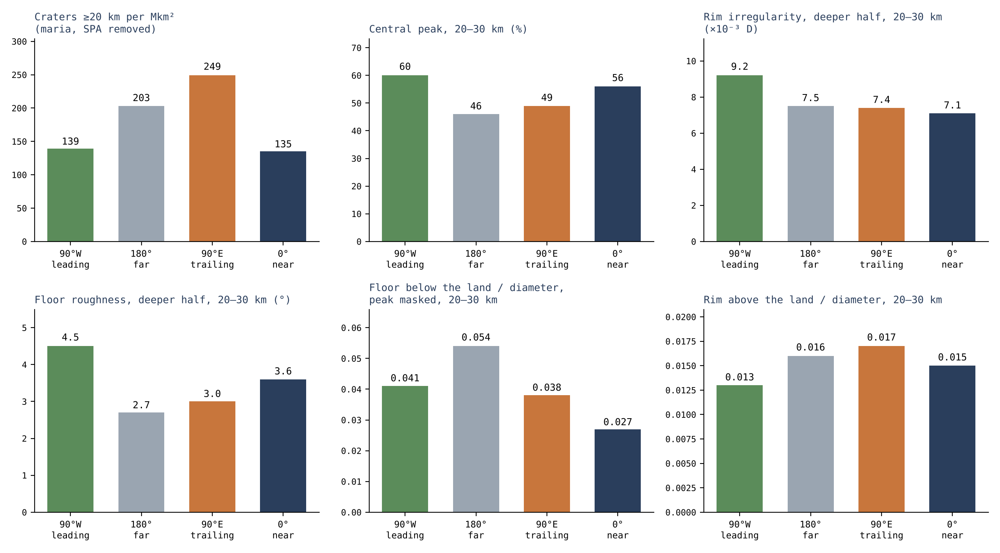
Abbildung 12 stellt dieselben Aufzeichnungen als Säulen nebeneinander, ein Feld für jeden Indikator, sodass der Leser eine Region durch alle hindurch verfolgen kann: Die grüne Säule der vorauslaufenden Hälfte ist niedrig in der Zählung und hoch bei Zentralbergen, Unregelmäßigkeit und Rauigkeit; die graue Säule der Rückseite ist bei den Rändern die höchste und bei den Kraterböden die niedrigste; die dunkelblaue Säule der Vorderseite steht bei beiden Indikatoren am anderen Ende.
Ein Prozess, drei Aufzeichnungen. Jeder Teil des Kraters bewahrt eine eigene Aufzeichnung. Das Zentrum zeichnet die Energie der Landung auf: Der Zentralberg hebt sich dort, wo die Landung genug Energie hatte, um zurückzuspringen. Der Rand zeichnet die Kräfte im Moment der Landung auf: auf der Rückseite nach außen gehoben, auf der vorauslaufenden Hälfte niedrig gedrückt; und die Höhe des Zentralbergs folgt dem Rand. Der Kraterboden zeichnet auf, auf welchem Gelände das Material landete: Die Schichten der Rückseite, zertrümmert und geschmolzen, ließen ihn einsinken; die Maria der Vorderseite füllten ihn von unten. Die Hälften unterscheiden sich so voneinander, wie es das Auswurfmaterial des Körpers selbst vorhersagt. Die nachlaufende Hälfte, wo das Material sanft herunterkam, sammelte die meisten Krater und die kleineren. Die vorauslaufende Hälfte, wo das Gelände in das fallende Material hineinlief, trägt weniger, aber härtere Krater: mehr Zentralberge, gezackte und elongierte Ränder, raue Kraterböden. Die Rückseite, deren geschleudertes Material von der gemeinsamen Rotation nach außen gehoben wurde und deren Schichten unter der Landung zertrümmert und geschmolzen wurden, trägt die höchsten Ränder und die tiefsten Kraterböden. Die Vorderseite, die auf ihr Gelände gedrückt und von unten durch die großen Maria gefüllt wurde, trägt die niedrigsten Ränder und die flachsten und höchsten Kraterböden. Was die Landung nicht veränderte, ist das Material: Im Krater liegt bei jeder Länge das zurückkehrende Material, das ihn bildete, gleichmäßig vom Zentrum bis zum Rand verteilt.
Der Fluss von außen gegenüber der Zählung. Ein Fachmann könnte einwenden, dass die vorauslaufende Hälfte die dichter besetzte sein sollte: Die Literatur sagt vorher, dass ein Mond, der sich entlang seiner Bahn bewegt, auf seiner vorauslaufenden Seite mehr Körper von außen trifft, und legt dort einen vorhergesagten Dichteüberschuss von einigen zehn Prozent fest [S22, S23]. Die Zählung geht in die umgekehrte Richtung und zeigt den Überschuss gerade auf der nachlaufenden Hälfte (§C.3), mit einem Abstand, den der Zufall nicht erklärt. Die morphometrische Analyse löst das auf: Die Krater der vorauslaufenden Hälfte sind weniger, aber härter, so wie Gelände, das in fallendes Material hineinläuft, sie bildet, und die nachlaufende Hälfte vereint die zahlreicheren und sanfteren Krater. Ein Fluss von außen ergibt einen Überschuss auf der vorauslaufenden Hälfte und gibt keine Erklärung für die sanfteren Krater der nachlaufenden Hälfte; das Auswurfmaterial des Körpers selbst, das auf einen sich drehenden Körper zurückfällt, ergibt beide Erscheinungen.
Was wir nun haben, ist ein einziger Prozess, gelesen in drei Aufzeichnungen: wo das Material landete, wie es die Rotation des verbundenen Körpers bestimmte; mit welcher Heftigkeit es landete, wie es im Zentrum und im Rand geschrieben steht; und auf welchem Gelände es landete, wie es im Kraterboden geschrieben steht.
P.2Was außerhalb des Papers bleibt
Dieser Abschnitt legt die Grenzen des Papers fest, damit das, was es behauptet, in seiner richtigen Größe gelesen wird.
Einzelne Krater. Das Paper legt nicht die Quelle jedes einzelnen Kraters oder von SPA fest. Die Bedingung der Größenverteilung. Die Größenverteilung der Krater bleibt eine Bedingung, die noch zu berechnen ist: Die Größen- und Geschwindigkeitsverteilungen des geschleuderten Materials müssen durch Modelle von Zerfall, Landung, Sättigung und Verschüttung geführt werden. Die Größenverteilung ist, wie viele Krater es von jeder Größe gibt; um sie aus dem Modell vorherzusagen, müssen die Größen und Geschwindigkeiten des Geschleuderten durch jeden Schritt getragen werden, der sie verändert – Zerfall im Flug, Landung und spätere Auslöschung alter Krater durch neue (Sättigung) oder durch Bedeckung. Bis die Rechnung abgeschlossen ist, begrenzt die Verteilung das Modell, prüft es aber nicht. Weder Sättigung in jedem Größenbereich noch ein zeitlich konstanter Fluss, auf den sich die Kraterzählungen stützen, darf angenommen werden. Radiometrisches Alter und Krateralter. Ein Vergleich zwischen einem radiometrischen Alter und einem Modellalter kann eine Chronologie prüfen, doch eine Abweichung zwischen ihnen identifiziert für sich genommen kein irdisches Magma: Ein radiometrisches Alter datiert die Abkühlung einer Probe, und ein Alter, das aus Kratern gelesen wird, datiert eine Exposition unter einem angenommenen Fluss, sodass eine Lücke zwischen ihnen zeigt, dass eine der beiden Annahmen falsch ist, und nicht, welche Quelle die Krater bildete.
Aufbaurate. Eine Aufbaurate darf nicht aus der Zahl der verbliebenen Krater geschlossen werden, ohne zu berechnen, wie viele ausgelöscht wurden, wie viele zurückkehrende Körper Material hinterließen und wie viele Verlust verursachten. Die heute sichtbaren Krater sind das, was überdauerte, nicht alles, was landete; ihre Zählung allein ergäbe eine zu niedrige Rate. Material aus der tiefen Quelle, das geschleudert wurde und zurückkehrte, wird einmal in der Bilanz von Paper 3 gezählt. Sein späterer Aufstieg mit der Schale ist nur eine Verlagerung und macht es nicht zu einer neuen Massenquelle: Dasselbe Material wird nicht erneut gezählt, wenn es nach oben getragen wird.
P.3 Das Neue und der Beitrag zur Reihe
Die bestehende Physik. Das Paper stützt sich auf bestehende und gesicherte Physik: ballistischen Flug, Bildung von Sekundärkratern und Stoßbeziehungen [S1–S5]. Ballistischer Flug ist die Bahn eines geschleuderten Körpers allein unter der Schwerkraft; die Bildung von Sekundärkratern ist die Entstehung von Kratern durch Material, das aus einem größeren Krater geschleudert wurde; Stoßbeziehungen wie Gleichung (6) geben den Druck einer Landung aus ihrer Geschwindigkeit an. Das Neue. Das Paper wendet sie auf einen inneren Wurf auf die Schale einer aufsteigenden Kuppel an und formuliert die Anforderungen, denen das Szenario genügen muss. Sein eigenständiger Beitrag ist die Unterscheidung zwischen Rückkehrgeschwindigkeit und Kapazität der Wurfquelle, die Berechnung der Geschwindigkeit relativ zur Oberfläche und die Einbeziehung der Schwerkraft des Ziels und des Durchgangs durch die Atmosphäre in die Bedingungen der Kraterbildung. In einfachen Worten: Die Geschwindigkeit, mit der das zurückkehrende Material auf das Ziel trifft, ist nicht dieselbe Frage wie die, wie viel die Öffnung schleudern kann (§J.1, Gleichung (11)); was einen Krater bildet, ist die Geschwindigkeit relativ zu einer Oberfläche, die sich selbst dreht (§K.2); und ein Krater auf dem Mutterkörper entsteht unter der Schwerkraft des Mutterkörpers und nach dem Durchgang durch seinen Dampf (§C.6, §J.3), nicht unter der heutigen Schwerkraft des Mondes. Der Beitrag zur Reihe. Das Paper wiederholt nicht den Aufbau des Körpers von innen, der den Papers 2 und 3 vorbehalten ist. Was Paper 6 der Reihe hinzufügt, ist das Lesen der Aufzeichnung der Krater als Aufzeichnung der Maria und der Erde: die Quelle der Krater, die Sortierung ihrer Landungen durch die Rotation des verbundenen Körpers und die Reihenfolge, in der die Mareböden erstarrten.
Schlussfolgerungen
Was das Paper gezeigt hat, der Reihe nach. Der Ansatz: eine Zeile für jedes Ergebnis, mit dem Teil, der es trägt. Jede der folgenden Schlussfolgerungen nennt zuerst, was gefunden wurde, und dann, was es für das Bild der Krater bedeutet; der in Klammern angegebene Teil oder Abschnitt ist der Ort, an dem die Rechnung oder die Messung und ihr Test vollständig dargestellt sind.
Das Paper machte sich daran, eine einzige Frage zu beantworten: Wenn die Krater des Mondes nicht von Körpern von außen ausgehoben wurden, was bildete sie, und was zeichnen sie auf? Seine Antwort ist, dass ein Krater der Ort ist, an dem zurückkehrendes Material landete – Material, das aus den Öffnungen, den Maria, hinausgeschleudert wurde und durch die Schwerkraft wieder herunterkam –, und die Teile des Papers prüften diese Antwort auf zwei Wegen. Die ersten fünf Schlussfolgerungen behandeln die Physik der Landung selbst: mit welcher Geschwindigkeit das Material zurückkehrt, welchen Druck es erzeugt und was die Quelle liefern muss, damit das geschieht (Teile J und K). Die letzten vier behandeln die Aufzeichnung auf dem heutigen Mond: die fremde Masse, die die Krater hätten hinterlassen müssen und nicht hinterließen, die Maria als Quelle, die verlorenen Krater und den Unterschied zwischen den Längengraden (Teile C–I und L). Schlussfolgerung 6 verbindet beide: Sie zählt die Tests auf, die entscheiden, ob die Kraterpopulation zum Mechanismus gehört.
Q.1Was das Paper gezeigt hat
Ein zurückkehrender Körper landet mit der Geschwindigkeit, mit der er geschleudert wurde (§K.1). Im geprüften Zentralfeld landet Material, das auf derselben Höhe zu einer sich drehenden Oberfläche zurückkehrt, mit einer Relativgeschwindigkeit, die der Wurfgeschwindigkeit gleicht. Eine Rückkehr durch die Schwerkraft erfordert keine langsame Landung. Der Grund ist einfach: Das Material tritt mit der Geschwindigkeit der sich drehenden Oberfläche plus einer eigenen Aufstiegsgeschwindigkeit aus ; beim Aufstieg bremst die Schwerkraft es, und wenn es auf denselben Abstand vom Zentrum zurückkehrt, gibt sie ihm genau die Geschwindigkeit zurück, die sie ihm nahm. Die Oberfläche darunter dreht sich noch immer mit derselben Rate, sodass der einzige verbleibende Unterschied zwischen beiden die Geschwindigkeit ist (Gleichung 11). Material, das mit 2, 3, 5 oder 8 km/s geschleudert wurde, kehrt mit 2, 3, 5 oder 8 km/s zurück. Bedeutung für das Bild: Das Zurückfallen mildert die Landung nicht. Material, das aus den Öffnungen geschleudert wurde, kehrt mit der vollen Geschwindigkeit zurück, mit der es geschleudert wurde, und das genügt, um einen Krater zu bilden; daher ist die Frage nicht, ob zurückkehrendes Material Krater bilden kann, sondern ob die Quelle es schnell genug schleudern kann (Schlussfolgerung 3).
Bei diesen Geschwindigkeiten erzeugt die Landung Stoßdrücke von einigen zehn Gigapascal (§J.2). Im idealisierten Basaltbeispiel ergeben Geschwindigkeiten von 2–5 km/s Schätzungen des Kontaktdrucks von etwa 13–46 GPa (12.96 GPa bei 2 km/s, 45.56 GPa bei 5 km/s, nach dem gemessenen Verhalten von Basalt unter Stoß [S3]). Das sind lokale Drücke am Kontaktpunkt, bei einer frontalen Landung von Material auf identischem Material, und keine Drücke über den ganzen Krater. Bevor das Ergebnis auf eine Mondprobe angewandt wird, müssen Material und Geometrie angepasst werden. Bedeutung für das Bild: Der Kontakt des zurückkehrenden Materials mit einigen km/s ist ein echtes Stoßereignis, von der Art, die eine Aufzeichnung in den Mineralen hinterlässt, und kein sanftes Absinken. Um die Zahl mit einer bestimmten Mondprobe zu vergleichen, müssen das tatsächliche Materialpaar (etwa geschmolzenes Material, das auf der kälteren Schale landet), der Ankunftswinkel und die Porosität des Ziels eingesetzt werden; das ist ein erklärter methodischer Schritt des Tests und kein Zeichen einer Schwäche des Ergebnisses.
Die Quelle muss das Material schnell schleudern, das Material muss den Dampf durchqueren, und es muss vollständig ankommen (§J.1, J.3, J.5). Die Austrittsgeschwindigkeit, der Durchgang durch die Atmosphäre und das Überdauern eines kohärenten zurückkehrenden Körpers – eines einzigen Körpers, der nicht zerfiel – sind die drei Anforderungen, die dieser Test an Paper 3 weitergibt. Die Energiebilanz. Um ein Kilogramm mit 2–8 km/s zu schleudern, sind 2–32 MJ nötig (Gleichung 5). Der Druck von der Erde liefert sie: Rotation und Sortierung erzeugen den Druck im Erdinnern, und er wird durch die Birne zu den Öffnungen geleitet und spritzt aus ihnen das Material heraus. Das in der Schmelze gelöste Gas – die flüchtigen Stoffe, vor allem Wasser – hilft mit: Wenn die Schmelze aufsteigt und der Druck auf sie fällt, tritt das Gas aus der Lösung aus, dehnt sich aus und fügt seinen Schub hinzu, wie eine Flasche, die geschüttelt wurde und beim Öffnen ihren Inhalt hinausdrückt. Die vollständige Energiebilanz nach den Kosten für Hebung, Strömung und Lastaufnahme (die Hebekosten von 139.78 GPa in Paper 3) ist eine Anforderung des Modells. Der Rückweg. Der Körper muss die Dampfatmosphäre des Szenarios durchqueren; ein Körper von einem Kilometer Durchmesser, der eine Säule von 100 bar durchquert, behält etwa die Hälfte seiner Geschwindigkeit (§J.3). Und Material, das schneller als die Fluchtgeschwindigkeit geschleudert wird, etwa 10.7 km/s im Beispiel, kehrt überhaupt nicht zurück (§J.5). Bedeutung für das Bild: Die drei Anforderungen bestimmen ein einziges Parameterfenster – schnell genug, um einen Krater zu bilden, langsam genug, um gebunden zu bleiben, groß und dicht genug, um den Dampf zu durchqueren –, und der Druck von der Erde, unterstützt von den flüchtigen Stoffen, muss dieses Fenster liefern. Die flüchtigen Stoffe wirken in beide Richtungen: Sie verstärken den Schleuderschub an der Öffnung und verdichten andererseits die Atmosphäre, die der Körper durchqueren muss. Ein einziger Bereich von Bedingungen muss beides liefern, und so wird die Anforderung an Paper 3 weitergegeben.
Ein Stoßtrend oder eine Stoßobergrenze hängt von der Bahn ab, nicht von der Quelle allein (§K.3, J.5). Ein abnehmender Stoßtrend und eine numerische Stoßobergrenze gehören zu einer definierten Bahn und Quelle; sie sind keine allgemeinen Signaturen jedes zurückkehrenden irdischen Materials. Die Landegeschwindigkeit sinkt mit der Höhe bis zum Korotationsradius (etwa 15,883 km mit den Daten der frühen Phase hier) und steigt jenseits davon (Gleichung 14); ob aber eine Folge von Proben einen zeitlichen Trend zeigt, hängt davon ab, wie sich Wurfgeschwindigkeit, Rotation, Ziel und Winkel von Ereignis zu Ereignis änderten. Bedeutung für das Bild: Ein einzelner Stoßwert kann die irdische Quelle weder bestätigen noch ausschließen. Frühere Fassungen der Reihe gaben Obergrenzen von 113 oder 97 GPa und einen Trend von 102→86 GPa an; diese galten für eine Bahnfamilie, und eine Probe oberhalb einer solchen Obergrenze schließt die Quelle für sich genommen nicht aus. Daher ist der Test für jede Bahn und jede Quelle formuliert (§O.1, „Trend in einer Folge von Ereignissen“).
Ein auf dem Mutterkörper entstandener Krater muss unter den Bedingungen des Mutterkörpers berechnet werden (§C.6, J.4). Die Kraterbildung auf dem Mutterkörper erfordert die Schwerkraft und Rheologie des Ziels zu jener Zeit, und anschließend die Berechnung von Erhaltung und Verlagerung nach Paper 3. Rheologie ist die Art, wie das Gelände unter Last fließt oder bricht – ob es sich wie ein starrer Festkörper oder wie ein weicher, langsam fließender Festkörper verhält. Auf dem Mutterkörper betrug die Schwerkraft etwa 8.25 m/s², das Fünffache der heutigen Mondschwerkraft; das Ausheben desselben Kraters erforderte dort einen um ein Mehrfaches schwereren zurückkehrenden Körper als auf dem heutigen Mond (§C.6). Die aufnehmende Oberfläche muss auch dick und fest genug sein, um einen Krater dieser Größe zu bewahren, und der Krater muss zusammen mit der Schale, auf der er liegt, an den Ort gelangen, an dem er heute zu sehen ist (Paper 3). Bedeutung für das Bild: Die Krater der Rückseite lassen sich nicht allein mit den Skalierungsgesetzen (scaling) des heutigen Mondes lesen. Jeder Krater der Aufzeichnung durchlief drei aufeinanderfolgende Schritte – Aushebung auf dem Mutterkörper bei hoher Schwerkraft, Erhaltung und Verlagerung zusammen mit der Schale –, und jeder Schritt ist Teil der Rechnung.
Das Paper definiert den Test, und die Tests von §O.1 entscheiden die Zuordnung. Paper 6 hat eine eigenständige methodische Rolle: Es definiert einen Test für die Landung des zurückkehrenden Materials. Die Zuordnung der Kraterpopulation zum Mechanismus wird durch die Tests von §O.1 entschieden, darunter Wurf und Flug, der Trend in einer Folge von Ereignissen, die irdische Quelle, die Maria als Quelle, der Ring des aktiven Sprühmaterials, die verschütteten Speisungskuppeln, die Längengrade, die fehlende fremde Masse und die auf der Schale getragene Aufzeichnung – jeder zusammen mit dem formuliert, was er liest. Bedeutung für das Bild: Die Physik der Teile J–K zeigt, dass die Landung geschehen kann; die Messungen der Teile C–I und L zeigen, ob sie geschah. Einige dieser Tests wurden bereits durchgeführt – die Maria als Quelle, die verschütteten Speisungskuppeln, die Längengrade und die fehlende fremde Masse –, und ihre Ergebnisse sind die folgenden vier Schlussfolgerungen. Jeder Test liest seine Messung, sodass die Zuordnung Messung für Messung geprüft wird.
Die Krater tragen keine fremde Masse (§L.5). Die fremde Masse ist nicht da. Liest man die Krater als äußere Einschlagkörper, verlangen die sichtbaren Krater bis zum 6.7-Fachen der fremden Masse, die die Kruste enthält, und das gesamte Bombardement der Literatur das Vierzehn- bis Achtzehnfache dessen, was Kruste und Mantel enthalten (eine frühere Fassung gab „bis zum Sechsfachen“ und „das Sieben- bis Siebzehnfache“ an); die Literatur schließt die Lücke mit der Annahme, dass etwa 93% der gelieferten Masse verschwanden. Das Ruthenium der Schmelzen der Mondkrater ist, wo es gemessen wurde, das der Erde (§L.5). Der Indikator. Der Indikator sind die stark siderophilen Elemente – Iridium, Osmium, Platin, Ruthenium, die „eisenliebenden“ Elemente, die in den Kern absanken, als sich der Mond in Schichten trennte, sodass die Kruste fast keine eigenen enthält und jeder Zusatz von außen auffällt. Die Massenbilanz. In der Einschlagslesart verlangen die sichtbaren Krater – kg fremde Masse, 2–6% der oberen 5 km der Kruste; die Kruste enthält höchstens 0.9–2%. Das gesamte Bombardement der Literatur verlangt kg; Kruste und Mantel zusammen enthalten –. Die Literatur überbrückt die Lücke mit einer niedrigen Erhaltungsrate (ein Fünftel statt etwa drei Fünftel) und dem Verlust an den Kern vor etwa 4.35 Milliarden Jahren. Die Rutheniumisotope zeigen, aus welchem Reservoir des Sonnensystems das Element kam, und in den beiden gemessenen Proben entsprechen sie dem irdischen Silikat [S14]. Bedeutung für das Bild: In der Einschlagslesart muss das Verschwinden der fehlenden Masse angenommen werden, Krater für Krater. Im Modell gibt es nichts zu erklären: Das Material, das die Krater bildete, stammte von der Erde, von derselben Art wie die Schale, auf der es landete, und seine siderophilen Elemente tragen den isotopischen Fingerabdruck der Erde.
Die Maria sind die Quelle, und die Krater gingen auf zwei Wegen verloren (§C.1, C.5, L.1; D.1–D.2). Die Maria sind die Quelle des zurückkehrenden Materials: Das Gelände um jedes Mare trägt sein Eisen und Titan, die mit dem Abstand abnehmen (§C.1; gemessen in §C.5 und §L.1). Um die sechs geprüften Maria beträgt das Eisenoxid (FeO) des Geländes 5.96 Gewichtsprozent innerhalb von 50 km vom Rand, gegenüber 2.30 Gewichtsprozent in Kontrollkratern, die mehr als 600 km von jedem Basalt entfernt liegen, und es bleibt bis 600 km über den Kontrollen. Die Auslöschung der Aufzeichnung. Krater gingen zweimal verloren: Auf der Rückseite wurden sie zusammen mit den Quellen verschüttet, die sie bildeten (§D.1), und auf den Mareböden wurden sie eingeschmolzen – 49 von 79 Kratern von 10 km und mehr, mit nur einem einzigen scharfen Krater von 20 km und mehr auf 1.2 Millionen km, gegenüber 207 pro Million km im Hochland (§D.2); auf den Maria des Kontakts verschwanden die großen vollständig (§D.2). Auf den 703,000 km der Mareböden des Kontakts ist kein einziger Krater von 20 km und mehr übrig. Bedeutung für das Bild: Ein Mare ist kein Ziel, das Krater sammelte, sondern eine Quelle, die Material um sich warf – das Eisen ist nahe dem Mare am höchsten und dünnt nach außen aus, und das ist das Abklingprofil einer Quelle. Dieselbe Aktivität, die die Krater bildete, löschte sie auch aus: Auf der Rückseite wurden die Quellen von Schichten bedeckt, die sie und der Mutterkörper ablagerten, und die Krater sanken mit ihnen darunter; auf den offenen Maria landeten die Krater auf einem heißen Mareboden und wurden in ihn eingeschmolzen, etwa drei von fünf (62%). Die Krater, die heute zu sehen sind, sind die zuletzt geschriebene Aufzeichnung, nicht die erste.
Die beiden Hälften des Mondes zeichnen den Auswurf des Körpers selbst auf (Teile F–I, §K.4). Die Längengrade zeichnen den Auswurf des Körpers selbst auf: Die nachlaufende Hälfte, 90° O, ist die dichter besetzte, und die vorauslaufende Hälfte, 90° W, ist diejenige, auf der am heftigsten gelandet wurde – mehr Zentralberge, mehr gezackte Ränder bei den kleinen Kratern, rauere Kraterböden; die Rückseite hat die höchsten Ränder, die vorauslaufende Hälfte die niedrigsten; die Vorderseite hat wegen der Maria die flachsten und höchsten Kraterböden; und im Krater ist bei jeder Länge ein einziges Material. Die drei Aufzeichnungen des Kraters. Das Zentrum zeichnet die Energie der Landung auf, der Rand die Kräfte, die in jenem Moment wirkten, der Kraterboden das Gelände darunter (Teile F–H). Die vorauslaufende Hälfte ist die Hälfte, die der Bewegungsrichtung des Mondes auf seiner Bahn zugewandt ist, zentriert auf 90° W; die nachlaufende Hälfte weist nach hinten und ist auf 90° O zentriert. Die Kraterdichte, mit Entfernung der Maria und von South Pole–Aitken auf beiden Seiten, beträgt 249–252 pro Million km bei 90° O, gegenüber 139–175 bei 90° W. Material, das vom verbundenen und sich drehenden Körper mit seiner Fluchtgeschwindigkeit oder weniger geschleudert wurde, fiel auf ihn zurück, und die Rotation bestimmte, wo und mit welcher Heftigkeit: Auf der nachlaufenden Hälfte kam es sanft und häufig herunter, auf der vorauslaufenden Hälfte lief das Gelände frontal hinein, wie ein Läufer, dem der Regen ins Gesicht schlägt und nicht in den Rücken. Bedeutung für das Bild: Der Unterschied zwischen den Hälften ist kein Unterschied in dem, was fiel, denn das Material im Krater ist bei jeder Länge gleich, sondern in der Art, wie es landete. Ein einziger Prozess, gelesen in drei Teilen jedes Kraters, ergibt ein schlüssiges Bild über den ganzen Mond.
Zusammenfassung. Zusammen beschreiben die neun Ergebnisse einen einzigen Prozess, gesehen von zwei Seiten: der physikalischen Herleitung und der Aufzeichnung auf dem Mond. Die Physik zeigt, dass Material, das aus den Öffnungen geschleudert wurde, mit der Geschwindigkeit zurückkehrt, mit der es austrat, Stoßdrücke von einigen zehn Gigapascal erzeugt und eine Quelle verlangt, die es schnell genug schleudert, sowie einen Körper, der den Dampf vollständig durchquert. Die Aufzeichnung zeigt, dass die Maria die Quelle waren, dass die Aufzeichnung der Krater von derselben Aktivität geschrieben und ausgelöscht wurde, dass die Krater keine fremde Masse tragen und dass auf beiden Hälften des Mondes Material so landete, wie es die Rotation des Körpers selbst vorhersagt. Die entscheidenden Tests sind die von §O.1, jeder mit seiner Messung.
Reproduktion und Karte des Neuen
Der Anhang ist in zwei Lagen gegliedert, jede mit eigenem Zweck. Die erste ist ein Reproduktionsprotokoll der Flugtabelle von §K.1, Schritt für Schritt, sodass jeder Leser sie aus den im Paper angegebenen Eingaben neu berechnen kann. Die zweite ist eine Komponentenkarte, die für jede Komponente des Papers angibt, ob sie bestehendes Wissen, eine Hypothese des Modells oder eine Rechnung dieses Papers ist.
Reproduktionsprotokoll der Flugtabelle
Die Flugtabelle von §K.1 gibt für jede Wurfgeschwindigkeit die Höhe an, die das Material erreicht, die Zeit, die es im Flug ist, den Abstand westlich des Ausgangspunkts, in dem es landet, und seine Landegeschwindigkeit. Zwischen Austritt und Rückkehr bewegt sich das Material nur unter der Schwerkraft des Mutterkörpers, und daher ist seine Bahn ein Abschnitt einer Ellipse, in deren einem Brennpunkt der Mittelpunkt des Mutterkörpers liegt – eine Kepler-Bahn. Das folgende Rezept findet diese Ellipse aus den Anfangsbedingungen und liest dann den Flug aus ihr ab. Die Symbole sind die von Gleichung (10): ist die spezifische Bahnenergie (Energie pro Kilogramm; ein negativer Wert bedeutet, dass das Material gravitativ gebunden ist und zurückkehren muss), ist der spezifische Drehimpuls (die „Drehmenge“ pro Kilogramm, die eine zum Zentrum gerichtete Schwerkraft nicht ändern kann), ist die Stärke des Schwerefeldes des Mutterkörpers, km ist der Wurfradius, und ist die Winkelrotationsrate der Oberfläche.
Schritt a: die Bahnelemente. Für jedes der Tabelle berechnet man aus Gleichung (10):
Hier ist die große Halbachse, die Hälfte der langen Achse der Ellipse; ist die Exzentrizität, das Maß der Streckung der Ellipse (0 für einen Kreis, nahe 1 für eine sehr langgestreckte Bahn); und ist die mittlere Bewegung, die mittlere Winkelrate, mit der das Material die ganze Ellipse umlaufen würde. Je schneller der Wurf, desto näher liegt bei null, desto größer und langgestreckter ist die Ellipse und desto langsamer die mittlere Bewegung.
Schritt b: die Lagewinkel. Am aufsteigenden Austrittspunkt:
Die beiden Winkel legen den Austrittspunkt auf der Ellipse fest. , die wahre Anomalie, ist der tatsächliche Winkel am Zentrum zwischen dem tiefsten Punkt der Ellipse (der Periapsis) und dem Austrittspunkt; ist eine exzentrische Anomalie und nicht die Energie . Die exzentrische Anomalie ist ein Hilfswinkel, der die Berechnung der Zeit entlang einer Ellipse erleichtert (Kepler-Gleichung). Das Material tritt bei aus, durchläuft den höchsten Punkt der Ellipse (die Apoapsis) bei und kehrt am symmetrischen Spiegelpunkt zum selben Radius zurück. Schritt c: Flugzeit und Versatz. Die Rückkehrzeit und der Westversatz an der Oberfläche sind:
In Worten: Die Flugzeit ist die Zeit, die benötigt wird, um vom Austrittspunkt zu seinem Spiegelpunkt zu gelangen, und sie wird durch die Kepler-Gleichung gegeben. Der Westversatz vergleicht zwei Winkel über diese Zeit: den Winkel, um den sich die Oberfläche dreht, , und den Winkel, den das Material um das Zentrum zurücklegt, . Die Oberfläche dreht sich weiter, und daher kommt das Material westlich des Punktes herunter, von dem es ausging, um die Differenz der Winkel mal dem Radius.
Gipfelhöhe und Gültigkeitsbereich der Näherung. Die Gipfelhöhe ist : ist der Abstand des fernsten Punktes der Ellipse vom Zentrum, und wird abgezogen, um die Höhe über dem Wurfradius zu erhalten. Bei langen Flügen ist zu unterscheiden zwischen dem aufsummierten Winkel und einer Lage auf der Oberfläche modulo – nach einer vollen Drehung der Oberfläche kehrt derselbe Punkt wieder –, doch die Werte der Tabelle erfordern keine solche Korrektur. Es gibt keine allgemeine Flugobergrenze von 44 Stunden: Im Grenzfall kann die Flugzeit in der Kepler-Näherung unbegrenzt wachsen, weil die Ellipse unbegrenzt wächst, wenn sich die Energie dem Fluchtwert nähert, und damit auch die Zeit, sie zu durchlaufen. Die Störungen des realen Systems – der sich entwickelnde Körper, die Form des Feldes, der Dampf – begrenzen die Gültigkeit der Näherung.
Die Hill-Abschätzung. Die Hill-Abschätzung verwendet und die Vergleichsgeschwindigkeit . Der Hill-Radius ist der Abstand um den Mond, innerhalb dessen die eigene Schwerkraft des Mondes einen kleinen Körper gegen die Gezeitenanziehung der Erde festhält; ist der Abstand zwischen Erde und Mond, und sind die Massen von Mond und Erde, und ist der Radius des Körpers. Die Vergleichsgeschwindigkeit ist die Geschwindigkeit eines freien Falls aus der Ruhe bei auf die Oberfläche des Körpers; beim späten Bezugspunkt von §J.5 (17,631 km) ergibt sie km und etwa 1.31 km/s. Das ist eine Abschätzung einer Kreisbahn mit einem isolierten Mondfeld im Integral und keine Lösung des Dreikörperproblems.
Die Karte des Neuen
Die folgende Tabelle trennt das, was das Paper von anderen übernimmt, von dem, was es hinzufügt. Sie ist von oben nach unten zu lesen: Die ersten drei Zeilen sind bestehendes Wissen – Sekundärkrater, die durch zurückkehrendes Material entstehen, der Transport von Material von der Erde zum Mond und die Physik des Stoßes und der Skalierungsgesetze von Kratern – und werden mit ihren Quellen angeführt. Die vierte Zeile ist die Grundhypothese des Modells, die dieses Paper und Paper 3 prüfen. Die fünfte ist der rechnerische Beitrag dieses Papers, gültig für die angegebenen Eingaben. Die letzte Zeile ist die Lesart des Modells für die beobachteten Krater: dass sie aus dieser Quelle kamen. Die Flugrechnung allein begründet sie nicht; die Messungen der Teile C–I und L stützen sie, Studie für Studie – die Zählung nach Längengraden (Study 1), der Quellentest (Study 2), die Krater, die in die Mareböden eingeschmolzen wurden (Study 4 und Study 5), die Form der Krater nach Längengraden (Study 6), das Kraterinnere (Study 7), die fehlende fremde Masse (Study 8) und die Erde als letzter Streuer (Study 9) –, wie es Schlussfolgerung 6 festlegt und §O.2 zusammenfasst.
|
Komponente |
Einstufung |
|---|---|
| Zurückkehrendes Material, das Sekundärkrater bildet | früheres Wissen – S1 |
| Transport von Material von der Erde zum Mond | früheres Wissen – S2 |
| Stoß und Skalierungsgesetze von Kratern | Standardphysik – S3–S5 |
| Auswurf aus den Öffnungen des verbundenen Körpers, durch Druck, der von der Erde durch die Birne kam, und Rückkehr des Materials auf den Körper | LEF-Hypothese, geprüft hier und in Paper 3 |
| Die Flug-, Energie- und Sensitivitätstabellen | diese Arbeit – Rechnungen, die von den angegebenen Eingaben abhängen |
| Zuordnung der beobachteten Krater zu dieser Quelle | LEF-Lesart – gestützt durch die Studien dieses Papers (Study 1, 2, 4–9; §O.2) |
Weitere Arbeit — Öffnungen für die Forschung
Die folgenden sieben Punkte sind die Stellen, an denen die nächste Rechnung oder Messung das Bild stärken oder prüfen wird. Sie gliedern sich in zwei Flügel. Die ersten vier vervollständigen die physikalische Dynamik der Landung – was die Quelle schleudert, was den Dampf durchquert und was die Landung mit einem heißen, geschichteten Ziel macht; die letzten drei erweitern die gemessene Aufzeichnung an der Oberfläche. Die breiteren Forschungsthemen der Reihe sind in Paper 12 (Forschungsthemen) zusammengefasst.
Eingefangenes geschleudertes Material. Die Einfangrate von irdischem Material, das nach der Ablösung geschleudert wurde, durch einen Mond in einem Abstand von einigen Erdradien, als Funktion der Wurfgeschwindigkeit und ihrer Richtung; und die Stoß- und Größenaufzeichnung auf den Maria, die es von späteren Körpern von außen unterscheidet (§M.1). Nach der Ablösung schleuderte die Erde weiter Material; das meiste fiel auf die Erde zurück, und ein Teil wurde von der Schwerkraft des Mondes eingefangen. Wie groß dieser Teil war, ist eine Bahnrechnung, und ihre Antwort bestimmt, wie viele der wenigen jungen Krater auf den Maria aus dieser Population zu erwarten sind.
Die Austrittsgeschwindigkeit aus den Öffnungen. Die Wurfenergie kommt vom Druck von der Erde, unterstützt von den flüchtigen Stoffen (§J.1). Ein Modell der explosiven Dekompression einer an flüchtigen Stoffen reichen Schmelze bei den Quelldrücken von Paper 3 wird die Verteilung der Austrittsgeschwindigkeiten liefern und damit den Anteil des Materials, der mit 2–8 km/s zurückkehrt. Explosive Dekompression ist die plötzliche Ausdehnung gelösten Gases, wenn der Druck auf eine Schmelze fällt; das ist die Größe, die Anforderung 3 der Schlussfolgerungen in eine Zahl verwandelt.
Der Durchgang durch die Dampfatmosphäre. Gekoppelte Bahnen von Schwerkraft und Luftwiderstand für Körper von 0.1–10 km durch eine hydrostatische Atmosphäre von 10–1,000 bar, mit Erhitzung und Zerfall, werden bestimmen, welche zurückkehrenden Körper die Schale vollständig erreichen (§J.3). Das Beispiel von §J.3 behandelte nur den Luftwiderstand, für einen Körper bei einem Druck; die volle Rechnung verfolgt Schwerkraft und Luftwiderstand zusammen über den Bereich der Größen und Drücke.
Stoß in einem heißen, geschichteten Ziel. Impedanzanpassung (impedance matching) für einen dichten zurückkehrenden Körper auf einer kalten sialischen Schale über einer beweglichen Basis und die daraus folgenden Skalierungsgesetze der Krater bei m/s² werden die Basalt-auf-Basalt-Abschätzung von §J.2 ersetzen. Impedanzanpassung ist die Berechnung der Art, wie sich der Stoßdruck beim Kontakt zwischen zwei verschiedenen Materialien aufteilt, und sie hängt von Dichte und Steifigkeit jedes von ihnen ab; die sialische Schale ist die leichte, silizium- und aluminiumreiche Kruste des Mutterkörpers.
Die Aufzeichnung der Längengrade. Eine manuelle Prüfung der Zentralberge und der Ränder in den vier Zählkappen von §N.1, der Abgleich mit dem Katalog der Schmelzströme des Mondes [S8] und dieselben Indikatoren nach Krateralter werden bestimmen, wie viel vom Unterschied zwischen 90° W und 90° O die Heftigkeit der Landung ist und wie viel die Maria. Die morphometrischen Indikatoren der Teile F–I wurden automatisch auf dem Höhenmodell erhoben; ihre Prüfung mit dem Auge und die Hinzunahme der Schmelzströme, die eine harte Landung erzeugt, trennen die beiden Ursachen.
Siderophile Signaturen. Ein Mischungsmodell aus irdischem zurückkehrendem Körper und irdischem Ziel für die ältesten Landeschmelzen, um zurückkehrendes Material von asteroidischen Einschlagkörpern anhand der Muster ihrer siderophilen Elemente zu unterscheiden. Da im Modell sowohl der zurückkehrende Körper als auch das Ziel irdisch sind, sollte die Schmelze ein einziges Muster tragen; ein asteroidischer Körper fügte ein zweites, fremdes Muster hinzu. Die in §L.5 erwähnten einzelnen Krater bekannter Größe sind die natürlichen ersten Proben.
Die Strahlen und die Abkühlung der Mareböden auf der Vorderseite (Vorschlag des Autors). Die Grundannahme. Die Maria der Vorderseite blieben lange flüssig, erhitzt durch die innere Wärme des Mondes und die Wärme der Erde; die Basaltebenen, wie Oceanus Procellarum, in dem Copernicus, Kepler und Aristarchus liegen, waren derselben großen Wärme der Erde ausgesetzt und gleichen darin den Mareböden sehr. Material, das auf diesen Mareböden landete, solange sie heiß waren, verlor seine Aufzeichnung. Der Vorschlag. Der Autor schlägt vor, dass Strahlen nur entstehen, wenn Material auf einem bereits abgekühlten Mareboden landet; auf einem heißen Mareboden entstehen sie überhaupt nicht. Die Strahlen sind eine Aufzeichnung im Gelände unter der Oberfläche und nicht Material, das auf ihr liegt. Je weiter die Mareböden abkühlten, desto eher begannen sie, Strahlen zu tragen: Als sie abgekühlt waren, landeten Copernicus, Kepler und Aristarchus mit Wucht auf ihnen und hinterließen die spinnenartigen Strahlen; Diophantus und Delisle landeten, als der Mareboden noch nicht ganz erstarrt war, und hinterließen keine Strahlen; viele andere landeten auf einem heißen Mareboden und hinterließen keine Aufzeichnung. Das Testprotokoll. Die kleinen und mittleren Krater auf der Vorderseite zählen, auf den Maria und auf den Basaltebenen, mit Strahlen und ohne. Der Autor erwartet, dass diejenigen ohne Strahlen zahlreicher sind als diejenigen mit Strahlen, weil die Menge des Materials, das auf dem Mond landete, abnahm, je weiter sich der Mond entfernte.
Verfügbarkeit des Codes
Alle numerischen Ergebnisse dieses Papers lassen sich mit den Skripten des LEF-Reproduktionspakets (Python 3, numpy, scipy) vollständig reproduzieren, das die Werte jedes Abschnitts aus den im Text angegebenen Eingaben ausgibt. Das Paket ist diesem Preprint als Zusatzmaterial beigefügt (LEF_code_and_data.zip). Eine frühere Fassung der Reihe und des Pakets ist unter doi:10.5281/zenodo.22743615 hinterlegt.
Literatur
[S1] Xu, R., Xiao, Z., Wang, Y., Luo, F., & Ma, Y. (2024). Minimum velocity for impact ejecta to form secondaries on terrestrial bodies. Communications Earth & Environment, 5, 641. DOI: 10.1038/s43247-024-01820-x.
[S2] Armstrong, J. C., Wells, L. E., & Gonzalez, G. (2002). Rummaging through Earth’s attic for remains of ancient life. Icarus, 160, 183–196. Authors’ version: arXiv:astro-ph/0207316. Concerns material ejected in impacts; does not validate the internal ejection of LEF.
[S3] Sekine, T., Kobayashi, T., Nishio, M., & Takahashi, E. (2008). Shock equation of state of basalt. Earth, Planets and Space, 60, 999–1003. DOI: 10.1186/BF03352857.
[S4] Stöffler, D., & Metzler, K. (2016). Proposal for a unified classification system of shock metamorphosed planetary silicate rocks — call for comments. 79th Annual Meeting of the Meteoritical Society, abstract 6075. Used here for the principle of calibration by material and minerals; it does not supply a uniform threshold for every sample.
[S5] Housen, K. R., & Holsapple, K. A. (2011). Ejecta from impact craters. Icarus, 211, 856–875. DOI: 10.1016/j.icarus.2010.09.017. The scaling law is used in this paper for sensitivity only; no experimental calibration was performed for a hot, layered sialic target.
[S6] Robbins, S. J. (2019). A new global database of lunar impact craters 1–2 km: 1. Crater locations and sizes, comparisons with published databases, and global analysis. Journal of Geophysical Research: Planets, 124, 871–892.
[S7] Barker, M. K., Mazarico, E., Neumann, G. A., Zuber, M. T., Haruyama, J., & Smith, D. E. (2016). A new lunar digital elevation model from the Lunar Orbiter Laser Altimeter and SELENE Terrain Camera. Icarus, 273, 346–355. (SLDEM2015.)
[S8] Neish, C. D., Madden, J., Carter, L. M., Hawke, B. R., Giguere, T., Bray, V. J., Osinski, G. R., & Cahill, J. T. S. (2014). Global distribution of lunar impact melt flows. Icarus, 239, 105–117.
[S9] Jozwiak, L. M., Head, J. W., Zuber, M. T., Smith, D. E., & Neumann, G. A. (2012). Lunar floor-fractured craters: classification, distribution, origin and implications for magmatism and shallow crustal structure. Journal of Geophysical Research, 117, E11005. doi:10.1029/2012JE004134.
[S10] Otake, H., Ohtake, M., & Hirata, N. (2012). Lunar iron and titanium abundance algorithms based on SELENE (Kaguya) Multiband Imager data. 43rd Lunar and Planetary Science Conference, abstract 1905; Lawrence, D. J., Elphic, R. C., Feldman, W. C., Prettyman, T. H., Gasnault, O., & Maurice, S. (2003). Small-area thorium features on the lunar surface. Journal of Geophysical Research: Planets, 108, 5102. (The maps of the source test, §C.1.)
[S11] Lawrence, D. J., Elphic, R. C., Feldman, W. C., Prettyman, T. H., Gasnault, O., & Maurice, S. (2003). Small-area thorium features on the lunar surface. Journal of Geophysical Research: Planets, 108(E9), 5102. DOI: 10.1029/2003JE002050. The map used is the Lunar Prospector half-degree thorium product (PDS special products, December 2001).
[S12] Zhu, M.-H., Artemieva, N., Morbidelli, A., Yin, Q.-Z., Becker, H., & Wünnemann, K. (2019). Reconstructing the late-accretion history of the Moon. Nature, 571, 226–229. DOI: 10.1038/s41586-019-1359-0. Retention ratio, the siderophile budget of the lunar crust and mantle, and the mass of the bombardment; read here for the literature’s own numbers.
[S13] Collins, G. S., Melosh, H. J., & Marcus, R. A. (2005). Earth Impact Effects Program: A Web-based computer program for calculating the regional environmental consequences of a meteoroid impact on Earth. Meteoritics & Planetary Science, 40, 817–840. DOI: 10.1111/j.1945-5100.2005.tb00157.x. Scaling of transient and final crater diameter, used here for the literature’s reading.
[S14] Worsham, E. A., & Kleine, T. (2020). Ruthenium isotopic composition of lunar impactites. Goldschmidt Conference, abstract 2887.
[S15] Liu, J., Sharp, M., Ash, R. D., Kring, D. A., & Walker, R. J. (2015). Diverse impactors in Apollo 15 and 16 impact melt rocks: evidence from osmium isotopes and highly siderophile elements. Geochimica et Cosmochimica Acta, 155, 122–153. DOI: 10.1016/j.gca.2015.02.004.
[S16] Wang, Y., Wu, B., Xue, H., Li, X., & Ma, J. (2021). An improved global catalog of lunar impact craters (1 km) with 3D morphometric information and updates on global crater analysis. Journal of Geophysical Research: Planets, 126, e2020JE006728. DOI: 10.1029/2020JE006728.
[S17] Li et al. (2025). Discovery of a carbonaceous chondritic fragment in Chang’e-5 regolith samples. Icarus.
[S18] Chinese Academy of Sciences (2025, October 21). Scientists discover rare meteorite relics in Chang’e-6 lunar samples (CI-like chondrite relics identified by mineralogy and oxygen isotopes). https://english.cas.cn/newsroom/cas_media/202510/t20251021_1089914.shtml
[S19] Murase, T., & McBirney, A. R. (1970). Viscosity of lunar lavas. Science, 167, 1491–1493. DOI: 10.1126/science.167.3924.1491.
[S20] Hiesinger, H., Head, J. W., Wolf, U., Jaumann, R., & Neukum, G. (2011). Ages and stratigraphy of lunar mare basalts: a synthesis. In Recent Advances and Current Research Issues in Lunar Stratigraphy, Geological Society of America Special Paper 477, 1–51.
[S21] Evans, A. J., Soderblom, J. M., Andrews-Hanna, J. C., Solomon, S. C., & Zuber, M. T. (2016). Identification of buried lunar impact craters from GRAIL data and implications for the nearside maria. Geophysical Research Letters, 43, 2445–2455.
[S22] Le Feuvre, M., & Wieczorek, M. A. (2011). Nonuniform cratering of the Moon and a revised crater chronology of the inner Solar System. Icarus, 214, 1–20.
[S23] Gallant, J., Gladman, B., & Ćuk, M. (2009). Current bombardment of the Earth–Moon system: emphasis on cratering asymmetries. Icarus, 202, 371–382.
[S24] Whitten, J. L., & Head, J. W. (2015). Lunar cryptomaria: physical characteristics, distribution, and implications for ancient volcanism. Icarus, 247, 150–171.
[S25] Du, J., Fa, W., Wieczorek, M. A., et al. (2019). Thickness of lunar mare basalts: new results based on modeling the degradation of partially buried craters. Journal of Geophysical Research: Planets, 124, 2430–2459. DOI: 10.1029/2018JE005872.
[S26] Mustard, J. F., Li, L., & He, G. (1998). Nonlinear spectral mixture modeling of lunar multispectral data: implications for lateral transport. Journal of Geophysical Research, 103. DOI: 10.1029/98JE01901.
[S27] Pike, R. J. (1977). Size-dependence in the shape of fresh impact craters on the Moon. In Impact and Explosion Cratering, Pergamon, 489–509.
[S28] Melosh, H. J. (1989). Impact Cratering: A Geologic Process. Oxford University Press.
[S29] Tompkins, S., & Pieters, C. M. (1999). Mineralogy of the lunar crust: results from Clementine. Meteoritics & Planetary Science, 34, 25–41.
[S30] Korotev, R. L., Jolliff, B. L., Zeigler, R. A., Seddio, S. M., & Haskin, L. A. (2011). Apollo 12 revisited. Geochimica et Cosmochimica Acta, 75, 1540–1573. DOI: 10.1016/j.gca.2010.12.018.
[S31] Wieczorek, M. A., Neumann, G. A., Nimmo, F., et al. (2013). The crust of the Moon as seen by GRAIL. Science, 339, 671–675. DOI: 10.1126/science.1231530.
[S32] Gong, S., Wieczorek, M. A., Nimmo, F., Kiefer, W. S., Head, J. W., Huang, C., Smith, D. E., & Zuber, M. T. (2016). Thicknesses of mare basalts on the Moon from gravity and topography. Journal of Geophysical Research: Planets, 121, 854–870. DOI: 10.1002/2016JE005008.
Die Manuskripte der Reihe: Duran, Z. The Model (1), LEF Mechanism in Principle (2), LEF Mechanism in Practice (3), The Orbit (4), The Maria (5), The Poles (7), South Pole–Aitken (8), The Stripes (9), Mars (10), The Requirements (11), die zusammengeführten Texte, September 2026. Sie sind die Quelle der Szenariodefinitionen und der internen Rechnungen der Reihe; sie sind keine externe Beobachtungsbestätigung. Der Rahmen für den Vergleich mit den Monddaten ist in Paper 11, The Requirements, zusammengefasst.
Verfügbarkeit der Daten: Hier wurde kein neuer Kraterkatalog erstellt. Die Messungen der Teile C–I und L wurden an veröffentlichten Katalogen, Höhenmodellen und Karten durchgeführt [S6, S7, S10, S11, S16]. Alle Beispieleingaben und die Gleichungen zur Reproduktion stehen im Haupttext und im Anhang. Die Werte der Atmosphäre, die Wurfgeschwindigkeiten und die Sensitivitätskoeffizienten sind Testannahmen und keine Messungen der Entstehungsbedingungen.
Verwendung von KI-Werkzeugen: Der Autor nutzte KI-Assistenten (Claude, Anthropic; ChatGPT, OpenAI; den KI-gestützten Suchassistenten von Google) zum Schreiben und Ausführen der Berechnungsskripte, zur Analyse der Kataloge und Karten, zur Erstellung von Abbildungen und Tabellen, zur Diskussion der Szenarien sowie zur sprachlichen Bearbeitung und Übersetzung. Das Modell und seine Schlussfolgerungen sind die des Autors. Der Autor hat den Inhalt geprüft und trägt die volle Verantwortung dafür.